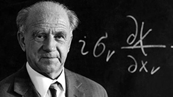
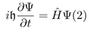
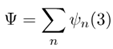
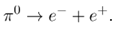
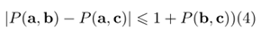
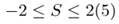
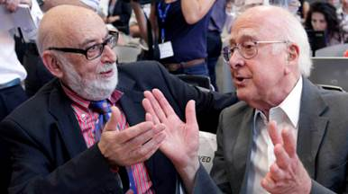

Double Slit Experiment - Thí Nghiệm Hai Khe Hở - Phụ đề Việt ngữ
Huân chương hiệp sĩ Voi của Bohr, trao tặng năm 1947. Phù hiệu là một thái cực đồ (biểu tượng âm dương) có màu đen và đỏ trên nền kim loại bạc. Khẩu hiệu của huân chương: Contraria sunt complementa ("các mặt đối lập bổ sung cho nhau").
Vận dụng sáng tạo Kinh dịch và Đạo đức kinh trong thời đại mới, kết hợp với triết lý của Vật lý lượng tử. Người bắt chước Đất, Đất bắt chước Trời, Trời bắt trước Tự Nhiên.
Mục lục
Tác giả Werner Heisenberg (1901-1976)
Lời giới thiệu của David Lindley
Lời giới thiệu của Paul Davies
Chương 1 Truyền thống cũ và mới
Chương 2 Lịch sử lý thuyết lượng tử
Chương 3 Cách giải thích lý thuyết lượng tử của trường phái Copenhagen
Chương 4 Lý thuyết lượng tử và những cội nguồn của khoa học nguyên tử
Chương 6 Mối quan hệ của lý thuyết lượng tử với các bộ phận khác của khoa học tự nhiên
Chương 9 Lý thuyết lượng tử và cấu trúc của vật chất
Chương 10 Ngôn ngữ và thực tại trong vật lý hiện đại
Chương 11 Vai trò của vật lý hiện đại trong sự phát triển của tư duy nhân loại ngày nay
Niên biểu tóm tắt cuộc đời và sự nghiệp của Werner Heisenberg
Diễn từ đọc tại lễ nhận giải thưởng Nobel
Vướng lượng tử: Từ tranh luận triết học đến giải Nobel 2022
Giải Nobel Vật lý 2013: Trường Higgs - Cơ chế sinh ra khối lượng cho các hạt cơ bản.
TỦ
SÁCH TINH HOA TRI THỨC
Werner Heisenberg
Vật lý và triết học
Cuộc cách mạng trong khoa học hiện đại
Phạm Văn Thiều, Trần Quốc Tuý dịch
Nhà xuất bản Tri thức
Werner Heisenberg
(1901-1976)

Werner Heisenberg (1901 - 1976) là một nhà vật lý và triết học người Đức được biết đến là người đàn ông quản lý để hình thành cơ học lượng tử khi có liên quan đến ma trận, cũng như tạo ra nguyên lý bất định. Nhờ những khám phá này, ông đã giành được giải thưởng Nobel Vật lý năm 1932.
Ngoài ra, ông còn đóng góp cho các lý thuyết về thủy động lực học của chất lỏng hỗn loạn, hạt nhân nguyên tử, ferromagnetism, tia vũ trụ, các hạt hạ nguyên tử, trong số các nghiên cứu khác.
Ông là một trong những nhà khoa học can thiệp vào dự án vũ khí hạt nhân của Đức Quốc xã trong Thế chiến II. Khi chiến tranh kết thúc, ông được bổ nhiệm làm giám đốc của Viện Vật lý Kaiser Willmus.
Ông là giám đốc cho đến khi tổ chức chuyển đến Munich, nơi nó mở rộng và được đổi tên thành Viện Vật lý và Vật lý thiên văn Max Planck.
Heisenberg là chủ tịch Hội đồng nghiên cứu Đức, thuộc Ủy ban Vật lý nguyên tử, của Nhóm công tác Vật lý hạt nhân và chủ tịch của Quỹ Alexander von Humboldt.
Lời giới thiệu của David Lindley
Từ khi khởi đầu khoảng hơn 80 năm trước, cơ học lượng tử đã trở thành một bộ phận cơ bản và cốt yếu trong hành trang của các nhà vật lý lý thuyết. Đã có vô số những cuốn sách giáo khoa dạy lý thuyết này một cách chuẩn mực, nghĩa là trình bày rõ ràng cách sử dụng các phương pháp của nó. Chính các nguyên lý của cơ học lượng tử đã đặt nền móng cho sự vận hành của các laser và các thiết bị điện tử, mà ngày nay được thấy ở những chỗ thật bất ngờ như các đầu DVD và các máy tính tiền trong các siêu thị. Một bác sĩ khám các cơ quan nội tạng của một bệnh nhân, không cần phải thâm nhập trực tiếp vào cơ quan đó, mà lại rất nhẹ nhàng, nhờ các phương tiện tạo ảnh bằng cộng hưởng từ (MRI) cũng lại dựa trên một tính chất lượng tử rất tinh tế của hạt nhân nguyên tử. Lạ hơn nữa, các tính toán của cơ học lượng tử đã đưa ra những tiên đoán về tính chất của các hạt cơ bản phù hợp với những phép đo thực nghiệm với độ chính xác cao đến kinh ngạc. Nói tóm lại, đó là một lý thuyết đã được kiểm nghiệm rất chi li, hữu ích một cách toàn diện và đồng thời cũng rất đáng tin cậy.
Mặc dù đã quen thuộc đến thấu đáo như thế, nhưng đa số các nhà vật lý, nếu bị ép, sẽ đều thừa nhận rằng họ vẫn thấy có điều gì đó lạ lùng, điều gì đấy bí ẩn và không thể nắm bắt được hoàn toàn trong cơ học lượng tử. Sự vận hành nội tại của bộ máy này vẫn thật khó hiểu. Sẽ là rất hữu ích để biết rằng các tiểu luận trong tập sách này được rút ra từ những bài giảng Gifford1 của Werner Heisenberg đọc tại Đại học St. Andrew ở Scotland đúng nửa thế kỷ trước, nhưng vẫn liên quan tới chính những vấn đề còn gây nhiều bối rối ngày nay. Giải pháp mà Heisenberg trình bày, hay đúng hơn, có thể nói, là thái độ triết học mà ông bày tỏ, tất nhiên sẽ giúp ích cho một số người và làm thất vọng một số người khác, cũng hệt như với những thính giả đã nghe ông lần đầu.
Để hiểu được tại sao cơ học lượng tử hiện vẫn khiến người ta bối rối, sẽ là rất hữu ích nếu ta xem xét lại một cách ngắn gọn những nguồn gốc của nó. Trong câu chuyện này, bản thân Heisenberg đã đóng góp hai phát lộ quan trọng.
Trong cái được gọi là lý thuyết lượng tử cũ, khởi nguồn từ Bohr vào năm 1913, các nguyên tử được hình dung như những hệ Mặt trời thu nhỏ. Các electron quay xung quanh hạt nhân nhỏ và nặng theo đúng các định luật của cơ học Newton. Nguyên lý lượng tử xuất hiện trong mô hình này đã đặt thêm một hạn chế đòi hỏi rằng chỉ một số quỹ đạo trong số vô vàn những quỹ đạo khả dĩ là thực sự được phép. Khi electron nhảy giữa các quỹ đạo này thì nguyên tử hoặc nhận vào hoặc phát ra một lượng tử của năng lượng điện từ - mà sau này được gọi là photon - phù hợp với hiệu năng giữa hai quỹ đạo đó. Cơ chế này đã giải thích được tại sao các nguyên tử, vốn đã được biết hàng chục năm trước, lại có những dấu hiệu phổ đặc trưng, khi phát hay hấp thụ ánh sáng chỉ ở một số những tần số xác định.
Vào đầu những năm 1920, lý thuyết lượng tử cũ, đặc biệt là lý thuyết được phát triển bởi Arnold Sommerfeld ở Munich, đã trở nên quá phức tạp và cồng kềnh, và đồng thời lại không giải thích được rất nhiều những nét tinh tế trong phổ nguyên tử. Dường như có lẽ là các electron trong nguyên tử chuyển động theo những quy tắc khác một cách căn bản so với cơ học cổ điển. Werner Heisenberg khi đó còn là một sinh viên của Sommerfeld ở Munich nên đã hiểu rất rõ cuộc khủng hoảng này và chính ông là người, vào năm 1925, đã đưa ra một giải pháp lạ lùng và gây sửng sốt. “Ý tưởng này tự nó đã gợi ý rằng”, - ông nói với chúng ta ở đây, “người ta cần phải viết ra những định luật cơ học không phải như các phương trình cho vị trí và vận tốc của các electron mà là cho các tần số và biên độ trong khai triển Fourier của chúng.”
Phát biểu này quả thật là quá khiêm tốn. Ý tưởng mà Heisenberg nói tới ở đây rõ ràng là của ông và chỉ của ông mà thôi. Cũng như Einstein trong việc tạo dựng nên thuyết tương đối đã phải định nghĩa lại cái mà chúng ta gọi là không gian và thời gian, Heisenberg cũng vậy, vào năm 1925, ông đã buộc phải đánh giá lại một cách sâu sắc không kém về những khái niệm vị trí và vận tốc mà trước đó người ta xem là quá hiển nhiên.
Chuỗi Fourier là một công cụ toán học chuẩn theo đó một dao động bất kỳ, chẳng hạn như dao động của dây đàn violon, đều có thể được biểu diễn như một tổ hợp thích hợp của các âm sơ cấp của dây đàn đó. Trong một biểu diễn như thế, vị trí và vận tốc tức thời của một điểm bất kỳ dọc theo dây đàn đều được biểu diễn bằng một tổng có trọng số của âm cơ bản và các họa âm của dây đó. Sự chói sáng thiên tài của Heisenberg là ở chỗ biết áp dụng chính logic đó cho chuyển động của electron trong nguyên tử. Thay vì tư duy về vị trí và vận tốc của electron như là những đặc trưng xác định nguyên thủy của nó, ông đã viết ra những biểu thức biểu diễn vị trí và vận tốc một cách gián tiếp, như là một tổ hợp của những dao động sơ cấp của nguyên tử.
Nói một cách nhẹ nhàng thì đó là một cách làm hơi kỳ cục. Tuy nhiên, bằng cách thay thế những định nghĩa mới của mình về vị trí và vận tốc vào những định luật chuẩn của cơ học, Heisenberg đã có một phát minh đầy kinh ngạc: bằng một cách hoàn toàn mới ông đã rút ra được định luật về sự lượng tử hoá. Những phương trình của ông cho những đáp số có nghĩa chỉ khi năng lượng của electron nhận một trong tập hợp hạn chế các giá trị. Và như Heisenberg đã quá khiêm tốn để nói một cách trực tiếp trong các tiểu luận ở đây rằng ông chỉ là người phát hiện ra mầm mống của cơ học lượng tử mà thôi.
Điều thú vị là, như Paul Dirac và Pascual Jordan sau này đã xác lập một cách hệ thống, các định luật của cơ học cổ điển đã chuyển sang hệ thống mới của cơ học lượng tử một cách hoàn toàn không thay đổi. Cái thay đổi ở đây là các đại lượng - những yếu tố được coi là cơ sở của cơ học, như vị trí và vận tốc chẳng hạn, bị những định luật này chi phối.
Và đây chính là chỗ bắt đầu những khó khăn. Hai năm sau, trong Nguyên lý bất định nổi tiếng của mình, Heisenberg vẫn tiếp tục chứng minh rằng trong cơ học lượng tử, vị trí và vận tốc không có một ý nghĩa rõ ràng và minh bạch mà nó đã được hưởng trong cơ học cổ điển. Thay vì là những tính chất sơ cấp của một hạt, vị trí và vận tốc, theo một nghĩa nào đó, trở thành một đặc trưng thứ cấp mà nhà thực nghiệm cần rút ra từ một hệ lượng tử nào đó bằng cách làm một phép đo thích hợp. Và phép đo này cũng không phải đơn giản như người ta vẫn quen làm. Bạn đo vị trí của một hạt càng chính xác thì bạn sẽ tìm được vận tốc của nó càng kém chính xác và ngược lại. Nguyên lý bất định thường được diễn đạt dưới dạng như vậy. Tuy nhiên, một cách phát biểu thận trọng hơn nói rằng các hạt lượng tử không có những tính chất nội tại thực sự tương ứng với vị trí và vận tốc và phép đo đã buộc hệ lượng tử phải nhả ra những giá trị cho các đại lượng đó theo cách phụ thuộc vào phép đo đó được tiến hành như thế nào.
Thực tế, ngay cả nghĩ về một hạt lượng tử cũng rất dễ dẫn đến hiểu lầm bởi vì khái niệm được dán nhãn là “hạt” cũng có những ý nghĩa không còn được áp dụng một cách đầy đủ nữa. Chỉ ít tháng sau khi Heisenberg phát biểu phiên bản của mình về cơ học lượng tử, Erwin Schrodinger cùng đã đưa ra phương trình mang tên ông cung cấp một bức tranh khác. Trong bức tranh Schrodinger, electron thuộc một nguyên tử có dạng một sóng dừng trải rộng - nói một cách nôm na, đó là một sóng biểu diễn xác suất để tìm thấy electron ở nơi này hay khác xung quanh hạt nhân. Vậy electron là sóng hay hạt? Câu trả lời, như Heisenberg khẳng định trong các tiểu luận này, là: các từ “sóng” hay “hạt” được hình thức hoá trong cơ học cổ điển bằng sự đúc rút từ kinh nghiệm hàng ngày của chúng ta và theo định nghĩa, hai khái niệm này là loại trừ nhau. Một sóng thì không thể là hạt và một hạt thì không thể là sóng. Một đối tượng lượng tử, tự bản thân nó, chẳng là cái này cũng chẳng là cái kia. Nếu bạn quyết định đo một tính chất giống như sóng (chẳng hạn như bước sóng, trong một thí nghiệm nhiễu xạ hay giao thoa) thì cái mà bạn quan sát được sẽ nhìn giống như sóng. Còn trái lại, nếu đo một tính chất hạt (như vị trí hoặc vận tốc) thì bạn sẽ thấy hành vi giống như hạt.
Khi nhận giải Nobel về Vật lý năm 1932, Heisenberg đã tuyên bố: “cơ học lượng tử… xuất hiện từ những nỗ lực mở rộng nguyên lý tương ứng của Bohr thành một sơ đồ toán học hoàn chỉnh bằng cách chính xác hóa thêm những khẳng định của ông”. Đó cũng là một tuyên bố quá khiêm nhường. Mặc dù có thể ông đã được dẫn dắt bởi nguyên lý tương ứng của Bohr – nói một cách nôm na, đó là ý tưởng cho rằng các hệ lượng tử cần phải chuyển về hành vi và diện mạo cổ điển ở thang vĩ mô – nhưng sự lóe sáng của sáng tạo dẫn tới cơ học lượng tử thuần túy là của Heisenberg. Nhưng vào cuối năm 1926 và đầu năm 1927, Heisenberg và Bohr đã làm việc sát cánh bên nhau ở Copenhagen – hay là đụng đầu nhau thì đúng hơn – và chính là sự trao đổi đầy căng thẳng đó đã tạo ra Nguyên lý bất định lẫn cái gọi là cách giải thích Copenhagen của cơ học lượng tử mà sau đó Bohr đã làm rất nhiều để phát triển nó. Heisenberg không phải đã nhượng bộ ngay những quan điểm của Bohr, nhưng vào thời gian đọc diễn từ nhận giải thưởng Nobel và chắc chắn là khi đọc những bài giảng này, ông đã toàn tâm toàn ý đứng về phe Copenhagen và tin tưởng ở Bohr đối với nhiều nguyên lý mà ông đã đi theo.
Như Heisenberg nói nhiều lần, cốt lõi của vấn đề là chuyện diễn dịch. Ngôn ngữ quy ước của vật lý được hình thành theo thế giới mà chúng ta trải nghiệm - một thế giới mà trong đó những chiếc xe ô tô và các quả bóng bầu dục bay với một vận tốc xác định và ở thời điểm bất kỳ đều có một vị trí xác định, trong khi các sóng tạo nên một lớp các thực thể hoàn toàn khác, được mô tả bởi những thuật ngữ cũng rất khác. Tuy nhiên, ở bên dưới tất cả những chuyện đó là thế giới của các hiện tượng lượng tử mà chúng ta có thể lĩnh hội được thông qua vô số các phép đo và quan sát. Lẽ tự nhiên là chúng ta mong muốn có thể mô tả tốt hơn thế giới lượng tử bằng ngôn ngữ cổ điển quen thuộc của chúng ta, và đó chính là lúc các khó khăn xuất hiện. Thế giới lượng tử không phải là thế giới của các sóng và hạt, của vị trí và vận tốc. Chỉ khi thực hiện các phép đo chúng ta mới làm cho các đại lượng đó có lại ý nghĩa quen thuộc của chúng - một ý nghĩa mặc dù vẫn chịu sự hạn chế được áp đặt bởi Nguyên lý bất định. Mọi cố gắng để mô tả thế giới lượng tử theo ngôn ngữ cổ điển chắc chắn sẽ bị rơi vào sự thiếu nhất quán và mâu thuẫn.
Dưới sức ép của sự không thoả đáng của mỗi bức tranh sóng hay hạt riêng rẽ, Heisenberg đã nói với chúng ta rằng “bằng cách chơi với cả hai bức tranh, bằng cách đi từ bức tranh này sang bức tranh khác rồi quay ngược lại, cuối cùng rồi chúng ta sẽ có một ấn tượng đúng đắn về loại thực tại lạ lùng nằm phía sau các thí nghiệm về nguyên tử”. Điều đó, tôi e rằng, sẽ làm cho khá nhiều độc giả có ấn tượng như là một thủ đoạn lẩn tránh. Kể ra cũng tốt thôi, thưa GS. Heisenberg, - các độc giả này có thể nói - nhưng ngài có thể cho chúng tôi biết cái “loại thực tại lạ lùng” ấy gồm những cái gì không? Lạy Chúa, đó rốt cuộc lại là cái mà chúng ta không thể làm được, chí ít là không thể làm được một cách thoả đáng.
Chiến lược của trường phái Copenhagen để xử lý cái ngõ cụt này là tiếp tục dùng ngôn ngữ cũ - tức là sóng và hạt, vị trí và vận tốc - nhưng theo một cách hiểu chặt chẽ rằng những khái niệm đó được thể hiện trong các từ này không còn theo nghĩa nguyên thủy nữa mà phải thông qua môi giới là các phép đo và quan sát. Và vì vậy đã xuất hiện một khái niệm được phát biểu một cách rộng rãi rằng trong cơ học lượng tử, hành động đo xác định cái được đo hoặc rằng cái được đo và cái đo có liên quan mật thiết với nhau.
Như một hệ quả, dường như tri thức của chúng ta về thế giới trở nên tùy tiện và mang tính chủ quan theo cách hoàn toàn không giống như trong vật lý cổ điển. Nếu như chúng ta nhận được các thông tin khác nhau tùy thuộc vào loại phép đo mà chúng ta tiến hành và nếu chúng ta có thể chọn một cách tự do sẽ làm tập hợp các phép đo này hay khác thì liệu chúng ta có thể kết luận được rằng thế giới của những sự thật rành rành (mà Heisenberg gọi là thế giới của các sự thật cứng), như ông Gradgridn - một nhân vật của Dickens đã từng nói, sẽ bị tiêu mất không? Rằng cái cách thức mà thế giới đó trình hiện liệu có phụ thuộc theo một cách hầu như kỳ quái vào cách thức mà chúng ta chọn để nhìn hay không?
Heisenberg rất hăng hái tranh luận chống lại những suy luận kiểu như vậy. Một phép đo, ông nói, là một hành động riêng biệt và cụ thể, nó cung cấp một mẩu thông tin xác định. Việc thế giới được phát lộ cho chúng ta nhờ khoa học phụ thuộc vào loại thông tin mà chúng ta có thể tìm ra là điều luôn luôn đúng. “Chúng ta cần nhớ rằng”, Heisenberg nói, “cái mà” chúng ta quan sát được không phải là chính bản thân tự nhiên mà là tự nhiên được phô bày trước phương pháp truy vấn của chúng ta”.
Ở đây một lần nữa độc giả lại cảm thấy khó chịu vì câu trả lời không thoả đáng, về mặt cổ điển, thế giới được coi như là một tập hợp các sự thật. Chúng ta càng quan sát tỉ mỉ thì càng thu thập được nhiều những sự thật đó. Tuy nhiên, trong cơ học lượng tử, một vấn đề mới và khá rắc rối là việc biết một loại sự thật về thế giới lại rất hay cản trở vĩnh viễn sự hiểu biết của chúng ta về một loại sự thật khác. Vậy thì khi đó liệu thực sự có một nền tảng vững chắc cho thế giới của những dữ liệu khách quan và thông tin đo được mà chúng ta sống trong đó hay không?
Câu trả lời của trường phái Copenhagen là khẳng định rằng việc đặt ra câu hỏi như vậy về thực chất là đòi hỏi giải thích cơ học lượng tử bằng vật lý cổ điển, điều mà theo định nghĩa là không thể làm được. Nhưng điều đó không mách bảo chúng ta, thay vì, nên suy nghĩ như thế nào. Thông qua sự đề cập đến câu đố đó - tức chúng ta sẽ mô tả hiện trạng này như thế nào khi chúng ta đã chấp nhận ngay từ đầu rằng chúng ta không có ngôn ngữ để làm được điều đó - Heisenberg đã dấn thân vào một chuyến ngao du triết học bắt đầu từ những người Hy Lạp và đưa chúng ta đến với Kant. Điều mà ông làm đó đã tách ông ra khỏi các nhà vật lý hiện đại nhất, những người thường coi khinh hoặc là không đếm xỉa đến tư duy triết học về môn học của họ. Nhưng Heisenberg được giáo dục ở Đức vào đầu thế kỷ XX và có một giáo sư về triết học cổ điển là chính cha ông. Vì vậy, đối với Heisenberg, có một hiểu biết tốt về triết học đơn giản chỉ là biểu hiện của một nền giáo dục phổ thông tốt.
Heisenberg đã rất nhấn mạnh sự phân biệt giữa tinh thần và vật chất của Descartes, cốt lõi của niềm xác tín cổ điển vào thực tại khách quan - tức là một thế giới vật chất tồn tại độc lập và chờ đợi sự xem xét vô tư của chúng ta. Tính tự phụ đó, thực tế, có thể đã là yếu tố trung tâm đối với sự xuất hiện của vật lý cổ điển, nhưng chúng ta không nên vì thế mà xem nó như một chân lý hiển nhiên, không còn tranh cãi. Ví dụ, Aristotle đã hình dung vật chất sờ mó được như là sự áp đặt của hình tháị lên “cái tiềm tàng”, một loại bản chất bao gồm khả năng chứ không phải là thực tại. Nhưng chắc chắn Heisenberg không hề muốn gợi ý rằng Aristotle bằng cách nào đó đã tiên đoán được hàm sóng của Schrodinger. Ông đã đưa ra một ý kiến hữu ích rằng các khái niệm hiện đại của chúng ta về thực tại và vật chất, mặc dù xem ra có vẻ như là dễ hiểu, nhưng không phải bao giờ cũng là rõ ràng và đã xuất hiện thông qua một cuộc vật lộn trí tuệ sâu sắc.
Và nếu như những khái niệm như vậy đã thay đổi trong quá khứ, thì chắc chắn rằng chúng có thể sẽ lại thay đổi. Chỉ bởi vì một tập hợp các ý tưởng và nguyên lý đã tỏ ra là hữu ích trên một vũ đài nào đó, Heisenberg thận trọng, chúng ta không nên bị mê hoặc bởi ý nghĩ rằng chúng ta đã chạm được vào các chân lý áp dụng được ở khắp nơi.
Thuyết tương đối đã cung cấp một ví dụ ít tranh cãi hơn về nguyên lý này. Albert Einstein đã chứng minh rằng không gian và thời gian không phải là tuyệt đối như là trong vũ trụ của Newton và tính đồng thời tùy thuộc vào con mắt của người quan sát. Đối với một số nhà vật lý ở đầu thế kỷ XX, sự phá vỡ đó của quan điểm “lành mạnh” cũ về không gian và thời gian là quá thể và do đó thuyết tương đối đã bị tấn công dữ dội. Nhưng rồi cuộc khủng hoảng đã nhanh chóng qua đi một cách yên lành. Những thay đổi mà thuyết tương đối đòi hỏi là không quá ghê gớm và không phải là không thể chấp nhận được như thoạt đầu người ta tưởng - chủ yếu là bởi vì thuyết tương đối không phủ nhận sự đúng đắn của “thuyết duy thực cứng” - theo như cách gọi của Heisenberg. Chẳng hạn, hai người quan sát có thể thấy một chuỗi các sự kiện nào đó diễn ra theo trình tự khác nhau, nhưng không có sự phủ nhận các sự kiện đó thực sự đã xảy ra và quan điểm chính xác của thuyết tương đối là: nó cung cấp một cách thức hợp lý cho những người quan sát để họ hiểu được tại sao họ lại không nhìn thấy cùng một trình tự thời gian.
Trái lại, với cơ học lượng tử, các giả thiết cổ điển đã bị phá vỡ tan tành, nhưng thay vào vị trí của chúng lại là những giải thích rất không thoả đáng. Được nhìn nhận theo viễn cảnh đó, cách giải thích của trường phái Copenhagen được coi là tốt nhất với tư cách là một hệ thống thiết thực và khéo léo cho phép các nhà vật lý vẫn sử dụng được lý thuyết trong khi tạm cách ly ra một số câu hỏi về cơ bản là không trả lời được. Không có gì đáng ngạc nhiên khi chiến lược này đã gây ra sự phản đối. Sự thảo luận của Heisenberg về những phê phán cách giải thích của trường phái Copenhagen là đề tài được cập nhật nhất ở đây, bởi vì rất nhiều phê phán đó đã phai nhạt từ lâu. Tuy nhiên, có hai ý tưởng đáng kể vẫn còn tồn tại một cách dai dẳng.
Vào đầu những năm 1950, không lâu trước khi đọc những bài giảng này, David Bohm đã đưa ra cách xây dựng lại cơ học lượng tử, sao cho, Bohm tuyên bố, nó sẽ được sự ủng hộ của triết học truyền thống, nhưng vẫn không mất đi một mảy may nào sự thành công đối với thực nghiệm của nó. Theo Bohm, các tính chất của một hạt bao gồm “các biến ẩn” mà người quan sát không thể truy nhập được, nhưng lại quyết định kết cục của phép đo. Khi này, sự không thể tiên đoán được dường như của các sự kiện lượng tử hoá ra là do chúng ta đã không đếm xỉa đến các biến ẩn đó. Về bề ngoài, điều này làm cho cơ học lượng tử trở nên rất giống cơ học cổ điển của các nguyên tử trong một chất khí, ở đó chúng ta có thể đưa ra các tiên đoán có tính chất thống kê về hành vi của chất khí như là một toàn bộ, ngay cả khi thậm chí chúng ta không thể biết được từng nguyên tử riêng lẻ làm gì. Tuy nhiên, về mặt khái niệm, ở đây có một sự khác biệt to lớn. Trong cơ học cổ điển, ta có thể nghĩ cách làm ra những thí nghiệm tinh xảo hơn để xác định chính xác hơn tính chất của các nguyên tử. Trong cơ học Bohm, môn cơ học vẫn còn thu hút được một nhóm những người ủng hộ nhiệt thành nhất, thì thông tin được mang bởi các biến ẩn là thực sự không có hạn chế - như thực tế, nó cần phải thế - nếu như những biểu hiện ra bên ngoài của cơ học lượng tử vẫn còn không thay đổi.
Heisenberg đã cung cấp rất nhiều lý do giàu sức thuyết phục lý giải tại sao cơ học của Bohm không hề hấp dẫn như người ta tưởng, nhưng thái độ cơ bản của ông là cách tiếp cận dùng các biến ẩn đã đạt được sự trở lại một phần thuyết duy thực cổ điển một cách khá mù mờ bằng cái giá phải phá huỷ đi rất nhiều vẻ đẹp toán học và đối xứng của cơ học lượng tử ở dạng thuần khiết của nó. Nói tóm lại, cơ học của Bohm là xấu xí.
Đối lập với quan điểm của trường phái Copenhagen, như chúng ta đã biết, có cả Einstein, người suốt đời gắn bó với “thuyết duy thực cứng”. Năm 1935, với hai đồng nghiệp trẻ của mình là Boris Podolsky và Nathan Rosen, ông đã cho công bố bài báo “Einstein Podolsky Rosen” (EPR) nổi tiếng, trong đó đã vạch ra cái mà các tác giả coi như là một lỗi lầm có thể chứng minh được trong cơ học lượng tử. Sự phân tích EPR yêu cầu chúng ta suy nghĩ về hai hạt xuất hiện từ một sự kiện nào đó, sao cho một số tính chất của chúng có tương quan với nhau, sau đó bay ra xa nhau. Một nhà thực nghiệm đo một tính chất nào đó của một trong hai hạt ấy, ngay lập tức sẽ biết được tính chất tương ứng của hạt kia. Einstein, Podolsky và Rosen lập luận rằng vì thí nghiệm đó cho phép nhà vật lý nhận được một sự hiểu biết về một hạt mà không cần phải quan sát nó một cách trực tiếp, nên các tính chất của hạt phải thuộc về nội tại của nó - nghĩa là chúng đã được cố định từ trước như tư duy cổ điển quy định chứ không phải là bất định như cơ học lượng tử khẳng định.
Trong nhiều năm, quan điểm mà EPR đưa ra dường như, may lắm, được coi là một nhận xét có tính siêu hình. Tuy nhiên, khoảng một chục năm sau khi Heisenberg đọc những bài giảng này, nhà vật lý John Bell đã chế tạo ra một cách thông minh để biến sự phân tích EPR thành một phép kiểm chứng trong thực tiễn, và nếu khó khăn thì trong phòng thí nghiệm. Nếu các hạt, trước khi đo, thực sự đã có những tính chất xác định nhưng chưa biết chứ không phải những thuộc tính không xác định như suy ra từ cơ học lượng tử, thì một thực nghiệm kiểu do Bell đề xuất sẽ cho những kết quả khác với những tiên đoán của cơ học lượng tử. Chỉ sau khi Heisenberg qua đời vào năm 1976 những thực nghiệm như vậy cuối cùng mới được thực hiện, nhưng với những kết quả xác nhận cơ học lượng tử và bác bỏ quan điểm của EPR. Bài học, như Heisenberg đã chỉ ra trong sự bàn thảo của ông về quan điểm của Einstein, đó là: thực tại theo cơ học lượng tử không giống như thực tại cổ điển, bất kể Einstein có thích điều đó hay không.
Cách giải thích chuẩn của cơ học lượng tử, do đó, vẫn tiếp tục tồn tại và sự trình bày tao nhã của Heisenberg vẫn còn giá trị và hiệu lực của nó. Nhưng câu chuyện vẫn còn chưa kết thúc.
Chiến lược của trường phái Copenhagen đã vận hành tuyệt vời đối với các nhà thực nghiệm trong các phòng thí nghiệm của họ, thậm chí đối với cả các nhà vật lý thiên văn nghiên cứu cấu trúc của các sao, các thiên hà, bởi vì trong những trường hợp đó, không bao giờ có sự lầm lẫn nghiêm trọng về chuyện bộ phận nào cần phải xử lý theo cơ học lượng tử và bộ phận nào theo cơ học cổ điển. Nhưng khi mở rộng phạm vi của chúng ta để bao gồm cả toàn bộ Vũ trụ thì sự phân biệt rạch ròi này không thể duy trì được nữa. Vũ trụ xuất phát từ Big Bang, hay nói ngắn gọn, từ sự hỗn độn dày đặc các hạt cơ bản điên cuồng tương tác với nhau. Sau đó, khi Vũ trụ dãn nở và lạnh đi, những cấu trúc bắt đầu đột sinh - mà trước hết là chính vật chất, sau đó là sự kết tập của vật chất dưới dạng các ngôi sao sớm nhất và cứ tiếp tục như vậy cho tới khi chúng ta đi tới Vũ trụ trong trạng thái hiện nay của nó. Trong quá trình tiến hóa đó, một tập hợp thực một cách khách quan các thiên hà, các sao, và các hành tinh bằng cách nào đó đã đột sinh từ đám sương mù lượng tử bất định, nhưng nó đã làm như vậy mà không có sự can thiệp của người đo hay người quan sát bởi vì Vũ trụ là toàn bộ những gì hiện hữu.
Vì quan điểm của trường phái Copenhagen dựa trên sự phân biệt giữa người đo và cái được đo, nên nó sẽ gặp khó khăn khi chỉ có một hệ vũ trụ, một toàn thể duy nhất liên quan với nhau. Nhưng thậm chí có như vậy chăng nữa thì tinh thần Copenhagen vẫn có thể sẽ tiếp tục tồn tại. Khi viện đến quá trình có tên là “mất kết hợp”, các nhà vật lý lập luận rằng sự tương tác nội tại của một hệ lượng tử phức tạp tạo nên một loại tự đo liên tục cho phép hệ, như một toàn bộ, thể hiện những tính chất xác định và cố định thậm chí mặc dù trạng thái lượng tử bên dưới nó là thay đổi liên tục. Do tính dừng của chúng, những tính chất này được nhìn nhận như là độc lập và là hiện thực khách quan, do đó chúng chính là những tính chất mà chúng ta đã tự nhiên gán cho cái nhãn là cổ điển. Nếu như sơ đồ này thành công, nó sẽ là cơ sở cho nhận xét của Heisenberg nói rằng vật lý cổ điển “chỉ là sự lý tưởng hóa trong đó chúng ta có thể nói về các bộ phận của thế giới mà không cần tham chiếu gì đến bản thân chúng ta”.
Điều này hiện vẫn còn chưa được hiểu rõ. Hiện nay, sự phê phán có thể còn dai dẳng trong sự phàn nàn rằng cách giải thích Copengahen về cơ học lượng tử là chưa thỏa đáng vì nó vẫn chưa trả lời được cho chúng ta một số câu hỏi sơ đẳng. Không thể nói, mà thực tế không cần phải nói, thế giới lượng tử “thực sự” là như thế nào và chúng ta sẽ lâm vào khó khăn với những câu hỏi về Vũ trụ. Nhưng tôi thì lại muốn mô tả những thiếu sót đó như là những ưu điểm. Giải thích của trường phái Copenhagen đã cung cấp một cách sử dụng cơ học lượng tử một cách đáng tin cậy, còn những vấn đề mà nó chưa trả lời được cũng chính là những câu hỏi sẽ chưa được giải đáp, chừng nào các nhà vật lý chưa giải quyết được câu đố cuối cùng của họ, đó là làm thế nào kết hợp được nhuần nhuyễn cơ học lượng tử với lý thuyết hấp dẫn. Những thực nghiệm kiểu EPR minh họa cho một cách xung đột giữa hai bộ phận này. Một phép đo trên một hạt, dường như, lại có thể xác lập tức thì những tính chất trước đó còn bất định của hạt kia (đối tác của hạt thứ nhất), thậm chí ngay cả khi, theo những tiêu chuẩn cổ điển, hai hạt đã hoàn toàn tách rời nhau. Tính phi định xứ đó - theo như cách gọi của các nhà vật lý (với sự khó chịu công khai, Einstein gọi nó là “hành động ma quỷ từ xa”) giờ đây là điều không thể phủ nhận được bằng thực nghiệm, nhưng đồng thời nó lại dường như xung đột với tinh thần của tính nhân quả cổ điển được hiện thần trong thuyết tương đối rộng.
Một biện pháp xử lý theo cơ học lượng tử đối với hấp dẫn, theo cách nào đó, sẽ giải quyết được sự xung đột này của các nguyên lý bằng cách chỉ ra tính nhân quả, sự bất định và cấu trúc của không gian và thời gian sẽ được tích hợp với nhau một cách hài hòa như thế nào. Và điều này, đến lượt mình, sẽ rọi ánh sáng vào cái thế giới bên trong được mô tả bởi cơ học lượng tử vẫn còn đầy bí ẩn. Trong khi chờ đợi đến lúc đó, những ai muốn hiểu xem các nhà vật lý đã xoay xở như thế nào để hiểu được cái lĩnh vực cực kỳ thành công nhưng cũng còn nhiều bất ổn này của vật lý, thì cách tốt nhất là hãy đọc những bài giảng đã trở thành kinh điển này của Heisenberg.
David Lindley2
Lời giới thiệu của Paul Davies
Những cuộc cách mạng thực sự trong khoa học kéo theo nhiều khám phá kỳ diệu và những tiến bộ vượt bậc về sự hiểu biết. Chúng cũng làm thay đổi những khái niệm đã từng là căn bản cho một lĩnh vực khoa học. Một sự biến đổi cơ bản như vậy đã xảy ra trong vật lý học vào ba mươi năm đầu của thế kỷ này (tức thế kỷ XX - ND), đạt đến đỉnh điểm của cái gọi là Thời đại Vàng của vật lý học. Kết quả là thế giới quan của các nhà vật lý thay đổi một cách triệt để và không thể đảo ngược được.
Những phát triển tạo ra sự rung chuyển mạnh mẽ kéo theo việc hình thành hai lý thuyết mới đầy ấn tượng. Thứ nhất là lý thuyết về không gian, thời gian và chuyển động, được gọi là thuyết tương đối. Thứ hai là thuyết về bản chất của vật chất và về các lực tác dụng lên nó. Thuyết sau bắt nguồn từ nhận xét của Max Planck cho rằng bức xạ điện từ được phát ra thành các gói nhỏ gián đoạn, hay các lượng tử. Trong những năm 1920 “lý thuyết lượng tử” này đã được xây dựng thành môn cơ học lượng tử. Tác giả cuốn sách này đã đóng vai trò dẫn dắt trong quá trình xây dựng ban đầu môn cơ học lượng tử và trong việc tiếp tục làm sáng tỏ những hệ quả mang tính cách mạng của nó. Những độc giả đã biết đôi chút về cơ học lượng tử hẳn biết rằng “nguyên lý bất định” nổi tiếng, một thành tố then chốt trong vật lý lượng tử, được mang tên Heisenberg.
Mặc dù gần đây người ta đã viết nhiều về những nền tảng khái niệm hết sức xa lạ của cơ học lượng tử, nhưng những thảo luận kỹ lưỡng của một trong những kiến trúc sư chính của lý thuyết lượng tử vẫn có một tầm quan trọng đặc biệt. Cho đến tận lúc qua đời vào năm 1976, Heisenberg vẫn luôn quan tâm sâu sắc đến bản chất của vũ trụ lượng tử và những hệ quả triết học sâu sắc bắt nguồn từ nó. Những điều trình bày dưới đây là một khảo sát bao quát những ý tưởng này, cùng với việc đánh giá thuyết tương đối và một số khía cạnh của vật lý hạt và hạt nhân. Đó là một mẫu mực về sự rõ ràng và là một trong những mô tả dễ hiểu nhất của cái gọi là cách giải thích của trường phái Copenhagen về cơ học lượng tử, một cách giải thích đã trở thành chuẩn mực.
Chủ đề trung tâm trong tác phẩm này của Heisenberg, dựa trên những bài thuyết trình của ông vào những năm 1955-1956 ở Đại học Saint Andrews, đó là: những từ ngữ và khái niệm quen thuộc trong đời sống thường ngày có thể mất đi ý nghĩa của chúng trong thế giới của thuyết tương đối và vật lý lượng tử. Chẳng hạn, những câu hỏi về không gian và thời gian, hoặc những đại lượng đặc trưng cho các đối tượng vật chất như vị trí của chúng, dường như hoàn toàn có lý trong các cuộc đàm luận hằng ngày, lại không thể luôn luôn trả lời được một cách đầy đủ ý nghĩa. Điều này, tới lượt nó, lại có những hệ quả sâu sắc đối với bản chất của thực tại và đối với toàn bộ thế giới quan của chúng ta.
Về nhiều phương diện, việc thay đổi đột ngột về khái niệm do sự đòi hỏi của thuyết tương đối dễ thích nghi hơn là của cơ học lượng tử. Sự thật thì, thuyết tương đối cũng chứa đựng một số ý niệm xa lạ, như sự dãn nở của thời gian và sự co ngắn của chiều dài, không gian bị uốn cong và các lỗ đen. Nó cũng xác nhận rằng một số loại câu hỏi, nghe có vẻ hoàn toàn có lý và có ý nghĩa, nhưng lại không có câu trả lời rõ ràng. Thí dụ, câu hỏi một sự kiện xảy ra vào thời gian nào, hoặc hai sự kiện cách biệt trong không gian có xảy ra ở cùng một thời điểm hay không, có thể là không thể trả lời được, bởi vì lý thuyết nói với chúng ta rằng không có thời gian phổ quát tuyệt đối, hoặc không có một khái niệm phổ quát về tính đồng thời. Những điều như thế có tính chất tương đối và do đó phải được quy về một hệ quy chiếu cụ thể trước thì các câu hỏi mới có ý nghĩa. Nhưng, mặc dù các ý niệm này xa lạ và không quen thuộc, song rõ ràng là chúng không hề vô lý. Và chúng cũng không đặt ra vấn đề thực sự nào về mặt giải thích. Vì lý do này, mà thuyết tương đối cả hẹp lẫn rộng, đều cần được xem như không còn cần phải bàn cãi.
Có lẽ vấn đề triết học sâu sắc nhất đã được thuyết tương đối đặt ra là khả năng vũ trụ có thể đã có nguồn gốc ờ một thời điểm hữu hạn trong quá khứ và nguồn gốc này biểu hiện sự xuất hiện đột ngột không chỉ của vật chất và năng lượng mà còn của không gian và thời gian nữa. Thật vậy, bài học chính của thuyết tương đối là không gian và thời gian không đơn giản là sân khấu nơi diễn ra tấn kịch của thế giới mà còn là một phần của bảng phân vai. Nghĩa là, không-thời gian cũng là một phần của thế giới vật lý như là vật chất vậy; trong thực tế, hai phần này đan bện mật thiết với nhau. Như Heisenberg nhận xét, ý tưởng cho rằng thời gian không kéo dài vô tận về phía sau, mà được tạo ra cùng với vũ trụ đã từng được St. Augustine báo trước từ thế kỷ thứ V. Như vậy là có một đối ứng khoa học của sự sáng thế từ hư vô theo truyền thống Thiên Chúa giáo. Nhưng sự vi phạm đã có đối với khái niệm nhân quả vật lý của chúng ta là khá sâu sắc, và chỉ mới rất gần đây thôi, trong bối cảnh của vũ trụ học lượng tử hiện đại (đã phát triển sau khi Heisenberg qua đời), một bức tranh thoả đáng về nguồn gốc của không-thời gian mới đang ló dạng.
Trái với thuyết tương đối, cơ học lượng tử đặt ra cho chúng ta những vấn đề về khái niệm và triết học lớn hơn nhiều, và Heisenberg đã phát biểu một cách hết sức rành mạch về chính những vấn đề đó. Cần nhấn mạnh rằng lúc đầu phần lớn sinh viên học cơ học lượng tử theo chương trình quy định và ứng dụng nó mà không bị lôi kéo vào những vấn đề triết học. Những ứng dụng của cơ học lượng tử đặc biệt thành công và thâm nhập vào nhiều lĩnh vực của khoa học và công nghệ hiện đại. Không một ai đặt câu hỏi thuyết lượng tử tiên đoán cái gì, mà chỉ hỏi nó nghĩa là gì.
Mấu chốt của cuộc cách mạng lượng tử là nguyên lý bất định của Heisenberg. Đại thể, điều này nói với chúng ta rằng tất cả các đại lượng vật lý quan sát được đều chịu những thăng giáng không thể tiên đoán được, làm cho các giá trị của chúng không được xác định một cách chính xác. Ví dụ, hãy xét vị trí x và xung lượng p của một hạt lượng tử, như electron, chẳng hạn. Người làm thí nghiệm tự do cho một trong các đại lượng này với độ chính xác tùy ý, nhưng chúng lại không thể có những giá trị chính xác một cách đồng thời. Độ bất định của các giá trị của chúng, kí hiệu bởi Δx và Δp tương ứng, sao cho tích Δx.Δp không thể nhỏ hơn một hằng số nào đấy. Vì thế, sự chính xác nhiều hơn về vị trí phải được đổi lại bằng sự kém chính xác hơn về xung lượng, và ngược lại. Hằng số xuất hiện ở đây (gọi là hằng số Planck theo tên của nhà vật lý Đức Max Planck), là một số rất nhỏ, nhỏ đến nỗi các hiệu ứng lượng tử, nói chung, chỉ quan trọng trong lĩnh vực nguyên tử. Chúng ta không cần để ý đến những hiệu ứng đó trong cuộc sống hằng ngày.
Điều quan trọng cần nhận thức ở đây là tính bất định này là một đặc tính cố hữu của tự nhiên chứ không đơn thuần là do những hạn chế về mặt công nghệ trong phép đo. Không phải vì người làm thí nghiệm quá vụng về không đo được chính xác vị trí và xung lượng một cách đồng thời. Đơn giản là vì hạt không đồng thời có giá trị chính xác của hai thuộc tính đó. Người ta đã quen thuộc với tính bất định trong nhiều quá trình vật lý - thí dụ, trong thị trường chứng khoán hoặc trong nhiệt động lực học - nhưng trong những trường hợp này tính bất định là do sự thiếu thông tin chứ không phải là do bất kỳ hạn chế cơ bản nào trong những thứ có thể biết được về các hệ này.
Tính bất định cũng có những hệ quả sâu sắc. Thí dụ, nó có nghĩa là hạt lượng tử không chuyển động theo một quỹ đạo xác định nào trong không gian. Electron có thể rời khỏi vị trí A đến vị trí B, nhưng không thể gán cho nó một quỹ đạo chính xác nối hai vị trí này. Như vậy, mẫu phổ biến của nguyên tử, với các electron quay quanh hạt nhân theo các quỹ đạo xác định, rõ ràng là một sai lầm tệ hại. Heisenberg nói với chúng ta rằng một mẫu như thế có thể có ích trong việc tạo ra một bức tranh nào đấy trong đầu óc chúng ta, nhưng bức tranh đó chỉ gắn kết một cách khá mơ hồ với thực tại.
Sự nhòe đi của vị trí và xung lượng dẫn đến tính bất định cố hữu trong hành vi của các hệ lượng tử. Thậm chí thông tin đầy đủ nhất có được về một hệ (hệ này có thể đơn giản là một hạt chuyển động tự do), nói chung, cũng không đủ để có một tiên đoán xác định về hành vi của hệ đó. Do vậy, hai hệ ban đầu giống hệt nhau có thể diễn tiến thành những thứ khác hẳn nhau. Thí dụ, người làm thí nghiệm có thể bắn một electron tới một mục tiêu và thấy rằng nó bị tán xạ sang bên trái, sau đó lặp lại thí nghiệm trong điều kiện rất tương tự, thì lại thấy electron tiếp theo lại bị tán xạ sang phải.
Tuy nhiên, tính không tiên đoán được này của các hệ lượng tử không có nghĩa là mọi chuyện hoàn toàn hỗn loạn. Cơ học lượng tử vẫn có thể làm cho xác suất tương đối của các khả năng lựa chọn khác nhau được chỉ định một cách chính xác. Như vậy, cơ học lượng tử là một lý thuyết có tính chất thống kê. Nó có thể đưa ra những tiên đoán xác định về các tập hợp của những hệ đồng nhất, nhưng nói chung nó không thể nói với chúng ta một điều gì xác định về một hệ riêng lẻ. Cái mà nó khác với các lý thuyết thống kê khác, như cơ học thống kê, dự báo thời tiết hoặc kinh tế học là ở chỗ: yếu tố may rủi là một đặc tính cố hữu trong bản chất của hệ lượng tử, chứ không đơn thuần bị áp đặt bởi sự hiểu biết hạn chế của chúng ta về tất cả các biến số có tác động đến hệ.
Đây không phải là thứ lý sự cùn. Về phần mình, Einstein đã quá sợ hãi ý tưởng về sự tồn tại tính không thể tiên đoán được cố hữu trong thế giới vật chất, đến nỗi ông đã bác bỏ nó thẳng thừng, với lời đáp lại nổi tiếng “Chúa không chơi trò súc sắc với vạn vật”. Ông khẳng định rằng cơ học lượng tử, trong khi vẫn có thể tiếp tục chỉnh sửa, nhưng vẫn là không hoàn chỉnh; rằng phải tồn tại một mức độ sâu hơn các biến số động lực ẩn có ảnh hưởng đến hệ và ban cho nó một vẻ ngoài bất định và không thể tiên đoán được. Như vậy, Einstein hy vọng rằng bên dưới sự hỗn độn của lượng tử có thể ẩn giấu một phiên bản thu nhỏ của thế giới quen thuộc với động lực học tất định.
Heisenberg và Niels Bohr đã phản đối mạnh mẽ nỗ lực bám vào thế giới quan cổ điển này của Einstein. Cuộc tranh luận, khởi phát vào đầu những năm 1930, kéo dài qua nhiều năm, với Einstein luôn mài sắc và phát biểu lại những ý kiến phản đối của mình. Dai dẳng nhất trong những phản đối này được Boris Podolsky và Nathan Rosen đề xuất năm 1935 và thường được gọi là nghịch lý EPR3 (mặc dầu thực ra không có nghịch lý nào ở đây cả). Nghịch lý này liên quan đến các tính chất của hệ gồm hai hạt tương tác, rồi bay ra xa nhau tới một khoảng cách lớn. Theo cơ học lượng tử, hệ vẫn giữ nguyên là một khối không thể chia cắt mặc cho sự tách xa của các hạt trong không gian.
Những phép đo thực hiện đồng thời trên các hạt được tiên đoán là sẽ cho thấy sự tương quan ngụ ý rằng mỗi hạt mang theo một nghĩa nào đó có thể là rất xác định về mặt toán học, dấu ấn các hoạt động của hạt kia. Sự hợp tác này xảy ra bất chấp những hạn chế do thuyết tương đối hẹp của chính Einstein quy định, nó ngăn cấm mọi liên lạc vật lý xảy ra tức thời giữa các hạt. Theo Einstein, hệ hai hạt đã chứng minh tính không đầy đủ của cơ học lượng tử bởi vì bằng cách thực hiện các phép đo chỉ trên một mình hạt thứ hai (khi sử dụng nó một cách hiệu quả như là một phương tiện thu nhận thông tin về hạt thứ nhất do ủy nhiệm), người làm thí nghiệm có thể suy ra hoặc là vị trí hoặc là xung lượng của hạt thứ nhất ở thời điểm đó, theo ý thích chợt nảy ra. Nhưng điều này chắc chắn dẫn đến hệ quả là, Einstein lập luận, cả hai đại lượng này phải thuộc về một phần tử của thực tại ở thời điểm đó, bởi vì một trong hai đại lượng (chứ không phải cả hai!) có thể được tiếp cận bởi người làm thí nghiệm khi sử dụng một phép đo không thể có (do giới hạn của tốc độ ánh sáng) bất cứ nhiễu loạn nào lên hạt cần quan tâm. Nghịch lý EPR đi vào cốt lõi của các thế giới quan khác nhau mà vật lý cổ điển và vật lý lượng tử áp đặt lên chúng ta. Thế giới quan cổ điển, được Einstein ủng hộ rất nhiệt thành, rất phù hợp với lẽ phải thông thường bởi sự khẳng định thực tại khách quan của thế giới bên ngoài. Nó thừa nhận rằng những quan sát của chúng ta không thể tránh khỏi xâm phạm và làm nhiễu loạn thế giới đó, nhưng những nhiễu loạn ấy chỉ là tình cờ và có thể làm cho nhỏ bao nhiêu cùng được. Đặc biệt, thế giới vi mô của các nguyên tử và các hạt được xem là khác về thang bậc, chứ không phải về phương diện bản thể luận, với thế giới vĩ mô của kinh nghiệm. Như vậy, electron là phiên bản thu nhỏ của viên bi-a đã được lý tưởng hóa, nó cũng có một tập hợp đầy đủ các thuộc tính động lực học như viên bi-a, như là đang ở một nơi nào đó (nghĩa là có vị trí), chuyển động theo một cách nào đó (nghĩa là có xung lượng) và v.v… Trong thế giới cổ điển, những quan sát của chúng ta không tạo ra thực tại: chúng phát triển thực tại. Như vậy, các nguyên tử và các hạt tiếp tục tồn tại với những thuộc tính rất xác định, ngay cả khi chúng ta không quan sát chúng.
Trái lại, cách giải thích cơ học lượng tử của trường phái Copenhagen, mà Heisenberg diễn giải rất rõ ràng ở đây, đã bác bỏ thực tại khách quan của thế giới lượng tử vi mô. Nó phủ nhận, ví dụ, việc một electron có vị trí xác định và có xung lượng xác định trong tình trạng không có sự quan sát thật nào hoặc về vị trí của nó hoặc xung lượng của nó (và cả hai không thể cho các giá trị chính xác một cách đồng thời). Như vậy, electron hoặc nguyên tử không thể được coi như một vật nhỏ bé theo nghĩa hệt như coi viên bi-a là một vật. Người ta không thể nói một cách rõ nghĩa về những thứ mà electron đang làm giữa các quan sát bởi vì chỉ có các quan sát mới tạo ra thực tại của electron đó. Như vậy, phép đo vị trí của electron tạo ra electron-có-một-vị-trí, một phép đo xung lượng của electron tạo ra electron-có-một-xung-lượng. Nhưng không một thực thể nào có thể được xem là đã tồn tại sẵn trước khi phép đo được tiến hành.
Vậy thì, theo quan điểm này, electron là gì? Nó không phải là một vật thể vật lý mà là một mã hóa trừu tượng của tập hợp các tiềm năng hoặc của các kết cục khả dĩ của các phép đo. Nó là một cách tốc kí để chỉ một phương tiện kết nối các quan sát khác nhau thông qua hình thức luận cơ học lượng tử. Nhưng thực tại nằm ở trong các quan sát, chứ không ở trong electron.
Việc phủ nhận thực tại khách quan của thế giới bên ngoài được hàm ý trong cách giải thích của trường phái Copenhagen thường được diễn đạt trong các thuật ngữ thận trọng hơn, nhưng ở đây Heisenberg đã đưa ra những khẳng định thẳng thắn nhất về quan điểm này mà tôi đã biết. Như: “Trong những thực nghiệm về các sự kiện nguyên tử, chúng ta phải làm việc với các vật và các sự kiện, với các hiện tượng hoàn toàn thật như bất kỳ hiện tượng nào trong cuộc sống hằng ngày. Nhưng các nguyên tử và các hạt sơ cấp bản thân chúng không phải là thật; chúng tạo thành một thế giới các tiềm năng hoặc các khả năng chứ không phải là thế giới các vật hoặc sự kiện”. Các ý kiến của Einstein được gán cho là “chủ nghĩa hiện thực giáo điều”, theo Heisenberg, thì đó là một thái độ rất tự nhiên. Thật vậy, rất nhiều nhà khoa học đã tán đồng điều đó. Họ tin rằng các nghiên cứu của họ là có liên quan tới một điều gì đó có thật “ở ngoài kia” trong thế giới vật lý và rằng vũ trụ vật lý có quy luật hoàn toàn không phải là phát minh của các nhà khoa học. Thành công không ngờ của các định luật toán học đơn giản trong vật lý đã cổ vũ cho niềm tin rằng khoa học đang tác động vào thực tại bên ngoài, một thực tại đã và đang tồn tại. Nhưng Heisenberg nhắc nhở chúng ta, cơ học lượng tử cũng được xây dựng trên các định luật toán học đơn giản, chúng cũng rất thành công trong việc giải nghĩa thế giới vật lý, nhưng nó không đòi hỏi thế giới đó phải tồn tại độc lập theo ý nghĩa của chủ nghĩa hiện thực giáo điều. Như vậy, khoa học tự nhiên vẫn thực sự có thể mà không cần đến cơ sở của chủ nghĩa hiện thực giáo điều.
Ở đây, chúng ta tiến tới chủ đề tạo thành cực điểm của luận thuyết Heisenberg. Ông hỏi, chúng ta có thể nói thế nào về các nguyên tử và những thứ tương tự, nếu sự tồn tại của chúng lại mờ ảo như vậy? Chúng ta phải gắn ý nghĩa gì cho những từ ngữ chỉ các phẩm chất của chúng? Ông nhấn mạnh nhiều lần rằng những sự kiện mà trên đó chúng ta xây dựng nên thế giới của kinh nghiệm hoàn toàn liên quan đến những vật vĩ mô - những tiếng lách cách của máy đếm Geiger, những vết đen trên kính ảnh và v.v… Những vật vĩ mô này là tất cả những cái mà chúng ta có thể truyền đạt với nhau một cách đầy đủ nghĩa trong ngôn ngữ thông thường (mượn câu chữ của Bohr). Không có cái phông đã tồn tại này của “các vật” cổ điển, quen thuộc (mà thực tại của chúng dường như đã được đảm bảo), chúng ta sẽ hoàn toàn không thể hiểu gì về thế giới lượng tử vi mô. Vì tất cả các phép đo và quan sát của chúng ta về thế giới vi mô đều được thực hiện bằng cách quy về các thiết bị cổ điển và dẫn tới việc ghi, một cách hết sức xác định, như vị trí của kim trên các đồng hồ đo, chẳng hạn, điều mà mọi người có thể dễ nhất trí và do đó không nảy sinh sự mơ hồ hoặc nhập nhằng về mặt khái niệm.
Để củng cố những lý lẽ của mình, ở đây Heisenberg đã viện đến nguyên lý bổ sung của Bohr. Nguyên lý này thừa nhận sự nhập nhằng căn bản vốn là cố hữu trong các hệ lượng tử, cùng một hệ có thể bộc lộ những tính chất bề ngoài tưởng như trái ngược nhau. Thí dụ, một electron có thể biểu hiện cả như là sóng lẫn như là hạt. Bohr khẳng định rằng những điều này là các mặt bổ sung cho nhau, chứ không phải mâu thuẫn, của cùng một thực thể. Thí nghiệm này có thể phát hiện bản chất sóng của electron, còn thí nghiệm khác lại phát hiện ra bản chất hạt của nó. Cả hai bản chất không thể bộc lộ cùng một lúc; nó phụ thuộc vào quyết định của người làm thí nghiệm cho khía cạnh nào sẽ được phô bày bằng sự lựa chọn thí nghiệm của anh ta. Tương tự, vị trí và xung lượng là các đại lượng bổ sung cho nhau. Người thí nghiệm lại phải quyết định lại đại lượng nào cần được quan sát.
Câu hỏi “Electron là sóng hay là hạt?” có địa vị tương tự như câu hỏi “Nước Úc nằm dưới hay trên nước Anh”. Câu trả lời là “không ở trên cũng không ở dưới mà là cả hai”. Electron có cả hai khía cạnh giống như sóng và giống như hạt, mỗi khía cạnh đó có thể được biểu hiện nhưng không khía cạnh nào có nghĩa khi thiếu đi bối cảnh thí nghiệm thích hợp.
Và như vậy, ngôn ngữ diễn đạt cơ học lượng tử sử dụng các từ ngữ quen thuộc, như sóng, hạt, vị trí v.v…, nhưng ý nghĩa của nó bị hạn chế trong những giới hạn hạn rất chặt chẽ và thường là mơ hồ. Heisenberg cảnh báo chúng ta rằng: “Khi sự mơ hồ và sử dụng ngôn ngữ không có hệ thống này dẫn chúng ta đến những khó khăn, thì nhà vật lý phải rút lui vào sơ đồ toán học và sự tương quan rõ ràng của nó với các sự kiện thực nghiệm.”
Đây thực sự là điểm then chốt của lập luận, bởi vì cơ học lượng tử, ở cốt lõi của nó, là một sơ đồ toán học liên hệ các kết quả quan sát theo cách thống kê. Và đấy là tất cả. Bất kỳ sự diễn giải nào về điều gì đang “thật sự” diễn ra đều chỉ là một mưu toan nhằm truyền cho thế giới lượng tử tính cụ thể giả mạo để dễ dàng tưởng tượng mà thôi. Liên quan đến điều đó, Heisenberg đã xem xét kỹ các công trình của Descartes và Kant dưới ánh sáng của vật lý hiện đại và đi đến kết luận rằng các từ ngữ và các khái niệm gắn liền với chúng không có ý nghĩa tuyệt đối và thật sự rõ ràng. Chúng xuất hiện qua các kinh nghiệm của chúng ta về thế giới, và chúng ta không biết trước được những giới hạn áp dụng chúng. Chúng ta không thể trông chờ vào việc khám phá ra mọi sự thật cơ bản về thế giới chỉ đơn thuần từ sự thao tác một cách trừu tượng các từ ngữ và khái niệm. Đối với Heisenberg, việc một số từ ngữ và các khái niệm đã được ưa dùng nào đấy không thể chuyển một cách giản đơn vào các lĩnh vực thuyết tương đối hoặc lý thuyết lượng tử là điều không thể bị phản bội đặc biệt về mặt triết học.
Mặc dù phần lớn các tranh luận về lượng tử đều đã được đưa tới mức triết học, nhưng cũng đã có nhiều thí nghiệm quan trọng có liên quan trực tiếp đến chủ đề này. Có lẽ quan trọng nhất là việc nâng thí nghiệm tưởng tượng EPR vào địa hạt vật lý thực hành. Năm 1965 John Bell đã mở rộng cuộc tranh luận EPR và nói một cách nôm na, đã chứng minh được rằng, bất cứ lý thuyết nào dựa trên “thực tại khách quan” và đối với nó tín hiệu đi nhanh hơn ánh sáng bị cấm, thì phải thỏa mãn một số các bất đẳng thức toán học. Cơ học lượng tử, theo lý thuyết chuẩn, không thỏa mãn những bất đẳng thức đó, vì vậy người ta phải từ bỏ hoặc là thực tế khách quan (với Bohr và Heisenberg) hoặc lý thuyết tương đối hẹp. Một vài nhà vật lý sẵn lòng đi theo chiều hướng thứ hai. Để kiểm nghiệm các bất đẳng thức của Bell, vào đầu những năm 1980, các thí nghiệm sử dụng các cặp photon từ một nguồn nguyên tử chung đã được Alain Aspect và các đồng sự ở Viện Quang học, ở gần Paris thực hiện. Sau nhiều thí nghiệm công phu, các kết quả đã trở nên rõ ràng. Các bất đẳng thức của Bell thực sự đã bị vi phạm, theo đúng những dự đoán của cơ học lượng tử.
Những kết quả này thu được sau khi Heisenberg qua đời, nhưng tôi đã có may mắn được thảo luận chúng với nhiều cựu đồng sự của ông là những người cùng với Bohr, tạo dựng nên cách giải thích của trường phái Copenhagen trong những năm 1930. Tất cả họ đều có thái độ khá chừng mực trước những kết quả trong thí nghiệm của Aspect, thí nghiệm đã củng cố tuyệt vời cho lập trường của họ, họ nói rằng các kết quả là không thể khác và không có gì đáng ngạc nhiên cả.
Mặc dù vậy, cách giải thích của trường phái Copenhagen không phải là không có những người đả kích. Nhiều nhà vật lý vẫn cảm thấy không thoải mái trước việc một lý thuyết mà trong đó một số giả thiết mang tính nhận thức luận lại phải được thêm vào hình thức luận của nó trước khi đem ra áp dụng. Thực tế là cách giải thích của trường phái Copenhagen dựa trên việc chấp nhận sự tồn tại trựớc của thế giới vĩ mô cổ điển có vẻ như luẩn quẩn và nghịch lý, vì thế giới vĩ mô bao gồm cả thế giới vi mô lượng tử. Mặc dù ảnh hưởng của các hiệu ứng lượng tử đến kim chỉ của các đồng hồ đo hay đến các hạt trên kính ảnh là nhỏ, không đáng kể, nhưng về nguyên tắc, chúng vẫn hiện diện ở đó. Các nhà vật lý muốn rút ra thế giới cổ điển như một loại giới hạn vĩ mô của thế giới lượng tử, chứ không cho nó là thứ có trước.
Điểm yếu ở cách giải thích của trường phái Copenhagen bị bộc lộ khi đặt ra câu hỏi: “Cái gì thực sự xảy ra bên trong một bộ phận của thiết bị đo khi phép đo hạt lượng tử được tiến hành?” Quan điểm của trường phái Copenhagen là người ta chỉ xem xét các thiết bị theo cách cổ điển; nhưng nếu thay vì thế nó được xem xét (một cách hiện thực hơn) như là một tập hợp (mặc dù lớn) các hạt lượng tử, thì kết quả sẽ đáng để người ta lo ngại một cách sâu sắc. Chính cái tính mơ hồ và bất định gây phiền phức cho hạt lượng tử nay sẽ xâm nhập vào toàn bộ hệ thống. Thay vì dụng cụ đo cụ thể hóa một thực tại cụ thể nào đó từ tập hợp các khả năng tiềm tàng, hệ thống tổ hợp gồm “thiết bị + hạt” sẽ chấp nhận một trạng thái vẫn còn thể hiện một phạm vi các khả năng tiềm tàng. Lấy một thí dụ cụ thể, chẳng hạn nếu dụng cụ bị đo được đặt để đo xem electron ở nửa bên phải của hộp hay ở nửa bên trái và cho hiển thị điều đó bằng cách cho kim chỉ lệch sang phải hay sang trái tương ứng, thì kết quả cuối cùng của thí nghiệm đó là đặt hệ thống tổ hợp vào một trạng thái mà không một kết cục nào được chọn. Thay vì thế, trạng thái là một chồng chất của hai trạng thái, một trạng thái bao gồm electron và kim chỉ lệch sang bên phải, còn trạng thái kia bao gồm electron và kim chỉ lệch sang bên trái. Chừng nào hai sự lựa chọn này là loại trừ lẫn nhau, thì sẽ không thể có vấn đề nào nảy sinh mà không thể vượt qua được, nhưng trong các thí nghiệm tổng quát hơn, cũng có thể xảy ra sự giao thoa giữa các lựa chọn đó, khiến cho không rõ là một khả năng nào đó/hay trạng thái lưỡng phân đã xảy ra. Nói một cách ngắn gọn, không phép đo thực sự nào khi đó có thể được nói là đã xuất hiện.
Heisenberg không mấy chú ý đến công trình đồ sộ về “vấn đề đo” của John von Neumann và những người khác. Ông phải nhờ cậy vào lập luận rằng, sớm hay muộn, các hiệu ứng lượng tử (đặc biệt là sự giao thoa giữa các khả năng lựa chọn) sẽ tiêu tán vào môi trường vĩ mô. Điều này làm thỏa mãn phần lớn các nhà vật lý, nhưng không thỏa mãn đối với loại nhà vật lý hiện đại được biết dưới cái tên nhà vũ trụ học lượng tử. Các nhà lý thuyết này mưu toan áp dụng cơ học lượng tử cho vũ trụ nói chung trong nỗ lực làm sáng tỏ sự bí ẩn về nguồn gốc của nó. Nếu toàn bộ vũ trụ là hệ lượng tử mà ta quan tâm thì rõ ràng là không tồn tại một môi trường vĩ mô nào rộng lớn hơn, hoặc các thiết bị đo bên ngoài để tính mờ nhoè lượng tử tiêu tán vào trong đó. Nhiều nhà vũ trụ học lượng tử bác bỏ cách giải thích của trường phái Copenhagen, với sự cần thiết phải có một bộ máy nhận thức luận bổ trợ, và thay vì thế, họ thích sử dụng hình thức luận lượng tử ở giá trị bề mặt của nó hơn. Điều này có nghĩa yên tâm chấp nhận tập hợp đầy đủ các khả năng lựa chọn lượng tử như là những thực tại thực sự tồn tại. Tức là, trong thí nghiệm đo nói ở trên, người ta sẽ khẳng định sự tồn tại của hai vũ trụ, một với electron và kim chỉ ở bên trái, còn một với electron và kim chỉ ở bên phải. Nói chung, một phép đo lượng tử bao hàm việc thừa nhận có vô số các thế giới hay các thực tại cùng song song tồn tại.
Lại phải nói rằng, nhiều phát triển này đã xảy ra sau khi Heisenberg qua đời, mặc dù tôi ngờ rằng ông đã không nghĩ nhiều về những phát triển ấy.
Các chủ đề khác đã được đề cập tới trong cuốn sách này, đáng chú ý nhất là một số tiến bộ bước đầu trong vật lý hạt và vật lý hạt nhân. Heisenberg đã không nói nhiều tới những nỗ lực của chính ông nhằm thống nhất vật lý hạt, nhưng ông cũng đã chỉ ra một số khó khăn nghiêm trọng gặp phải trong việc áp dụng cơ học lượng tử cho các hạt tương đối tính (tức là có vận tốc cỡ vận tốc ánh sáng - ND). Ở đây cũng lại phải nói rằng các sự kiện hiện đã phát triển và vượt qua cuốn sách này. Những phân kì hay những đại lượng vô hạn đáng sợ mà ông đã đề cập tới, ngày nay đã được xử lý bình thường trong đa số các ứng dụng mà không làm hỏng sức mạnh tiên đoán của lý thuyết. Hơn nữa, những phân kỳ này có thể tránh được hoàn toàn trong một số lý thuyết thống nhất hiện đại, đặc biệt là trong cái được gọi là lý thuyết siêu dây. Lý thuyết hiện nay của chúng ta về các hạt sơ cấp cũng đã ở dạng tốt hơn rất nhiều so với khi quyển sách này được viết ra, đồng thời lý thuyết hiện đại về quark và lepton có lẽ đã đáp ứng được những mong muốn của Heisenberg. Còn sự bàn luận của ông về Chúa và luân lý là khá hời hợt và, người ta ngờ rằng, nó được đưa vào chủ yếu là để thỏa mãn những yêu cầu đối với các bài giảng ở Gifford.
Nhưng những điều này chỉ là các nhận xét vụn vặt về một cuốn sách đã trình bày một cách rất thỏa mãn những điểm cốt lõi của một cuộc cách mạng về khái niệm có tên là Vật lý Mới. Heisenberg đã đạt được điều này mà không cần tới toán học và với một số tối thiểu các chi tiết kỹ thuật. Chắc chắn không nhất thiết phải là một nhà vật lý mới có thể theo dõi được các lập luận của ông và đánh giá được bản chất vĩ đại của sự dịch chuyển hình mẫu (tư duy) tiếp sau các cuộc cách mạng lượng tử và tương đối. Sức lôi cuốn lâu bền của cuốn sách này là ở chỗ, với lối trình bày hết sức trong sáng và khúc chiết, nó đưa độc giả từ thế giới vật lý nguyên tử rất khó hiểu và xa lạ đến với thế giới của con người, ngôn ngữ và quan niệm về thực tại được chia sẻ của chúng ta.
Paul Davies4, 1989
Truyền thống cũ và mới
Ngày nay khi nói về vật lý học hiện đại, ý nghĩ đầu tiên của người ta là vũ khí nguyên tử. Mọi người đều nhận thấy ảnh hưởng to lớn của các vũ khí này đến cấu trúc chính trị của thế giới hiện đại và sẵn sàng thừa nhận rằng ảnh hưởng của vật lý lên tình hình chung là to lớn chưa từng thấy so với trước đây. Nhưng phải chăng khía cạnh chính trị của vật lý hiện đại thực sự là quan trọng nhất? Khi thế giới đã tự điều chỉnh cấu trúc chính trị của nó cho phù hợp với các khả năng kỹ thuật mới, thì ảnh hưởng của vật lý hiện đại sẽ còn lại cái gì?
Để trả lời những câu hỏi này, người ta cần nhớ rằng mỗi một công cụ mang theo cùng với nó cái tinh thần mà nhờ tinh thần ấy nó đã được tạo ra. Bởi vì mỗi quốc gia và mỗi phe nhóm chính trị phải quan tâm đến những vũ khí mới theo một cách nào đó, bất kể vị trí và truyền thống văn hóa của phe nhóm này, nên tinh thần của vật lý hiện đại sẽ thấm sâu vào tâm trí của nhiều người và sẽ kết nối tinh thần ấy theo những cách khác nhau với các truyền thống khác. Cái gì sẽ là kết cục tác động của một chuyên ngành khoa học hiện đại lên các truyền thống cũ đầy sức mạnh khác nhau. Trong những phần thế giới mà tại đó khoa học hiện đại đã phát triển, mối quan tâm hàng đầu trong một thời gian dài được hướng tới là những hoạt động thực tiễn, công nghiệp và kỹ nghệ kết hợp với một sự phân tích hợp lý về các điều kiện bên ngoài và bên trong đối với những hoạt động như vậy. Những dân tộc như thế sẽ khá dễ dàng đối phó với các ý tưởng mới bởi vì họ đã có thời gian để điều chỉnh một cách chậm rãi và từ từ theo phương pháp tư duy của khoa học hiện đại. Ở những phần khác của thế giới, những ý tưởng này sẽ phải đương đầu với những nền tảng tôn giáo và triết học của văn hóa bản địa. Vì sự thật là những kết quả của vật lý học hiện đại động chạm đến những khái niệm cơ bản như thực tại, không gian và thời gian, nên sự đối đầu này có thể dẫn đến những phát triển hoàn toàn mới, chưa thể nhìn thấy trước. Một nét đặc trưng của sự gặp gỡ này giữa khoa học hiện đại và các phương pháp tư duy cũ sẽ là tính quốc tế trọn vẹn của nó. Trong sự trao đổi các tư tưởng này, một bên, là truyền thống cũ, sẽ khác nhau trong những phần thế giới khác nhau, còn bên kia sẽ giống nhau ở mọi nơi và do đó kết quả của sự trao đổi này sẽ được lan truyền khắp tất cả những nơi mà các cuộc thảo luận diễn ra.
Vì những lý do như vậy, nên sự cố gắng thảo luận các ý tưởng đó của vật lý hiện đại bằng một ngôn ngữ không quá kỹ thuật, để nghiên cứu các hệ quả triết học của chúng và để so sánh chúng với một số truyền thống cũ, không phải không quan trọng.
Có thể cách tốt nhất để đi vào các vấn đề vật lý hiện đại là mô tả lịch sử quá trình phát triển lý thuyết lượng tử. Sự thật là lý thuyết lượng tử chỉ là một lĩnh vực nhỏ của vật lý nguyên tử và vật lý nguyên tử lại chỉ là một lĩnh vực rất nhỏ của khoa học hiện đại. Tuy nhiên, những thay đổi quan trọng nhất liên quan đến khái niệm về thực tại đã diễn ra chính là trong lý thuyết lượng tử, và cũng chính trong lý thuyết lượng tử ở dạng hoàn chỉnh của nó đã cô đúc và kết tinh các ý tưởng mới của vật lý nguyên tử. Những thiết bị thí nghiệm khổng lồ và cực kỳ phức tạp cần thiết cho công cuộc nghiên cứu vật lý hạt nhân lại cho thấy một khía cạnh rất ấn tượng khác của bộ phận này của khoa học hiện đại. Nhưng về mặt kỹ thuật thực nghiệm, thì vật lý hạt nhân đã thể hiện một sự mở rộng đến cực hạn phương pháp nghiên cứu đã quyết định tới sự phát triển của khoa học hiện đại tính từ thời Huyghens hay Volta hoặc Faraday. Theo một ý nghĩa tương tự, tính phức tạp toán học gây nản lòng ở một số bộ phận nào đấy của lý thuyết lượng tử có thể được cho là thể hiện hậu quả cực hạn của các phương pháp của Newton hoặc Gauss hoặc Maxwell. Nhưng sự thay đổi trong khái niệm về thực tại được thể hiện trong lý thuyết lượng tử không đơn giản là một sự tiếp nối của quá khứ; nó có vẻ là một chỗ đứt gãy thực sự trong cấu trúc của khoa học hiện đại. Do đó, chương đầu tiên trong số các chương tiếp theo sẽ được dành cho việc nghiên cứu lịch sử phát triển của lý thuyết lượng tử.
Lịch sử lý thuyết lượng tử
Nguồn gốc lý thuyết lượng tử được gắn liền với một hiện tượng nổi tiếng, nhưng không thuộc về những phần trung tâm của vật lý nguyên tử. Một mẩu vật chất bất kỳ khi bị đốt nóng thì bắt đầu phát sáng, ban đầu nóng đỏ rồi nóng trắng ở những nhiệt độ cao hơn. Màu sắc không phụ thuộc vào bề mặt vật liệu, và đối với vật đen nó chỉ phụ thuộc duy nhất vào nhiệt độ. Do đó, bức xạ do một vật đen như thế phát ra ở nhiệt độ cao đúng là đối tượng thích hợp cho nghiên cứu vật lý. Nó là một hiện tượng đơn giản và tưởng như có thể tìm được sự giải thích đơn giản nhờ các định luật đã biết về bức xạ và nhiệt. Nỗ lực tiến hành ở cuối thế kỷ XIX của Rayleigh và Jeans đã thất bại, tuy nhiên nó đã phát lộ những khó khăn nghiêm trọng. Không thể mô tả những khó khăn này ở đây bằng những thuật ngữ đơn giản được. Chỉ cần nói rằng việc ứng dụng các định luật đã biết không dẫn đến các kết quả hợp lí. Năm 1895, khi Planck bước vào hướng nghiên cứu này, ông đã cố gắng chuyển vấn đề từ bức xạ tới nguyên tử phát xạ. Việc chuyển này đã không tháo gỡ được bất kỳ khó khăn nào cố hữu trong vấn đề này, nhưng nó làm cho việc giải thích các sự kiện thực nghiệm trở nên đơn giản. Cũng chính thời gian này, vào mùa hè năm 1900, Curbbaum và Rubens ở Berlin đã thực hiện các phép đo mới rất chính xác về phổ của bức xạ nhiệt. Khi Planck được biết về những kết quả này, ông đã tìm cách biểu diễn những kết quả đó bằng các công thức toán học đơn giản phù hợp với nghiên cứu của ông về mối liên hệ tổng quát giữa nhiệt và bức xạ. Một hôm Planck và Rubens gặp mặt uống trà ở nhà của Planck và so sánh những kết quả mới nhất của Rubens với công thức mới do Planck đề xuất. Việc so sánh đã cho thấy một sự phù hợp hoàn toàn. Định luật Planck về bức xạ nhiệt đã được phát minh ra như thế.
Và cũng từ đó bắt đầu công việc nghiên cứu lý thuyết sôi nổi của Planck. Cách giải thích vật lý đúng đắn của công thức mới là gì? Vì Planck, từ công trình trước đó của mình, có thể dễ dàng chuyển đổi công thức của ông thành một phát biểu về nguyên tử phát xạ (cái gọi là dao động tử), hẳn ông đã nhanh chóng phát hiện ra rằng công thức của ông trông như thể một dao động tử chỉ có thể chứa các lượng tử năng lượng gián đoạn - một kết quả khác xa với những gì đã biết trong vật lý cổ điển, đến mức chắc hẳn lúc đâu ông không dám tin vào kết quả đó. Nhưng trong thời kỳ làm việc căng thẳng nhất, mùa hè năm 1900, cuối cùng ông đã tin rằng không có con đường nào thoát khỏi kết luận ấy. Theo lời kể của con trai Planck, thì cha anh đã nói với anh về những ý tưởng mới mẻ của mình trong một lần dạo bộ dài qua rừng Grünewald ở ngoại ô Berlin. Trong cuộc dạo bộ này, ông giải thích rằng, có lẽ ông đã thực hiện được một khám phá hạng nhất, mà có lẽ chỉ có thể sánh với những khám phá của Newton. Như vậy, hẳn lúc đó Planck đã nhận ra rằng công thức của ông đã chạm đến những nền tảng của sự mô tả tự nhiên của chúng ta, và rằng một ngày nào đó những nền tảng ấy sẽ bắt đầu dịch chuyển từ vị trí truyền thống hiện tại của chúng tới một vị trí ổn định mới còn chưa biết. Planck, người vốn rất bảo thủ trong toàn bộ quan điểm của mình, không thích kết quả này chút nào, nhưng ông vẫn công bố giả thuyết lượng tử của mình vào tháng 12 năm 1900.
Ý tưởng cho rằng năng lượng có thể phát ra hoặc hấp thụ chỉ theo những lượng tử năng lượng gián đoạn là mới mẻ đến mức nó không thể ăn nhập với khuôn khổ truyền thống của vật lý học. Một ý đồ của Planck nhằm dung hòa giả thuyết mới của mình với các định luật cũ về bức xạ đã thất bại ở những điểm cốt yếu. Phải mất tới 5 năm mới có thể thực hiện bước tiếp sau theo hướng mới mẻ này.
Lần này thì là chàng trai Albert Einstein, một thiên tài cách mạng trong số các nhà vật lý, đã không sợ phải dấn bước ra khỏi các khái niệm cũ. Có hai bài toán mà trong đó ông có thể sử dụng các ý tưởng mới. Một là hiện tượng được gọi là hiệu ứng quang điện, đó là sự phát ra các electron từ bề mặt kim loại dưới tác dụng của ánh sáng. Các thí nghiệm, đặc biệt là của Lenard, đã chỉ ra rằng năng lượng của các electron phát xạ không phụ thuộc vào cường độ ánh sáng, mà chỉ phụ thuộc vào màu sắc của nó hay chính xác hơn là vào tần số của nó. Điều này là không thể hiểu được trên cơ sở lý thuyết bức xạ truyền thống. Einstein đã giải thích được các quan sát đó bằng cách diễn giải giả thuyết của Planck khi nói rằng ánh sáng bao gồm các lượng tử năng lượng truyền qua không gian. Năng lượng của một lượng tử ánh sáng, theo những giả thiết của Planck, sẽ bằng tần số của ánh sáng nhân với hằng so Planck.
Một vấn đề khác là nhiệt dung của các vật rắn. Lý thuyết truyền thống dẫn đến các giá trị của nhiệt dung phù hợp với những quan sát ở nhiệt độ cao, nhưng lại không phù hợp ở nhiệt độ thấp. Lại một lần nữa, Einstein đã chỉ ra rằng người ta có thể hiểu được tính chất này bằng cách áp dụng giả thuyết lượng tử cho các dao động đàn hồi của nguyên tử trong vật rắn. Hai kết quả này đánh dấu một bước tiến rất quan trọng, vì chúng phát lộ sự hiện diện của lượng tử tác dụng Planck - hằng số mang tên ông cũng còn được các nhà vật lý gọi như vậy - trong nhiều hiện tượng không có liên quan trực tiếp với bức xạ nhiệt. Đồng thời chúng cũng đã phát lộ một đặc điểm mang tính cách mạng sâu sắc của giả thuyết mới này, bởi vì hiện tượng đầu tiên trong số đó đã dẫn đến sự mô tả về ánh sáng hoàn toàn khác với bức tranh sóng truyền thống. Ánh sáng có thể được giải thích hoặc như bao gồm các sóng điện từ, theo lý thuyết của Maxwell, hoặc như bao gồm các lượng tử ánh sáng, tức các gói năng lượng, truyền qua không gian với tốc độ cao. Nhưng liệu nó có thể là cả hai hay không? Lẽ dĩ nhiên, Einstein thừa biết rằng hiện tượng nổi tiếng về nhiễu xạ và giao thoa chỉ có thể giải thích được trên cơ sở bức tranh sóng. Ông không thể bàn cãi về điều mâu thuẫn hoàn toàn giữa bức tranh sóng và ý tưởng về lượng tử ánh sáng; và thậm chí ông cũng không có ý định loại bỏ tính không nhất quán của cách giải thích này. Ông đơn giản chỉ lấy mâu thuẫn ấy như một điều gì đó mà ta chỉ có thể hiểu được rất lâu sau này.
Trong lúc ấy, các thí nghiệm của Becquerel, Curie và Rutherford đã làm sáng tỏ được một số vấn đề có liên quan đến cấu trúc nguyên tử. Năm 1911 những quan sát của Rutherford về sự tương tác của các tia α - đâm xuyên qua vật chất đã dẫn đến mẫu nguyên tử nổi tiếng của ông. Nguyên tử được hình dung như bao gồm một hạt nhân tích điện dương và chứa gần hết toàn bộ khối lượng nguyên tử và các electron quay quanh hạt nhân như các hành tinh quay quanh mặt trời. Liên kết hóa học giữa các nguyên tử của các nguyên tố khác nhau được giải thích như là kết quả của sự tương tác giữa các electron bên ngoài của các nguyên tử kề cận; tương tác ấy không có liên quan trực tiếp với hạt nhân nguyên tử. Hạt nhân xác định các tính chất hóa học của nguyên tử thông qua điện tích của nó, đến lượt mình, điện tích này cố định số lượng các electron trong nguyên tử trung hoà. Lúc đầu mẫu nguyên tử này không thể giải thích được một tính chất đặc trưng nhất của nguyên tử, tức là tính bền vững rất cao của nó. Không một hệ hành tinh nào tuân theo các định luật cơ học của Newton sẽ quay về cấu hình nguyên gốc của nó sau khi va chạm với một hệ khác tương tự. Nhưng nguyên tử của nguyên tố carbon, chẳng hạn, sẽ vẫn còn là nguyên tử carbon sau bất kỳ va chạm hoặc tương tác nào trong liên kết hóa học.
Giải thích về tính bền vững bất thường này đã được Bohr đưa ra vào năm 1913, nhờ áp dụng giả thuyết lượng tử của Planck. Nếu nguyên tử có thể thay đổi năng lượng của nó chỉ bởi những lượng tử năng lượng gián đoạn, thì điều này hẳn có nghĩa là nguyên tử chỉ có thể tồn tại ở những trạng thái dừng gián đoạn, và trạng thái thấp nhất thuộc số đó là trạng thái bình thường của nguyên tử. Do đó, sau bất cứ loại tương tác nào thì nguyên tử cuối cùng vẫn sẽ luôn trở về trạng thái bình thường của nó.
Bằng cách áp dụng thuyết lượng tử vào mẫu nguyên tử này, Bohr không chỉ giải thích được tính bền vững của nguyên tử mà trong một số trường hợp đơn giản còn giải thích được bằng lý thuyết quang phổ vạch phát xạ của các nguyên tử sau khi được kích thích nhờ phóng điện hoặc đốt nóng. Lý thuyết của ông dựa trên cơ sở kết hợp cơ học cổ điển đối với chuyển động của các electron với những điều kiện lượng tử được áp đặt cho các chuyển động cổ điển nhằm xác định các trạng thái dừng gián đoạn của hệ. Sau này Sommerfeld đã đưa ra một cách phát biểu toán học nhất quán đối với các điều kiện đó. Bohr cũng đã ý thức rất rõ ràng về thực tế là các điều kiện lượng tử đó, về một phương diện nào đấy, đã làm hỏng tính nhất quán của cơ học Newton. Trong trường hợp đơn giản về nguyên tử hydro, người ta có thể, từ lý thuyết của Bohr, tính được các tần số của ánh sáng phát xạ bởi nguyên tử, và kết quả phù hợp hoàn toàn với các quan sát. Tuy nhiên, các tần số này khác với các tần số quỹ đạo và các họa ba của chúng thuộc các electron quay quanh hạt nhân, và thực tế này đã chỉ ra ngay lập tức rằng lý thuyết vẫn còn đầy những mâu thuẫn. Nhưng nó đã chứa đựng phần cốt yếu của chân lý. Nó đã giải thích được một cách định tính tính chất hóa học của các nguyên tử và quang phổ vạch của chúng; sự tồn tại các trạng thái dừng gián đoạn cũng đã được các thí nghiệm của Franck và Hertz, Stern và Gerlach kiểm chứng.
Lý thuyết của Bohr đã mở ra một con đường nghiên cứu mới. Một số lượng khổng lồ các tài liệu thí nghiệm đã thu thập được nhờ những nghiên cứu quang phổ trong suốt nhiều thập kỷ trước đó giờ có thể được sử dụng để rút ra những thông tin về các định luật lượng tử xa lạ chi phối chuyển động của các electron trong nguyên tử. Nhiều thí nghiệm hóa học cũng đã được sử dụng cho mục đích tương tự. Cũng chính từ lúc này các nhà vật lý đã học được cách đặt ra những câu hỏi đúng; mà đặt được câu hỏi đúng thường là đã đi được hơn nửa chặng đường giải quyết vấn đề.
Vậy những câu hỏi này là gì? Thực tế thì tất cả các vấn đề đó phải liên quan đến những mâu thuẫn bên ngoài rất lạ lùng giữa các kết quả thí nghiệm khác nhau. Làm thế nào mà cùng một bức xạ tạo ra bức tranh giao thoa, và do đó phải bao gồm các sóng, lại cũng sinh ra hiệu ứng quang điện, và do đó phải bao gồm các hạt chuyển động? Tại sao tần số của chuyển động theo quỹ đạo của electron trong nguyên tử lại không trùng với tần số của của bức xạ phát xạ? Phải chăng điều này có nghĩa là không có chuyển động theo quỹ đạo? Nhưng nếu ý niệm chuyển động theo quỹ đạo là không đúng, thì điều gì xảy ra đối với các electron ở bên trong nguyên tử? Người ta có thể thấy các electron chuyển động qua một buồng sương và đôi khi chúng bị đánh bật ra ngoài nguyên tử; vậy tại sao chúng lại không chuyển động trong phạm vi nguyên tử? Sự thật là chúng có thể giữ yên ở trạng thái bình thường của nguyên tử, trạng thái có năng lượng thấp nhất. Nhưng có nhiều trạng thái có năng lượng cao hơn, mà ở đó vỏ electron có một mômen xung lượng. Ở đó các electron không thể đứng yên được. Người ta có thể đưa ra thêm nhiều thí dụ tương tự. Và nhiều lần người ta phát hiện ra rằng ý định mô tả các sự kiện nguyên tử theo vật lý truyền thống đều dẫn đến mâu thuẫn.
Dần dần, vào đầu những năm 1920, các nhà vật lý trở nên quen với những khó khăn này, họ có được một sự hiểu biết lờ mờ về những chỗ sẽ gặp khó khăn, và họ đã học được cách tránh những mâu thuẫn. Họ biết mô tả nào về một sự kiện nguyên tử sẽ là mô tả đúng đối với một thí nghiệm cụ thể đang thảo luận. Điều này không đủ để hình thành một bức tranh chung nhất quán về những gì xảy ra trong một quá trình lượng tử, nhưng nó làm thay đổi đầu óc của các nhà vật lý theo cách nào đó đề họ trở nên quen thuộc với tinh thần của thuyết lượng tử. Do đó thậm chí một thời gian trước khi có một phát biểu nhất quán của lý thuyết lượng tử, người ta đã biết khá rõ cái gì sẽ là kết quả của một thí nghiệm nào đấy.
Người ta thường xuyên thảo luận cái được gọi là các thí nghiệm lý tưởng. Những thí nghiệm như thế được thiết kế để trả lời cho một câu hỏi rất quan trọng nào đó bất kể các thí nghiệm này có thực sự thực hiện được hay không. Đương nhiên, điều quan trọng là, về nguyên tắc, người ta có thể thực hiện được thí nghiệm đó, nhưng kỹ thuật có thể sẽ cực kỳ phức tạp. Các thí nghiệm lý tưởng này có thể rất hữu ích trong việc làm sáng tỏ một số vấn đề. Nếu không có sự tán đồng giữa các nhà vật lý về kết quả một thí nghiệm lý tưởng như thế thì thường có thể phải tìm kiếm một thí nghiệm tương tự, nhưng đơn giản hơn, có thể thực hiện được, khiến cho câu trả lời bằng thực nghiệm góp phần rất quan trọng vào việc làm sáng tỏ lý thuyết lượng tử.
Kinh nghiệm lạ lùng nhất của những năm tháng này là các nghịch lý của thuyết lượng tử đã không biến mất trong quá trình làm sáng tỏ lý thuyết đó; mà ngược lại chúng thậm chí còn trở nên đáng chú ý hơn và gây hứng thú hơn. Chẳng hạn, đã có thí nghiệm của Compton về sự tán xạ của các tia. Từ những thí nghiệm lúc đầu về sự giao thoa ánh sáng tán xạ, người ta tin rằng sự tán xạ về cơ bản diễn ra như sau: Sóng ánh sáng tới làm cho electron trong chùm đó dao động theo tần số của sóng; sau đó các electron dao động phát ra sóng cầu với cùng tần số và do đó tạo ra ánh sáng tán xạ. Tuy nhiên, vào năm 1923, Compton đã phát hiện ra rằng tần số của tia X tán xạ khác tần số của tia X tới. Sự thay đổi tần số này có thể hiểu được một cách hình thức nếu dùng giả thiết rằng sự tán xạ phải được mô tả như là sự va chạm của lượng tử ánh sáng với electron. Năng lượng của lượng tử ánh sáng bị thay đổi trong khi va chạm; và vì tích của tần số với hằng số Planck là năng lượng của lượng tử ánh sáng nên tần số cũng sẽ bị thay đổi. Nhưng điều gì xảy ra trong sự giải thích này về sóng ánh sáng? Hai thí nghiệm - một về sự giao thoa của ánh sáng tán xạ và một về sự thay đổi của tần số của ánh sáng tán xạ - có vẻ như mâu thuẫn nhau mà không có bất kì khả năng thỏa hiệp nào.
Vào thời gian đó, nhiều nhà vật lý tin rằng các mâu thuẫn bên ngoài này thuộc về cấu trúc nội tại của vật lý nguyên tử. Do đó, vào năm 1924, de Broglie ở Pháp đã thử mở rộng lưỡng tính sóng - hạt cho cả các hạt sơ cấp của vật chất, mà trước hết là cho các electron. Ông chỉ ra rằng một sóng vật chất nào đấy có thể “tương ứng” với một electron chuyển động, đúng như sóng ánh sáng “tương ứng” với một lượng tử ánh sáng chuyển động. Điều không rõ ràng lúc đó là từ “tương ứng” có nghĩa là gì trong mối quan hệ này. Nhưng de Broglie cho rằng điều kiện trong lý thuyết của Bohr nên được giải thích như là một phát biểu về các sóng vật chất. Sóng quay quanh hạt nhân, vì những lý do hình học, chỉ có thể là một sóng dừng; và chu vi của quỹ đạo phải là một bội số nguyên của bước sóng. Bằng cách đó, ý tưởng của de Broglie đã kết nối điều kiện lượng tử - luôn là một yếu tố bên ngoài của cơ học các electron - với lưỡng tính sóng-hạt.
Trong lý thuyết của Bohr, sự khác nhau giữa tần số quỹ đạo đã được tính toán của các electron và tần số của bức xạ phát ra phải được giải thích như là một hạn chế đối với khái niệm quỹ đạo của electron. Khái niệm này đã bị đôi chút ngờ vực ngay từ lúc ban đầu. Tuy nhiên, đối với các quỹ đạo cao hơn, các electron chắc sẽ chuyển động ở một khoảng cách lớn hơn đối với hạt nhân đúng như chúng chuyển động, như người ta thấy, qua buồng sương. Ở đó người ta có thể nói về quỹ đạo của các electron. Do đó, sẽ là rất thỏa đáng, nếu đối với các quỹ đạo cao hơn, các tần số của bức xạ phát ra tiến gần tới tần số quỹ đạo và các họa ba cao hơn của nó. Trong những bài báo đầu tiên của mình, Bohr cũng đã gợi ý rằng cường độ của các vạch phổ phát xạ tiến gần tới cường độ các họa ba tương ứng. Nguyên lý tương ứng này đã chứng tỏ rất có lợi cho việc tính toán gần đúng cường độ của các vạch phổ. Trên phương diện này người ta có ấn tượng rằng thuyết của Bohr đưa ra một sự mô tả định tính chứ không phải định lượng của những gì xảy ra bên trong nguyên tử; rằng một đặc điểm mới về hành vi của vật chất đã được biểu diễn một cách định tính bởi các điều kiện lượng tử, và đến lượt mình, các điều kiện này được kết nối với lưỡng tính sóng-hạt.
Phát biểu toán học chính xác của thuyết lượng tử cuối cùng đã xuất hiện từ hai hướng phát triển khác nhau. Một hướng bắt đầu từ nguyên lý tương ứng của Bohr. Người ta phải từ bỏ khái niệm quỹ đạo của electron, nhưng lại phải giữ nó trong giới hạn các số lượng lượng tử lớn, nghĩa là, đối với các quỹ đạo lớn. Trong trường hợp sau, bức xạ phát ra, bằng các tần số và cường độ của nó, cho thấy một bức tranh về quỹ đạo của electron; nó biểu diễn cái mà các nhà toán học gọi là khai triển Fourier của quỹ đạo. Bản thân ý niệm này gợi ý rằng người ta nên viết các định luật cơ học không phải như một phương trình cho các vị trí và vận tốc của electron mà là phương trình cho các tần số và biên độ của khai triển Fourier. Xuất phát từ các phương trình như thế và có thay đổi chút ít, người ta hy vọng có thể đi đến các hệ thức đối với các đại lượng tương ứng với các tần số và cường độ của bức xạ phát ra, thậm chí đối với cả các quỹ đạo nhỏ và trạng thái cơ bản của nguyên tử. Kế hoạch này đã thực sự được thực hiện; và vào mùa hè năm 1925, nó đã dẫn đến hình thức luận toán học được gọi là cơ học ma trận hay, phổ biến hơn, gọi là cơ học lượng tử. Các phương trình chuyển động trong cơ học Newton được thay thế bởi các phương trình tương tự giữa các ma trận; quả là một trải nghiệm lạ lùng khi phát hiện ra rằng nhiều kết quả cũ của cơ học Newton, như bảo toàn năng lượng v.v…, đều có thể được rút ra trong sơ đồ mới này. Sau này, những nghiên cứu của Born, Jordan và Dirac chỉ ra rằng các ma trận biểu diễn vị trí và xung lượng của electron là không giao hoán. Điều này minh họa một cách rõ ràng sự khác biệt chủ yếu giữa cơ học lượng tử và cơ học cổ điển.
Một hướng phát triển khác đi theo ý tưởng về sóng vật chất của de Broglie. Schrodinger cố gắng thiết lập phương trình sóng đối với các sóng dừng de Broglie xung quanh hạt nhân. Đầu năm 1926, ông đã thành công khi tính được giá trị năng lượng ứng với các trạng thái dừng của nguyên tử hydro như “các trị riêng” của phương trình sóng do ông thiết lập và đưa ra được một thủ tục chung hơn để chuyển đổi một tập hợp các phương trình cổ điển thành một phương trình sóng tương ứng trong không gian nhiều chiều.
Sau này ông đã chứng minh được rằng hình thức luận cơ học sóng của ông là tương đương về mặt toán học với hình thức luận cơ học lượng tử ban đầu.
Như vậy, cuối cùng người ta có được một hình thức luận toán học nhất quán, được xác định theo hai cách tương đương xuất phát hoặc từ các hệ thức giữa các ma trận hoặc từ các phương trình sóng. Hình thức luận này đã cho các giá trị năng lượng đúng đối với nguyên tử hydro; và phải mất gần một năm mới chứng tỏ được rằng nó cũng thành công đối với nguyên tử hêli và những bài toán phức tạp hơn của các nguyên tử nặng hơn. Nhưng hình thức luận mới đã mô tả nguyên tử theo ý nghĩa nào? Các nghịch lý của nhị nguyên luận giữa bức tranh sóng và bức tranh hạt vẫn chưa được giải quyết; chúng được giấu kín theo cách nào đó trong sơ đồ toán học.
Bước đầu tiên và cũng rất thú vị hướng tới việc tìm hiểu thực sự về thuyết lượng tử đã được Bohr, Kramers và Stater thực hiện năm 1924. Các tác giả này đã cố gắng giải quyết các mâu thuẫn rõ ràng giữa bức tranh sóng và bức tranh hạt bằng khái niệm sóng xác suất. Các sóng điện từ được giải thích không phải là các sóng “thực” mà là các sóng xác suất, cường độ của nó tại mỗi điểm xác định xác suất hấp thu (hoặc phát xạ cảm ứng) của lượng tử ánh sáng bởi nguyên tử ở điểm này. Ý tưởng này dẫn đến kết luận rằng các định luật bảo toàn năng lượng và xung lượng không cần thiết phải đúng đối với sự kiện đơn lẻ, rằng chúng chỉ là các định luật thống kê và chỉ đúng theo trung bình thống kê. Tuy nhiên, kết luận này không đúng và những mối liên hệ giữa khía cạnh sóng và khía cạnh hạt bức xạ lại còn trở nên phức tạp hơn.
Nhưng bài báo của Bohr, Kramers và Slater đã phát lộ một đặc điểm quan trọng của việc giải thích đúng đắn lý thuyết lượng tử. Khái niệm sóng xác suất là một điều gì đó hoàn toàn mới trong vật lý lý thuyết kể từ thời Newton. Xác suất trong toán học hay trong cơ học thống kê có nghĩa là một phát biểu về mức độ hiểu biết của chúng ta đối với tình hình hiện tại. Khi gieo con súc sắc, chúng ta không hề biết các chi tiết nhỏ về chuyển động của tay chúng ta, nhưng những chuyển động này lại quyết định sự rơi của nó và do đó, chúng ta nói rằng xác suất đối với việc xuất hiện một con số cụ thể nào đó chỉ là 1 trong 6. Tuy nhiên, sóng xác suất của Bohr, Kramers và Slater, có ý nghĩa nhiều hơn thế; nó có nghĩa là một khuynh hướng hay một điều gì đó nữa. Nó là một phiên bản định lượng của khái niệm cũ, khái niệm “tiềm năng” trong triết học Aristotle. Nó đưa vào một cái gì đó đứng ở giữa ý niệm về một sự kiện và sự kiện thực, một loại thực tại vật lý lạ lùng nằm ở giữa khả năng và thực tại.
Sau này, khi khuôn khổ toán học của lý thuyết lượng tử đã được xác lập, Born tiếp tục lấy lại ý tưởng về sóng xác suất này và đưa ra một định nghĩa rõ ràng về đại lượng toán học trong hình thức luận đó cần phải được giải thích như là sóng xác suất. Nó không phải là sóng ba chiều như các sóng đàn hồi và sóng vô tuyến, mà là sóng trong không gian cấu hình nhiều chiều, và do đó nó là một đại lượng toán học khá trừu tượng.
Thậm chí ở thời gian này, tức mùa hè năm 1926, người ta còn chưa biết một cách rõ ràng, trong mỗi trường hợp, phải dùng hình thức luận toán học này như thế nào để mô tả một tình huống thí nghiệm đã cho. Người ta đã biết mô tả các trạng thái dừng của nguyên tử, nhưng người ta lại không biết mô tả như thế nào về một sự kiện đơn giản hơn nhiều, chẳng hạn như đối với trường hợp electron chuyển động qua buồng sương.
Mùa hè đó, khi Schrodinger đã chứng minh được rằng hình thức luận cơ học sóng của mình tương đương về mặt toán học với cơ học lượng tử, có lúc ông đã toan vứt bỏ ý tưởng về lượng tử và “các bước nhảy lượng tử” và thay thế các electron trong các nguyên tử chỉ bằng các sóng vật chất ba chiều của mình. Ông đã rất hứng khởi với ý đồ này do kết quả của ông cho thấy các mức năng lượng của nguyên tử hydro trong lý thuyết của ông đơn giản chỉ là các tần số riêng của các sóng vật chất dừng. Vì thế ông nghĩ đó thật là sai lầm nếu gọi chúng là năng lượng; thực ra chúng chỉ là các tần số. Nhưng trong những cuộc thảo luận diễn ra vào mùa thu năm 1926 ở Copenhagen giữa Bohr và Schrodinger cùng với nhóm các nhà vật lý Copenhagen, đã nhanh chóng trở nên rõ ràng là cách giải thích như thế thậm chí vẫn là chưa đủ để giải thích công thức của Planck về bức xạ nhiệt.
Trong những tháng tiếp theo các cuộc thảo luận này, một nghiên cứu sâu rộng về tất cả các vấn đề liên quan đến cách giải thích lý thuyết lượng tử ở Copenhagen cuối cùng đã làm sáng tỏ hoàn toàn tình hình và nhiều nhà vật lý tin là rất thỏa mãn. Nhưng đó không phải là một giải pháp mà người ta dễ dàng chấp thuận. Tôi nhớ những cuộc thảo lúận với Bohr diễn ra nhiều giờ tới tận đêm khuya và kết thúc hoàn toàn trong thất vọng; và khi đi bách bộ một mình trong công viên bên cạnh, sau buổi thảo luận đó, tôi đã lặp đi lặp lại nhiều lần với mình câu hỏi: liệu tự nhiên có thể kỳ cục như nó thể hiện ra với chúng ta như trong các thí nghiệm nguyên tử này không?
Giải pháp cuối cùng đã đạt được theo hai cách khac nhau. Một là lảng tránh câu hỏi. Thay vì hỏi: Làm thế nào, trong một sơ đồ toán học đã biết, có thể biểu diễn một tình huống thực nghiệm đã cho, ta đặt ra câu hỏi khác: Phải chăng đúng là chỉ có những tình huống thí nghiệm có thể biểu diễn được trong hình thức luận đó mới có thể xuất hiện trong tự nhiên? Giả thiết cho rằng điều này thực sự đúng đã dẫn đến những hạn chế trong việc sử dụng các khái niệm đã từng là cơ sở của vật lý cổ điển từ thời Newton. Người ta có thể nói về vị trí và vận tốc của electron như trong cơ học Newton và người ta có thể quan sát và đo được các đại lượng này. Nhưng người ta không thể xác định đồng thời cả hai đại lượng này với độ chính xác cao tùy ý. Thực sự thì tích của hai độ không chính xác này hóa ra không nhỏ hơn hằng số Planck chia cho khối lượng hạt. Những hệ thức tương tự cũng có thể được phát biểu đối với các tình huống thực nghiệm khác. Chúng thường được gọi là các hệ thức bất định hay nguyên lý bất định. Người ta đã biết rằng các khái niệm cũ chỉ thích hợp với tự nhiên một cách không chính xác.
Một cách tiếp cận khác là khái niệm bổ sung của Bohr. Schrodinger đã mô tả nguyên tử như là một hệ thống không phải gồm hạt nhân và các electron mà là gồm hạt nhân và các sóng vật chất. Bức tranh về sóng vật chất này chắc chắn cũng chứa đựng yếu tố sự thật. Bohr đã coi hai bức tranh - bức tranh sóng và bức tranh hạt - như là hai sự mô tả bổ sung của cùng một thực tại. Mô tả nào cũng chỉ có thể đúng một phần, nên phải có những giới hạn đối với việc sử dụng khái niệm hạt cũng như khái niệm sóng, nếu không người ta sẽ không thể tránh được những mâu thuẫn. Nếu người ta lưu tâm đến những giới hạn đó, những giới hạn được biểu diễn bởi các hệ thức bất định, thì các mâu thuẫn này sẽ mất đi.
Theo cách đó, từ mùa xuân 1927, người ta đã có một cách giải thích nhất quán về lý thuyết lượng tử, nó thường được gọi là “cách giải thích của trường phái Copenhagen”. Cách giải thích này đã phải chịu một sự kiểm tra rất gắt gao vào mùa thu năm 1927 tại hội nghị Solvay ở Brussels. Các thí nghiệm luôn dẫn đến các nghịch lý tồi tệ nhất đã được người ta thảo luận đi thảo luận lại về tất cả các chi tiết, đặc biệt là của Einstein. Người ta đã sáng tạo ra các thí nghiệm lý tưởng mới để tìm mọi dấu vết của bất kì sự không nhất quán nào có thể có của lý thuyết, nhưng lý thuyết đã tỏ ra là nhất quán và dường như phù hợp với các thí nghiệm tới mức người ta có thể nhận thấy.
Các chi tiết của cách giải thích của trường phái Copenhagen sẽ là chủ đề của chương tiếp theo. Điều cần nhấn mạnh ở đây là kể từ lúc có ý tưởng đầu tiên về sự tồn tại của lượng tử năng lượng cho đến khi thực sự hiểu được các định luật của lý thuyết lượng tử con người đã phải trải qua hơn một phần tư thế kỷ. Điều này chỉ ra sự thay đổi lớn lao đã diễn ra trong những khái niệm cơ bản liên quan đến thực tại trước khi người ta có thể hiểu được tình hình mới.
Cách giải thích lý thuyết lượng tử của trường phái Copenhagen
Cách giải thích lý thuyết lượng tử của trường phái Copenhagen bắt đầu từ một nghịch lý. Mọi thí nghiệm trong vật lý, dù nó có liên quan với các hiện tượng trong cuộc sống hằng ngày hay với các sự kiện trong nguyên tử, đều phải được mô tả thông qua vật lý cổ điển. Các khái niệm của vật lý cổ điển tạo thành ngôn ngữ để chúng ta mô tả bố trí các thí nghiệm và phát biểu kết quả của những thí nghiệm ấy. Chúng ta không thể và không nên thay thế các khái niệm này bằng bất cứ khái niệm nào khác. Tuy nhiên, việc áp dụng các khái niệm này bị hạn chế bởi các hệ thức bất định. Chúng ta phải luôn nhớ trong đầu rằng điều này đã hạn chế phạm vi ứng dụng của các khái niệm cổ điển, nhưng chúng ta không thể và cũng không nên cố gắng cải tiến chúng.
Để hiểu rõ hơn về nghịch lý này, sẽ rất có lợi, nếu ta so sánh cách giải thích lý thuyết của một thí nghiệm trong vật lý cổ điển và trong lý thuyết lượng tử. Chẳng hạn, trong cơ học Newton, chúng ta bắt đầu bằng việc đo các vị trí và vận tốc của hành tinh mà chúng ta cần nghiên cứu chuyển động của nó. Kết quả quan sát được phiên thành toán học bằng cách rút ra các con số của các tọa độ và xung lượng từ quan sát. Sau đó, sử dụng các phương trình chuyển động để từ các giá trị của toạ độ và xung lượng ở thời điểm đã cho rút ra các giá trị của các tọa độ hoặc bất cứ tính chất nào khác của hệ ở một thời điểm sau đó, và theo cách này, nhà thiên văn có thể tiên đoán được các tính chất của hệ ở một thời điểm sau nữa. Thí dụ, ông ta có thể tiên đoán chính xác thời gian nguyệt thực.
Trong lý thuyết lượng tử, thủ tục này hơi khác đi một chút. Chẳng hạn, chúng ta quan tâm đến chuyển động của electron qua buồng sương và bằng một loại quan sát nào đó, có thể xác định được vị trí và vận tốc ban đầu của nó. Nhưng việc xác định này sẽ là không chính xác; ít nhất nó chứa sự không chính xác do hệ thức bất định và có thể chứa cả các sai số lớn hơn do những khó khăn của thí nghiệm. Chính sự không chính xác thứ nhất cho phép chúng ta phiên kết quả quan sát thành sơ đồ toán học của thuyết lượng tử. Một hàm xác suất được viết ra, nó biểu diễn tình huống thí nghiệm ở thời gian đo, thậm chí bao gồm cả những sai số khả dĩ của phép đo.
Hàm xác suất này biểu diễn sự hỗn hợp của hai thứ: một phần là sự kiện và một phần là hiểu biết của chúng ta về sự kiện ấy. Hàm này biểu diễn sự kiện trong chừng mực, ở thời điểm ban đầu, nó gán xác suất bằng 1 (nghĩa là, hoàn toàn xác định - ND) cho tình huống ban đầu: Electron chuyển động với vận tốc được quan sát ở vị trí được quan sát; “được quan sát” ở đây có nghĩa là được quan sát trong phạm vi chính xác của thí nghiệm. Hàm này biểu diễn sự hiểu biết của chúng ta trong chừng mực, mà có lẽ, người quan sát khác có thể biết vị trí của electron một cách chính xác hơn. Sai số trong thí nghiệm - ít nhất đến một chừng mực nào đấy, không thể hiện tính chất của electron mà thể hiện sự thiếu hiểu biết của chúng ta về electron. Sự thiếu hiểu biết này cũng được biểu hiện trong hàm xác suất.
Trong vật lý cổ điển, khi nghiên cứu cẩn thận người ta cũng xét tới các sai số của quan sát. Kết quả, người ta nhận được một phân bố xác suất đối với các giá trị ban đầu của tọa độ và vận tốc, bởi vậy có điều gì đó rất giống với hàm xác suất trong cơ học lượng tử. Chỉ có điều sự bất định tất yếu do các hệ thức bất định là không có trong vật lý cổ điển.
Khi hàm xác suất trong lý thuyết lượng tử đã được xác định tại thời điểm ban đầu từ quan sát, thì từ các định luật của lý thuyết lượng tử, người ta có thể tính được hàm xác suất ở bất cứ thời điểm nào sau đó và nhờ vậy có thể xác định được xác suất đối với một phép đo đem lại một giá trị cụ thể của đại lượng được đo. Chẳng hạn, chúng ta có thể tiên đoán được xác suất tìm thấy electron ở thời điểm sau đó tại một điểm đã cho trong buồng sương. Tuy nhiên, cần nhấn mạnh rằng hàm xác suất tự nó không biểu diễn quá trình diễn tiến của các sự kiện theo thời gian. Nó chỉ biểu diễn xu hướng đối với các sự kiện và sự hiểu biết của chúng ta về các sự kiện.
Hàm xác suất có thể kết nối với thực tại chỉ khi một điều kiện cốt yếu được đáp ứng: đó là, nếu có một phép đo mới được tiến hành để xác định một tính chất nào đấy của hệ. Chỉ khi đó hàm xác suất mới cho phép chúng ta tính được kết quả có thể của phép đo mới. Và kết quả của phép đo này lại được phát biểu thông qua vật lý cổ điển.
Do đó, việc giải thích về mặt lý thuyết một thí nghiệm yêu cầu ba bước rõ ràng: (1) phiên tình huống thí nghiệm ban đầu thành hàm xác suất; (2) theo dõi sự diễn tiến của hàm này theo thời gian; (3) phát biểu phép đo mới được tiến hành trên hệ, rồi tính toán kết quả của nó từ hàm xác suất. Đối với bước đầu tiên, việc đáp ứng các hệ thức bất định là điều kiện cần thiết. Bước thứ hai không thể mô tả được nhờ các khái niệm cổ điển; không có sự mô tả nào về những gì xảy ra đối với hệ giữa quan sát ban đầu và phép đo tiếp theo. Chỉ ở bước thứ ba chúng ta mới lại thay đổi từ “cái có thể” thành “cái có thật”.
Ta sẽ minh họa ba bước này trong một thí nghiệm lý tưởng đơn giản. Người ta đã nói rằng nguyên tử bao gồm hạt nhân và các electron quay quanh hạt nhân; người ta cũng nói rằng khái niệm quỹ đạo electron là đáng ngờ. Người ta có thể lập luận rằng, ít nhất là về nguyên tắc, có thể quan sát được electron trên quỹ đạo của nó. Đơn giản chỉ cần nhìn nguyên tử qua kính hiển vi có năng suất phân giải rất cao, là ta có thể nhìn thấy electron chuyển động trên quỹ đạo của nó. Năng suất phân giải cao như thế chắc chắn không thể có được đối với các kính hiển vi dùng ánh sáng bình thường, bởi vì độ không chính xác của phép đo về vị trí không bao giờ có thể nhỏ hơn bước sóng ánh sáng, nhưng kính hiển vi dùng tia X - có bước sóng nhỏ hơn kích thước nguyên tử thì được. Kính hiển vi như thế chưa từng được chế tạo nhưng điều đó không hề ngăn cản chúng ta thảo luận thí nghiệm lý tưởng đó.
Liệu bước đầu tiên, tức là bước phiên kết quả quan sát thành hàm xác suất, có là khả dĩ không? Nó có thể chỉ khi hệ thức bất định được thỏa mãn sau quan sát. Vị trí của electron sẽ được biết với độ chính xác được cho bởi bước sóng của tia γ. Electron thực tế có thể coi là đứng yên trước khi quan sát. Nhưng trong hành động quan sát thì ít nhất một lượng tử ánh sáng của tia γ phải đi qua kính hiển vi và trước hết phải bị electron làm cho lệch hướng. Do đó, electron cũng bị đẩy bởi lượng tử ánh sáng đó, khiến cho xung lượng và tốc độ của nó bị thay đổi và người ta có thể chỉ ra rằng độ bất định của sự thay đổi này là hoàn toàn đủ lớn để đảm bảo cho tính hiệu lực của các hệ thức bất định. Do đó không có khó khăn gì đối với bước đầu tiên.
Đồng thời người ta có thể dễ dàng thấy rằng không có cách nào để quan sát quỹ đạo của electron quay quanh hạt nhân. Bước thứ hai cho thấy một bó sóng chuyển động không phải xung quanh nhân mà đi ra xa nguyên tử, bởi vì lượng tử ánh sáng đầu tiên sẽ bứt electron ra khỏi nguyên tử. Xung lượng của lượng tử tia γ lớn hơn nhiều so với xung lượng nguyên gốc của electron nếu bước sóng của tia γ nhỏ hơn nhiều so với kích thước của nguyên tử. Do vậy, lượng tử ánh sáng đầu tiên đã đủ để bứt electron ra khỏi nguyên tử và người ta có thể không bao giờ quan sát được hơn một điểm trên quỹ đạo của electron; vì thế, không có quỹ đạo theo ý nghĩa thông thường. Quan sát tiếp theo - bước thứ ba - sẽ cho thấy electron trên đường đi của nó từ nguyên tử. Nói chung không có cách mô tả những gì xảy ra giữa hai quan sát liên tiếp. Đương nhiên sẽ thật là quyến rũ khi nói rằng electron chắc phải ở đâu đó giữa hai lần quan sát và do đó electron sẽ phải mô tả một loại đường đi hoặc quỹ đạo nào đấy dù có thể không biết cụ thể là đường nào. Điều này đã là một lập luận hợp lý trong vật lý cổ điển. Nhưng trong thuyết lượng tử nó sẽ là một sự lạm dụng ngôn ngữ, và như chúng ta sẽ thấy sau này, một sự lạm dụng không thể biện hộ được. Chúng ta có thể tạm để ngỏ vấn đề: cảnh báo này là một phát biểu về cách mà chúng ta nói về các sự kiện nguyên tử hay là một phát biểu về bản thân các sự kiện, nó có liên quan với nhận thức luận hay bản thể luận. Trong bất kì trường hợp nào, chúng ta cũng phải rất thận trọng về cách diễn đạt bất cứ phát biểu nào liên quan đến hành vi của các hạt nguyên tử.
Thực sự chúng ta hoàn toàn không cần thiết nói về các hạt. Đối với nhiều thí nghiệm, thuận lợi hơn là nói về các sóng vật chất; chẳng hạn, về các sóng vật chất đứng xung quanh hạt nhân nguyên tử. Một sự mô tả như thế sẽ trái ngược hẳn với mô tả khác nếu người ta không chú ý đến các giới hạn đã được các hệ thức bất định quy định. Thông qua các giới hạn này mà tránh được mâu thuẫn. Việc sử dụng “các sóng vật chất” có được thuận lợi, chẳng hạn, khi đề cập đến bức xạ do nguyên tử phát ra. Nhờ các tần số và cường độ của nó, bức xạ này cho thông tin về phân bố điện tích dao động trong nguyên tử, và ở đó bức tranh sóng trở nên gần với sự thật nhiều hơn bức tranh hạt. Do đó Bohr bảo vệ cho việc sử dụng cả hai bức tranh, mà ông gọi là “bổ sung!” cho nhau. Đương nhiên là hai bức tranh này loại trừ lẫn nhau, bởi vì một vật nào đó không thể đồng thời là hạt (nghĩa là, vật chất bị giam trong một thể tích rất nhỏ) và sóng (nghĩa là, một trường trải rộng trong một không gian lớn), nhưng hai điều này bổ sung cho nhau. Bằng cách chơi với cả hai bức tranh, bằng cách đi từ bức tranh này sang bức tranh kia và ngược lại, cuối cùng chúng ta sẽ nhận được ấn tượng đúng về một loại thực tế xa lạ đằng sau các thí nghiệm nguyên tử của chúng ta. Bohr sử dụng khái niệm “bổ sung” ở nhiều chỗ trong giải thích về lý thuyết lượng tử. Sự hiểu biết về vị trí của hạt bổ sung cho hiểu biết về vận tốc và xung lượng của nó. Nếu chúng ta biết cái này với độ chính xác cao thì chúng ta không thể biết cái kia cũng với độ chính xác cao; tuy nhiên, chúng ta vẫn phải biết cả hai để xác định hành vi của hệ. Sự mô tả không - thời gian của các sự kiện nguyên tử bổ sung cho mô tả tất định của chúng. Hàm xác suất tuân theo phương trình chuyển động như các tọa độ đã tuân theo các phương trình trong cơ học Newton; sự thay đổi của nó theo thời gian hoàn toàn được xác định bởi phương trình của cơ học lượng tử, nhưng điều đó không cho phép một sự mô tả theo không gian và thời gian. Nhưng mặt khác, sự quan sát bắt buộc phải tuân theo sự mô tả theo không gian và thời gian, nhưng lại phá vỡ tính liên tục đã được xác định của hàm xác suất bởi sự thay đổi hiểu biết của chúng ta về hệ.
Nói chung, nhị nguyên luận giữa hai mô tả khác nhau về cùng một thực tại không còn là một khó khăn nữa, bởi vì từ sự phát biểu toán học của lý thuyết lượng tử, chúng ta biết rằng các mâu thuẫn không thể phát sinh. Nhị nguyên luận giữa hai bức tranh bổ sung - sóng và hạt - rõ ràng cũng mang lại khả năng thích ứng mềm dẻo của hệ thống toán học. Hình thức luận này thường được viết cho giống với cơ học Newton, với các phương trình chuyển động cho các toạ độ và xung lượng của các hạt. Nhưng bằng một phép biến đổi đơn giản, nó có thể được viết lại cho giống với một phương trình sóng cho các sóng vật chất ba chiều thông thường. Do vậy, khả năng với các bức tranh bổ sung khác nhau này cũng có sự tương tự như trong các phép biến đổi khác nhau của một sơ đồ toán học; nó không dẫn đến bất kỳ khó khăn nào trong cách giải thích lý thuyết lượng tử của trường phái Copenhagen.
Tuy nhiên, một khó khăn thực sự trong việc tìm hiểu cách giải thích này đã nảy sinh khi người ta đặt một câu hỏi nổi tiếng: Vậy điều gì “thực sự” đã xảy ra trong một sự kiện nguyên tử? Người ta đã nói trước đây rằng cơ chế và kết quả của sự quan sát luôn có thể được diễn đạt bằng các khái niệm cổ điển. Nhưng điều mà người ta rút ra từ một quan sát là hàm xác suất, một biểu thức toán học kết hợp những phát biểu về các khả năng hoặc các xu hướng với những phát biểu về sự hiểu biết của chúng ta về các sự kiện. Như vậy, chúng ta không có khả năng khách thể hóa hoàn toàn kết quả của một quan sát, cũng như không thể mô tả điều gì “xảy ra” giữa quan sát này với quan sát tiếp theo. Điều này có vẻ như thể chúng ta đã đưa yếu tố chủ quan vào lý thuyết, như thể chúng ta muốn nói: điều gì xảy ra phụ thuộc vào cách chúng ta quan sát nó hoặc vào sự thật là chúng ta quan sát nó. Trước khi bàn đến vấn đề tính chủ quan này cần phải giải thích thật rõ ràng tại sao người ta lại lâm vào các khó khăn vô vọng nếu như người ta cứ cố tìm cách mô tả những gì xảy ra giữa hai quan sát kế tiếp.
Vì mục đích đó, sẽ là thuận lợi nếu ta bàn về thí nghiệm lý tưởng sau: giả thiết rằng một nguồn sáng nhỏ, đơn sắc phát sáng tới một màn chắn màu đen có hai lỗ nhỏ. Đường kính của các lỗ không lớn hơn nhiều so với bước sóng ánh sáng, nhưng khoảng cách giữa hai lỗ thì lại lớn hơn rất nhiều. Ở một khoảng cách nào đó phía sau màn chắn, người ta đặt một tấm kính ảnh để ghi lại ánh sáng tới. Nếu mô tả thí nghiệm này bằng bức tranh sóng, thì người ta nói rằng sóng ban đầu đi qua hai lỗ; và sẽ có các sóng cầu thứ cấp đi ra từ hai lỗ, giao thoa với nhau và hiện tượng giao thoa sẽ sinh ra một hình mẫu có cường độ thay đổi trên tấm kính ảnh.
Việc làm đen tấm kính ảnh là một quá trình lượng tử - một lượng tử ánh sáng riêng rẽ đã gây ra phản ứng hóa học đó. Do vậy, hẳn là cũng có thể mô tả thí nghiệm trên thông qua các lượng tử ánh sáng. Nếu như có thể nói được điều gì xảy ra đối với một lượng tử ánh sáng đơn lẻ trong khoảng thời gian giữa khi phát ra nó từ nguồn sáng và khi hấp thu nó ở tấm kính ảnh thì người ta có thể lí sự như sau: một lượng tử ánh sáng đơn lẻ có thể đi qua lỗ thứ nhất hoặc lỗ thứ hai. Nếu nó đi qua lỗ thứ nhất và bị tán xạ ở đó, thì xác suất để nó bị hấp thu ở một điểm nào đó của tấm kính ảnh sẽ không thể phụ thuộc vào việc lỗ thứ hai là đóng hay mở. Phân bố xác suất trên tấm kính ảnh sẽ giống nhau như thể chỉ có lỗ thứ nhất được mở. Nếu thí nghiệm được lặp lại nhiều lần và gộp tất cả các trường hợp mà trong đó lượng tử ánh sáng chỉ đi qua lỗ thứ nhất lại, thì sự hóa đen của tấm kính ảnh do các trường hợp đó gây ra sẽ tương ứng với phân bổ xác suất này. Nếu người ta xem xét chỉ những lượng tử ánh sáng đi qua lỗ thứ hai, thì sự làm đen kính ảnh sẽ tương ứng với phân bố xác suất được rút ra từ giả thiết rằng chỉ có lỗ thứ hai được mở. Do đó sự hóa đen toàn phần của kính ảnh sẽ là tổng cộng sự hóa đen trong hai trường hợp; nói cách khác, sẽ không có hình ảnh giao thoa. Nhưng chúng ta biết thực tế không phải như vậy, các thí nghiệm như thế luôn cho hình ảnh giao thoa.
Do đó phát biểu nói rằng mọi lượng tử ánh sáng phải đi qua hoặc lỗ thứ nhất hoặc lỗ thứ hai là có vấn đề và sẽ dẫn đến các mâu thuẫn. Thí dụ này rõ ràng chỉ ra rằng khái niệm hàm xác suất không cho phép mô tả những gì xảy ra giữa hai quan sát. Mọi nỗ lực tìm kiếm một sự mô tả như vậy đều dẫn đến mâu thuẫn; điều này có nghĩa là thuật ngữ “xảy ra” bị giới hạn trong sự quan sát.
Đây là một kết quả thật lạ lùng, bởi vì dường như nó chỉ ra rằng quan sát đóng một vai trò quyết định trong sự kiện và rằng thực tại biến đổi, tùy thuộc vào việc chúng ta có quan sát nó hay không. Để làm cho điểm này rõ ràng hơn, ta phải phân tích quá trình quan sát một cách kỹ lưỡng hơn.
Để bắt đầu, điều quan trọng là phải nhớ rằng trong khoa học tự nhiên, chúng ta không quan tâm đến vũ trụ như là một toàn thể, bao gồm cả bản thân chúng ta, mà chúng ta chỉ chú ý tới một phần nào đó của vũ trụ và lấy nó làm đối tượng nghiên cứu. Trong vật lý nguyên tử, phần này thường là một đối tượng rất nhỏ, một hạt nguyên tử hoặc một nhóm các hạt như vậy, đôi khi lớn hơn nhiều - kích thước không thành vấn đề; nhưng quan trọng là phần lớn của Vũ trụ bao gồm cả chúng ta, lại không thuộc về đối tượng đó.
Bây giờ, việc giải thích lý thuyết về một thí nghiệm bắt đầu với hai bước đã được bàn đến. Ở bước đầu tiên, chúng ta phải mô tả bố trí thí nghiệm, cuối cùng kết hợp với quan sát đầu tiên thông qua vật lý cổ điển và phiên mô tả này thành hàm xác suất. Hàm xác suất này tuân theo các định luật của lý thuyết lượng tử, và sự thay đổi liên tục của nó theo thời gian có thể được tính từ các điều kiện ban đầu; đây là bước thứ hai. Hàm xác suất kết hợp các yếu tố khách quan và chủ quan. Nó chứa đựng những phát biểu về các khả năng hoặc các xu hướng tốt hơn (“tiềm năng - potentia” trong triết học Aristotle), và những phát biểu này là hoàn toàn khách quan, không phụ thuộc vào bất cứ người quan sát nào; và nó cũng chứa đựng những phát biểu về hiểu biết của chúng ta về hệ, tất nhiên những điều này là chủ quan trong chừng mực mà chúng có thể khác nhau đối với những người quan sát khác nhau. Trong những trường hợp lý tưởng, yếu tố chủ quan trong hàm xác suất thực tế có thể là nhỏ không đáng kể so với yếu tố khách quan. Khi ấy, các nhà vật lý nói rằng đó là “trường hợp thuần khiết”.
Bây giờ khi chúng ta đi đến quan sát tiếp theo, mà kết quả của nó sẽ được dự đoán từ lý thuyết, thì điều rất quan trọng là phải nhận thức rằng đối tượng của chúng ta phải ở trong sự tiếp xúc với phần khác của thế giới, ấy là bố trí thí nghiệm, thanh đo, v.v…, trước hoặc ít nhất là ở thời điểm quan sát. Điều này có nghĩa rằng phương trình chuyển động đối với hàm xác suất giờ đây không chứa đựng ảnh hưởng của sự tương tác với dụng cụ đo. Ảnh hưởng này đưa vào một yếu tố bất định mới, vì dụng cụ đo nhất thiết phải được mô tả bằng vật lý cổ điển; một sự mô tả như thế chứa đựng tất cả những bất định liên quan đến cấu trúc vi mô của dụng cụ mà chúng ta đã biết từ nhiệt động lực học, và bởi vì dụng cụ có liên hệ với phần còn lại của thế giới, nên thực tế nó chứa những bất định của cấu trúc vi mô của toàn thế giới. Những bất định này có thể được gọi là khách quan trong chừng mực chúng đơn giản chỉ là hệ quả của sự mô tả bằng vật lý cổ điển và không phụ thuộc vào bất kỳ người quan sát nào. Chúng cũng có thể được gọi là chủ quan trong chừng mực chúng liên quan đến sự hiểu biết không đầy đủ của chúng ta về thế giới.
Sau khi tương tác này đã xảy ra, hàm xác suất chứa đựng yếu tố khách quan là xu hướng và yếu tố chủ quan là sự hiểu biết không đầy đủ, cho dù trước đó nó đã là “trường hợp thuần khiết”. Chính vì lý do này, mà kết quả quan sát thường không thể dự đoán được một cách chắc chắn, cái có thể dự đoán được là xác suất của một kết quả quan sát nào đấy, và phát biểu này về xác suất có thể được kiểm tra bằng cách lặp đi lặp lại thí nghiệm nhiều lần. Hàm xác suất - không giống như thủ tục thông thường trong cơ học Newton, - nó không mô tả một sự kiện nào đấy, mà - ít nhất là trong quá trình quan sát - nó mô tả cả một tập hợp các sự kiện khả dĩ.
Bản thân sự quan sát làm thay đổi hàm xác suất một cách gián đoạn; nó chọn lọc sự kiện thực sự đã xảy ra trong số tất cả các sự kiện khả dĩ. Vì thông qua quan sát, hiểu biết của chúng ta về hệ đã thay đổi một cách gián đoạn, nên biểu diễn toán học của nó cũng trải qua một sự thay đổi gián đoạn và đó là cái chúng ta gọi là “bước nhảy lượng tử”. Khi câu châm ngôn xưa “Natura non facit saltus” (Tự nhiên không làm các bước nhảy) được dùng làm cơ sở để phê phán lý thuyết lượng tử, chúng ta có thể trả lời chắc chắn rằng kiến thức của chúng ta có thể thay đổi một cách đột ngột và chính sự thật đó đã biện hộ cho việc sử dụng thuật ngữ “bước nhảy lượng tử”.
Do đó, sự quá độ từ “có thể” thành “thực sự” đã xảy ra trong hành động quan sát. Nếu chúng ta muốn mô tả những gì đã xảy ra trong một sự kiện nguyên tử, thì chúng ta phải nhận thức rằng từ “xảy ra” chỉ có thể áp dụng cho sự quan sát, mà không áp dụng cho trạng thái của các sự việc giữa hai quan sát. Nó áp dụng cho hành động quan sát vật lý, chứ không phải là hành động tinh thần, và chúng ta có thể nói rằng sự quá độ từ “có thể” thành “thực sự” xảy ra ngay khi tương tác giữa đối tượng với dụng cụ đo, và vì vậy, với phần còn lại của thế giới đã “nhập cuộc”, nó không kết nối với hành động ghi nhận kết quả bởi chủ ý của người quan sát. Sự thay đổi gián đoạn trong hàm xác suất, tuy nhiên, lại xảy ra với hành động ghi nhận, bởi vì chính sự thay đổi gián đoạn về hiểu biết của chúng ta tại thời điểm ghi nhận lại được phản ánh trong sự thay đổi gián đoạn của hàm xác suất.
Vậy thì, cuối cùng chúng ta đã đạt đến mức độ nào đối với việc mô tả khách quan thế giới, đặc biệt là thế giới nguyên tử? Trong vật lý cổ điền, khoa học xuất phát từ niềm tin - hay người ta nói là từ ảo tưởng (?) – rằng chúng ta có thể mô tả thế giới hoặc ít nhất là một phần thế giới mà không có bất kỳ can hệ gì đến chúng ta. Điều này, là thực sự có thể ở một mức độ lớn. Chúng ta biết rằng, thành phố London tồn tại dù chúng ta đã nhìn thấy nó hay chưa. Có thể nói rằng vật lý cổ điển chính là sự lý tưởng hóa mà trong đó chúng ta có thể nói về các phần của thế giới không có bất kỳ can hệ gì đến chúng ta. Tính khách quan đã trở thành tiêu chí đầu tiên đối với giá trị của bất cứ kết quả khoa học nào. Liệu cách giải thích lý thuyết lượng tử của trường phái Copenhagen có phù hợp với lý tưởng này không? Có lẽ người ta có thể nói rằng lý thuyết lượng tử đã đáp ứng được lý tưởng nấy đến mức cao nhất có thể. Chắc chắn là lý thuyết lượng tử không chứa đựng các đặc điểm chủ quan thực sự, nó không đưa trí tuệ của nhà vật lý vào như một phần của sự kiện nguyên tử. Nhưng nó bắt đầu từ việc chia thế giới thành “đối tượng” và phần còn lại của thế giới, và từ thực tế là, ít nhất đối với phần còn lại của thế giới, chúng ta đã sử dụng các khái niệm cổ điển trong mô tả của chúng ta. Sự phân chia này là tùy tiện và về mặt lịch sử, nó là hệ quả trực tiếp của phương pháp khoa học của chúng ta; và rốt cuộc, việc sử dụng các khái niệm cổ điển là hệ quả của cách thức tư duy chung của con người. Nhưng điều này đã là một sự can hệ đối với chúng ta và cho đến nay, cách thức mô tả của chúng ta vẫn là không hoàn toàn khách quan.
Ngay từ lúc đầu ta đã nói rằng cách giải thích thuyết lượng tử của trường phái Copenhagen xuất phát từ một nghịch lý. Nó xuất phát từ thực tế là chúng ta mô tả các thí nghiệm của chúng ta theo vật lý cổ điển và đồng thời từ sự hiểu biết rằng các khái niệm này không phù hợp với tự nhiên một cách chính xác. Sự căng thẳng giữa hai điểm xuất phát đó là cội nguồn của đặc tính thống kê của lý thuyết lượng tử. Do đó, đã có lúc người ta gợi ý rằng nên xuất phát hoàn toàn từ các khái niệm cổ điển và rằng sự thay đổi triệt để trong các khái niệm được dùng để mô tả các thí nghiệm có khả năng đưa ngược trở lại một sự mô tả động và hoàn toàn khách quan về tự nhiên.
Tuy nhiên, gợi ý này dựa trên một sự hiểu lầm. Các khái niệm của vật lý cổ điển chính là sự chắt lọc các khái niệm trong cuộc sống hằng ngày và là phần cốt yếu của ngôn ngữ tạo nên cơ sở của toàn bộ khoa học tự nhiên. Tình cảnh thực sự của chúng ta trong khoa học là: chúng ta sử dụng các khái niệm cổ điển để mô tả các thí nghiệm và vấn đề của lý thuyết lượng tử là tìm ra một cách giải thích lý thuyết các thí nghiệm đó trên cơ sở ấy. Bàn luận điều gì có thể xảy ra nếu chúng ta là một sinh vật khác là chuyện vô bồ. Ở điểm này chúng ta phải nhận thức, như von Weizsacker đã diễn đạt, rằng: “Tự nhiên có trước con người, nhưng con người có trước khoa học tự nhiên.” Phần đầu của câu này biện hộ cho vật lý cổ điển, với lý tưởng hoàn toàn khách quan của nó. Phần thứ hai nói với chúng ta rằng tại sao chúng ta lại không thể thoát khỏi nghịch lý của lý thuyết lượng tử, mà cụ thể là, tính tất yếu phải sử dụng các khái niệm cổ điển.
Chúng ta phải thêm vài lời bình luận về thủ tục thực sự trong cách giải thích các sự kiện nguyên tử bằng lý thuyết lượng tử. Như đã nói, chúng ta luôn bắt đầu với sự phân chia thế giới thành đối tượng mà chúng ta sắp nghiên cứu, và phần còn lại của thế giới, và rằng sự phân chia này ở một chừng mực nào đó là khá tùy tiện. Thực vậy, sẽ không tạo ra bất cứ sự khác biệt nào trong kết quả cuối cùng nếu chúng ta, thí dụ, bổ sung một phần nào đấy của dụng cụ đo hoặc toàn bộ dụng cụ vào đối tượng và áp dụng các định luật của lý thuyết lượng tử cho đối tượng phức tạp hơn này. Người ta có thể chứng tỏ rằng một sự thay đổi về việc xử lý lý thuyết như thế sẽ không làm thay đổi các dự đoán liên quan đến thí nghiệm đã cho. Điều này về mặt toán học bắt nguồn từ thực tế là các định luật của lý thuyết lượng tử dành cho các hiện tượng, trong đó hằng số Planck có thể được xem như một đại lượng rất nhỏ, gần như giống hệt với các định luật cổ điển. Nhưng sẽ là một sai lầm nếu tin rằng sự ứng dụng các định luật này của lý thuyết lượng tử cho các dụng cụ đo có thể sẽ giúp tránh được nghịch lý cơ bản của lý thuyết lượng tử.
Dụng cụ đo xứng với tên gọi của nó chỉ khi nó tiếp xúc chặt chẽ với phần còn lại của thế giới, khi có sự tương tác giữa dụng cụ và người quan sát. Do đó, tính bất định đối với hành vi vi mô của thế giới sẽ đi vào hệ thống lý thuyết lượng tử ở đây cũng hoàn toàn giống như trong giải thích đầu tiên. Nếu dụng cụ đo bị cách ly khỏi phần còn lại của thế giới thì nó hoặc không còn là một dụng cụ đo nữa hoặc nó không thể được mô tả hoàn toàn bằng vật lý cổ điển.
Về tình hình này, Bohr đã nhấn mạnh rằng sẽ là hiện thực hơn khi nói sự phân chia thành đối tượng và phần còn lại của thế giới không phải là tùy tiện.
Tình hình thực sự của chúng ta trong công việc nghiên cứu vật lý nguyên tử thường là thế này: chúng ta mong muốn hiểu được một hiện tượng nào đấy, chúng ta muốn nhận thức hiện tượng này được suy ra từ các định luật chung của tự nhiên như thế nào, Do đó, phần vật chất hoặc bức xạ xảy ra trong hiện tượng này là “đối tượng” tự nhiên để xem xét về mặt lý thuyết và ở phương diện này, nên được tách ra khỏi các công cụ dùng để nghiên cứu hiện tượng đó. Điều này lại nhấn mạnh yếu tố chủ quan trong việc mô tả các sự kiện nguyên tử, bởi vì các dụng cụ đo là do người quan sát xây dựng lên, và chúng ta phải nhớ rằng cái mà chúng ta quan sát không phải là tự nhiên tự thân, mà là tự nhiên đã được phô bày trước phương pháp thăm dò của chúng ta. Công việc khoa học của chúng ta trong vật lý bao gồm việc đặt ra những câu hỏi về tự nhiên bằng ngôn ngữ mà chúng ta có và tìm cách nhận được câu trả lời từ thực nghiệm bằng những phương tiện mà chúng ta có trong tay. Về phương diện này, lý thuyết lượng tử nhắc chúng ta nhớ lại, nói như Bohr, một minh triết cổ, nói rằng khi tìm kiếm sự hài hòa trong cuộc sống, người ta không bao giờ được quên rằng trong tấn kịch sinh tồn, chúng ta vừa là diễn viên vừa là khán giả. Điều này có thể hiểu được là trong quan hệ khoa học của chúng ta đối với tự nhiên, hoạt động riêng của chúng ta sẽ trở nên rất quan trọng khi chúng ta phải xử lý các phần của tự nhiên mà chúng ta có thể thâm nhập vào bằng cách sử dụng những công cụ tinh xảo nhất.
Lý thuyết lượng tử và những cội nguồn của khoa học nguyên tử
Khái niệm nguyên tử có từ xa xưa hơn nhiều so với lúc bắt đầu có khoa học hiện đại vào thế kỷ XVII; nó có nguồn gốc trong triết học cổ Hy Lạp và ở giai đoạn rất sớm đó, nó đã là khái niệm trung tâm của chủ nghĩa duy vật được Leucippus và Democritus truyền giảng. Mặt khác, sự giải thích hiện đại các sự kiện nguyên tử rất ít giống với triết học duy vật chính thống; và thực tế, người ta có thể nói rằng vật lý nguyên tử đã chuyển hướng khoa học ra khỏi xu hướng duy vật luận tồn tại trong suốt thế kỷ XIX. Do đó sẽ là rất thú vị nếu đối chiếu sự phát triển của triết học Hy Lạp hướng đến khái niệm nguyên tử với quan điểm hiện nay về khái niệm này trong vật lý hiện đại.
Ý tưởng về các viên gạch tối hậu, nhỏ nhất và không thể phân chia được nữa của vật chất xuất hiện đầu tiên trong mối quan hệ với việc khởi thảo các khái niệm “Vật chất”, “Hiện hữu” và “Hình thành” đặc trưng cho giai đoạn đầu tiên của triết học Hy Lạp. Giai đoạn này bắt đầu ở thế kỷ VI trước công nguyên với Thales, người sáng lập trường phái Miletus và là người mà Aristotle cho là tác giả của phát biểu: ”Nước là nguyên nhân vật chất của vạn vật.” Phát biểu này có vẻ kỳ lạ đối với chúng ta ngày hôm nay, nhưng theo Nietzsche, nó đã biểu đạt ba ý tưởng cơ bản của triết học. Thứ nhất, là vấn đề về nguyên nhân vật chất của vạn vật; thứ hai, là yêu cầu câu hỏi này cần được trả lời phù hợp với lý trí chứ không cần viện đến các thần thoại và huyền học; thứ ba, là định đề cho rằng rốt cuộc phải có thể quy được mọi thứ về một nguyên lý. Phát biểu của Thales là sự diễn đạt đầu tiên ý tưởng về chất cơ bản, mà tất cả các vật khác chỉ là các dạng tạm thời của nó. Trong mối quan hệ này, từ “chất” ở thời đại đó chắc chắn không được giải thích theo ý nghĩa vật chất thuần túy mà chúng ta thường gán cho nó ngày nay. Sự sống được gắn với hoặc là cố hữu trong “chất” này và Aristotle cũng cho Thales là người đã phát biểu: tất cả mọi vật đều chứa đầy các thần. Câu hỏi vẫn còn được đặt ra về nguyên nhân vật chất của mọi vật và không khó khăn để hình dung rằng Thales đã rút ra quan điểm của mình trước hết từ những khảo sát về khí tượng học. Chúng ta biết rằng, trong số các vật thì nước có thể có các dạng khác nhau nhiều nhất; vào mùa đông nó có dạng băng và tuyết, nó có thể thay đổi thành hơi và nó cũng có thể tạo thành mây. Nó có thể chuyển thành đất, nơi mà các dòng sông tạo thành các châu thổ của chúng, và nó cũng có thể phun ra từ đất. Nước là điều kiện của sự sống. Do đó nếu có một chất cơ bản như thế thì lẽ tự nhiên người ta sẽ nghĩ đến nước trước tiên.
Ý tưởng về chất cơ bản sau đó được Anaximander phát triển xa hơn, ông là học trò của Thales và sống trong cùng một thành phố. Anaximander phủ nhận chất cơ bản là nước hoặc bất cứ chất đã biết nào khác. Ông cho rằng chất nguyên thủy là vô hạn, vĩnh cửu và không bị lão hóa và rằng nó bao quanh thế giới. Chất nguyên thủy này được chuyển thành các chất khác nhau quen thuộc với chúng ta. Theophrastus đã trích dẫn từ Anaximander: “Nó nhập vào cái gốc xuất hiện của các sự vật, và một lần nữa lại biến mất, như đã được sắp xếp trước để bù đắp và thỏa mãn cho nhau đối với sự bất công theo trật tự thời gian.” Trong triết học này, phản đề Hiện hữu và Hình thành đóng vai trò nền tảng. Chất nguyên thủy, vô hạn và vĩnh cửu, tức Hiện hữu không phân hóa, suy thoái thành các dạng khác nhau và điều đó dẫn đến các cuộc xung đột vô tận. Quá trình của Hình thành được xem như một loại giảm chất lượng của Hiện hữu vô hạn - một sự phân rã thành cuộc xung đột mà cuối cùng được chuộc lại bởi sự trở về cái không có hình thù hoặc đặc tính. Cuộc xung đột ở đây có nghĩa là sự đối lập giữa nóng và lạnh, lửa và nước, ẩm và khô v.v… Thắng lợi tạm thời của cái này đối với cái kia là một sự bất công mà cuối cùng chúng phải đền bù cho sự bất công đó theo trình tự thời gian. Theo Anaximander, có “sự vận động vĩnh cửu”, đó là sự sinh ra và mất đi từ vô hạn này đến vô hạn khác.
Điều thú vị đáng chú ý ở điểm này là vấn đề - chất nguyên thủy có thể là một trong những chất đã biết hay phải là một cái gì đó khác một cách căn bản - xuất hiện dưới một dạng hơi khác trong phần hiện đại nhất của vật lý nguyên tử. Các nhà vật lý ngày nay cố tìm kiếm một định luật chuyển động cơ bản của vật chất mà từ đó tất cả các hạt sơ cấp và các tính chất của chúng có thể được rút ra bằng toán học. Phương trình chuyển động cơ bản này có thể liên quan tới các sóng thuộc loại đã biết, tức các sóng proton và meson, hoặc liên quan tới các sóng có đặc tính hoàn toàn khác, không có liên quan gì đến các sóng đã biết hoặc với các hạt sơ cấp. Trong trường hợp đầu tiên, có nghĩa là tất cả các hạt sơ cấp khác, bằng cách nào đó, có thể được quy về một ít loại hạt sơ cấp “cơ bản”; vật lý lý thuyết trong suốt hai thập kỷ qua thực sự chủ yếu đi theo đường hướng nghiên cứu này. Trong trường hợp thứ hai, tất cả các hạt sơ cấp khác nhau có thể được quy về một chất phổ quát nào đó mà chúng ta có thể gọi nó là năng lượng hoặc vật chất, nhưng không có một hạt nào được xem là sơ cấp hơn so với các hạt khác. Quan điểm sau hiển nhiên là tương ứng với học thuyết của Anaximander, và tôi tin rằng trong vật lý hiện đại thì quan điểm này là quan điểm đúng đắn. Nhưng chúng ta hãy quay lại với triết học Hy Lạp.
Người đứng thứ ba trong số các nhà triết học thuộc trường phái Miletus, là Anaximennes, đã dạy rằng không khí là chất nguyên thủy. “Cũng như linh hồn chúng ta, là không khí, giữ chúng ta cùng nhau, cùng hít thở, và không khí bao quanh toàn bộ thế giới”. Anaximander đã đưa vào triết học của trường phái Miletus ý tưởng cho rằng quá trình ngưng tụ và làm loãng không khí gây ra sự thay đổi của chất nguyên thủy thành các chất khác. Sự ngưng tụ hơi nước thành những đám mây là một thí dụ rõ ràng, và tất nhiên thời đó người ta không biết sự khác nhau giữa hơi nước và không khí.
Trong triết học Heraclitus ở Ephesus, khái niệm Hình thành chiếm vị trí trước hết. Ông ta coi cái chuyển động, tức là lửa, như là nguyên tố cơ bản. Khó khăn, để dung hòa ý niệm của một nguyên lý cơ bản với sự vô cùng đa dạng của các hiện tượng, đã được ông giải quyết bằng cách thừa nhận rằng sự xung đột của các mặt đối lập thực sự là một sự hài hòa. Đối với Heraclitus, thế giới đồng thời là Một và Nhiều, nó chính là “sự căng thẳng đối lập” của các mặt đối lập và tạo thành sự thống nhất của cái Một. Ông nói: “Chúng ta phải biết rằng chiến tranh là thông thường đối với tất cả và xung đột là công lý, và rằng vạn vật sinh ra và mất đi đều thông qua xung đột.”
Nhìn lại sự phát triển của triết học Hy Lạp cho tới thời điểm này người ta nhận ra rằng nó đã được sinh ra từ lúc ban đầu đến giai đoạn này bởi sự căng thẳng giữa cái Một và cái Nhiều. Đối với các giác quan của chúng ta, thế giới bao gồm vô số các vật và các sự kiện, các màu sắc và âm thanh. Nhưng để hiểu nó, chúng ta phải đưa vào một loại trật tự nào đó, và trật tự có nghĩa công nhận cái gì đó là bình đẳng, nó có nghĩa là một loại thống nhất nào đấy. Từ những căn nguyên này có niềm tin là có một nguyên lý cơ bản và đồng thời có khó khăn trong việc rút ra từ nguyên lý đó sự đa dạng vô cùng của các vật. Việc phải có một nguyên nhân vật chất đối với tất cả mọi vật là điểm khởi đầu tự nhiên bởi vì thế giới bao gồm vật chất. Nhưng khi người ta đưa ý tưởng về sự thống nhất cơ bản đến cực hạn thì người ta rút ra rằng cái Hiện hữu không phân hóa, vô hạn và vĩnh cửu, dù là vật chất hay không, tự bản thân nó không thể giải thích được sự vô cùng đa dạng của các vật. Điều này dẫn đến sự đối lập của Hiện hữu và Hình thành và cuối cùng dẫn đến giải pháp của Heraclitus, rằng chính sự thay đổi là nguyên lý cơ bản; “sự thay đổi bất diệt, chính là phục hồi thế giới”, như các nhà thơ đã gọi nó. Nhưng sự thay đổi tự thân nó không phải là nguyên nhân vật chất và do đó được biểu diễn trong triết học Heraclitus bằng lửa như là chất cơ bản, nó vừa là vật chất vừa là lực chuyển động.
Ở điểm này chúng ta có thể nhận xét rằng, vật lý hiện đại, ở một phương diện nào đấy, rất gần gũi với các học thuyết của Heraclitus. Nếu chúng ta thay thế từ lửa bằng từ “năng lượng”, chúng ta có thể hoàn toàn lặp lại từng từ một trong những phát biểu của ông trên quan điểm hiện đại của chúng ta. Thực tế, năng lượng là chất mà từ đó tất cả các hạt sơ cấp, tất cả các nguyên tử và do đó tất cả các vật được làm ra và năng lượng cũng là cái chuyển động. Năng lượng là một chất, bởi vì tổng lượng của nó không thay đổi, và các hạt sơ cấp có thể thực sự được làm ra từ chất này như được thấy trong nhiều thí nghiệm
Về sự tạo ra các hạt sơ cấp. Năng lượng có thể thay đổi thành chuyển động, nhiệt, ánh sáng và sức căng. Năng lượng có thể được gọi là nguyên nhân cơ bản cho tất cả mọi thay đổi trên thế giới. Nhưng sự so sánh triết học Hy Lạp với các ý tưởng khoa học hiện đại sẽ được bàn ở sau.
Triết học Hy Lạp đã có lúc quay lại khái niệm cái Một với các bài giảng của Parmeniders, một triết gia sống ở vùng Elea, miền nam nước Ý. Có lẽ đóng góp quan trọng nhất của ông vào tư duy Hy Lạp là ông đã đưa lập luận thuần túy logic vào siêu hình học. “Người ta không thể biết cái gì là không - điều đó là không thể - hoặc không nói nó ra; bởi vì chính cùng một vật mà có thể nghĩ về nó hoặc có thể là nó.” Do đó, chỉ có cái Một tồn tại, và không có sự hình thành hoặc mất đi. Pameniders phủ nhận sự tồn tại của không gian trống rỗng bởi các lý do logic. Vì tất cả các thay đổi đều đòi hỏi không gian trống rỗng, như ông đã giả định, nên ông gạt bỏ sự thay đổi như một ảo ảnh.
Nhưng triết học không thể dựa lâu dài trên nghịch lý này. Empedocles, người sống ở miền duyên hải phía nam đảo Sicily, lần đầu tiên đã thay đổi học thuyết nhất nguyên thành một loại học thuyết đa nguyên. Để tránh khó khăn là một chất nguyên thủy không thể giải thích được sự đa dạng của các vật và các sự kiện, ông giả định có bốn nguyên tố cơ bản, đó là đất, nước, không khí và lửa. Các nguyên tố này trộn lẫn nhau và tách biệt nhau bởi tác động của Tình yêu và Xung đột. Do đó, Tình yêu và Xung đột, trên nhiều phương diện được coi như vật chất giống như bốn nguyên tố kia, chúng chính là nguyên nhân tạo ra sự thay đổi bất tử. Empedocles mô tả sự hình thành thế giới trong một bức tranh như sau: Đầu tiên, có Mặt cầu vô hạn của cái Một, như trong triết học của Parmeniders. Nhưng ở trong chất nguyên thủy tất cả bốn “nguyên tố gốc” được trộn với nhau bởi Tình yêu. Rồi khi Tình yêu qua đi và Xung đột đến, các nguyên tố được tách một phần và kết hợp lại một phần. Sau đó, các nguyên tố được tách ra hoàn toàn và Tình yêu ở bên ngoài Thế giới. Cuối cùng, Tình yêu lại gộp các nguyên tố cùng nhau và Xung đột qua đi, để chúng ta trở lại Mặt cầu nguyên gốc.
Học thuyết này của Empedocles thể hiện một sự chuyển hướng rất rõ ràng đến cách nhìn duy vật hơn trong triết học Hy Lạp. Bốn nguyên tố không phải là quá nhiều các nguyên lý cơ bản như là các chất thực. Ở đây, lần đầu tiên xuất hiện ý tưởng cho rằng sự hỗn hợp và phân tách một số ít chất khác nhau cơ bản giải thích được sự vô cùng đa dạng các vật và các sự kiện. Thuyết đa nguyên không bao giờ là hấp dẫn đối với những người quen suy nghĩ bằng những nguyên lý cơ bản. Nhưng nó là một loại dung hòa hợp lý, tránh được những khó khăn của thuyết đơn nguyên và cho phép thiết lập một trật tự nhất định.
Bước tiếp theo hướng đến khái niệm nguyên tử đã được thực hiện bởi Anaxagoras, người đương thời vơi Empedocles. Ông sống ở Athens khoảng 30 năm, có lẽ trong nửa đầu thế kỷ V trước công nguyên. Anaxagoias nhấn mạnh ý niệm hỗn hợp, một giả thiết cho rằng mọi sự thay đổi đều được gây ra bởi hỗn hợp và phân tách. Ông giả thiết có một tập hợp vô cùng đa dạng các “hạt giống” vô cùng nhỏ tạo nên vạn vật. Các hạt giống này không liên quan với bốn nguyên tố của Empedocles, vì có nhiều vô kể các hạt giống khác nhau. Nhưng các hạt giống được trộn cùng nhau và lại được tách ra, và theo cách này đã gây ra mọi sự thay đổi. Học thuyết của Anaxagoras lần đầu tiên đưa ra một cách giải thích hình học của thuật ngữ “hỗn hợp”: vì ông nói về các hạt giống vô cùng nhỏ, nên hỗn hợp của chúng có thể được hình dung như hỗn hợp giữa hai loại cát có màu sắc khác nhau. Các hạt giống có thể thay đổi về số lượng và vị trí tương đối. Anaxagoras cho rằng tất cả các hạt giống đều có mặt trong mọi vật, chỉ có tỷ lệ là có thể thay đổi từ vật này sang vật khác. Ông nói: “Tất cả các vật sẽ có trong mọi vật; chúng không thể tách riêng ra, nhưng tất cả các vật đều có một phần của mọi vật.” Vũ trụ của Anaxagoras là một tập hợp trong chuyển động không phải bởi Tình yêu và Xung đột, như của Empedocles, mà bởi “Nous”, có nghĩa là “Trí tuệ”.
Từ triết học này chỉ còn một bước nữa là tới khái niệm nguyên tử, và bước này đã được thực hiện bởi Leucippus và Democritus xứ Abdera. Sự đối lập hoàn toàn của Hiện hữu và Không Hiện hữu trong triết học của Parmenides được thế tục hóa ở đây thành sự đối lập hoàn toàn của “Đầy” và “Rỗng”. Hiện hữu không chỉ là Một, nó có thể được lặp lại một số vô hạn lần. Đó là nguyên tử, đơn vị nhỏ nhất không thể phân chia được nữa của vật chất. Nguyên tử là vĩnh hằng không thể phá hủy được, nhưng nó có kích thước hữu hạn. Chuyển động có thể diễn ra được qua không gian trống rỗng giữa các nguyên tử. Vậy là lần đầu tiên trong lịch sử đã vang lên tiếng nói về ý tưởng tồn tại của các hạt tối hậu nhỏ nhất - tức là chúng ta muốn nói về các hạt sơ cấp, với tư cách là những viên gạch cơ bản của vật chất.
Theo khái niệm mới này về nguyên tử, thì vật chất không chỉ bao gồm “Đầy” mà còn cả “Rỗng” nữa, Rỗng là để cho các nguyên tử chuyển động. Sự phản đối hợp logic của Parmenides chống lại cái Rỗng, rằng không hiện hữu thì không thể tồn tại, đơn giản đã được bỏ qua để phù hợp với kinh nghiệm. Từ quan điểm hiện đại của chúng ta, chúng ta có thể nói rằng khoảng không gian rỗng giữa các nguyên tử trong triết học của Democritus không phải là không có gì; nó là cái mang (carrier) đối với hình học và động học, nó làm cho những sắp xếp và chuyển động khác nhau của các nguyên tử trở nên có thể. Nhưng tính có thể có của không gian rỗng luôn luôn là một vấn đề gây tranh cãi trong triết học. Trong thuyết tương đối rộng, người ta đã đưa ra câu trả lời là hình học được tạo ra bởi vật chất hoặc vật chất được tạo ra bởi hình học. Câu trả lời này gần gũi hơn với quan điểm của nhiều nhà triết học cho rằng không gian được xác định bởi quảng tính của vật chất. Nhưng Democritus rõ ràng đã giã từ quan điểm này, để làm cho sự thay đổi và chuyển động trở nên có thể.
Các nguyên tử của Democritus tất cả đều được làm từ cùng một chất, nhưng có kích thước khác nhau va hình dạng khác nhau. Do đó chúng được hình dung như có thể phân chia được theo ý nghĩa toán học nhưng không thể phân chia được theo ý nghĩa vật lý. Các nguyên tử có thể chuyển động và có thể chiếm những vị trí khác nhau trong không gian. Nhưng chúng không có các tính chất vật lý khác. Chúng không có màu cũng không có mùi, không có vị. Các tính chất của vật chất mà chúng ta cảm nhận được bằng các giác quan được cho là do chuyển động và vị trí của các nguyên tử trong không gian tạo ra. Cũng như cả bi kịch lẫn hài kịch đều được viết ra bằng cách sử dụng cùng các chữ trong bảng chữ cái, sự vô cùng đa dạng của các sự kiện trong thế giới này có thể thực hiện được bởi cùng các nguyên tử thông qua sự sắp xếp và chuyển động khác nhau của chúng. Hình học và động học, được làm cho trở nên có thể bởi khoảng không gian rỗng, đã chứng tỏ, trên một phương diện nào đó, là còn quan trọng hơn hiện hữu thuần túy. Democritus đã nói: “Một vật chỉ có vẻ là có màu, nó chỉ có vẻ là ngọt hay đắng. Nhưng chỉ có nguyên tử và không gian rỗng là có sự tồn tại thực sự.”
Các nguyên tử trong triết học của Leucippus không chuyển động đơn giản chỉ bởi tình cờ. Hình như Leucippus đã tin vào quyết định luận hoàn toàn, bởi vì người ta được biết ông đã nói “Trạng thái Không xảy ra không phải là không có mục đích gì, mà mọi sự vật đều có lý do và tính tất yếu”. Các nhà nguyên tử luận không đưa ra bất cứ một lý do nào đối với chuyển động nguyên thủy của các nguyên tử, điều này chứng tỏ rằng họ đã nghĩ về sự mô tả nhân quả của chuyển động nguyên tử; quan hệ nhân quả có thể chỉ giải thích được sự kiện sau bằng sự kiện trước, nhưng nó có thể không bao giờ giải thích được sự khởi đầu.
Các ý tưởng cơ bản của thuyết nguyên tử được chuyển giao và biến đổi một phần bởi các nhà triết học Hy Lạp sau này. Để so sánh với vật lý nguyên tử hiện đại thì điều quan trọng là phải nhắc tới sự giải thích về vật chất mà Plato đưa ra trong đối thoại Timaeus của ông. Plato không phải là một nhà nguyên tử luận; mà ngược lại, Diogenes Laertius đã thuật rằng Plato không thích Democritus đến mức ông ta muốn đốt tất cả các sách của Democritus. Nhưng Plato kết hợp các ý tưởng gần gũi nguyên tử luận với các học thuyết của trường phái Pythagoras và các bài giảng của Empedocles.
Trường phái Pythagoras là một nhánh của Orphism (một tín ngưỡng bí ẩn của người cổ Hy Lạp - ND), nhánh này đã quay lại tôn thờ Dionysus. Ở đây đã thiết lập mối kết nối giữa tôn giáo và toán học, sự kết nối này suốt từ đó đã gây ảnh hưởng mạnh mẽ nhất đến tư duy con người. Những người theo trường phái Pythagoras có lẽ là những người đầu tiên nhận ra sức sáng tạo vốn có trong các phát biểu toán học. Khám phá của họ rằng hai dây đàn sẽ phát ra âm thanh hài hoà, nếu như chiều dài của chúng tuân theo một tỷ lệ đơn giản, đã chứng tỏ toán học có thể có ý nghĩa nhiều biết dường nào đối với việc tìm hiểu các hiện tượng tự nhiên. Đối với những người theo trường phái Pythagoras đó không hẳn là vấn đề về sự hiểu biết. Đối với họ, tỷ lệ toán học đơn giản giữa chiều dài của các dây đàn đã tạo nên hòa âm. Cũng có nhiều tính chất thần bí trong các học thuyết của trường phái Pythagoras khiến cho nó khó hiểu đối với chúng ta. Nhưng bằng việc làm cho toán học trở thành một bộ phận trong tôn giáo của họ, họ đã chạm đến điểm cốt yếu trong việc phát triển tư duy con người. Tôi xin trích dẫn một phát biểu của Bertrand Russel về Pythagoras: “Tôi không biết bất cứ người nào khác có ảnh hưởng như ông trong lĩnh vực tư duy.”
Plato biết về phát minh ra các khối đa diện đều của những người theo trường phái Pythagoras và về khả năng kết hợp chúng với các nguyên tố của Empedocles. Ông so sánh các phần nhỏ nhất của nguyên tố đất với khối lập phương, của không khí với khối bát diện, của lửa với khối tứ diện, và của nước với khối hai mươi mặt. Không có nguyên tố nào tương ứng với khối thập nhị (mười hai) diện; ở đây Plato chỉ nói: “Chưa có sự kết hợp thứ 5 mà Chúa đã dùng trong việc phác họa vũ trụ”.
Nếu các khối đa diện đều đại diện cho bốn nguyên tố, có thể so sánh một chút nào đó với các nguyên tử, thì Plato đã làm sáng tỏ rằng chúng không phải là không thể nhìn thấy được. Plato dựng các khối đa diện đều từ hai tam giác cơ bản, các tam giác đều và tam giác cân, được sắp đặt cùng nhau để tạo thành bề mặt các khối đa diện. Do đó các nguyên tố có thể (ít nhất là một phần) được biến đổi vào nhau. Các khối đa diện đều có thể được tháo dỡ ra thành các tam giác và các khối đa diện đều mới có thể được tạo thành từ các tam giác đó. Chẳng hạn, một khối tứ diện và hai khối bát diện có thể được tách riêng thành hai mươi tam giác đều, và các tam giác này có thể được tái kết hợp để tạo thành một khối hai mươi mặt. Điều đó có nghĩa: một nguyên tử của lửa và hai nguyên tử của không khí có thể kết hợp để cho một nguyên tử nước. Nhưng các tam giác cơ bản không thể được xem là vật chất, bởi vì chúng không có quảng tính trong không gian. Chỉ khi các tam giác được sắp đặt cùng nhau để tạo thành một khối đa diện đều thì một đơn vị vật chất mới được tạo ra. Các phần nhỏ nhất của vật chất không phải là các Tồn Tại nền tảng, như trong triết học của Democritus, mà là các dạng thức toán học. Ở đây rất rõ ràng là, dạng quan trọng hơn là chất của cái mà nó là dạng.
Sau khảo cứu ngắn gọn này về triết học Hy Lạp cho tới lúc hình thành khái niệm nguyên tử, chúng ta có thể trở lại vật lý hiện đại và đối chiếu quan điểm hiện đại của chúng ta về nguyên tử và lý thuyết lượng tử với giai đoạn phát triển cổ xưa này. Về mặt lịch sử, từ “nguyên tử” trong vật lý và hóa học hiện đại được gán sai đối tượng, trong sự phục hồi của khoa học vào thế kỷ XVII, bởi vì các hạt nhỏ nhất thuộc về cái được gọi là một nguyên tố hóa học vẫn là một hệ khá phức tạp bao gồm đơn vị nhỏ hơn. Các đơn vị nhỏ hơn này ngày nay được gọi là các hạt sơ cấp, và rõ ràng rằng nếu bất cứ vật gì trong vật lý hiện đại được so sánh với nguyên tử của Democristus thì nó phải là các hạt sơ cấp như proton, neutron, electron, meson.
Democritus đã ý thức rõ về thực tế là nếu các nguyên tử, bằng sự chuyển động và sắp xếp của chúng, giải thích được các tính chất của vật chất - như màu, mùi, vị - thì bản thân chúng không thể có các tính chất này. Do đó, ông đã loại những đặc tính này khỏi nguyên tử và vì lẽ đó nguyên tử của ông là một mảnh vật chất khá trừu tượng. Nhưng Democritus đã giữ lại cho nguyên tử các đặc tính như “hiện hữu”, quảng tính trong không gian, hình dạng và chuyển động. Sở dĩ ông giữ lại những đặc tính này là bởi vì sẽ gặp khó khăn khi nói về nguyên tử nếu các đặc tính như thế bị bỏ đi. Mặt khác, điều này ngụ ý rằng khái niệm của ông về nguyên tử không thể giải thích được hình học, quảng tính trong không gian hoặc sự tồn tại, vì không thể quy chúng thành một thứ gì đó cơ bản hơn. Quan điểm hiện đại về hạt sơ cấp liên quan đến điểm này dường như nhất quán và căn bản hơn. Hãy thử thảo luận câu hỏi: Hạt sơ cấp là gì? Thí dụ, chúng ta nói một cách đơn giản, là “nơtron” nhưng chúng ta không thể đưa ra được bức tranh xác định rõ ràng và cái mà chúng ta muốn nói đến bằng từ đó. Chúng ta có thể sử dụng nhiều bức tranh và mô tả nó lúc thì là hạt, lúc thì là sóng hoặc là bó sóng. Nhưng chúng ta thừa biết rằng không một mô tả nào trong các mô tả đó là chính xác cả. Chắc chắn là nơtron không có màu, không mùi, không vị. Về mặt này nó giống nguyên tử của triết học Hy Lạp. Nhưng ngay cả các đặc tính khác cũng đã bị loại khỏi hạt sơ cấp, ít nhất ở một mức độ nào đấy; các khái niệm hình học và động học, giống như hình dạng hoặc chuyển động trong không gian, không thể áp dụng cho nó một cách nhất quán được. Nếu người ta muốn đưa ra một mô tả chính xác hạt sơ cấp này - và ở đây chúng tôi nhấn mạnh đến từ ” chính xác” - thì thứ duy nhất có thể được viết ra với tư cách là một mô tả, đó là hàm xác suất. Nhưng rồi người ta thấy rằng ngay cả đặc tính hiện hữu (nếu điều đó có thể được gọi là đặc tính) cũng không thuộc về cái đã được mô tả. Hiện hữu hay xu hướng hiện hữu, đó chỉ là khả năng mà thôi.
Do đó hạt sơ cấp trong lý thuyết hiện đại lại còn trừu tượng hơn nhiều so với nguyên tử của người Hy Lạp, và bởi chính tính chất đặc biệt này nó nhất quán hơn với tư cách là một đầu mối đề giải thích hành vi của vật chất.
Trong triết học của Democritus, tất cả các nguyên tử bao gồm cùng một chất, nếu từ “chất” còn áp dụng được chút nào ở đây. Các hạt sơ cấp trong vật lý hiện đại mang một khối lượng theo ý nghĩa hạn chế như là chúng có các tính chất khác. Bởi vì khối lượng và năng lượng, theo thuyết tương đối, về thực chất là những khái niệm như nhau, chúng ta có thể nói rằng tất cả các hạt sơ cấp đều tạo bởi năng lượng. Điều này có thể được giải thích khi định nghĩa năng lượng là chất nguyên thủy của thế giới. Thực vậy, năng lượng có tính chất cốt yếu thuộc về thuật ngữ “chất”, đó là nó được bảo toàn. Do đó, như ta đã nhắc tới trước đây, các quan điểm của vật lý hiện đại về phương diện này rất gần với quan điểm của Heraclitus, nếu người ta giải thích nguyên tố lửa của ông theo ý nghĩa năng lượng. Năng lượng trong thực tế là thứ chuyển động; nó có thể được gọi là nguyên nhân đầu tiên của mọi thay đổi, và năng lượng có thể biến đổi thành vật chất hoặc thành nhiệt, thành ánh sáng. Cuộc xung đột giữa các mặt đối lập trong triết học của Heraclitus có thể tìm thấy trong cuộc xung đột giữa hai dạng khác nhau của năng lượng.
Trong triết học của Democritus, nguyên tử là các đơn vị vật chất bất diệt và không thể phân hủy, chúng không bao giờ có thể biến đổi thành nhau, về vấn đề này vật lý hiện đại chấp nhận một lập trường rõ ràng chống lại chủ nghĩa duy vật của Democristus và ủng hộ Plato và những người theo trường phái Pythagoras. Các hạt sơ cấp chắc chắn không phải là những đơn vị vật chất bất diệt và không thể phân hủy, chúng có thể thật sự được biến đổi thành nhau. Thực tế, nếu hai hạt như thế, chuyển động qua không gian với động năng rất lớn, va chạm với nhau, thì nhiều hạt sơ cấp mới có thể được sinh ra từ năng lượng có sẵn và các hạt cũ có thể biến mất trong quá trình va chạm. Các sự kiện như thế đã được quan sát thường xuyên và cho bằng chứng tốt nhất chứng tỏ rằng tất cả các hạt làm từ cùng một chất: năng lượng. Nhưng sự giống nhau giữa quan điểm hiện đại với quan điểm của Plato và những người theo trường phái Pythagoras có thể còn xa hơn nữa. Các hạt sơ cấp trong Đối thoại Timaeus của Plato cuối cùng không phải là chất mà là các dạng toán học. “Mọi vật đều là những con số” là câu được cho là do Pythagoras nói ra. Các dạng toán học duy nhất có thể có vào thời gian đó là các dạng hình học như các khối đa diện đều hoặc các tam giác tạo thành mặt bên của chúng. Trong lý thuyết lượng tử hiện đại có thể chắc chắn rằng các hạt sơ cấp rốt cuộc cũng sẽ là những dạng toán học, nhưng có bản chất phức tạp hơn nhiều. Các nhà triết học Hy Lạp nghĩ về các dạng tĩnh và tìm thấy chúng trong các khối đa diện đều. Tuy nhiên, khoa học hiện đại, từ lúc bắt đầu của nó vào thế kỷ XVI và XVII, đã xuất phát từ vấn đề động lực học. Yếu tố thường xuyên trong vật lý từ thời Newton không phải là một cấu hình hoặc một dạng hình học, mà là định luật động lực học. Phương trình chuyển động ngự trị ở mọi thời đại, theo nghĩa này, nó là vĩnh cửu, trong khi đó các dạng hình học, như các quỹ đạo, thì luôn thay đổi. Do đó các dạng toán học biểu diễn các hạt sơ cấp sẽ phải là nghiệm của một định luật chuyển động vĩnh cửu nào đây đối với vật chất. Thực sự đây là vấn đề còn chưa được giải quyết. Định luật cơ bản về chuyển động của vật chất còn chưa được biết và do đó chưa thể bằng toán học rút ra các tính chất của các hạt sơ cấp từ một định luật như thế. Nhưng vật lý lý thuyết ở trạng thái ngày nay của nó dường như không quá xa mục tiêu này và ít nhất chúng ta có thể nói về loại định luật nào mà chúng ta mong đợi. Phương trình chuyển động cuối cùng của vật chất có thể sẽ là phương trình sóng phi tuyến được lượng tử hóa nào đấy đối với một trường sóng của các toán tử, trường sóng này đơn giản là biểu diễn vật chất, chứ không phải biểu diễn bất kỳ loại sóng hoặc hạt cụ thể nào. Phương trình sóng này có thể sẽ tương đương với các tập hợp khá phức tạp các phương trình tích phân, chúng có các “trị riêng” và “nghiệm (hàm) riêng” như các nhà vật lý vẫn gọi. Các nghiệm riêng này cuối cùng sẽ biểu diễn các hạt sơ cấp; chúng là các dạng toán học sẽ thay thế cho các khối đa diện đều của những người theo trường phái Pythagoras. Cũng cần phải nhắc ở đây rằng, “các nghiệm riêng” này sẽ được suy ra từ phương trình cơ bản của vật chất bằng chính quá trình toán học tương tự mà nhờ nó những rung động hài hòa của dây đàn của trường phái Pythagores được suy ra tư phương trình vi phân của dây. Nhưng, như đã nói, các vấn đề này còn chưa giải quyết được.
Nếu chúng ta đi theo đường lối tư duy của trường phái Pythagoras, chúng ta có thể hy vọng rằng định luật chuyển động cơ bản cuối cùng sẽ là một định luật giản đơn về mặt toán học cho dù sự đánh giá đối với các trạng thái riêng có thể là rất phức tạp. Thật khó có thể đưa ra một bằng chứng thuyết phục nào cho niềm hy vọng đó một cách đơn giản - ngoại trừ một thực tế là cho đến nay người ta đã luôn luôn viết được các phương trình cơ bản trong vật lý dưới dạng toán học đơn giản. Thực tế này phù hợp với tín ngưỡng của trường phái Pythagoras, và nhiều nhà vật lý chia sẻ niềm tin của họ trên phương diện này, nhưng chưa đưa ra được lí lẽ giàu tính thuyết phục nào chứng tỏ rằng sẽ phải là như vậy.
Ở điểm này chúng ta có thể đưa thêm một bằng chứng liên quan tới một câu hỏi mà những người bình thường thường đặt ra liên quan đến khái niệm các hạt sơ cấp trong vật lý hiện đại: Tại sao các nhà vật lý lại luôn tuyên bố rằng các hạt sơ cấp của họ không thể được phân chia thành các mảnh nhỏ hơn? Câu trả lời đối với vấn đề này chứng tỏ một cách rõ ràng rằng khoa học hiện đại trừu tượng hơn biết bao nhiêu khi so với triết học Hy Lạp. Lập luận được đưa ra là như thế này: Làm thể nào có thể chia nhỏ một hạt sơ cấp? Chắc chắn chỉ có thể bằng cách dùng các lực cực kỳ mạnh và các dụng cụ cực sắc. Dụng cụ duy nhất sẵn có là các hạt sơ cấp khác. Do đó, va chạm giữa hai hạt sơ cấp có năng lượng cực kỳ cao sẽ là những quá trình duy nhất có thể làm phân chia các hạt. Thực sự thì đôi khi chúng có thể bị phân chia trong những quá trình như thế thành rất nhiều mảnh; nhưng các mảnh lại là những hạt sơ cấp chứ không phải là các mảnh nhỏ hơn của chúng; khối lượng mà các mảnh này có được là do động năng rất lớn của hai hạt va chạm chuyển thành. Nói một cách khác, sự chuyển hóa năng lượng thành vật chất làm cho các mảnh của các hạt sơ cấp lại có thể là chính các hạt sơ cấp đó.
Sau sự so sánh này về quan điểm hiện đại trong vật lý nguyên tử với triết học Hy Lạp, chúng ta cần nói thêm một điều cảnh báo là sự so sánh này không nên bị hiểu sai. Thoạt nhìn thì dường như các nhà triết học Hy Lạp nhờ một trực giác tài tình nào đó đã đi tới chính những kết luận hoặc các kết luận tương tự như chúng ta đã có được trong thời hiện đại, những kết luận mà chỉ sau nhiều thế kỷ lao động cực nhọc với các thí nghiệm và toán học chúng ta mới có được. Tuy nhiên, cách hiểu như thế là hoàn toàn sai lầm. Có sự khác nhau rất lớn giữa khoa học hiện đại và triết học Hy Lạp, đó chính là quan điểm kinh nghiệm luận của khoa học hiện đại. Từ thời Galileo và Newton, khoa học hiện đại đã dựa trên những nghiên cứu chi tiết về tự nhiên, và dựa trên một định đề nói rằng chỉ có thể đưa ra các phát biểu, chừng nào nó đã được kiểm chứng hoặc ít nhất cũng có thể được kiểm chứng bằng thực nghiệm. Ý tưởng cho rằng, bằng thí nghiệm, người ta có thể chọn lựa ra một số sự kiện từ tự nhiên để nghiên cứu chi tiết và tìm ra cái gì là định luật không đổi trong sự thay đổi liên tục, là điều không hề có ở các nhà triết học Hy Lạp. Do đó từ lúc bắt đầu, khoa học hiện đại đã đứng trên cơ sở khiêm tốn hơn nhiều, nhưng đồng thời cũng vững chắc hơn nhiều so với triết học cổ đại. Vì vậy, những phát biểu của khoa học hiện đại, trong chừng mực nào đấy, là chặt chẽ hơn nhiều so với những phát biểu của triết học Hy Lạp. Thí dụ, khi Plato nói rằng các hạt nhỏ nhất của lửa là khối tứ diện đều, thì hoàn toàn không dễ dàng hiểu được ông ta thực sự định nói gì. Phải chăng dạng của khối tứ diện đều chỉ gắn với nguyên tố lửa một cách tượng trưng, hay các hạt nhỏ nhất của lửa về mặt cơ học hành động như các khối tứ diện rắn hoặc như các khối tứ diện dẻo, và bằng lực gì chúng có thể được phân tách thành các tam giác đều, v.v…? Tuy nhiên, đối với khoa học hiện đại thì cuối cùng luôn phải đặt ra câu hỏi: Làm thế nào có thể quyết định được bằng thực nghiệm: các nguyên tử của lửa là các khối tứ diện chứ không phải là các khối lập phương? Do đó khi khoa học hiện đại phát biểu rằng proton là một nghiệm nào đó của phương trình cơ bản của vật chất thì điều đó có nghĩa là từ nghiệm này chúng ta có thể suy ra bằng toán học tất cả các tính chất có thể có của proton và có thể kiểm tra sự đúng đắn của nghiệm đó bằng các thí nghiệm ở mọi chi tiết. Khả năng kiểm tra sự đúng đắn của một phát biểu bằng thực nghiệm với độ chính xác rất cao và ở rất nhiều chi tiết làm cho phát biểu đó có sức nặng rất lớn, điều mà các phát biểu của triết học Hy Lạp trước đây không thể có.
Hoàn toàn tương tự, một số phát biểu của triết học cổ đại khá gần với những phát biểu của khoa học hiện đại. Điều này đơn giản chứng tỏ người ta có thể tiến được rất xa bằng cách kết hợp kinh nghiệm thông thường về tự nhiên mà chúng ta có được khi không có sự trợ giúp của thực nghiệm với những nỗ lực không mệt mỏi nhằm đạt được một trật tự logic nào đó trong kinh nghiệm này để hiểu nó từ những nguyên lý chung.
Sự phát triển các ý tưởng triết học từ thời Descartes so với tình hình mới trong lý thuyết lượng tử
Trong hai nghìn năm tiếp sau sự phát triển đến đỉnh điểm của khoa học và văn hóa Hy Lạp ở thế kỷ V và IV trước công nguyên, trí óc con người, ở một mức độ lớn, bận rộn với những vấn đề thuộc một loại khác so với giai đoạn trước. Trong những thế kỷ đầu của nền văn hóa Hy Lạp, xung lực mạnh mẽ nhất đã xuất hiện từ thực tại gần gũi của thế giới mà chúng ta sống và chúng ta cảm nhận bằng các giác quan của chúng ta. Thực tế này tràn đầy sức sống và không có một lý do chính đáng nào để nhấn mạnh sự khác biệt giữa vật chất và trí óc hay giữa thể xác và linh hồn. Nhưng trong triết học của Plato, người ta đã nhìn thấy một thực tại khác nữa bắt đầu trở nên mạnh mẽ hơn. Trong câu chuyện nổi tiếng về cái hang, Plato so sánh con người với những người tù bị giam trong một cái hang, họ bị trói và chỉ có thể nhìn theo một hướng. Phía sau họ có đám lửa và họ nhìn thấy những cái bóng của chính họ và của các vật phía sau họ trên vách hang. Bởi vì không thấy gì ngoài những cái bóng, họ coi các bóng này là thực và không hề nhận thức được các vật. Cuối cùng, một trong những người tù trốn thoát ra khỏi hang, bước vào thế giới tràn ngập ánh nắng bên ngoài. Lần đầu tiên anh ta nhìn thấy các vật thực và nhận ra rằng, cho tới lúc đó, anh ta đã bị những cái bóng lừa dối. Lần đầu tiên anh ta biết sự thật và buồn bã nghĩ về cuộc đời trong đêm trường dằng dặc của mình. Nhà triết học đích thực là người tù thoát khỏi hang và bước vào ánh sáng của sự thật, ông chính là người có tri thức đích thực. Mối quan hệ gần gũi này với sự thật, hay có thể nói theo ý nghĩa Thiên Chúa giáo, với Chúa là một thực tại mới bắt đầu trở nên mạnh mẽ hơn thực tại của thế giới được cảm nhận bởi các giác quan của chúng ta. Mối quan hệ gần gũi với Chúa xảy ra trong linh hồn con người, chứ không phải trong thế giới, và đây chính là vấn đề đã xâm chiếm tư duy con người hơn bất cứ thứ gì khác trong hai ngàn năm tiếp sau Plato. Trong giai đoạn này, con mắt của các nhà triết học hướng đến linh hồn con người và mối quan hệ của nó với Chúa, đến các vấn đề đạo đức học, và đến sự giải thích thiên khải, chứ không hướng đến thế giới bên ngoài. Chỉ tới thời kỳ Phục hưng ở Ý mới lại thấy sự thay đổi dần dần của trí tuệ con người, sự thay đổi cuối cùng đã làm sống lại sự quan tâm đến thế giới tự nhiên.
Sự phát triển lớn lao của khoa học tự nhiên từ thế kỷ XVI và XVII đã diễn ra trước và kèm theo là sự phát triển các tư tưởng triết học gắn liền với các khái niệm cơ bản của khoa học. Do đó sẽ là rất bổ ích nếu ta bình luận về các tư tưởng này trên quan điểm mà khoa học hiện đại trong thời đại chúng ta cuối cùng đã đạt được.
Nhà triết học vĩ đại nhất của giai đoạn khoa học mới này là René Descartes, người đã sống ở nửa đầu thế kỷ XVII. Những tư tưởng quan trọng nhất của ông đối với sự phát triển tư duy khoa học được chứa đựng trong cuốn Bàn về phương pháp (Discourse on Methode) của ông. Trên cơ sở các nghi ngờ và suy luận logic, ông cố gắng tìm kiếm một nền tảng hoàn toàn mới và như ông nghĩ là vững chắc cho một hệ thống triết học. Ông không chấp nhận thiên khải như là một cơ sở hoặc cũng không muốn chấp nhận một cách không phê phán những gì được cảm nhận bởi các giác quan. Bởi vậy ông bắt đầu với phương pháp nghi ngờ. Ông đặt sự nghi ngờ của mình vào những điều mà các giác quan nói với chúng ta về những kết quả suy luận của chúng ta và cuối cùng ông đi đến câu nói nổi tiếng: “cogito ergo sum” (tôi tư duy vậy thì tôi tồn tại). Tôi không thể nghi ngờ sự tồn tại của tôi bởi vì sự tồn tại đó suy ra từ thực tế là tôi đang tư duy. Sau khi thiết lập sự tồn tại của cái Tôi theo cách đó, ông đi tới chứng minh sự tồn tại của Chúa chủ yếu theo đường lối của triết học kiểu hàn lâm. Cuối cùng, sự tồn tại của thế giới suy ra từ thực tế là Chúa đã cho tôi một thiên hướng mạnh mẽ để tin vào sự tồn tại của thế giới và tuyệt đối không thể có chuyện Chúa lừa dối tôi.
Cơ sở triết học của Descartes về căn bản khác hẳn với cơ sở của các nhà triết học Hy Lạp cổ đại. Ở đây, điểm xuất phát không phải là nguyên lý hay chất cơ bản, mà là nỗ lực của tri thức cơ bản. Và Descartes nhận ra rằng cái mà chúng ta biết về trí tuệ của chúng ta là đáng tin cậy hơn cái mà chúng ta biết về thế giới bên ngoài. Nhưng điểm xuất phát của ông với “tam giác” Chúa-Thế giới-Tôi đã đơn giản hóa một cách nguy hiểm cơ sở cho sự suy luận xa hơn. Sự phân chia giữa vật chất và trí óc hay giữa thể xác và linh hồn, đã khởi đầu triết học Plato, thì nay đã hoàn tất. Chúa được tách riêng ra khỏi cả cái Tôi và thế giới. Chúa thực tế được tôn vinh cao hơn hẳn thế giới và con người đến mức cuối cùng Chúa xuất hiện trong triết học của Descartes chỉ như một điểm tham chiếu chung để xác lập mối quan hệ giữa cái Tôi và thế giới.
Trong khi triết học Hy Lạp cổ đại cố gắng tìm ra trật tự trong sự vô cùng đa dạng của các vật và các sự kiện bằng cách tìm kiếm một nguyên lý thống nhất cơ bản nào đấy, thì Descartes lại tìm cách thiết lập trật tự qua một sự phân chia cơ bản. Nhưng ba phần có được từ sự phân chia này lại mất đi một bản chất nào đó của chúng khi một phần được xem như tách ra khỏi hai phần kia. Nếu người ta sử dụng các khái niệm của Descartes một chút nào đó, thì điều quan trọng là Chúa ở trong thế giới và trong cái Tôi và cũng quan trọng là cái Tôi thực sự không thể tách khỏi thế giới. Tất nhiên, Descartes đã biết quy luật tự nhiên không thể tranh cãi về sự kết nối, nhưng triết học và khoa học tự nhiên trong giai đoạn tiếp theo phát triển trên cơ sở phân cực giữa “res cogitans” (vật tư duy) và “res extensa” (vật ngoại giới), và khoa học tự nhiên thì tập trung sự chú ý của nó vào “res extensa”. Ảnh hưởng của sự phân chia đó của Descartes đến tư duy con người trong những thế kỷ sau đó khó mà có thể đánh giá hết được, nhưng dưới đây chúng ta cần phải phê phán chính sự phân chia này từ sự phát triển vật lý của thời đại chúng ta.
Tất nhiên sẽ là sai khi nói rằng Descartes, thông qua phương pháp mới của ông trong triết học, đã tạo ra một hướng mới cho tư duy của con người. Cái mà ông ta thực sự đã làm được là lần đầu tiên nêu ra được một xu hướng trong cách tư duy của con người, một xu hướng đã có thể nhìn thấy trong thời kỳ Phục hưng ở Ý và trong thời kỳ cải cách nhà thờ La Mã. Đã sống lại mối quan tâm về toán học, điều này thể hiện ở sự ảnh hưởng ngày càng tăng của các yếu tố Plato trong triết học, và ở sự khẳng định việc tôn sùng cá nhân. Việc quan tâm đến toán học tăng lên có lợi cho hệ thống triết học xuất phát từ suy luận logic và bằng phương pháp này cố gắng đạt tới một chân lý nào đó chắc chắn như là một kết luận toán học. Sự khẳng định việc tôn sùng cá nhân đã tách cái Tôi và mối liên hệ của nó với Chúa ra khỏi thế giới bên ngoài. Mối quan tâm đến việc kết hợp tri thức kinh nghiệm với toán học như đã thấy trong các công trình của Galileo có lẽ một phần là nhờ vào khả năng đạt tới một tri thức nào đấy theo cách đó và điều này được thực hiện cách biệt hoàn toàn với các cuộc tranh cãi thần học nảy sinh bởi công cuộc cải cách nhà thờ La Mã. Tri thức kinh nghiệm này có thể được phát biểu mà không cần nói về Chúa hoặc về bản thân chúng ta và điều này có lợi cho sự tách bạch ba khái niệm cơ bản Chúa - Thế giới - Tôi hoặc sự tách biệt giữa “res cogitans” và “res extensa”. Ở giai đoạn này, trong vài trường hợp, giữa những người đi tiên phong của khoa học kinh nghiệm đã có sự đồng thuận công khai rằng, tên của Chúa hay nguyên nhân cơ bản đã không được nhắc tới trong các cuộc thảo luận của họ.
Mặt khác, những khó khăn của sự tách ra đó có thể nhìn thấy rõ từ lúc ban đầu. Trong sự khác biệt, chẳng hạn, giữa “res cogitans” và “res extensa”, Descartes buộc phải xếp các động vật hoàn toàn vào phía “res extensa”. Do đó, động vật và thực vật về căn bản không khác gì máy móc, hành vi của chúng hoàn toàn do các nguyên nhân vật chất quyết định. Nhưng dường như rất khó phủ nhận hoàn toàn sự tồn tại của một loại linh hồn nào đó trong các động vật và đối với chúng ta thì có vẻ như khái niệm cũ về linh hồn, chẳng hạn trong triết học của Thomas Aquinas, là tự nhiên hơn và ít gượng ép hơn khái niệm của Descartes về “res cogitans”, dù cho chúng ta có tin rằng các định luật vật lý và hóa học có hiệu lực nghiêm ngặt ở các cơ thể sống. Một trong những hệ quả sau đó của quan điểm này của Descartes là, nếu động vật được coi đơn thuần như máy móc, thì sẽ khó mà không nghĩ như thế về con người. Mặt khác, vì “res cogitans” và “res extensa” được coi là hoàn toàn khác nhau về bản chất, nên dường như không thể có chuyện là chúng tác động lên nhau. Do đó, để duy trì tính song song hoàn toàn giữa kinh nghiệm của trí óc và của thể xác, thì trí óc - trong hoạt động của nó - cũng hoàn toàn được xác định bởi các định luật phù hợp với các định luật của vật lý và hóa học. Ở đây nảy sinh vấn đề về khả năng của “ý chí tự do”. Rõ ràng toàn bộ sự mô tả này hơi có vẻ nhân tạo và cho thấy những khiếm khuyết nghiêm trọng trong sự phân chia của Descartes.
Mặt khác, trong khoa học tự nhiên sự phân chia lại cực kỳ thành công trong suốt nhiều thế kỷ. Cơ học Newton và tất cả các bộ phận khác của vật lý cổ điển xây dựng theo mô hình của nó đều xuất phát từ giả thiết rằng người ta có thể mô tả thế giới mà không cần nói về Chúa hoặc về chính bản thân chúng ta. Khả năng này chẳng bao lâu sau hầu như đã trở thành một điều kiện cần đối với khoa học tự nhiên nói chung.
Nhưng ở điểm này, tình hình đã thay đổi, ở một mức độ nhất định, thông qua lý thuyết lượng tử và do đó giờ đây chúng ta có thể tiến hành so sánh hệ thống triết học của Descartes với tình hình hiện tại của chúng ta trong vật lý hiện đại. Trước đây ta đã chỉ ra rằng trong cách giải thích lý thuyết lượng tử của trường phái Copenhagen, chúng ta thực tế có thể vẫn tiến hành được mà không cần đề cập tới chúng ta như là những cá thể, nhưng chúng ta không thể không để ý đến thực tế rằng khoa học tự nhiên là do con người tạo ra. Khoa học tự nhiên không đơn thuần mô tả và giải thích tự nhiên; nó là một phần của sự tác động lẫn nhau giữa tự nhiên và bản thân chúng ta; nó mô tả tự nhiên như được phô bày trước phương pháp truy vấn của chúng ta. Đây là một khả năng mà Descartes có thể đã không nghĩ tới, nhưng điều đó làm cho sự tách biệt hoàn toàn giữa thế giới và cái Tôi là điều không thể.
Nếu theo dõi khó khăn to lớn này mà ngay cả những nhà khoa học nổi tiếng như Einstein cũng gặp phải trong việc hiểu và chấp nhận cách giải thích lý thuyết lượng tử của trường phái Copenhagen, ta có thể sẽ tìm ra những căn nguyên của khó khăn này đối với sự phân chia của Descartes. Sự phân chia này đã thấm sâu vào trí óc con người trong suốt ba thế kỷ tiếp theo Descartes và sẽ phải mất một thời gian dài mới có thể thay thế nó bằng một quan điểm thực sự khác về vấn đề thực tại.
Quan điểm đối với “res extensa” mà sự phân chia của Descartes dẫn tới là cái mà người ta gọi là chủ nghĩa hiện thực siêu hình. Thế giới, nghĩa là các sự vật có quảng tính, “tồn tại”. Điều này cần phải phân biệt với chủ nghĩa hiện thực thực tiễn, và các dạng khác nhau của chủ nghĩa hiện thực có thể được mô tả như sau: Chúng ta “khách quan hóa” một phát biểu nếu chúng ta tuyên bố rằng nội dung của nó không phụ thuộc vào các điều kiện mà nó có thể được kiểm chứng dưới những điều kiện ấy. Chủ nghĩa hiện thực thực tiễn giả định rằng có những phát biểu có thể khách quan hóa được và rằng trong thực tế thì phần lớn các kinh nghiệm của chúng ta trong cuộc sống hằng ngày bao gồm các phát biểu như thế. Chủ nghĩa hiện thực giáo điều cho rằng không có những phát biểu nào liên quan đến thế giới vật chất mà không thể khách quan hóa. Chủ nghĩa hiện thực thực tiễn luôn luôn và sẽ luôn luôn là một phần cốt yếu của khoa học tự nhiên. Tuy nhiên, chủ nghĩa hiện thực giáo điều, như giờ đây chúng ta sẽ thấy, không phải là một điều kiện cần đối với khoa học tự nhiên. Nhưng trong quá khứ nó đã đóng một vai trò rất quan trọng trong quá trình phát triển của khoa học; thực sự thì quan điểm của vật lý cổ điển là quan điểm của chủ nghĩa hiện thực giáo điều. Chỉ có thông qua lý thuyết lượng tử chúng ta mới biết được rằng có thể có khoa học chính xác không dựa trên chủ nghĩa hiện thực giáo điều. Khi Einstein phê phán lý thuyết lượng tử, ông đã thực hiện việc đó trên cơ sở chủ nghĩa giáo điều. Đó là một thái độ rất tự nhiên thôi. Mọi nhà khoa học làm công tác nghiên cứu đều cảm thấy rằng mình đang tìm kiếm một cái gì đó là chân lý khách quan. Các phát biểu của ông không có ý phụ thuộc vào các điều kiện mà chúng có thể được kiểm chứng. Đặc biệt trong vật lý học, việc chúng ta có thể giải thích tự nhiên chỉ bằng các định luật toán học đơn giản nói với chúng ta rằng ở đây chúng ta đã gặp một đặc điểm xác thực nào đấy của thực tại, chứ không phải là điều gì đó mà chính chúng ta - theo bất cứ nghĩa nào của từ này - đã phát minh ra. Đây là tình huống mà Eisntein đã có sẵn trong óc khi ông lấy chủ nghĩa hiện thực giáo điều làm cơ sở cho khoa học tự nhiên.
Nhưng lý thuyết lượng tử tự thân nó là một thí dụ về khả năng giải thích tự nhiên nhờ các định luật toán học đơn giản mà không cần tới cơ sở này. Có lẽ các định luật này dường như không quá đơn giản khi so sánh với cơ học Newton. Nhưng, nếu suy xét từ sự phức tạp ghê gớm của các hiện tượng cần phải giải thích (thí dụ như quang phổ vạch của các nguyên tử phức tạp), thì sơ đồ toán học của lý thuyết lượng tử là tương đối đơn giản. Khoa học tự nhiên thực sự có thể có mà không cần phải lấy chủ nghĩa hiện thực giáo điều làm cơ sở.
Chủ nghĩa hiện thực siêu hình tiến thêm một bước so với chủ nghĩa hiện thực giáo điều khi nói rằng “các vật thực sự tồn tại”. Thực tế đây chính là điều mà Descartes cố gắng chứng minh bằng lập luận rằng “Chúa không thể lừa dối chúng ta”. Phát biểu cho rằng các vật thực sự tồn tại khác với phát biểu của chủ nghĩa hiện thực giáo điều, trong chừng mực ở đây, là chỗ từ “tồn tại” xuất hiện, từ này cũng đã được nói đến trong phát biểu khác “cogito ergo sum”… “Tôi tư duy, vậy thì tôi tồn tại”. Nhưng thật khó để thấy điều gì được nói ở điểm này mà chưa được bao hàm trong luận điểm của chủ nghĩa hiện thực giáo điều; và điều này dẫn chúng ta đến một sự phê phán chung về phát biểu “cogito ergo sum” mà Descartes đã coi như là nền tảng vững chắc của hệ thống mà ông xây dựng. Thực tế thì đúng là phát biểu này có tính chắc chắn của một kết luận toán học, nếu các từ cogito” và “sum” được định nghĩa theo cách thông thường hoặc diễn đạt nó một cách thận trọng hơn, và đồng thời một cách có phê phán hơn, nếu các từ này được định nghĩa rõ ràng đến mức suy ra phát biểu đó. Nhưng điều này không nói gì với chúng ta về chuyện chúng ta có thể sử dụng các khái niệm “tư duy” và “tồn tại” xa tới mức nào trong việc tìm kiếm đường đi của chúng ta. Cuối cùng, theo một ý nghĩa rất chung, luôn là một câu hỏi mang tính kinh nghiệm: các khái niệm của chúng ta có thể được áp dụng đến đâu.
Khó khăn của chủ nghĩa hiện thực siêu hình nhanh chóng được nhận thấy sau thời Descartes và trở thành điểm xuất phát đối với triết học kinh nghiệm, thuyết duy cảm và chủ nghĩa thực chứng.
Ba nhà triết học có thể chọn làm đại diện cho triết học kinh nghiệm lúc đầu là Locke, Berkeley và Hume. Locke, trái ngược với Descarter, tin rằng toàn bộ tri thức cuối cùng đều được tìm thấy trong kinh nghiệm. Kinh nghiệm có thể là cảm giác hoặc tri giác thông qua sự vận hành của bộ óc chúng ta. Tri thức, như Locke phát biểu, là sự tri giác sự tán thành hay không tán thành đối với hai tư tưởng. Bước tiếp theo do Berkely thực hiện. Nếu thực sự toàn bộ tri thức của chúng ta có được rút ra từ tri giác, thì sẽ không có ý nghĩa gì trong phát biểu rằng mọi vật thực sự tồn tại; bởi vì nếu tri giác đã được thực hiện thì nó không thể tạo ra sự khác biệt nào trong chuyện các vật có tồn tại hay không tồn tại. Do đó, được tri giác là đồng nhất với tồn tại. Sau đó lối lập luận này được mở rộng thành chủ nghĩa hoài nghi cực đoan của Hume; ông đã phủ nhận sự quy nạp và tính nhân quả, và do đó đi đến một kết luận mà nếu được coi là nghiêm túc thì nó sẽ phá bỏ nền tảng của toàn bộ khoa học kinh nghiệm.
Việc phê phán chủ nghĩa hiện thực siêu hình, được thể hiện trong triết học kinh nghiệm, đã được biện minh một cách chắc chắn trong chừng mực nó là một lời cảnh báo chống lại việc sử dụng hồn nhiên thuật ngữ “tồn tại”. Những phát biểu tích cực của triết học này cũng có thể được phê phán theo những đường hướng tương tự. Tri giác của chúng ta ban đầu không phải là những bó màu hoặc âm thanh; cái mà chúng ta tri giác đã được cảm nhận như một cái gì đấy, điểm nhấn ở đây là ở từ “cái gì”, và do đó việc chúng ta có thu được gì hay không bằng cách lấy những tri giác thay cho các vật, xem chúng như là những yếu tố tối hậu của thực tại, là chuyện đáng ngờ.
Khó khăn tiềm ẩn đã được chủ nghĩa thực chứng hiện đại nhận thức rõ ràng. Lối tư duy này thể hiện sự phê phán chống lại cách sử dụng hồn nhiên một số thuật ngữ như “vật”, “tri giác”, “tồn tại” bởi định đề tổng quát nói rằng câu hỏi một câu đã cho có chút ý nghĩa nào đó hay không luôn cần phải được xem xét một cách cẩn trọng và có phê phán. Định đề này và quan điểm làm cơ sở của nó được bắt nguồn từ logic toán học. Cách làm của khoa học tự nhiên được hình dung như là việc gán các ký hiệu cho các hiện tượng. Các ký hiệu có thể, như trong toán học, được kết hợp theo những quy tắc nào đấy, và bằng cách đó, những phát biểu về hiện tượng có thể được biểu diễn bằng tổ hợp của các ký hiệu. Tuy nhiên, một tổ hợp các ký hiệu mà không tuân theo các quy tắc không phải là sai mà là không truyền tải một ý nghĩa nào.
Khó khăn rõ ràng trong lập luận này là không có một tiêu chí chung nào quy định khi nào thì một câu phát biểu sẽ được xem là vô nghĩa. Một quyết định chính xác là có thể chỉ khi câu đó thuộc một hệ thống đóng các khái niệm và các tiền đề, mà điều này trong sự phát triển của khoa học tự nhiên là ngoại lệ hơn là quy tắc. Trong một số trường hợp, phỏng đoán một câu phát biểu nào đấy là vô nghĩa, về mặt lịch sử, lại dẫn đến sự tiến bộ quan trọng, bởi vì nó mở ra cách thức thiết lập các mối liên kết mới mà điều này sẽ không thể có nếu như câu phát biểu đó có ý nghĩa. Một thí dụ trong lý thuyết lượng tử, đã được bàn đến ở trên, là câu: “Electron chuyển động xung quanh hạt nhân theo quỹ đạo nào?” Nhưng nói chung sơ đồ thực chứng rút ra từ logic toán học là quá hẹp trong việc mô tả tự nhiên, một sự mô tả nhất thiết phải dùng đến các từ và các khái niệm chỉ được định nghĩa một cách mơ hồ.
Luận đề triết học nói rằng toàn bộ tri thức cuối cùng đều được tìm thấy trong kinh nghiệm rốt cuộc sẽ dẫn đến một định đề liên quan đến việc làm sáng tỏ về mặt logic bất kì phát biểu nào về tự nhiên. Một định đề như vậy có thể dường như đã được biện minh trong giai đoạn vật lý cổ điển, nhưng từ khi có lý thuyết lượng tử chúng ta đã hiểu rằng điều đó là không thể thực hiện được. Các từ “vị trí” và “vận tốc” của electron, chẳng hạn, có vẻ được định nghĩa một cách hoàn hảo về cả ý nghĩa lẫn các kết nối khả dĩ của chúng, và thực tế thì chúng là các khái niệm đã được định nghĩa rất rõ ràng trong khuôn khổ toán học của cơ học Newton. Nhưng thực sự thì chúng không được định nghĩa rõ ràng, khi được nhìn từ các hệ thức bất định. Người ta có thể nói rằng khi xem xét địa vị của chúng trong cơ học Newton, thì chúng được định nghĩa rất rõ ràng, nhưng trong mối quan hệ của chúng với tự nhiên thì lại không phải như vậy. Điều này chỉ ra rằng chúng ta không bao giờ có thể biết trước những giới hạn nào sẽ được áp đặt cho khả năng áp dụng của một số khái niệm khi mở rộng tri thức của chúng ta vào các vùng xa xôi của tự nhiên, mà ta chỉ có thể thâm nhập vào đó bằng các phương tiện được chế tạo một cách cống phu nhất. Do đó, trong quá trình thâm nhập, chúng ta đôi khi buộc phải sử dụng những khái niệm của chúng ta theo cách không được biện minh và chứa đựng những điều vô nghĩa. Việc khăng khăng bám lấy định đề về sự sáng tỏ hoàn toàn về mặt logic sẽ khiến cho khoa học không thể vận hành được, ở đây vật lý hiện đại nhắc ta nhớ lại một câu châm ngôn của người xưa: người nào khăng khăng không bao giờ thốt ra một sai lầm nào thì sẽ phải giữ im lặng mãi mãi.
Sự kết hợp hai luồng tư tưởng bắt đầu từ một bên là Descartes và một bên khác là Locke và Berkeley đã được nỗ lực thực hiện trong triết học của Kant, người sáng lập ra chủ nghĩa duy tâm Đức.
Phần công trình của ông, có ý nghĩa quan trọng khi so sánh với các kết quả của vật lý hiện đại, được chứa đựng trong cuốn Phê phán lý trí thuần túy. Ông đề cập đến vấn đề tri thức chỉ được tìm thấy trong kinh nghiệm hay có thể đến từ các nguồn khác, và ông đi tới kết luận rằng tri thức của chúng ta một phần là “tiên nghiệm” và không được suy ra từ kinh nghiệm. Do đó, ông phân biệt giữa tri thức “kinh nghiệm” và tri thức “tiên nghiệm”. Đồng thời ông cũng phân biệt giữa các mệnh đề “phân tích” và tổng hợp”. Các mệnh đề “phân tích” đơn giản bắt nguồn từ logic, và sự phủ định chúng sẽ dẫn đến sự tự mâu thuẫn. Các mệnh đề không phải là “phân tích” được gọi là “tổng hợp”.
Vậy theo Kant, tiêu chí nào để xác định tri thức là “tiên nghiệm”? Kant cho rằng mọi tri thức đều bắt đầu với kinh nghiệm, nhưng ông cũng nói thêm rằng nó không phải luôn luôn được rút ra từ kinh nghiệm. Đúng là kinh nghiệm dạy chúng ta rằng một sự vật nào đó có tính chất này nọ, nhưng nó không dạy chúng ta biết sự vật có thể là khác chăng. Do đó, nếu một mệnh đề (phán đoán) hàm nghĩa một tính chất tất yếu thì nó phải là một mệnh đề tiên nghiệm. Kinh nghiệm không bao giờ ban cho các phán đoán một tính chất phổ quát thực sự. Chẳng hạn, câu “Mặt trời mọc mỗi sáng” có nghĩa là chúng ta biết không có ngoại lệ nào đối với quy tắc này trong quá khứ và kỳ vọng nó vẫn còn đúng trong tương lai. Nhưng chúng ta có thể tưởng tượng những ngoại lệ đối với quy tắc đó. Nếu một phán đoán được phát biểu bởi tính phổ quát thực sự, và do đó, nếu không thể tưởng tượng ra một ngoại lệ nào, thì phán đoán đó phải là “tiên nghiệm”. Một phán đoán phân tích luôn luôn là “tiên nghiệm”; thậm chí nếu một đứa bé học số học từ trò chơi với các hòn bi, thì sau đó nó cũng không cần quay trở lại kinh nghiệm để biết rằng “hai cộng hai bằng bốn”. Trái lại, tri thức kinh nghiệm lại là tổng hợp.
Nhưng những phán đoán tổng hợp có thể là tiên nghiệm không? Kant đã cố gắng chứng minh điều này bằng cách đưa ra những thí dụ mà trong đó những tiêu chí nói ở trên dường như đều được thỏa mãn. Ông nói, không gian và thời gian là các dạng tiên nghiệm của trực giác thuần túy. Trong trường hợp về không gian, ông đưa ra những lập luận siêu hình như sau:
1. Không gian không phải là một khái niệm kinh nghiệm, rút ra từ các kinh nghiệm khác, bởi vì không gian đã được bao hàm trong việc gán các cảm giác cho một sự vật nào đó bên ngoài, và kinh nghiệm về vạn vật bên ngoài chỉ có thể có thông qua biểu tượng không gian.
2. Không gian là một biểu tượng tất yếu và tiên nghiệm, nó là nền tảng cho tất cả các tri giác của ta về vạn vật, bởi vì chúng ta không thể tưởng tượng rằng không có không gian, mặc dù có thể tưởng tượng khỗng có gì trong không gian.
3. Không gian không phải là một khái niệm tản mạn hoặc khái quát về các mối quan hệ các sự vật nói chung, bởi vì chỉ có một không gian, nhưng cái mà chúng ta gọi là “các không gian” đều chỉ là các bộ phận của cái không gian duy nhất đó, chứ không phải là các trường hợp riêng rẽ.
4. Không gian được biểu tượng như là một cái gì lớn vô hạn, nó chứa tất cả các bộ phận của không gian; mối quan hệ này khác với mối quan hệ của quan niệm đối với các trường hợp riêng rẽ của nó, và do đó không gian không phải là một khái niệm mà là một mô thức của trực giác. Các lập luận này sẽ không được bàn ở đây. Chúng chỉ được nhắc tới ở đây đơn giản chỉ như những thí dụ về loại chứng minh tổng quát mà Kant đã có trong đầu đối với những phán đoán tổng hợp tiên nghiệm.
Đối với vật lý, ngoài không gian và thời gian ra, Kant còn xem luật nhân quả và khái niệm về chất đều là tiên nghiệm. Ở giai đoạn sau trong công trình của mình, Kant đã tìm cách gộp vào đó định luật bảo toàn vật chất, sự bình đẳng của “tác dụng và phản tác dụng” và thậm chí cả định luật hấp dẫn nữa. Không một nhà vật lý nào muốn đi theo Kant ở đây, nếu thuật ngữ “tiên nghiệm” được dùng với ý nghĩa tuyêt đối mà Kant đã ban cho nó. Trong toán học, Kant lấy hình học Euclid làm cái “tiên nghiệm”.
Trước khi so sánh các học thuyết này của Kant với các kết quả của vật lý hiện đại, chúng ta phải chú ý đến một phần khác trong công trình của ông mà dưới đây chúng ta sẽ tham chiếu tới. Vấn đề bất đồng “các vật có thực sự tồn tại” hay không, đã từng nổi lên trong triết học kinh nghiệm, nay cũng lại xuất hiện trong hệ thống của Kant. Nhưng Kant không đi theo con đường của Berkeley và Hume, mặc dù con đường này là nhất quán về phương diện logic. Ông kiên trì khái niệm “vật tự nó” khác với kết quả tri giác, và trên phương diện này ông vẫn giữ được một sự kết nối nhất định với chủ nghĩa hiện thực.
Bây giờ khi chúng ta đi tới so sánh các học thuyết của Kant với vật lý hiện đại, thoạt nhìn thì có vẻ như khái niệm trung tâm “phán đoán tổng hợp tiên nghiệm” đã bị những khám phá của thế kỷ chúng ta tiêu hủy hoàn toàn. Thuyết tương đối đã làm thay đổi cách nhìn của chúng ta về không gian và thời gian, và thực tế nó đã phát hiện ra những đặc điểm hoàn toàn mới về không gian và thời gian, mà không có một đặc điểm nào được thấy trong những mô thức tiên nghiệm của trực giác thuần túy của Kant. Luật nhân quả cũng không còn áp dụng được nữa trong lý thuyết lượng tử và định luật bảo toàn vật chất không còn đúng nữa đối với các hạt sơ cấp. Rõ ràng là Kant đã không thể tiên lượng được các khám phá mới, nhưng bởi vì ông xác tín rằng các khái niệm của ông sẽ là “nền tảng cho mọi siêu hình học tương lai mà ta có thể gọi là khoa học”, cho nên sẽ thật là thú vị nếu ta thấy được những lập luận của ông sai lầm ở chỗ nào.
Chúng ta hãy lấy luật nhân quả làm thí dụ. Kant nói rằng bất kỳ khi nào chúng ta quan sát một sự kiện thì chúng ta đều giả định rằng có một sự kiện đã diễn ra trước mà sự kiện kia phải suy ra từ nó theo một quy tắc nào đấy. Điều này, như Kant phát biểu, là cơ sở của mọi công trình khoa học. Trong thảo luận này thì việc chúng ta có luôn luôn tìm thấy sự kiện diễn ra trước mà từ nó suy ra sự kiện kia hay không là điều không quan trọng. Chúng ta thực sự có thể tìm được sự kiện diễn ra trước này trong nhiều trường hợp. Nhưng cho dù chúng ta không thể tìm được đi nữa thì không gì có thể ngăn cản chúng ta truy hỏi: sự kiện diễn ra trước này có thể là gì và đi tìm kiếm nó. Do đó, luật nhân quả được quy về phương pháp nghiên cứu khoa học; nó là điều kiện làm cho khoa học trở nên có thể có. Bởi vì thực sự chúng ta áp dụng phương pháp này, nên luật nhân quả là “tiên nghiệm” và không được rút ra từ kinh nghiệm.
Điều này có là đúng trong vật lý nguyên tử không? Chúng ta hãy xét nguyên tử radi, nguyên tử này có thể phát ra hạt α. Thời gian phát ra hạt α là không thể dự đoán được. Chúng ta chỉ có thể nói rằng, về trung bình, sự phóng xạ sẽ xảy ra trong khoảng hai nghìn năm. Do đó, khi chúng ta quan sát sự phóng xạ, chúng ta thực sự không tìm kiếm sự kiện diễn ra trước dẫn đến sự phóng xạ theo một quy luật nào đó. Về mặt logic mà nói thì hoàn toàn có thể tìm kiếm một sự kiện diễn ra trước như thế và chúng ta cũng không cần thiết phải chán nản bởi thực tế là tới nay ta vẫn chưa tìm thấy gì. Nhưng tại sao từ Kant, phương pháp khoa học lại thực sự thay đổi trong vấn đề rất cơ bản này?
Có hai câu trả lời khả dĩ cho câu hỏi đó. Thứ nhất là: Bằng kinh nghiệm chúng ta đã tin rằng các định luật của lý thuyết lượng tử là đúng và, nếu như vậy, thì chúng ta biết rằng một sự kiện diễn ra trước như là nguyên nhân đối với sự phóng xạ ở một thời điểm đã cho là không thể tìm thấy được. Thứ hai là: Chúng ta biết sự kiện diễn ra trước, nhưng không hoàn toàn chính xác. Chúng ta đã biết các lực trong nhân nguyên tử là nguồn gốc gây ra phóng xạ α , nhưng hiểu biết này lại chứa đựng sự bất định do tương tác giữa hạt nhân và phần còn lại của thế giới. Nếu chúng ta muốn biết tại sao hạt α lại được phát ra ở một thời điểm cụ thể nào đó, thì chúng ta phải biết về cấu tạo vi mô của toàn bộ thế giới kể cả bản thân chúng ta, mà điều đó là chuyện không thể. Do đó, các lập luận của Kant đối với đặc tính tiên nghiệm của luật nhân quả không còn áp dụng được nữa.
Một thảo luận tương tự cũng có thể được tiến hành về đặc tính tiên nghiệm của không gian và thời gian với tư cách là những mô thức của trực giác. Kết quả thu được cũng như là đối với luật nhân quả. Những khái niệm tiên nghiệm, mà Kant xem như là một sự thật không thể tranh cãi, không còn được chứa đựng trong hệ thống khoa học của vật lý hiện đại nữa.
Tuy nhiên, chúng vẫn tạo thành một bộ phận cốt yếu của hệ thống này nhưng theo một ý nghĩa hơi khác. Trong thảo luận về cách giải thích lý thuyết lượng tử của trường phái Copenhagen, người ta đã nhấn mạnh rằng chúng ta sử dụng các khái niệm cổ điển trong việc mô tả thiết bị thí nghiệm của chúng ta và tổng quát hơn là trong việc mô tả phần thế giới không thuộc về đối tượng thí nghiệm. Việc sử dụng các khái niệm này, kể cả không gian, thời gian và nguyên lý nhân quả, thực tế là điều kiện đề quan sát các sự kiện nguyên tử và là “tiên nghiệm” theo nghĩa đó của từ này. Điều mà Kant đã không nhìn thấy trước là các khái niệm tiên nghiệm này có thể là các điều kiện đối với khoa học và đồng thời có thể chỉ có một phạm vi ứng dụng giới hạn. Khi làm thí nghiệm, chúng ta phải giả định một chuỗi các sự kiện nhân quả dẫn dắt từ sự kiện nguyên tử qua thiết bị rồi cuối cùng đến mắt người quan sát; nếu chuỗi nhân quả này không được giả định, thì sẽ chẳng biết gì về sự kiện nguyên tử hết. Tuy nhiên, cần nhớ rằng vật lý cổ điển và nguyên lý nhân quả chỉ có một phạm vi ứng dụng giới hạn. Đúng là Kant không thể thấy trước được nghịch lý cơ bản của lý thuyết lượng tử. Vật lý hiện đại đã làm thay đổi phát biểu của Kant về tính khả dĩ của các phán đoán tổng hợp tiên nghiệm từ phán đoán siêu hình thành phán đoán thực hành. Phán đoán tổng hợp tiên nghiệm, do đó, có đặc tính của một chân lý tương đối.
Nếu người ta giải thích lại khái niệm “tiên nghiệm” của Kant theo cách đó, thì không có lý gì để xem xét các tri giác chứ không là các sự vật như đã biết. Cũng như trong vật lý cổ điển, chúng ta có thể nói về các sự kiện không được quan sát theo cách tương tự như về những sự kiện được quan sát. Do đó chủ nghĩa hiện thực thực hành là một phần tự nhiên của sự giải thích lại đó. Khi xem xét “vật tự nó”, Kant đã chỉ ra rằng chúng ta không thể rút ra kết luận gì từ tri giác về “vật tự nó”. Phát biểu này, như Weizsacker đã nhận xét, có sự tương tự về mặt hình thức trong thực tế là mặc dù sử dụng các khái niệm cổ điển trong tất cả các thí nghiệm nhưng hành vi phi cổ điển của các đối tượng nguyên tử là vẫn có thể có. Đối với nhà vật lý nguyên tử, thì “Vật tự nó”, nếu anh ta còn dùng một chút nào đó khái niệm này, xét cho cùng là một cấu trúc toán học; nhưng cấu trúc này - ngược lại Kant - được suy ra gián tiếp từ kinh nghiệm.
Trong sự giải thích lại này, cái “tiên nghiệm” của Kant được liên kết gián tiếp với kinh nghiệm trong chừng mực nó đã được hình thành qua sự phát triển trí óc con người ở quá khứ rất xa xưa. Theo lập luận đó, nhà sinh học Lorentz có lần đã so sánh các khái niệm “tiên nghiệm” với các dạng hành vi mà trong các động vật được gọi là “sơ đồ thừa kế hoặc bẩm sinh”. Trên thực tế, điều hoàn toàn hợp lý là đối với một số các động vật nguyên thủy thì không gian và thời gian khác với cái mà Kant gọi là “trực giác thuần túy” của chúng ta về không gian và thời gian. Trực giác thuần túy có thể thuộc về loài “người”, nhưng không thuộc về thế giới độc lập với con người. Nhưng, nếu chúng ta theo đuổi bình luận sinh học này về cái “tiên nghiệm”, thì có lẽ chúng ta sẽ đi vào những thảo luận mang tính chất quá ư giả thuyết. Nó được nhắc tới ở đây đơn thuần chỉ là một thí dụ về việc thuật ngữ “chân lý tương đối” trong mối quan hệ với cái “tiên nghiệm” của Kant có thể được giải thích như thế nào.
Vật lý hiện đại được sử dụng ở đây cũng như một thí dụ hoặc, có thể nói, như một mô hình để kiểm tra những kết quả của một số hệ thống triết học quan trọng thuộc quá khứ, mà tất nhiên còn muốn được sử dụng trong một phạm vi rộng lớn hơn nhiều. Cái mà chúng ta đặc biệt đã học được từ việc thảo luận các triết học của Descartes và Kant có lẽ được diễn đạt theo cách sau:
Bất cứ các khái niệm hoặc các từ ngữ nào đã được hình thành trong quá khứ qua sự tương tác giữa thế giới và bản thân chúng ta cũng đều không được xác định một cách thật sự rõ ràng xét về ý nghĩa của chúng; điều đó có nghĩa, chúng ta không biết chính xác chúng sẽ giúp chúng ta được bao xa trong việc tìm kiếm con đường của chúng ta trong thế giới. Chúng ta thường biết rằng các khái niệm và các từ ngữ đó có thể được áp dụng đối với một phạm vi rộng lớn kinh nghiệm bên trong hoặc bên ngoài, nhưng thực tế chúng ta không bao giờ biết chính xác giới hạn áp dụng của chúng. Điều này là đúng ngay cả với các khái niệm đơn giản nhất và tổng quát nhất như “sự tồn tại” và “không gian và thời gian”. Do đó, sẽ không bao giờ có thể đạt được một chân lý tuyệt đối nào đó bằng lý trí thuần túy.
Tuy nhiên, các khái niệm có thể được định nghĩa một cách rõ ràng đối với các mối liên kết của chúng.
Điều này thật sự là một thực tế khi các khái niệm này trở thành một bộ phận của hệ thống các tiên đề và các định nghĩa, có thể được diễn đạt một cách nhất quán bằng một sơ đồ toán học. Một nhóm các khái niệm liên kết như thế có thể được áp dụng cho một lĩnh vực rộng lớn của kinh nghiệm và sẽ giúp chúng ta tìm kiếm con đường của chúng ta trong lĩnh vực đó. Nhưng các giới hạn áp dụng thì nói chung sẽ không biết được, ít nhất cũng là không biết được hoàn toàn.
Thậm chí nếu chúng ta nhận thức được rằng ý nghĩa của một khái niệm không bao giờ xác định được với độ chính xác tuyệt đối, thì một số khái niệm vẫn tạo thành một bộ phận không thể thiếu của các phương pháp khoa học, bởi vì vào lúc này chúng biểu hiện kết quả cuối cùng của sự phát triển tư duy con người trong quá khứ, thậm chí trong quá khứ rất xa xưa; chúng thậm chí còn có thể được kế thừa và trong mọi trường hợp là những công cụ không thể thiếu được để tiến hành công tác khoa học trong thời đại chúng ta. Theo ý nghĩa đó, chúng thực tế có thể được coi như là tiên nghiệm. Nhưng những giới hạn tiếp nữa về khả năng áp dụng của chúng có thể sẽ còn được tìm thấy trong tương lai.
Mối quan hệ của lý thuyết lượng tử với các bộ phận khác của khoa học tự nhiên
Như đã nói ở trên, các khái niệm của khoa học tự nhiên đôi khi có thể được định nghĩa một cách rõ ràng đối với các mối liên kết của chúng. Khả năng này được thực hiện lần đầu tiên trong cuốn Những nguyên lý của Newton và cũng chính vì lí do này mà công trình của Newton đã có ảnh hưởng to lớn đến toàn bộ sự phát triển của khoa học tự nhiên trong các thế kỷ tiếp theo. Newton bắt đầu cuốn Những nguyên lý của mình bằng một cụm các định nghĩa và các tiên đề, chúng kết nối lẫn nhau tạo thành cái mà người ta gọi là một “hệ thống kín”. Mỗi khái niệm được biểu diễn bằng một ký hiệu toán học, và mối liên hệ giữa các khái niệm khác nhau được biểu diễn bằng các phương trình toán học được thể hiện thông qua các ký hiệu. Hình ảnh toán học của hệ bảo đảm để các mâu thuẫn không thể xuất hiện trong hệ thống. Theo cách đó, những chuyển động khả dĩ của các vật thể dưới ảnh hưởng của các lực tác dụng sẽ được biểu diễn bởi nghiệm của các phương trình. Hệ thống các định nghĩa và các tiên đề, được viết trong một tập hợp các phương trình toán học, được xem như là mô tả một cấu trúc vĩnh cửu của tự nhiên, không phụ thuộc vào một không gian hoặc thời gian cụ thể nào.
Mối liên kết giữa các khái niệm khác nhau trong hệ thống này chặt chẽ đến mức, nói chung, người ta không thể thay đổi bất cứ một khái niệm nào trong đó mà lại không phá hủy toàn bộ hệ thống.
Vì lý do này mà trong một thời gian dài hệ thống Newton được coi như là hệ thống cuối cùng và nhiệm vụ đặt ra trước các nhà khoa học sau này dường như chỉ đơn giản là mở rộng cơ học Newton thành các lĩnh vực rộng hơn của kinh nghiệm. Sự thực thì vật lý học đã phát triển theo các đường hướng này trong khoảng hai thế kỷ.
Từ lý thuyết chuyển động của các chất điểm, người ta có thể dễ dàng chuyển sang nghiên cứu cơ học vật rắn, chuyển động quay, cũng như chuyển động liên tục của chất lỏng hoặc chuyển động dao động của vật thể đàn hồi. Tất cả các phần đó của cơ học hay động lực học được phát triển dần dần trong mối liên hệ khăng khít với sự tiến bộ của toán học, đặc biệt là các phép tính vi tích phân, và các kết quả được kiểm tra bằng thí nghiệm. Âm học và thủy động lực học trở thành một bộ phận của cơ học. Một ngành khoa học khác, trong đó áp dụng rộng rãi cơ học Newton, là thiên văn học. Những cải tiến của các phương pháp toán học dần dần dẫn đến việc xác định ngày càng chính xác chuyển động của các hành tinh và những tương tác của chúng. Khi hiện tượng điện và từ được khám phá, các lực điện và từ được đổi chiều với các lực hấp dẫn và những tác động của chúng lên chuyển động của các vật thể lại được nghiên cứu theo các đường hướng của cơ học Newton. Cuối cùng, vào thế kỷ XIX, lý thuyết về nhiệt cũng lại được quy về cơ học bởi giả thiết rằng nhiệt thực sự tạo bởi chuyển động thống kê phức tạp của các phần nhỏ nhất của vật chất. Bằng cách kết hợp các khái niệm của lý thuyết xác suất toán học với các khái niệm của cơ học Newton, Clausius, Gibbs, và Boltzmann đã chỉ ra rằng các định luật cơ bản của lý thuyết nhiệt có thể được giải thích như định luật thống kê bắt nguồn từ cơ học Newton khi áp dụng cho các hệ cơ học rất phức tạp.
Cho tới thời điểm này, chương trình xác lập bởi cơ học Newton đã được thực hiện rất nhất quán và đã dẫn tới sự hiểu biết một phạm vi rất rộng lớn của kinh nghiệm. Khó khăn đầu tiên nảy sinh trong những thảo luận về lĩnh vực điện từ trong các công trình của Faraday và Maxwell. Trong cơ học Newton, lực hấp dẫn được xem như đã cho, chứ không phải là đối tượng cần phải nghiên cứu thêm nữa về mặt lý thuyết. Tuy nhiên, trong các công trình của Faraday và Maxwell, trường lực tự nó trở thành đối tượng nghiên cứu; các nhà vật lý muốn biết trường lực này biến thiên như thế nào như một hàm số của không gian và thời gian. Do đó, họ tìm cách thiết lập các phương trình chuyển động cho các trường, chứ không phải trước tiên cho các vật thể chịu tác dụng của các trường đó. Sự thay đổi này dẫn ngược trở lại quan điểm đã từng lôi cuốn nhiều nhà khoa học trước thời Newton. Một tác động, có vẻ như, được truyền từ vật này sang vật khác chỉ khi hai vật chạm vào nhau; thí dụ, trong va chạm hoặc qua ma sát. Newton đã đưa ra một giả thuyết rất mới và lạ lùng với giả thiết có lực tác dụng trên tầm xa. Bây giờ trong lý thuyết các trường lực người ta có thể quay trở lại ý tưởng cũ, cho rằng tác dụng được truyền từ một điểm đến điểm bên cạnh, chỉ bằng cách mô tả hành vi của các trường nhờ vào các phương trình vi phân. Điều này đã được chứng minh là thật sự có thể, và do đó sự mô tả các trường điện từ như được cho bởi các phương trình của Maxwell dường như là một giải pháp thỏa đáng về vấn đề lực. Ở đây người ta đã thực sự thay đổi chương trình mà cơ học Newton đã đưa ra. Các tiên đề và các định nghĩa của Newton có liên quan đến các vật và chuyển động của chúng; nhưng với Maxwell thì các trường lực dường như cũng có mức độ thực tại như các vật trong lý thuyết của Newton. Tất nhiên, quan điểm này không phải dễ dàng được chấp nhận, và để tránh một sự thay đổi như vậy trong quan niệm về thực tại, thì dường như là hợp lý nếu so sánh trường điện từ với các trường biến dạng đàn hồi, sóng ánh sáng của lý thuyết Maxwell với sóng âm trong các vật thể đàn hồi. Do đó, nhiều nhà vật lý tin rằng các phương trình Maxwell thực sự liên quan tới các hiện tượng biến dạng của một môi trường đàn hồi nào đó, mà họ gọi là ête; sở dĩ được đặt tên như vậy đơn giản là chỉ nhằm giải thích rằng môi trường này là rất nhẹ và mỏng đến mức nó có thể thâm nhập sâu vào chất khác và không thể nhìn thấy hoặc cảm thấy. Tuy nhiên, cách giải thích này không phải là quá thỏa mãn bởi vì nó không thể giải thích được sự vắng mặt hoàn toàn của các sóng ánh sáng dọc.
Cuối cùng, thuyết tương đối, sẽ được thảo luận ở chương tiếp theo, đã chứng tỏ một cách dứt khoát rằng khái niệm ête như một chất mà phương trình Maxwell có liên quan đến nó, phải bị vứt bỏ. Những lập luận đó không thể bàn được lúc này; nhưng kết quả là các trường cần phải được xem như một thực tại độc lập.
Một kết quả khác và còn gây kinh ngạc hơn nữa của thuyết tương đối hẹp là sự khám phá ra các tính chất mới của không gian và thời gian, mà thực ra là về các mối liên hệ giữa không gian và thời gian, đó là những tính chất chưa từng được biết trước đây và không có trong cơ học Newton.
Chịu ấn tượng của tình hình hoàn toàn mới mẻ này, nhiều nhà vật lý đi đến kết luận hơi hấp tấp như sau: Cơ học Newton cuối cùng đã bị chứng minh là sai. Thực tại nguyên thủy là trường chứ không phải là các vật thể, và cấu trúc của không gian và thời gian được mô tả đúng đắn bởi các công thức của Lorentz và Einstein, chứ không phải bởi các tiên đề của Newton. Cơ học Newton là một sự gần đúng tốt trong nhiều trường hợp, nhưng bây giờ nó phải được hoàn thiện để cho một sự mô tả chặt chẽ hơn về tự nhiên.
Từ quan điểm mà cuối cùng chúng ta đã đạt được trong lý thuyết lượng tử thì một phát biểu như vậy dường như là một mô tả quá nghèo nàn về tình hình thực tại. Trước hết, nó đã bỏ qua thực tế rằng nhiều thí nghiệm, trong đó các trường được đo đạc, đều dựa trên cơ học Newton và thứ hai là, cơ học Newton không thể hoàn thiện được; nó chỉ có thể bị thay thế bởi cái gì đó thực sự khác!
Quá trình phát triển lý thuyết lượng tử dạy chúng ta rằng nên mô tả tình hình đó dưới dạng sau: Bất cứ ở đâu mà các khái niệm của cơ học Newton có thể được dùng để mô tả các sự kiện trong tự nhiên, thì các định luật do Newton phát biểu là hoàn toàn đúng đắn và không thể cải tiến hay hoàn thiện được nữa. Nhưng các hiện tượng điện từ không thể được mô tả một cách đầy đủ bởi các khái niệm của cơ học Newton. Do đó, các thí nghiệm về trường điện từ và về các sóng ánh sáng, cùng với những phân tích lý thuyết của Maxwell, Lorentz và Einstein đã dẫn đến một hệ đóng kín mới của các định nghĩa và tiên đề có thể được biểu diễn bởi các ký hiệu toán học. Hệ thống kín này là chặt chẽ theo nghĩa hệt như hệ thống của cơ học Newton, nhưng khác một cách căn bản với hệ thống Newton.
Do đó, ngay cả những hy vọng đã từng đồng hành cùng các nhà khoa học từ thời Newton cũng cần phải thay đổi. Rõ ràng sự tiến bộ trong khoa học không phải bao giờ cũng có thể đạt được bằng cách sử dụng những định luật đã biết về tự nhiên để giải thích các hiện tượng mới. Trong một số trường hợp các hiện tượng mới được quan sát chỉ có thể hiểu được bằng các khái niệm mới thích ứng với hiện tượng mới này, giống như cách mà các khái niệm của Newton thích ứng với các sự kiện cơ học. Các khái niệm mới này lại có thể được kết nối trong một hệ thống kín và được biểu diễn bởi các ký hiệu toán học. Nhưng nếu vật lý, hoặc bao quát hơn là khoa học tự nhiên, đã diễn tiến theo cách này, thì có vấn đề nảy sinh: Mối quan hệ giữa các tập hợp khái niệm khác nhau là gì? Nếu, thí dụ, các khái niệm hoặc các từ ngữ giống nhau được tìm thấy trong hai tập hợp khác nhau và được định nghĩa một cách khác nhau đối với mối liên kết và biểu diễn toán học của chúng, thì các khái niệm này biểu diễn thực tại theo nghĩa nào?
Vấn đề này nảy sinh ngay lập tức sau khi thuyết tương đối hẹp được phát minh. Các khái niệm không gian và thời gian thuộc cả cơ học Newton lẫn thuyết tương đối. Nhưng không gian và thời gian trong cơ học Newton là độc lập nhau; còn trong thuyết tương đối chúng liên hệ với nhau qua phép biến đổi Lorentz. Trong trường hợp đặc biệt, người ta có thể chỉ ra rằng các phát biểu của thuyết tương đối sẽ chuyển về các phát biểu của cơ học Newton trong giới hạn khi mà tất cả các vận tốc trong hệ thống là rất nhỏ so với vận tốc ánh sáng. Từ đó ta có thể kết luận rằng các khái niệm của cơ học Newton không thể áp dụng cho các sự kiện mà trong đó có các vận tốc có thể so được với vận tốc ánh sáng. Bằng cách đó cuối cùng người ta đã tìm được giới hạn cơ bản của cơ học Newton, giới hạn mà không thể nhìn thấy được từ tập hợp chặt chẽ của các khái niệm hoặc không thể thấy được từ những quan sát đơn giản trên các hệ cơ học.
Do đó, mối quan hệ giữa hai tập hợp chặt chẽ khác nhau của các khái niệm luôn đòi hỏi sự nghiên cứu hết sức cẩn thận. Trước khi bước vào một thảo luận chung về cấu trúc của bất kỳ tập hợp các khái niệm có tính chặt chẽ và đóng kín nào như vậy và về các mối quan hệ có thể có của chúng, chúng ta sẽ mô tả ngắn gọn về các tập hợp khái niệm cho đến nay đã được định nghĩa trong vật lý. Người ta có thể phân biệt bốn hệ thống đã đạt tới dạng hoàn chỉnh.
Tập hợp thứ nhất, đó là cơ học Newton, đã được thảo luận ở trên. Nó thích hợp cho việc mô tả tất cả các hệ thống cơ học, chuyển động của chất lỏng và dao động đàn hồi của các vật thể; nó bao gồm cả âm học, tĩnh học, khí động lực học.
Hệ thống các khái niệm kín thứ hai được hình thành trong suốt thế kỷ XIX có liên quan đến lý thuyết nhiệt. Mặc dù lý thuyết nhiệt cuối cùng được kết nối với cơ học qua sự phát triển của cơ học thống kê, nhưng xem nó là một bộ phận của cơ học thì không thực tế. Thực ra lý thuyết hiện tượng luận về nhiệt có dùng một số các khái niệm không được dùng trong các nhánh vật lý khác, như: nhiệt, nhiệt dung, entropy, năng lượng tự do, v.v… Nếu từ sự mô tả có tính chất hiện tượng luận này người ta đi tới cách giải thích thống kê, khi coi nhiệt như là năng lượng được phân bố một cách thống kê trong số rất nhiều bậc tự do do cấu tạo nguyên tử của vật chất, thì nhiệt có liên quan với cơ học cũng chẳng hơn gì với điện động lực học hoặc các bộ phận khác của vật lý. Khái niệm trung tâm của cách giải thích này là khái niệm xác suất, có mối liên hệ chặt chẽ với khái niệm entropy trong lý thuyết hiện tượng luận. Ngoài khái niệm này lý thuyết thống kê về nhiệt còn đòi hỏi khái niệm năng lượng. Nhưng mọi tập hợp chặt chẽ của các tiên đề và các khái niệm trong vật lý nhất thiết phải chứa các khái niệm năng lượng, xung lượng và mômen xung lượng cùng với các định luật bảo toàn của các đại lượng này trong các điều kiện nào đấy. Điều này xảy ra nếu tập hợp chặt chẽ này có ý định mô tả những đặc điểm nào đấy của tự nhiên đúng ở mọi thời gian và ở khắp mọi nơi; nói cách khác, những đặc điểm này không phụ thuộc vào không gian và thời gian, hay như các nhà toán học thường nói, những đặc điểm này là bất biến đối với phép tịnh tiến tùy ý trong không gian và thời gian, phép quay trong không gian và phép biến đổi Galileo - hoặc Lorentz. Do đó, lý thuyết nhiệt có thể kết hợp được với bất kỳ hệ thống khái niệm kín nào khác.
Hệ thống kín thứ ba của các khái niệm và các tiên đề có nguồn gốc trong hiện tượng điện và từ đã đạt đến dạng hoàn chỉnh của nó trong thập kỷ đầu tiên của thế kỷ XX nhờ các công trình của Lorentz, Einstein và Minkowski. Nó bao gồm điện động lực, thuyết tương đối hẹp, quang học, từ học và người ta có thể gộp vào đây cả thuyết de Broglie về sóng vật chất của tất cả các loại hạt sơ cấp khác nhau, nhưng không có lý thuyết sóng của Schrodinger.
Cuối cùng, hệ thống chặt chẽ thứ tư chủ yếu là lý thuyết lượng tử như đã được mô tả ở hai chương đầu. Khái niệm chủ yếu của nó là hàm xác suất, hoặc “ma trận thống kê”, như các nhà toán học thường gọi. Nó bao gồm cơ học lượng tử và cơ học sóng, lý thuyết phổ nguyên tử, hóa học và lý thuyết về các tính chất khác của vật chất như tính dẫn điện, hiện tượng sắt từ, v.v…
Các mối quan hệ giữa bốn tập hợp khái niệm này có thể được chỉ ra theo cách sau: tập hợp đầu tiên được chứa đựng trong tập hợp thứ ba như một trường hợp giới hạn, trong đó vận tốc ánh sáng được xem như lớn vô hạn, và được chứa đựng trong tập hợp thứ tư như một trường hợp giới hạn, trong đó hằng số Planck được xem như nhỏ vô hạn. Tập hợp thứ nhất và một phần của tập hợp thứ ba thuộc về tập hợp thứ tư với tư cách là cái tiên nghiệm để mô tả các thí nghiệm. Tập hợp thứ hai có thể kết nối dễ dàng với một trong ba tập hợp kia và đặc biệt quan trọng trong việc kết nối với tập hợp thứ tư. Sự tồn tại độc lập của các tập hợp thứ ba và thứ tư gợi ý sự tồn tại của tập hợp thứ năm, mà các tập hợp thứ nhất, thứ ba, thứ tư là những trường hợp giới hạn của tập hợp đó. Tập hợp thứ năm có thể sẽ được tìm thấy một ngày nào đó đối với lý thuyết các hạt sơ cấp.
Ở bản liệt kê trên chúng ta đã bỏ qua tập hợp các khái niệm gắn với thuyết tương đối rộng, bởi vì tập hợp này có lẽ chưa đạt đến dạng hoàn chỉnh, nhưng phải nhấn mạnh rằng nó khác hẳn với bốn tập hợp kia.
Sau khảo sát ngắn gọn trên, chúng ta có thể quay lại vấn đề tổng quát hơn, đó là câu hỏi những gì cần được coi như là các tính chất đặc trưng của một hệ thống đóng kín các tiên đề và các định nghĩa.
Có lẽ đặc điểm quan trọng nhất là khả năng tìm được một biểu diễn toán học nhất quán cho tập hợp đó. Sự biểu diễn này phải bảo đảm cho hệ thống là phi mâu thuẫn. Rồi hệ thống phải là thích hợp để mô tả một phạm vi rộng của kinh nghiệm. Sự hết sức đa dạng của các hiện tượng trong phạm vi đó cần tương ứng với số lượng lớn các nghiệm của các phương trình trong biểu diễn toán học đó. Giới hạn của phạm vi các hiện tượng được mô tả thường không thể rút ra từ các khái niệm. Còn các khái niệm thì không được định nghĩa một cách thật rõ ràng trong mối quan hệ của chúng với tự nhiên, mặc dù những mối liên kết giữa các khái niệm đó có thể được định nghĩa một cách rõ ràng. Do đó, các giới hạn sẽ được tìm thấy từ kinh nghiệm, từ thực tế rằng các khái niệm không cho phép mô tả một cách đầy đủ về các hiện tượng được quan sát.
Sau sự phân tích ngắn gọn này về cấu trúc của vật lý ngày hôm nay, có lẽ ta nên bàn về mối quan hệ giữa vật lý và các lĩnh vực khác của khoa học tự nhiên. Người láng giềng gần gũi nhất của vật lý là hóa học. Thực tế thì qua lý thuyết lượng tử thì hai khoa học này đã đi đến một sự hợp nhất hoàn toàn. Nhưng 100 năm trước đây chúng quá cách biệt nhau, các phương pháp nghiên cứu của chúng rất khác nhau, và các khái niệm của hóa học vào thời gian đó không có những đối ứng trong vật lý. Các khái niệm như hóa trị, hoạt tính, tính hòa tan và tính dễ bay hơi đều có đặc điểm định tính hơn và hóa học chỉ gần đây mới thuộc về các khoa học chính xác. Khi lý thuyết nhiệt được phát triển vào giữa thế kỷ trước (tức thế kỷ XIX - ND) các nhà khoa học bắt đầu áp dụng nó vào các quá trình hóa học, và suốt từ đó hoạt động khoa học trong lĩnh vực này đã được xác định bởi hy vọng sẽ quy được các định luật của hóa học về cơ học của các nguyên tử. Tuy nhiên, cần nhấn mạnh rằng điều này là không thể làm được trong khuôn khổ của cơ học Newton. Để có thể mô tả một cách định lượng các định luật hóa học, người ta phải phát biểu một hệ thống các khái niệm rộng hơn nhiều cho vật lý nguyên tử. Điều này cuối cùng đã thực hiện được trong lý thuyết lượng tử, một lý thuyết có gốc gác trong hóa học cũng không kém gì trong vật lý nguyên tử. Do đó dễ dàng thấy rằng các định luật hóa học không thể quy về cơ học Newton của các hạt nguyên tử, bởi vì các nguyên tố hóa học, trong hành vi của chúng, thể hiện một mức độ bền vững hoàn toàn không có trong các hệ cơ học. Nhưng chỉ khi có lý thuyết về nguyên tử của Bohr năm 1913 thì điều này mới được hiểu rõ. Kết quả cuối cùng, người ta có thể nói, các khái niệm của hóa học một phần là bổ sung cho các khái niệm cơ học. Nếu chúng ta biết rằng một nguyên tử ở trong trạng thái dừng thấp nhất quyết định các tính chất hóa học của nó thì đồng thời chúng ta lại không thể nói về chuyển động của các electron trong nguyên tử.
Mối quan hệ hiện nay giữa, một bên, là sinh học, và bên kia, là vật lý và hóa học, rất giống với mối quan hệ giữa hóa học và vật lý học 100 năm trước đây. Các phương pháp của sinh học khác các phương pháp của vật lý và hóa học, và các khái niệm sinh học điển hình có đặc tính định tính hơn so với các khái niệm của các khoa học chính xác. Các khái niệm như sự sống, cơ quan, tế bào, chức năng của các cơ quan, tri giác đều không có các khái niệm đối ứng trong vật lý hoặc hóa học. Mặt khác, phần lớn những tiến bộ trong sinh học suốt 100 năm gần đây đều đã đạt được nhờ áp dụng hóa học và vật lý vào các cơ thể sống, và toàn bộ xu hướng của sinh học trong thời đại chúng ta là nhằm giải thích các hiện tượng sinh học trên cơ sở các định luật vật lý và hóa học đã biết. Lại có vấn đề nảy sinh: liệu hy vọng này là có cơ sở hay không.
Cũng như trong trường hợp hóa học, từ kinh nghiệm sinh học đơn giản người ta biết rằng các cơ thể sống thể hiện một mức độ bền vững, mà những cấu trúc phức tạp thông thường tạo bởi nhiều loại phân tử khác nhau chắc chắn sẽ không thể có được nếu chỉ dựa trên các định luật vật lý và hóa học. Do đó phải bổ sung điều gì đó vào các định luật vật lý và hóa học trước khi có thể hiểu được trọn vẹn các hiện tượng sinh học.
Về vấn đề này, có hai quan điểm khác hẳn nhau thường xuyên được thảo luận trong các tài liệu sinh học. Quan điểm thứ nhất có liên quan đến thuyết tiến hóa của Darwin trong mối liên hệ với di truyền học hiện đại. Theo thuyết này, khái niệm duy nhất cần được bổ sung cho các khái niệm vật lý và hóa học để hiểu được sự sống là khái niệm lịch sử. Khoảng thời gian dài dằng dặc bốn ngàn triệu năm đã trôi qua từ khi hình thành trái đất đã cho tự nhiên khả năng thử nghiệm một sự đa dạng gần như không có giới hạn về cấu trúc của các nhóm phân tử. Trong số các cấu trúc này, cuối cùng đã xuất hiện một số có thể tự nhân đôi bằng cách dùng các nhóm phân tử nhỏ hơn lấy từ vật chất xung quanh, và do đó những cấu trúc như vậy có thể được tạo ra với số lượng lớn. Những thay đổi ngẫu nhiên trong các cấu trúc đó cũng tạo ra một sự đa dạng còn lớn hơn nữa của các cấu trúc hiện có. Những cấu trúc khác nhau phải cạnh tranh đối với các nguyên liệu lấy từ vật chất xung quanh và theo cách đó, thông qua “sự sống sót của những gì thích nghi nhất”, cuối cùng đã xảy ra sự tiến hóa của các cơ thể sống. Chắc chắn rằng học thuyết này chứa đựng rất nhiều sự thật, và nhiều nhà sinh học cho rằng việc bổ sung khái niệm lịch sử và tiến hóa vào các tập hợp chặt chẽ các khái niệm của vật lý và hóa học sẽ là quá đủ để giải thích các hiện tượng sinh học. Một trong các lập luận thường được dùng để ủng hộ cho thuyết này nhấn mạnh rằng bất kể ở đâu mà các định luật vật lý và hóa học được đem ra kiểm tra trong các cơ thể sống thì đều thấy các định luật ấy là đúng cả; và dường như hoàn toàn không có chỗ cho cái gọi là “lực sống” nào đấy khác với các lực trong vật lý.
Mặt khác, chính lập luận này lại mất đi nhiều trọng lượng vì lý thuyết lượng tử. Bởi vì các khái niệm vật lý và hóa học tạo nên một tập hợp chặt chẽ, đóng kín, ấy là tập hợp của lý thuyết lượng tử, nên điều tất yếu là các khái niệm này có được áp dụng ở đâu đi nữa để mô tả các hiện tượng thì các định luật liên quan đến các khái niệm đó cũng phải có hiệu lực. Do đó, bất cứ ở đâu mà người ta xử lý các cơ thể sống như những hệ thống hóa lý thì các định luật này nhất thiết cũng phải tác động như vậy. Vấn đề duy nhất mà từ đấy chúng ta có thể học được điều gì đó về sự đầy đủ của quan điểm thứ nhất này là các khái niệm hóa lý cho phép mô tả một cách đầy đủ các cơ thể sống hay không. Các nhà sinh học, những người trả lời vấn đề này theo cách tiêu cực, thường giữ quan điểm thứ hai sẽ được giải thích ngay dưới đây.
Quan điểm thứ hai có thể được phát biểu theo cách sau: Thật khó có thể hình dung các khái niệm như tri giác, chức năng của một cơ quan, tình trạng bệnh tật làm thế nào lại có thể là một bộ phận của một tập hợp chặt chẽ của các khái niệm của lý thuyết lượng tử kết hợp với khái niệm lịch sử. Mặt khác, các khái niệm này lại cần thiết để mô tả trọn vẹn sự sống, thậm chí ngay cả khi chúng ta tạm thời loại trừ con người khi trình bày nhưng vấn đề mới ở bên ngoài sinh học. Do đó, để hiểu được sự sống, có lẽ sẽ cần phải vượt ra ngoài lý thuyết lượng tử và xây dựng một tập hợp chặt chẽ mới của các khái niệm, mà vật lý và hóa học thuộc tập hợp đó như những trường hợp giới hạn. Lịch sử có thể là một phần quan trọng của tập hợp này, và các khái niệm như tri giác, khả năng thích nghi, bệnh tật cũng sẽ thuộc về nó. Nếu quan điểm này là đúng, thì sự kết hợp học thuyết Darwin với vật lý và hóa học sẽ là không đầy đủ để giải thích sự sống hữu cơ; nhưng vẫn sẽ còn đúng nếu coi các cơ thể sống, trong một mức độ lớn, như những hệ thống hóa lý - tức là như những chiếc máy, theo cách diễn đạt của Descartes và Laplace - và nếu được xử lý như thế, thì nó cũng sẽ phản ứng lại như thế. Đồng thời, người ta có thể giả thiết - như Bohr đã giả thiết - rằng sự hiểu biết của chúng ta về một tế bào sống có thể bổ sung cho sự hiểu biết trọn vẹn về cấu trúc phân tử của nó. Vì sự hiểu biết trọn vẹn về cấu trúc này chỉ có thể đạt được bằng giải phẫu, mà giải phẫu thì sẽ phá hủy sự sống của tế bào đó, cho nên việc xem rằng sự sống loại trừ tính quyết định hoàn toàn của cấu trúc lý hóa vốn là cơ sở của nó, là một điều khả dĩ về mặt logic. Thậm chí nếu có giữ quan điểm thứ hai này đi nữa thì có lẽ người ta cũng không thể giới thiệu cho nghiên cứu sinh học một phương pháp nào khác với những phương pháp đã được theo đuổi trong suốt những thập kỷ gần đây: đó là cố gắng giải thích nhiều nhất có thể được các cơ sở của những định luật hóa lý đã biết, và mô tả hành vi của các cơ thể sống một cách cẩn thận và không thành kiến về mặt lý thuyết.
Quan điểm thứ nhất phổ biến trong các nhà sinh học hiện đại hơn là quan điểm thứ hai; những kinh nghiệm hiện có chắc chắn không đủ để quyết định giữa hai quan điểm đó. Nhiều nhà sinh học ưa thích quan điểm thứ nhất hơn có thể lại là do sự phân chia của Descaites đã thấm rất sâu vào trí óc con người trong những thế kỷ qua. Vì “res cogitans” chỉ giới hạn trong con người, trong cái “Tôi”, nên các động vật có thể không có linh hồn sẽ chỉ thuộc về “res extensa” mà thôi. Do đó các động vật, như người ta lí sự, có thể được hiểu theo cùng một cách như vật chất nói chung, và các định luật của vật lý và hóa học cùng với khái niệm lịch sử hẳn sẽ là đủ để giải thích hành vi của chúng. Chỉ khi “res cogitans” được đưa vào đó thì một tình hình mới nảy sinh sẽ đòi hỏi phải có các khái niệm hoàn toàn mới. Nhưng sự phân chia của Descartes là một sự quá đơn giản hóa nguy hiểm và do đó rất có thể quan điểm thứ hai sẽ là đúng.
Gác vấn đề này lại vì chưa thể giải quyết được, chúng ta rõ ràng vẫn còn rất xa mới có được một tập hợp chặt chẽ và đóng kín của các khái niệm để mô tả các hiện tượng sinh học. Mức độ phức tạp trong sinh học đang làm nản lòng đến nỗi hiện nay người ta không tưởng tượng được ra bất kỳ một tập hợp khái niệm nào, trong đó các mối liên kết có thể được định nghĩa một cách rõ ràng đến mức có thể có được một biểu diễn toán học.
Nếu chúng ta đi ra ngoài sinh học và đưa cả tâm lý học vào thảo luận thì có thể sẽ không có bất cứ sự nghi ngờ nào đối với việc các khái niệm lý, hóa và tiến hóa cùng nhau sẽ không đủ để mô tả các sự kiện. Về điểm này sự tồn tại lý thuyết lượng tử đã làm thay đổi thái độ của chúng ta đối với những gì đã được xác tín ở thế kỷ XIX. Trong giai đoạn đó một số nhà khoa học thiên về suy nghĩ cho rằng các hiện tượng tâm lý có thể cơ bản được giải thích trên cơ sở vật lý và hóa học của bộ não. Trên quan điểm của lý thuyết lượng tử thì không có lý do để đưa ra một giả thiết như vậy. Mặc dù thực tế là các sự kiện vật lý trong não thuộc về các hiện tượng tinh thần, nhưng chúng ta không hy vọng những sự kiện này có thể đủ để giải thích chúng. Chúng ta không bao giờ ngờ rằng não bộ hành động như một cơ chế hóa lý nếu nó được xử lý như vậy, nhưng để hiểu được các hiện tượng tinh thần, chúng ta cần bắt đầu từ thực tế là trí óc con người bước vào quá trình khoa học của tâm lý học với tư cách vừa là đối tượng vừa là chủ thể.
Nhìn lại các tập hợp khái niệm khác nhau đã được tạo thành trong quá khứ hoặc có thể tạo thành trong tương lai với ý đồ tìm ra con đường của chúng ta đi qua thế giới nhờ khoa học, chúng ta thấy rằng các tập hợp đó dường như được sắp xếp bởi phần đóng góp ngày càng tăng của yếu tố chủ quan trong tập hợp đó. Vật lý cổ điển có thể được xem như là một sự lý tưởng hóa, trong đó chúng ta nói về thế giới như được tách biệt hoàn toàn với chúng ta. Ba tập hợp đầu tương ứng với sự lý tưởng hóa này. Chỉ có tập hợp thứ nhất là hoàn toàn tuân thủ cái “tiên nghiệm” trong triết học của Kant. Ở tập hợp thứ tư, tập hợp của lý thuyết lượng tử, con người với tư cách là chủ thể của khoa học được đưa vào thông qua những câu hỏi được đặt ra cho tự nhiên trong những biểu thức tiên nghiệm của khoa học con người. Lý thuyết lượng tử không cho phép một sự mô tả hoàn toàn khách quan về tự nhiên. Trong sinh học, điều có thể là quan trọng để có một sự hiểu biết hoàn toàn là những câu hỏi do loài người đặt ra, mà chính bản thân loài người lại cũng thuộc loại các cơ thể sống, và mặt khác, chúng ta đã biết sự sống là gì thậm chí trước cả khi chúng ta định nghĩa nó một cách khoa học. Nhưng có lẽ ta không nên đi sâu vào những tư biện về các cấu trúc khả dĩ của những tập hợp các khái niệm còn chưa được hình thành.
Khi đối chiếu trật tự này với những sự phân loại cũ ở các giai đoạn ban đầu của khoa học tự nhiên, người ta thấy rằng giờ đây người ta đã chia thế giới không phải thành các nhóm đối tượng khác nhau, mà thành các nhóm liên kết khác nhau. Trong giai đoạn đầu của khoa học, người ta phân biệt, chẳng hạn, các nhóm khác nhau như khoáng vật, cây cối, động vật, con người. Các đối tượng này được lấy theo nhóm có bản chất khác nhau, được làm từ các vật liệu khác nhau và được quyết định về hành vi của chúng bởi các lực khác nhau. Giờ đây chúng ta biết rằng một đối tượng bất kỳ, dù là khoáng vật hay động vật, thực vật, đều được tạo bởi cùng một vật chất, bởi cùng các hợp chất hóa học khác nhau; hơn nữa các lực tác động giữa các phần khác nhau của vật chất xét đến cùng cũng là như nhau trong mọi loại đối tượng. Cái có thể khác biệt là loại liên kết, nó có tầm quan trọng hàng đầu trong một hiện tượng nào đấy. Thí dụ, khi chúng ta nói về tác dụng của các lực hóa học là chúng ta muốn nói tới một loại liên kết phức tạp hơn hoặc trong mọi trường hợp là khác với các liên kết được thể hiện trong cơ học Newton. Như vậy, thế giới trình hiện như một chuỗi phức tạp các sự kiện, trong đó các mối liên kết thuộc các loại khác nhau xen kẽ nhau hoặc chồng chéo nhau hoặc kết hợp với nhau và do đó mà quyết định kết cấu của cái toàn thể.
Khi chúng ta biểu diễn một nhóm các mối liên kết bằng một tập hợp chặt chẽ và đóng kín của các khái niệm, các tiên đề, các định nghĩa và các định luật, đến lượt mình, những thứ này lại được biểu diễn bằng một sơ đồ toán học, thực tế là chúng ta đã tách riêng và lý tưởng hóa nhóm các liên kết này với mục đích để làm cho rõ ràng và dễ hiểu hơn. Nhưng cho dù có đạt được một sự rõ ràng trọn vẹn theo cách này đi nữa, thì cũng không biết được tập hợp các khái niệm này mô tả thực tại một cách chính xác như thế nào.
Những lý tưởng hóa này có thể được gọi là một bộ phận của ngôn ngữ con người đã được hình thành từ sự tương tác giữa thế giới và bản thân chúng ta, một sự đáp ứng của con người đối với thách thức của tự nhiên, về phương diện này, chúng (những lý tưởng hóa) có thể được so sánh với các phong cách khác nhau của nghệ thuật, như kiến trúc hoặc âm nhạc. Một phong cách nghệ thuật cũng có thể được định nghĩa bởi một tập hợp các quy tắc hình thức được áp dụng cho nguyên liệu của nghệ thuật đặc biệt này. Các quy tắc này có lẽ không thể được biểu diễn theo ý nghĩa chặt chẽ bởi một tập hợp các khái niệm toán học và các phương trình, nhưng các yếu tố cơ bản của chúng liên quan rất chặt chẽ với các yếu tố căn bản của toán học. Sự cân bằng và mất cân bằng, lặp lại và đối xứng, một số cấu trúc nhóm đóng vai trò cơ bản trong cả nghệ thuật lẫn toán học. Thông thường cần phải có sự lao động của nhiều thế hệ để phát triển hệ thống hình thức, mà sau này được gọi là phong cách của nghệ thuật ấy, từ sự đơn giản ban đầu đến sự dồi dào các mô thức phức tạp công phu đặc trưng cho sự hoàn tất của nó. Mối quan tâm của người nghệ sĩ tập trung vào quá trình kết tinh này, ở đó chất liệu nghệ thuật, thông qua tác động của người nghệ sĩ, có được các dạng thức khác nhau, được khởi phát từ các khái niệm hình thức đầu tiên của phong cách đó. Sau khi hoàn tất thì sự quan tâm lại phải phai nhạt đi, bởi vì từ “quan tâm” có nghĩa: tồn tại cùng với điều gì đấy, tham gia vào một quá trình của cuộc sống, nhưng rồi quá trình này cũng đến hồi thì kết thúc. Lại ở đây câu hỏi các quy tắc hình thức của phong cách biểu diễn thực tại được bao xa, một thực tại rất có ý nghĩa đối với nghệ thuật, lại không thể được quyết định từ các quy tắc hình thức đó. Nghệ thuật luôn luôn là sự lý tưởng hóa; mà lý tưởng thì khác với thực tại - ít nhất là khác với thực tại của những cái bóng, như Plato đã diễn tả - nhưng lý tưởng hóa lại là cần thiết cho sự hiểu.
Sự đối chiếu giữa những tập hợp các khái niệm khác nhau trong khoa học tự nhiên với các phong cách nghệ thuật khác nhau có vẻ như là rất xa với sự thật đối với những người xem các phong cách nghệ thuật khác nhau như là những sản phẩm khá tùy tiện của trí óc con người. Họ lý sự rằng trong khoa học tự nhiên thì những tập hợp khác nhau của các khái niệm này biểu diễn thực tại khách quan, được tự nhiên dạy cho chúng ta, nên tuyệt nhiên không thể tùy tiện mà là hệ quả tất yếu của tri thức kinh nghiệm đang tăng lên dần dần của chúng ta về tự nhiên, về điểm này, nhiều nhà khoa học tán thành; nhưng liệu các phong cách nghệ thuật khác nhau có đúng là sản phẩm tùy tiện của trí óc con người? Ở đây chúng ta lại không được để sự phân chia của Descartes dẫn dắt sai đường. Phong cách nảy sinh từ sự tương tác giữa thế giới và bản thân chúng ta, hoặc cụ thể hơn là giữa tinh thần thời đại và người nghệ sĩ. Tinh thần thời đại cũng có thể là một sự thực khách quan như bất cứ sự thực nào trong khoa học tự nhiên, và tinh thần này mang lại một số đặc điểm của thế giới thậm chí độc lập với thời đại và theo nghĩa đó, có nghĩa là vĩnh cửu. Bằng tác phẩm của mình, người nghệ sĩ cố gắng làm cho các đặc điểm đó trở nên có thể hiểu được và trong nỗ lực này anh ta sẽ được dẫn dắt đến các loại hình phong cách mà trong đó anh ta sáng tác.
Do đó, hai quá trình, quá trình khoa học và quá trình nghệ thuật, không phải là rất khác nhau. Cả khoa học và nghệ thuật trong suốt nhiều thế kỷ đã tạo nên ngôn ngữ con người mà nhờ đó chúng ta có thể nói về những phần rất xa xôi của thực tại, và những tập hợp chặt chẽ của các khái niệm cũng như các phong cách nghệ thuật khác nhau là các từ hoặc các cụm từ khác nhau trong ngôn ngữ này.
Thuyết tương đối
Trong lĩnh vực vật lý hiện đại, thuyết tương đối luôn luôn đóng một vai trò rất quan trọng. Chính là ở lý thuyết này lần đầu tiên người ta đã thừa nhận sự cần thiết phải thay đổi những nguyên lý cơ bản của vật lý học. Do đó, việc thảo luận những vấn đề nảy sinh và được thuyết tương đối giải quyết một phần về căn bản thuộc sự xem xét những hệ quả triết học của vật lý hiện đại. Về một ý nghĩa nào đấy có thể nói rằng - ngược với lý thuyết lượng tử - sự phát triển của thuyết tương đối từ sự thừa nhận cuối cùng những khó khăn tới khi giải quyết được những khó khăn đó đã diễn ra chỉ ở một thời gian rất ngắn. Việc Morley và Miller lặp lại nhiều lần thí nghiệm Michelson vào năm 1904 là bằng chứng rõ ràng đầu tiên về việc không có khả năng phát hiện các chuyển động tịnh tiến của trái đất bằng các phương pháp quang học, và bài báo mang tính quyết định của Einstein được công bố chỉ sau đó 2 năm. Mặt khác, các thí nghiệm của Morley và Miller và bài báo của Einstein chỉ là những bước cuối cùng của một quá trình phát triển đã bắt đầu từ rất sớm và có thể được tổng kết dưới nhan đề “điện động lực học của các vật chuyển động”.
Rõ ràng điện động lực học của các vật chuyển động là một lĩnh vực quan trọng của vật lý và kỹ thuật kể từ khi chế tạo được các động cơ điện. Tuy nhiên, chủ đề này đã gặp một khó khăn nghiêm trọng bởi khám phá của Maxwell về bản chất điện từ của sóng ánh sáng. Các sóng này khác với các sóng khác, chẳng hạn như với sóng âm, ở một tính chất căn bản: chúng có thể truyền được trong chân không. Khi chuông reo trong một bình kín đã hút hết không khí thì âm thanh không thể lọt ra ngoài. Nhưng ánh sáng có thể dễ dàng xuyên qua một thể tích chân không. Do đó, người ta giả định rằng sóng ánh sáng có thể được xem như sóng đàn hồi của một chất rất nhẹ được gọi là ête, chất này không nhìn thấy được và không cảm nhận được, nhưng chất này choán đầy khoảng chân không cũng như khoảng không gian trong đó có tồn tại vật chất khác như không khí hoặc thủy tinh, chẳng hạn. Các nhà vật lý thời đó đã không hề nảy ra ý tưởng rằng sóng điện từ có thể là một thực tại tự thân, không phụ thuộc vào bất kỳ vật nào. Vì chất giả thuyết ête này dường như thấm qua các chất khác, nên nảy sinh câu hỏi: điều gì sẽ xảy ra nếu chất đó được đưa vào chuyển động? Ete có tham gia vào chuyển động này không, và nếu có, thì sóng ánh sáng sẽ lan truyền trong ête đang chuyển động như thế nào?
Các thí nghiệm có liên quan với vấn đề này là rất khó khăn. Vì lý do sau: Vận tốc các vật thể chuyển động thường rất nhỏ so với vận tốc ánh sáng. Do đó, chuyển động của các vật thể này có thể chỉ sinh ra những hiệu ứng rất nhỏ, tỷ lệ thuận với tỷ số của vận tốc vật thể và vận tốc ánh sáng hoặc với luỹ thừa bậc cao hơn của tỷ số này. Nhiều thí nghiệm của Wilson, Rowland, Roentgen và Eichenwald va Fizeau cho phép đo được hiệu ứng này với độ chính xác tương ứng với luỹ thừa bậc nhất của tỷ số này. Lý thuyết electron do Lorentz phát triển năm 1895 có khả năng mô tả các hiệu ứng này một cách khá mỹ mãn. Nhưng rồi thí nghiệm của Michelson, Morley và Miller lại tạo ra một tình huống mới. Thí nghiệm này sẽ được thảo luận một cách tương đối chi tiết. Để nhận được hiệu ứng lớn hơn và do đó kết quả sẽ chính xác hơn, dường như tốt nhất là tiến hành các thí nghiệm với các vật thể có vận tốc rất cao. Trái đất chuyển động quanh mặt trời với vận tốc khoảng 20 dặm/ giây (tức 32km/s). Nếu ête là đứng yên đối với mặt trời và không chuyển động cùng với trái đất, thì chuyển động nhanh này của ête đối với trái đất (do trái đất chuyển động đối với ête - ND) sẽ làm cho người ta cảm nhận được chuyển động đó trong sự thay đổi của vận tốc ánh sáng. Vận tốc này sẽ khác nhau phụ thuộc vào việc ánh sáng được truyền đi theo hướng song song hay vuông góc với hướng chuyển động của ête. Thậm chí nếu ete chuyển động một phần cùng với trái đất thì cũng sẽ có một hiệu ứng nào đấy do cái mà người ta gọi là gió ete, và khi ấy hiệu ứng này có thể phụ thuộc vào độ cao so với mực nước biển của nơi thí nghiệm được tiến hành. Tính toán hiệu ứng mong đợi chỉ ra rằng nó rất nhỏ, vì nó tỷ lệ thuận với bình phương tỷ số của vận tốc trái đất và vận tốc ánh sáng, và do đó người ta phải tiến hành các thí nghiệm một cách rất cẩn thận về sự giao thoa của hai chùm sáng truyền song song hoặc vuông góc với chuyển động của trái đất. Thí nghiệm đầu tiên về loại này đã được Michelson thực hiện năm 1881, nhưng chưa đủ chính xác. Nhưng ngay cả những thí nghiệm được lặp lại sau này cũng không phát hiện được dù là dấu hiệu nhỏ nhoi nhất của hiệu ứng mong đợi. Đặc biệt các thí nghiệm của Morley và Miller được tiến hành vào năm 1904 có thể được xem như bằng chứng quyết định rằng hiệu ứng có cỡ độ lớn được mong đợi là không tồn tại.
Kết quả này, lạ lùng như nó vốn thế, đã gặp gỡ một điểm khác đã từng được các nhà vật lý bàn thảo trước đó một thời gian. Trong cơ học Newton có một “nguyên lý tương đối” được thực hiện và nó có thể được mô tả như sau: Nếu trong một hệ quy chiếu nào đấy, chuyển động cơ học của các vật thỏa mãn các định luật của cơ học Newton, thì điều này cũng đúng với bất cứ hệ quy chiếu nào khác chuyển động đều (không quay) đối với hệ quy chiếu thứ nhất. Hoặc, nói cách khác, chuyển động tịnh tiến đều của hệ không sinh ra bất kỳ hiệu ứng cơ học nào và do đó không thể quan sát được các hiệu ứng như thế.
Một nguyên lý tương đối như thế, giờ đây dường như đối với các nhà vật lý, không còn đúng nữa trong quang học hoặc điện động lực học. Nếu hệ quy chiếu đầu tiên là đứng yên đối với ête, thì các hệ quy chiếu khác lại không, và do đó chuyển động của chúng đối với ête sẽ được ghi nhận bởi các hiệu ứng thuộc loại đã được Michelson xem xét. Kết quả phủ định trong thí nghiệm của Morley và Miller năm 1904 đã làm sống lại ý tưởng cho rằng nguyên lý tương đối như vậy có thể vẫn còn đúng trong điện động lực học cũng như trong cơ học Newton.
Mặt khác, có một thí nghiệm cũ do Fizeau thực hiện năm 1851 có vẻ thực sự mâu thuẫn với nguyên lý tương đối. Fizeau đã đo vận tốc ánh sáng trong một chất lỏng chuyển động. Nếu nguyên lý tương đối là đúng thì vận tốc toàn phần của ánh sáng trong chất lỏng chuyển động sẽ là tổng của vận tốc chất lỏng và vận tốc ánh sáng trong chất lỏng đứng yên. Nhưng thực tế lại không đúng như thế; thí nghiệm của Fizeau cho thấy rằng vận tốc toàn phần là hơi nhỏ hơn.
Tuy nhiên, những kết quả phủ định của tất cả các thí nghiệm để ghi nhận chuyển động “đối với ête” trong thời gian gần đây đã lôi cuốn các nhà vật lý và các nhà toán học ở thời gian đó vào việc tìm kiếm các giải thích toán học nhằm dung hoà phương trình sóng mô tả sự truyền ánh sáng với nguyên lý tương đối. Năm 1904, Lorentz đã gợi ý một phép biến đổi toán học thỏa mãn các yêu cầu này. Ông phải đưa vào giả thuyết cho rằng các vật thể chuyển động sẽ bị co lại theo hướng chuyển động với một thừa số phụ thuộc vào vận tốc vật thể, và trong các hệ quy chiếu khác nhau có những thời gian “biểu kiến” khác nhau và trên nhiều phương diện chúng chiếm chỗ của thời gian “thực”. Theo cách đó ông đã có thể biểu diễn một cái gì đó giống như nguyên lý tương đối: vận tốc “biểu kiến” của ánh sáng là như nhau trong mọi hệ quy chiếu. Những ý tưởng tương tự cùng đã được Poincare, Fitzgerald và các nhà vật lý khác bàn tới.
Tuy nhiên, bước quyết định đã được diễn ra trong bài báo của Einstein công bố năm 1905, trong đó ông xác lập thời gian “biểu kiến” của phép biến đổi Lorentz là thời gian “thực” và loại bỏ cái mà Lorentz gọi là thời gian “thực”. Đây là một sự thay đổi ở ngay trong nền tảng của vật lý học, một sự thay đổi không ngờ và rất căn bản, đòi hỏi toàn bộ lòng dũng cảm của một thiên tài trẻ tuổi và cách mạng. Để thực hiện bước này, trong biểu diễn toán học của tự nhiên, người ta không cần làm gì hơn là áp dụng một cách nhất quán phép biến đổi Lorentz. Nhưng bằng sự giải thích mới của nó, cấu trúc của không gian và thời gian đã thay đổi và nhiều vấn đề vật lý đã bộc lộ ra dưới ánh sáng mới. Chẳng hạn, chất ête cũng có thể bị loại bỏ. Vì tất cả các hệ quy chiếu chuyển động tịnh tiến đều đối với nhau là tương đương đối với việc mô tả tự nhiên, thì không có ý nghĩa gì khi phát biểu rằng có một chất, ête, đứng yên chỉ ở một trong những hệ này. Một chất như thế trong thực tế là không cần thiết và sẽ đơn giản hơn nhiều để nói rằng các sóng ánh sáng được truyền lan qua chân không và rằng các trường điện từ là một thực tại tự thân và có thể tồn tại cả trong chân không.
Nhưng sự thay đổi mang tính quyết định là ở trong cấu trúc của không gian và thời gian. Rất khó có thể mô tả sự thay đổi này bằng các từ ngữ của ngôn ngữ thông thường mà không dùng đến toán học, vì các từ thông thường “không gian” và “thời gian” liên quan đến cấu trúc của không gian và thời gian thực tế là một sự lý tưởng hóa hoặc đơn giản hóa quá mức các cấu trúc thực. Nhưng dù sao chúng ta cũng vẫn phải tìm cách mô tả cấu trúc mới và có thể làm điều đó theo cách sau:
Khi sử dụng thuật ngữ “quá khứ” là chúng ta đã bao hàm tất cả các sự kiện, mà ít nhất là về nguyên tắc, chúng ta có thể hiểu và có thể nghe về chúng. Tương tự với thuật ngữ “tương lai”, chúng ta đã bao hàm tất cả những sự kiện, mà ít nhất là về nguyên tắc, chúng ta có thể tạo ảnh hưởng đối với nó và gắng làm thay đổi hoặc ngăn chặn nó. Thật không dễ dàng gì đối với người không phải là nhà vật lý hiểu được tại sao các định nghĩa đó của các thuật ngữ “quá khứ” và “tương lai” là những định nghĩa thuận tiện nhất. Nhưng người ta có thể thấy rằng nó phù hợp chính xác với việc sử dụng thông thường các thuật ngữ đó. Nếu chúng ta dùng các thuật ngữ đó theo cách này, thì hóa ra kết quả của nhiều thí nghiệm cho thấy nội hàm của “tương lai” và “quá khứ” không phụ thuộc vào trạng thái chuyển động hoặc các tính chất khác của người quan sát. Ta có thể nói rằng định nghĩa là bất biến đối với chuyển động của người quan sát. Điều này là đúng cả trong cơ học Newton và thuyết tương đối của Einstein.
Nhưng sự khác biệt là đây: Trong lý thuyết cổ điển chúng ta giả thiết rằng tương lai và quá khứ được phân cách bởi một khoảng thời gian vô cùng ngắn mà chúng ta gọi nó là thời điểm hiện tại. Trong thuyết tương đối chúng ta đã biết rằng tình hình là khác: tương lai và quá khứ được tách biệt bởi một khoảng thời gian hữu hạn mà chiều dài của nó phụ thuộc vào khoảng cách từ người quan sát. Bất cứ tác động nào cũng chỉ được truyền lan với vận tốc nhỏ hơn hoặc bằng vận tốc ánh sáng. Do đó, người quan sát ở một thời điểm đã cho có thể hoặc không biết hoặc không làm ảnh hưởng đến bất cứ sự kiện nào xảy ra giữa hai thời gian đặc trưng tại một điểm ở xa. Một thời gian là thời điểm mà một tín hiệu sáng phải được phát đi từ điểm sự kiện để đi đến người quan sát ở thời điểm quan sát. Còn thời gian kia là thời điểm mà một tín hiệu sáng được phát đi bởi người quan sát ở thời điểm quan sát, đi đến được điểm xảy ra sự kiện. Toàn bộ khoảng thời gian hữu hạn giữa hai thời điểm này có thể được nói là thuộc về thời “hiện tại” đối với người quan sát ở thời điểm quan sát. Bất kỳ sự kiện nào xảy ra giữa hai thời gian đặc trưng này có thể được gọi là “đồng thời” với hành động quan sát.
Việc sử dụng cụm từ “có thể được gọi là” đã chỉ ra sự mơ hồ trong từ “đồng thời”, điều này là do thực tế rằng thuật ngữ này đã được hình thành từ kinh nghiệm cuộc sống hằng ngày, trong đó vận tốc ánh sáng luôn luôn có thể được xem là lớn vô hạn. Thực ra thì thuật ngữ này trong vật lý cũng có thể được định nghĩa theo cách hơi khác và trong bài báo của mình Einstein đã dùng định nghĩa thứ hai này. Khi hai sự kiện xảy ra đồng thời ở cùng một điểm trong không gian, chúng ta nói rằng chúng trùng khớp; thuật ngữ này là hết sức rõ ràng. Bây giờ ta hãy tưởng tượng có ba điểm trong không gian nằm trên một đường thẳng sao cho điểm ở giữa cách đều hai điểm ngoài. Nếu hai sự kiện xảy ra ở hai điểm ngoài tại những thời điểm sao cho các tín hiệu xuất phát từ các sự kiện đó sẽ trùng khớp khi chúng đi đến điểm giữa, thì chúng ta có thể định nghĩa hai sự kiện đó là đồng thời. Định nghĩa này là hẹp hơn định nghĩa thứ nhất. Một trong những hệ quả quan trọng nhất là khi hai sự kiện là đồng thời với người quan sát này thì chúng có thể là không đồng thời với người quan sát khác, nếu anh ta chuyển động đối với người quan sát thứ nhất. Mối liên hệ giữa hai định nghĩa có thể được xác lập bởi phát biểu rằng bất kì khi nào hai sự kiện là đồng thời theo nghĩa thứ nhất của thuật ngữ đó, thì người ta đều có thể tìm được một hệ quy chiếu mà trong đó chúng cũng là đồng thời theo nghĩa thứ hai.
Định nghĩa thứ nhất của thuật ngữ “đồng thời” có vẻ phù hợp hơn đối với việc sử dụng nó trong cuộc sống hằng ngày, vì vấn đề hai sự kiện có xảy ra đồng thời hay không trong cuộc sống hằng ngày không phụ thuộc vào hệ quy chiếu. Nhưng trong cả hai định nghĩa tương đối tính (tức là trong thuyết tương đối - ND) thì thuật ngữ có một độ chính xác, mà trong ngôn ngữ của cuộc sống hằng ngày không có. Trong lý thuyết lượng tử các nhà vật lý phải biết khá sớm rằng các thuật ngữ vật lý cổ điển mô tả tự nhiên một cách không chính xác, rằng việc áp dụng chúng bị hạn chế bởi các định luật lượng tử, và do đó người ta phải thận trọng khi dùng các thuật ngữ đó. Trong thuyết tương đối, các nhà vật lý đã cố gắng thay đổi ý nghĩa các từ của vật lý cổ điển, để làm cho các thuật ngữ đó trở nên chính xác hơn theo cách sao cho chúng thích hợp với tình huống mới trong tự nhiên.
Cấu trúc của không gian và thời gian mà thuyết tương đối đã đưa ra ánh sáng có nhiều hệ quả trong các bộ phận khác nhau của vật lý học. Điện động lực học của các vật thể chuyển động có thể được rút ra ngay từ nguyên lý tương đối. Nguyên lý này bản thân nó có thể được phát biểu như một định luật khá tổng quát về tự nhiên, nó không chỉ gắn với điện động lực học hoặc cơ học mà còn gắn với bất kì nhóm định luật nào: Các định luật đều có cùng một dạng trong mọi hệ quy chiếu chuyển động tịnh tiến đều đối với nhau; chúng là bất biến đối với phép biến đổi Lorentz.
Có lẽ kết quả quan trọng nhất của nguyên lý tương đối là quán tính của năng lượng, hay là sự tương đương của khối lượng và năng lượng. Vì vận tốc ánh sáng là vận tốc giới hạn mà không có một vật thể vật chất nào đạt được, nên dễ dàng hiểu rằng việc tăng tốc một vật thể đang chuyển động rất nhanh là khó khăn hơn nhiều so với vật thể đứng yên. Quán tính đã tăng lên cùng với động năng. Nhưng nói chung, theo thuyết tương đối, mọi loại năng lượng đều cho đóng góp vào quán tính, nghĩa là, vào khối lượng, và khối lượng thuộc về một lượng năng lượng đã cho chính bằng năng lượng này chia cho bình phương của vận tốc ánh sáng. Do đó mỗi năng lượng đều mang theo một khối lượng cùng với nó; nhưng ngay cả một năng lượng khá lớn cũng chỉ mang một khối lượng rất nhỏ, và đây là lý do tại sao mối liên hệ giữa năng lượng và khối lượng đã không được quan sát trước đây. Hai định luật về bảo toàn khối lượng và bảo toàn năng lượng đã không còn hiệu lực riêng biệt nữa và chúng được kết hợp thành một định luật duy nhất gọi là định luật bảo toàn năng lượng hoặc khối lượng. Năm mươi năm trước đây, khi lý thuyết tương đối được phát biểu, giả thuyết về sự tương đương của khối lượng và năng lượng này dường như là một cuộc cách mạng trọn vẹn trong vật lý, tuy nhiên còn có rất ít các bằng chứng thí nghiệm cho nó. Trong thời đại ngày nay, chúng ta đã thấy các hạt sơ cấp đã được tạo ra từ động năng như thế nào trong nhiều thí nghiệm và các hạt đó lại bị hủy để tạo thành bức xạ ra sao; do đó, sự chuyển hóa từ năng lượng thành khối lượng và ngược lại không còn gợi ra điều gì bất thường nữa. Sự giải phóng năng lượng rất lớn từ các vụ nổ nguyên tử là một bằng chứng khác nữa và còn ngoạn mục hơn về tính đúng đắn của phương trình Einstein. Nhưng chúng ta cũng nên bổ sung ở đây một nhận xét lịch sử có tính phê phán.
Đôi khi người ta đã nói rằng, năng lượng cực lớn của các vụ nổ nguyên tử là do sự chuyển hóa khối lượng thành năng lượng và rằng chỉ có dựa trên thuyết tương đối người ta mới có thể tiên đoán được những năng lượng này. Tuy nhiên đây là một sự hiểu lầm. Lượng năng lượng khổng lồ sẵn có trong các hạt nhân nguyên tử đã từng được biết từ các thí nghiệm của Becquerel, Curie và Rutherford về sự phân rã phóng xạ. Bất cứ chất phóng xạ nào như radi cũng sinh ra một lượng nhiệt khoảng một triệu lần lớn hơn nhiệt được giải phóng trong quá trình hóa học với cùng một lượng nguyên liệu. Nguồn năng lượng trong quá trình phân hạch urani cỡ như năng lượng trong quá trình phân rã α của rađi, tức là, phần lớn lực đẩy tĩnh điện của hai phần mà hạt nhân được chia tách ra. Do đó, năng lượng của sự nổ nguyên tử trực tiếp có được từ nguồn này chứ không phải từ sự chuyển hóa khối lượng thành năng lượng. Số các hạt sơ cấp với khối lượng nghỉ hữu hạn không giảm đi trong quá trình nổ. Nhưng đúng là năng lượng liên kết của các hạt trong hạt nhân nguyên tử thể hiện trong khối lượng của chúng và do đó sự giải phóng năng lượng theo cách thức gián tiếp này cũng liên quan đến những thay đổi trong khối lượng của các hạt nhân. Ngoài tầm quan trọng to lớn của nó trong vật lý, sự tương đương của khối lượng và năng lượng cũng làm nảy sinh những vấn đề có liên quan với những câu hỏi triết học rất cũ.
Nó từng là luận đề của nhiều hệ thống triết học trong quá khứ cho rằng chất hoặc vật chất không thể bị tiêu hủy. Tuy nhiên, trong vật lý hiện đại, nhiều thí nghiệm đã chỉ ra rằng các hạt sơ cấp, chẳng hạn như các positron và các electron, có thể bị hủy và chuyển hóa thành bức xạ. Phải chăng điều này có nghĩa là các hệ triết học cũ này đã bị khoa học hiện đại chứng minh là sai và những lập luận mà các hệ thống trước đây đưa ra là nhầm lẫn?
Điều này chắc chắn là một kết luận vội vàng và không đúng, vì các thuật ngữ “chất” và “vật chất” trong triết học cổ và trung cổ không thể đơn giản đồng nhất với thuật ngữ “khối lượng” trong vật lý hiện đại. Nếu người ta muốn diễn đạt kinh nghiệm hiện đại của chúng ta theo ngôn ngữ của các triết học cổ thì người ta sẽ phải coi khối lượng và năng lượng như hai dạng khác nhau của cùng một “chất” và vì vậy phải giữ ý tưởng về chất như một thức không thể phá hủy.
Mặt khác, khó có thể nói rằng người ta sẽ thu được nhiều ích lợi bằng cách diễn đạt tri thức hiện đại theo một ngôn ngữ cổ. Các hệ thống triết học trong quá khứ được hình thành từ khối tri thức có sẵn trong thời gian đó và từ các phương pháp tư duy mà khối tri thức ấy dẫn đến. Dĩ nhiên người ta không thể mong đợi các nhà triết học của hàng trăm năm trước đây phải nhìn thấy trước được sự phát triển của vật lý hiện đại hoặc thuyết tương đối. Do đó, những khái niệm mà các nhà triết học được dẫn dắt tới trong quá trình minh giải trí tuệ một thời gian dài trước đây không thể làm cho thích nghi được với các hiện tượng chỉ có thể quan sát được bằng các phương tiện kỹ thuật tinh xảo ngày nay.
Nhưng trước khi đi vào thảo luận những hệ quả học của thuyết tương đối ta còn cần mô tả sự phát triển tiếp sau của thuyết này.
Chất “ête” giả thuyết, chất đóng vai trò quan trọng trong những thảo luận ban đầu về lý thuyết Maxwell ở thế kỷ XIX, đã bị thuyết tương đối loại bỏ như đã được nói ở trên. Điều này đôi khi được phát biểu bằng cách nói rằng ý tưởng về không gian tuyệt đối đã bị vứt bỏ. Nhưng một phát biểu như vậy phải được chấp nhận một cách hết sức thận trọng. Đúng là người ta không chỉ ra một hệ quy chiếu cụ thể trong đó chất ête là đứng yên và do đó hệ quy chiếu này không xứng với tên gọi “không gian tuyệt đối”. Nhưng sẽ là sai khi nói rằng không gian giờ đây đã mất đi tất cả các tính chất vật lý của nó. Các phương trình chuyển động đối với các vật thể hoặc các trường vật chất trong một hệ quy chiếu “bình thường” sẽ có dạng khác so với trong một hệ quy chiếu khác chuyển động quay hoặc chuyển động không đều đối với hệ quy chiếu “bình thường” đó. Sự tồn tại các lực ly tâm trong một hệ quy chiếu quay chứng tỏ - trong chừng mực liên quan đến thuyết tương đối của những năm 1905 và 1906 - sự tồn tại các tính chất vật lý của không gian đã cho phép có sự khác biệt giữa hệ quay và không quay.
Điều này dường như là không thoả đáng xét từ quan điểm triết học, mà theo đó người ta chỉ thích gắn các tính chất vật lý cho các thực thể vật lý như các vật thể vật chất hoặc các trường vật chất chứ không thích gắn cho các không gian rỗng. Nhưng trong chừng mực liên quan tới lý thuyết các quá trình điện từ hoặc các chuyển động cơ học thì sự tồn tại các tính chất vật lý của không gian rỗng chỉ đơn giản là sự mô tả các sự kiện không thể tranh cãi.
Những phân tích cẩn thận về tình hình này khoảng 10 năm sau đó, vào năm 1916, đã dẫn Einstein tới một sự mở rộng rất quan trọng của thuyết tương đối; sự mở rộng này thường được gọi là “thuyết tương đối rộng”. Trước khi đi vào mô tả các ý tưởng chính của thuyết mới này, sẽ là rất hữu ích nếu nói một vài lời về mức độ chắc chắn mà ta có thể tin vào sự đúng đắn của hai phần này thuộc thuyết tương đối. Thuyết tương đối của những năm 1905 và 1906 dựa trên một số rất lớn các sự kiện đã được thiết lập một cách rõ ràng: trong các thí nghiệm của Michelson và Monley và nhiều thí nghiệm tương tự, trong tính tương đương của khối lượng và năng lượng trong vô số các quá trình phóng xạ, trong sự phụ thuộc của thời gian sống của các vật thể phóng xạ vào vận tốc của chúng, v.v… Do đó, thuyết này đã là một trong số các nền tảng vững chắc của vật lý hiện đại và không thể tranh cãi trong tình hình hiện tại của chúng ta.
Đối với thuyết tương đối rộng, bằng chứng thí nghiệm ít thuyết phục hơn nhiều, vì các nguyên liệu thí nghiệm là rất hiếm hoi. Chỉ có một vài quan sát thiên văn cho phép kiểm tra tính đúng đắn của các giả thiết. Do đó, toàn bộ thuyết này mang tính giả thuyết nhiều hơn so với thuyết đầu.
Nền tảng của thuyết tương đối rộng là mối liên hệ giữa quán tính và hấp dẫn. Những phép đo rất cẩn thận đã chỉ ra rằng khối lượng của vật với tư cách là nguồn của hấp dẫn tỷ lệ chính xác với khối lượng với tư cách là số đo quán tính của vật. Ngay cả những phép đo chính xác nhất cũng không bao giờ phát hiện được bất kỳ sự sai lệch nào khỏi định luật này. Nếu định luật này nói chung là đúng, thì các lực hấp dẫn có thể được đặt ngang bằng với các lực ly tâm hoặc với các lực khác sinh ra như là sự phản ứng của quán tính. Vì lực ly tâm cần được xem là do các tính chất vật lý của không gian rỗng, như đã được thảo luận trước đấy, Einstein quay lại giả thuyết rằng các lực hấp dẫn cũng là do các tính chất của không gian trống rỗng. Đây là bước rất quan trọng đòi hỏi phải có ngay lập tức bước thứ hai mang tầm quan trọng không kém. Chúng ta biết rằng các lực hấp dẫn do khối lượng sinh ra. Do đó, nếu hấp dẫn được gắn với các tính chất của không gian, thì các tính chất này của không gian phải được gây ra hoặc bị ảnh hưởng bởi khối lượng. Các lực ly tâm trong hệ quay phải được tạo ra bởi sự quay (đối với hệ) của các khối lượng có thể ở rất xa.
Để thực hiện chương trình vừa được phác ra trong một số ít câu này, Einstein đã phải kết nối các ý tưởng vật lý làm cơ sở với sơ đồ toán học của hình học đại cương đã được Riemann phát triển. Vì các tính chất của không gian dường như thay đổi liên tục với các trường hấp dẫn, nên hình học của nó phải được so với hình học trên những bề mặt cong mà ở đó độ cong thay đổi liên tục và đường thẳng của hình học Euclid được thay bằng đường trắc địa, là đường có khoảng cách ngắn nhất. Kết quả cuối cùng là Einstein đã đưa ra được một phát biểu toán học đối với mối liên hệ giữa phân bố khối lượng và thông số quyết định của hình học. Lý thuyết này đã biểu diễn được các sự kiện chung về hấp dẫn. Trong phép gần đúng rất cao, lý thuyết này trùng hợp với lý thuyết hấp dẫn thông thường và hơn nữa lại tiên đoán được một vài hiệu ứng thú vị nằm gần sát giới hạn của khả năng đo. Chẳng hạn, có tác dụng của hấp dẫn lên ánh sáng. Khi ánh sáng đơn sắc được phát ra từ một ngôi sao nặng, lượng tử ánh sáng sẽ mất năng lượng khi chuyển động qua trường hấp dẫn của ngôi sao đó; nghĩa là đã xảy ra sự dịch chuyển về phía đỏ của vạch phổ phát xạ. Vẫn còn chưa có bằng chứng thực nghiệm về sự dịch chuyển đỏ này, như thảo luận về các thí nghiệm của Freundlich đã chỉ ra một cách rõ ràng. Nhưng sẽ là chưa chín muồi để kết luận rằng các thí nghiệm mâu thuẫn với các tiên đoán của lý thuyết Einstein. Một chùm sáng đi qua gần mặt trời sẽ bị trường hấp dẫn của mặt trời làm cho lệch hướng. Độ lệch này đã được thí nghiệm của Freundlich phát hiện và có giá trị đúng về cỡ độ lớn; nhưng độ lệch này có phù hợp về mặt định lượng với giá trị mà lý thuyết của Einstein tiên đoán hay không thì còn chưa quyết định được. Bằng chứng tốt nhất về sự đúng đắn của thuyết tương đối rộng dường như là sự tiến động (hay chuyển động tuế sai) trong chuyển động quỹ đạo của hành tinh Thủy, mà kết quả quan sát rất phù hợp với giá trị mà lý thuyết đã tiên đoán.
Mặc dù cơ sở thực nghiệm của thuyết tương đối rộng còn khá hạn hẹp, nhưng thuyết này vẫn chứa đựng các ý tưởng có tầm quan trọng rất vĩ đại. Trong suốt thời gian tính từ các nhà toán học Hy Lạp cổ đại đến thế kỷ XIX, hình học Euclid được coi như là hiển nhiên, các tiên đề của Euclid được coi là nền tảng không thể tranh cãi. Rồi, trong thế kỷ XIX, các nhà toán học Bolyai và Lobachevsky, Gauss và Riemann đã tìm ra rằng cũng có thể phát minh ra các hình học khác nữa, những hình học này cũng có thể được phát triển với độ chính xác về mặt toán học không kém gì hình học Euclid; do đó vấn đề hình học nào là đúng hóa ra lại là vấn đề thực nghiệm. Nhưng chỉ thông qua công trình của Einstein, vấn đề này mới được các nhà vật lý thật sự quan tâm. Hình học được thảo luận trong thuyết tương đối rộng không liên quan tới không gian ba chiều mà chỉ tới một đa tạp bốn chiều bao gồm cả không gian và thời gian. Lý thuyết đã thiết lập được mối liên hệ giữa hình học trong đa tạp này và sự phân bố khối lượng trong vũ trụ. Do đó, thuyết này đã làm sống dậy, dưới một dạng hoàn toàn mới, những câu hỏi cũ về hành vi của không gian và thời gian ở các kích thước lớn nhất; và nó cũng gợi ý những câu trả lời khả dĩ và có thể kiểm chứng được bởi các quan sát.
Do đó, các vấn đề triết học rất cũ, đã từng ám ảnh trí óc con người từ những giai đoạn rất sớm của triết học và khoa học, nay lại được tiếp tục quan tâm. Không gian là hữu hạn hay vô hạn? Cái gì có trước khi bắt đầu của thời gian? Cái gì sẽ xảy ra vào lúc cáo chung của thời gian? Hay không có bắt đầu và cũng không có kết thúc? Những câu hỏi này đã tìm thấy câu trả lời khác nhau trong các triết học và tín ngưỡng khác nhau. Chẳng hạn, trong triết học của Aristotle, toàn bộ không gian của vũ trụ là hữu hạn (mặc dù nó có thể được chia ra một cách vô hạn). Không gian là do quảng tính của các vật thể, nó liên kết với các vật thể; không có không gian mà ở đó không có vật thể. Vũ trụ bao gồm trái đất và mặt trời và các ngôi sao: một số lượng hữu hạn các vật thể. Vượt quá mặt cầu của các ngôi sao thì không còn không gian nữa; do đó, không gian của vũ trụ là hữu hạn.
Trong triết học Kant, câu hỏi này thuộc về cái mà ông gọi là “các tương phản” - tức là những câu hỏi không thể trả lời được, vì hai lập luận khác nhau sẽ dẫn đến các kết quả đối nghịch. Không gian không thể là hữu hạn, vì chúng ta không thể tưởng tượng được rằng lại có một kết thúc đối với không gian; đối với bất kỳ điểm nào trong không gian mà ta đi đến được, thì chúng ta luôn tưởng tượng được rằng chúng ta có thể đi vượt ra ngoài điểm đó. Nhưng đồng thời không gian lại không thể là vô hạn, bởi vì không gian là cái gì đó mà chúng ta có thể tưởng tượng ra (nếu không thì từ “không gian” đã không được tạo thành) mà chúng ta lại không thể tưởng tượng được một không gian vô hạn. Vì luận đề thứ hai này mà lập luận của Kant đã không được diễn đạt lại bằng lời. Câu “không gian là vô hạn” đối với chúng ta có nghĩa là một cái gì đấy phủ định; chúng ta không thể đi đến chỗ tận cùng của không gian. Đối với Kant điều đó có nghĩa là tính vô hạn của không gian là thật sự đã được cho rằng nó “tồn tại” theo nghĩa chúng ta không thể mô phỏng được. Kết quả của Kant là một câu trả lời hợp lí đối với câu hỏi không gian là hữu hạn hay vô hạn là không thể có được, vì toàn bộ vũ trụ không thể là đối tượng của kinh nghiệm của chúng ta.
Một tình huống tương tự được thấy đối với vấn đề tính vô hạn của thời gian. Chẳng hạn, trong cuốn Confessions (Tự thú) của St. Augustine, câu hỏi này đã được diễn đạt dưới dạng sau: Chúa đã làm gì trước khi Người tạo ra thế giới? Augustine không hài lòng với câu nói đùa: “Chúa đã bận chuẩn bị Địa ngục cho những kẻ đặt ra những câu hỏi ngu ngốc.” Ông nói đây là câu trả lời quá rẻ tiền và ông cố tìm cách đưa ra một phân tích hợp lý cho vấn đề này. Chỉ đối với chúng ta thời gian đang trôi đi; và nó được chúng ta chờ đợi như là tương lai; nó trôi qua như là thời điểm hiện tại và được chúng ta nhớ tới như là quá khứ. Nhưng Chúa không ở trong thời gian; một ngàn năm đối với Người cũng như là một ngày và một ngày cũng như là một ngàn năm. Thời gian đã được tạo ra cùng với thế giới, nó thuộc về thế giới, do đó thời gian không tồn tại trước khi vũ trụ tồn tại. Đối với Chúa, toàn bộ tiến trình của vũ trụ được tạo ra ngay lập tức. Không có thời gian trước khi Người tạo ra thế giới. Rõ ràng trong những phát biểu như vậy, từ “tạo ra” ngay lập tức làm nảy sinh tất cả các khó khăn căn bản. Từ này, như nó thường được hiểu, có nghĩa là một điều gì đấy mới xuất hiện, chưa từng có trước đó, và theo nghĩa này, nó đã hàm ý khái niệm thời gian. Do đó, sẽ không thể xác định một cách hợp lý cái cụm từ “thời gian đã được tạo ra” có ý nghĩa gì. Thực tế này lại nhắc nhở chúng ta về bài học thường được thảo luận mà ta đã học được từ vật lý hiện đại: mỗi một từ hay mỗi một khái niệm, rõ ràng như nó có thể, đều chỉ có một phạm vi áp dụng hạn chế.
Trong thuyết tương đối rộng, những vấn đề về tính vô hạn của không gian và thời gian cũng được đặt ra và được trả lời một phần trên cơ sở kinh nghiệm. Nếu mối liên hệ giữa hình học bốn chiều trong không gian và thời gian và sự phân bố khối lượng trong vũ trụ đã được cho một cách đúng đắn bởi lý thuyết, thì các quan sát thiên văn học về sự phân bổ các thiên hà trong không gian sẽ cho chúng ta thông tin về hình học của vũ trụ nói chung. Ít nhất thì người ta cũng dựng được “các mô hình” của vũ trụ, các bức tranh vũ trụ học, mà các hệ quả của nó có thể so sánh với các sự kiện thực nghiệm.
Từ kiến thức thiên văn học hiện tại, chúng ta không thể nhận ra một cách dứt khoát giữa nhiều mô hình khả dĩ. Có thể là không gian được choán đầy bởi vũ trụ là hữu hạn. Điều này không có nghĩa là có một sự kết thúc của vũ trụ ở một nơi nào đó, mà nó chỉ có nghĩa rằng bằng cách đi xa và xa mãi theo một hướng trong vũ trụ thì rồi cuối cùng ta sẽ quay trở lại điểm xuất phát. Tình hình cũng tương tự như trong hình học hai chiều trên bề mặt quả đất: khi chúng ta khởi hành từ một điểm nào đó đi về hướng đông, thì cuối cùng sẽ trở lại điểm này từ hướng tây.
Đối với thời gian hình như có cái gì đó giống như sự khởi đầu: nhiều quan sát cho thấy nguồn gốc của vũ trụ có khoảng bốn tỉ năm trước đây; ít nhất chúng dường như chỉ ra rằng vào lúc đó toàn bộ vật chất của vũ trụ bị tập trung trong một không gian nhỏ hơn rất nhiều so với bây giờ và suốt từ đó nó liên tục dãn nở từ không gian nhỏ bé đó với các vận tốc khác nhau. Chính thời gian bốn tỉ năm cũng đã được tìm thấy trong nhiều quan sát khác (ví dụ như tuổi của các thiên thạch, của khoáng vật trên trái đất, v.v…) và do đó thật khó tìm thấy một sự giải thích khác một cách căn bản với ý niệm về nguồn gốc này. Nếu đó là một giải thích đúng thì có nghĩa rằng vượt quá thời gian này, khái niệm thời gian sẽ phải chịu những thay đổi rất căn bản. Trong thực trạng quan sát thiên văn học hiện nay, những vấn đề về hình học của không gian-thời gian ở quy mô lớn còn chưa có câu trả lời với một độ thật chắc chắn nhất định. Nhưng điều cực kì thú vị là những vấn đề này cuối cùng rồi cũng sẽ được trả lời trên một cơ sở thực nghiệm vững vàng. Trong lúc này, ngay cả thuyết tương đối rộng cũng mới chỉ dựa trên một nền tảng thí nghiệm còn rất hạn hẹp và phải coi là kém chắc chắn hơn nhiều so với thuyết tương đối hẹp được biểu diễn bằng các phép biến đổi Lorentz.
Thậm chí nếu người ta hạn chế các thảo luận tiếp sau chỉ về thuyết tương đối hẹp thôi thì không có phải nghi ngờ rằng nó cũng đã làm thay đổi một cách sâu sắc quan điểm của chúng ta về cấu trúc của không gian và thời gian. Khía cạnh lý thú nhất của những thay đổi này có lẽ không phải là bản chất đặc biệt của chúng mà thực tế là chúng có thể có. Cấu trúc của không gian và thời gian đã được Newton định nghĩa như là cơ sở cho sự mô tả toán học của ông về tự nhiên là đơn giản, nhất quán và tương ứng rất chặt chẽ với việc sử dụng các khái niệm không gian và thời gian trong cuộc sống hằng ngày. Sự tương ứng này trên thực tế chặt chẽ đến mức các định nghĩa của Newton có thể được coi như là phát biểu toán học chính thức của các khái niệm chung này. Trước thuyết tương đối thì dường như hoàn toàn rõ ràng là các sự kiện có thể được sắp xếp theo thời gian mà không phụ thuộc vào vị trí của chúng trong không gian. Nhưng giờ đây chúng ta biết rằng ấn tượng đó được tạo ra trong cuộc sống hằng ngày là do thực tế là vận tốc ánh sáng cao hơn rất nhiều so với bất cứ vận tốc nào khác được gặp trong kinh nghiệm thực hành; nhưng tất nhiên hạn chế này không được nhận ra vào thời gian đó. Và thậm chí ngay bây giờ chúng ta đã biết về hạn chế này thì chúng ta vẫn rất khó hình dung rằng trật tự thời gian của các sự kiện lại phụ thuộc vào vị trí của chúng.
Triết học của Kant sau này chú ý tới thực tế là các khái niệm không gian và thời gian thuộc về mối quan hệ của chúng ta với tự nhiên, chứ không phải thuộc về bản thân tự nhiên; chúng ta không thể mô tả tự nhiên mà không sử dụng những khái niệm này. Do vậy, những khái niệm này là “tiên nghiệm” theo ý nghĩa nào đấy, chúng là điều kiện chứ không phải chủ yếu là kết quả của kinh nghiệm và nói chung người ta tin rằng chúng không thể bị đụng chạm tới bởi kinh nghiệm mới. Do đó, sự cần thiết phải có thay đổi dường như một ngạc nhiên lớn. Chính đây là lần đầu tiên mà các nhà khoa học hiểu được rằng họ phải cẩn thận ra sao khi áp dụng các khái niệm cuộc sống hằng ngày vào kinh nghiệm tinh tế của khoa học thực nghiệm hiện đại. Thậm chí sự phát biểu chính xác và nhất quán về các khái niệm này theo ngôn ngữ toán học của cơ học Newton hoặc những phân tích cẩn thận các khái niệm đó trong triết học Kant cũng không đưa ra được sự bảo vệ nào chống lại những phân tích mang tính phê phán có thể có thông qua những phép đo cực kì chính xác.
Sự cảnh báo này về sau đã tỏ ra rất có lợi trong quá trình phát triển của vật lý hiện đại. Hiểu được lý thuyết lượng tử chắc chắn còn khó khăn hơn nữa và không được thành công như đối với thuyết tương đối, điều này đã cảnh báo các nhà vật lý đối với việc sử dụng không có phê phán các khái niệm được lấy từ cuộc sống hằng ngày hoặc từ vật lý cổ điển.
Sự phê phán và những đề xuất đối lại cách giải thích lý thuyết lượng tử của trường phái Copenhagen
Cách giải thích lý thuyết lượng tử của trường phái Copenhagen đã dẫn các nhà vật lý rời xa các quan điểm duy vật đơn giản, một quan điểm đã thắng thế trong khoa học tự nhiên của thế kỉ XIX. Bởi vì những quan điểm này không chỉ đã gắn bó một cách mật thiết với khoa học tự nhiên thuộc giai đoạn đó mà còn tìm thấy một sự phân tích có hệ thống trong một số hệ thống triết học và đã thấm sâu vào trí óc của ngay cả những người bình thường, nên dễ dàng hiểu được rằng nhiều nỗ lực đã được bỏ ra để phê phán cách giải thích của trường phái Copenhagen và để thay thế nó bằng một cách giải thích phù hợp hơn với các khái niệm của vật lý cổ điển hoặc triết học duy vật.
Các nỗ lực này có thể được chia thành ba nhóm khác nhau. Nhóm thứ nhất không muốn thay đổi cách giải thích của trường phái Copenhagen trong chừng mực liên quan đến những tiên đoán về các kết quả thực nghiệm; nhưng nhóm này cố gắng tìm cách thay đổi ngôn ngữ của cách giải thích này nhằm nhận được một sự tương tự gần gũi hơn đối với vật lý cổ điển. Nói cách khác, nó tìm cách thay đổi triết học mà không thay đổi vật lý. Một số bài báo của nhóm thứ nhất chỉ hạn chế sự tán đồng của họ trong các dự đoán thực nghiệm của cách giải thích của trường phái Copenhagen đối với tất cả các thí nghiệm đã được thực hiện tới nay hoặc các thí nghiệm thuộc về vật lý điện tử thông thường.
Nhóm thứ hai nhận thức rằng cách giải thích của trường phái Copenhagen là cách giải thích đầy đủ duy nhất, nếu các kết quả thí nghiệm phù hợp với các tiên đoán của thuyết này ở mọi nơi. Do đó, các bài báo của nhóm này cố gắng thay đổi lý thuyết lượng tử tới một chừng mực trong các điểm tới hạn nhất định.
Cuối cùng, nhóm thứ ba thể hiện những điều không thỏa mãn chung của họ với những kết quả của cách giải thích của trường phái Copenhagen và đặc biệt là với các hệ quả triết học của nó, mà không đưa ra được những đề xuất đối lại một cách rõ ràng. Các bài báo của Einstein, von Laue và Schrodinger thuộc nhóm thứ ba mà về phương diện lịch sử nó là nhóm đầu tiên của ba nhóm nói trên.
Tuy nhiên, tất cả những đối thủ của cách giải thích của trường phái Copenhagen đều nhất trí ở một điểm. Theo quan điểm của họ, đó là mong muốn trở về khái niệm thực tại của vật lý cổ điển hay, dùng một thuật ngữ triết học chung hơn, là trở về bản thể học của chủ nghĩa duy vật. Họ thích quay trở lại với ý tưởng về thế giới thực khách quan mà các phần nhỏ nhất của nó tồn tại một cách khách quan theo ý nghĩa tương tự như hòn đá hay cây cối tồn tại, không phụ thuộc vào việc chúng ta có quan sát chúng hay không.
Tuy nhiên, điều này là không thể hay ít nhất là không hoàn toàn có thể do bản chất của các hiện tượng nguyên tử, như đã thảo luận ở một số chương trước. Việc phát biểu mong muốn các hiện tượng nguyên tử nên là như thế nào không phải là nhiệm vụ của chúng ta; nhiệm vụ của chúng ta chỉ có thể là tìm hiểu chúng.
Khi phân tích các bài báo của nhóm thứ nhất, điều quan trọng cần nhận thấy ngay từ đầu là không thể bác lại các giải thích của họ bằng thí nghiệm, bởi vì họ chỉ lặp lại cách giải thích của trường phái Copenhagen theo một ngôn ngữ khác. Từ lập trường thực chứng nghiêm ngặt, người ta thậm chí có thể nói rằng chúng ta ở đây không quan tâm đến các đề xuất đối lại với cách giải thích của trường phái Copenhagen mà chỉ quan tâm đến sự lặp lại nó một cách chính xác theo một ngôn ngữ khác. Do đó, người ta chỉ có thể tranh cãi về tính thích hợp của ngôn ngữ đó mà thôi. Một nhóm các đề xuất đổi lại liên quan với ý tưởng về “các thông số ẩn”. Vì các định luật của lý thuyết lượng tử, nói chung, xác định các kết quả của một thí nghiệm chỉ theo cách thống kê, cho nên từ quan điểm cổ điển người ta dễ thiên về suy nghĩ rằng có tồn tại những thông số ẩn nào đấy đã bị các quan sát bỏ sót trong mọi thí nghiệm bình thường, nhưng chúng lại xác định kết cục của thí nghiệm theo cách nhân quả thông thường. Do đó, một số bài báo đã tìm cách xây dựng các thông số như thế trong khuôn khổ của cơ học lượng tử.
Theo đường lối đó, chẳng hạn, Bohm đã đưa ra một đề xuất đối lại với cách giải thích của trường phái Copenhagen, và đề xuất này gần đây cũng được de Broglie tiếp tục đến mức độ nào đấy. Cách giải thích của Bohm đã được xây dựng một cách rất chi tiết. Do đó, nó có thể được dùng ở đây như là cơ sở cho các thảo luận. Bohm coi các hạt như là các cấu trúc “thực một cách khách quan”, giống như các chất điểm trong cơ học của Newton. Các sóng trong không gian cấu hình cũng là “thực một cách khách quan” trong cách giải thích của ông, giống như các điện trường. Không gian cấu hình là không gian nhiều chiều liên quan tới các toạ độ khác nhau của tất cả các hạt thuộc về hệ. Và ở đây chúng ta gặp khó khăn đầu tiên: gọi các sóng trong không gian cấu hình là “thực” có ý nghĩa gì? Vì không gian này là một không gian rất trừu tượng. Từ “real” (thực) có nguồn gốc là từ Latin “res”, mà “res” có nghĩa là “vật”; nhưng các vật ở trong không gian ba chiều, chứ không phải ở trong không gian cấu hình trừu tượng. Người ta có thể gọi các sóng trong không gian cấu hình là “khách quan” khi người ta muốn nói rằng các sóng này không phụ thuộc vào bất kì người quan sát nào; nhưng không thể gọi chúng là “thực trừ phi người ta sẵn sàng thay đổi ý nghĩa của từ này. Tiếp theo, Bohm định nghĩa các đường vuông góc với các mặt có pha của sóng không đổi như là những quỹ đạo khả dĩ của các hạt. Theo ý ông, đường nào trong số những đường này là quỹ đạo “thực” phụ thuộc vào lịch sử của hệ và thiết bị đo và không thể quyết định được nếu như không biết về hệ và thiết bị đo nhiều hơn những gì thực sự có thể biết được. Thực tế, lịch sử này chứa đựng các thông số ẩn, tức “quỹ đạo thực” trước khi thí nghiệm bắt đầu.
Một hệ quả của cách giải thích này, như Pauli đã nhấn mạnh, là các electron ở các trạng thái cơ bản của nhiều nguyên tử sẽ đứng yên, không thực hiện bất kì chuyển động quỹ đạo nào quanh hạt nhân nguyên tử. Điều này dường như mâu thuẫn với các thí nghiệm, bởi vì các phép đo vận tốc của electron ở trạng thái cơ bản (chẳng hạn, nhờ hiệu ứng Compton) luôn luôn phát hiện một phân bố vận tốc ở trạng thái cơ bản, phân bố này - theo các quy tắc của cơ học lượng tử - được cho bởi bình phương của hàm sóng trong không gian xung lượng hoặc vận tốc. Nhưng ở đây Bohm lý giải rằng phép đo không còn có thể được đánh giá theo các định luật thông thường nữa. Ông đồng ý rằng sự đánh giá bình thường của phép đo thực sự dẫn đến phân bố vận tốc; nhưng khi lý thuyết lượng tử đối với thiết bị đo được tính đến - đặc biệt những thế lượng tử xa lạ do Bohm đưa vào một cách đặc dụng - thì có thể chấp nhận là các electron “thật sự” luôn luôn đứng yên. Trong các phép đo vị trí của hạt, Bohm coi cách giải thích thông thường về các thí nghiệm là đúng; nhưng trong các phép đo về vận tốc thì ông chối bỏ. Với cái giá đó, Bohm cho rằng mình có quyền khẳng định: “Chúng ta không cần phải vứt bỏ sự mô tả chính xác, hợp lý và khách quan về các hệ riêng rẽ trong vương quốc của lý thuyết lượng tử.” Tuy nhiên, sự mô tả khách quan này bộc lộ mình như một loại “siêu cấu trúc lý tưởng” ít có liên quan với thực tại vật lý trực tiếp; vì các thông số ẩn trong cách giải thích Bohm là một loại như vậy nên chúng có thể không bao giờ xuất hiện trong mô tả về các quá trình thực, nếu lý thuyết lượng tử giữ nguyên không thay đổi.
Để thoát khỏi khó khăn này, thực tế Bohm đã bày tỏ hy vọng rằng, trong các thí nghiệm sau này thuộc phạm vi các hạt sơ cấp, các thông số ẩn có thể sẽ đóng một vai trò vật lý, và như vậy lý thuyết lượng tử sẽ được chứng minh là không đúng. Khi bày tỏ những hy vọng kỳ lạ như vậy, Bohm thường nói rằng, về cấu trúc, chúng cũng tương tự như phát biểu: “Chúng ta có thể hy vọng rằng sau này hóa ra đôi khi 2 x 2 = 5, và như vậy sẽ là một món lợi lớn cho tài chính của chúng ta.” Thực ra, việc thực hiện các hy vọng của Bohm sẽ làm lung lay không chỉ lý thuyết lượng tử mà cả cách giải thích của Bohm nữa. Tất nhiên, đồng thời cần nhấn mạnh rằng sự tương tự vừa nêu ở trên, mặc dù đầy đủ, nhưng không thể hiện được lập luận có sức thuyết phục về mặt logic đối với sự thay đổi khả dĩ trong tương lai của lý thuyết lượng tử theo cách mà Bohm đã đề xuất. Bởi vì không phải là không thể hình dung được một cách rất cơ bản rằng, thí dụ, sự mở rộng trong tương lai của logic toán có thể cho một ý nghĩa nào đấy đối với phát biểu rằng trong những trường hợp ngoại lệ 2 x 2 = 5, và thậm chí có thể chấp nhận được rằng toán học mở rộng này sẽ được dùng để tính toán trong lĩnh vực kinh tế. Tuy nhiên, chúng ta thực sự tin rằng, dù không có những nền tảng logic vững chắc, những thay đổi như thế trong toán học cũng sẽ chẳng giúp được gì chúng ta về mặt tài chính. Do đó rất khó mà hiểu được các đề xuất toán học mà công trình của Bohm đã chỉ ra như là sự thực hiện khả dĩ những hy vọng của ông có thể được dùng như thế nào để mô tả các hiện tượng vật lý.
Nếu chúng ta không để ý đến sự thay đổi khả dĩ này của lý thuyết lượng tử, thì ngôn ngữ của Bohm, như chúng ta đã chỉ ra, không nói được điều gì về vật lý khác với những điều mà cách giải thích của trường phái Copenhagen đã nói. Vậy chỉ còn lại vấn đề về tính thích hợp của ngôn ngữ đó. Ngoài những phản đối đã được đưa ra khi nói về các quỹ đạo của hạt, chúng ta còn quan tâm tới “siêu cấu trúc lý tưởng” dư thừa, vô dụng, điều cần đặc biệt nhắc nhở ở đây là ngôn ngữ của Bohm đã phá hủy tính đối xứng giữa vị trí và vận tốc vốn ẩn chứa trong lý thuyết lượng tử; đối với phép đo vị trí, Bohm chấp nhận cách giải thích thông thường; nhưng đối với phép đo vận tốc hoặc xung lượng thì ông lại chối bỏ. Vì các tính chất đối xứng luôn tạo nên những đặc điểm quan trọng nhất của một lý thuyết, nên thật khó mà thấy được sẽ nhận được lợi lộc gì nếu từ bỏ chúng trong ngôn ngữ tương ứng. Do đó, người ta không thể coi đề xuất đối lại của Bohm đối với cách giải thích của trường phái Copenhagen như là một sự cải tiến tốt đẹp hơn.
Một sự phản đối tương tự, nhưng dưới một dạng hơi khác, chống lại cách giải thích thống kê do Bopp và (theo một cách hơi khác) do Fenyes đưa ra. Bopp coi sự sinh và hủy hạt như là một quá trình căn bản của lý thuyết lượng tử, hạt là “thực” theo nghĩa cổ điển của từ đó, tức là theo nghĩa bản thể học duy vật, còn các định luật của lý thuyết lượng tử được coi như trường hợp đặc biệt của thống kê tương quan đối với các sự kiện sinh và hủy như thế. Cách giải thích này, một cách giải thích chứa đựng nhiều bình luận thú vị về các định luật toán học của lý thuyết lượng tử, có thể được thực hiện theo cách sẽ chính xác dẫn đến đúng những kết luận như cách giải thích của trường phái Copenhagen, đối với các hệ quả vật lý. Cho đến nay, theo ý nghĩa thực chứng, thì nó đẳng cấu với cách giải thích của trường phái Copenhagen, cũng như với cách giải thích của Bohm. Nhưng trong ngôn ngữ của mình, nó đã phá hủy sự đối xứng giữa hạt và sóng, sự đối xứng vốn là điểm đặc trưng trong sơ đồ toán học của lý thuyết lượng tử. Ngay từ năm 1928, Jordan, Klein và Wigner đã chỉ ra rằng sơ đồ toán học này có thể được giải thích không chỉ như là sự lượng tử hóa chuyển động của hạt mà còn như là sự lượng tử hóa các sóng vật chất ba chiều; do đó không có lý do gì để coi các sóng vật chất này kém thực hơn là các hạt. Sự đối xứng giữa các sóng và hạt có thể được đảm bảo trong cách giải thích của Bopp nếu như thống kê tương quan tương ứng cũng được phát triển đối với các sóng vật chất trong không gian cũng như trong thời gian và nếu bỏ ngỏ vấn đề hạt hay sóng được xem xét như thực tại “có thật”.
Giả định rằng các hạt là thực theo ý nghĩa bản thể học duy vật sẽ luôn dẫn tới ý định coi sự sai lệch đối với nguyên lý bất định “về cơ bản” là có thể. Chẳng hạn, Fenyes nói rằng “sự tồn tại nguyên lý bất định (mà ông kết nối với các hệ thức thống kê nào đấy) không hề làm cho các phép đo đồng thời vị trí và vận tốc, với độ chính xác tùy ý, là không thể thực hiện được”. Tuy nhiên, Fenyes lại không nói rõ các phép đo như vậy sẽ được thực hiện trên thực tế như thế nào, và do đó những suy xét của ông dường như vẫn chỉ là toán học trừu tượng.
Weizel, mà các đề xuất đối lại của ông đối với cách giải thích của trường phái Copenhagen hơi giống với các đề xuất đối lại của Bohm và Fenyes, đã liên hệ “các thông số ẩn” với một loại hạt mới không thể quan sát được, hạt “zeron”, được đưa vào một cách đặc dụng. Tuy nhiên, một khái niệm như thế sẽ dẫn tới nguy hiểm là sự tương tác giữa các hạt thực và các zeron sẽ làm tiêu tán năng lượng giữa nhiều bậc tự do của trường zeron, khiến cho toàn bộ nhiệt động lực học trở nên hỗn độn. Weizel đã không giải thích ông hy vọng như thế nào để tránh được hiểm họa đó.
Lập trường của toàn bộ các công bố được đề cập cho đến nay có lẽ được xác định tốt nhất bằng cách nhắc lại một cuộc thảo luận tương tự về thuyết tương đối hẹp của Einstein. Bất kì ai không thỏa mãn với sự phủ định của Einstein đối với ête, đối với không gian tuyệt đối và thời gian tuyệt đối có thề đều lý sự như sau: sự không tồn tại của không gian tuyệt đối và thời gian tuyệt đối chắc chắn rằng là không hề được chứng minh bởi thuyết tương đối hẹp. Nó chỉ chứng tỏ rằng không gian thật và thời gian thật không xuất hiện trực tiếp trong mọi thí nghiệm thông thường; nhưng nếu khía cạnh này của các định luật về tự nhiên được tính đến một cách đúng đắn, và như vậy những thời gian “biểu kiến” đúng đắn được đưa vào các hệ tọa độ chuyển động, thì sẽ không có những lập luận chống lại giả thiết về không gian tuyệt đối. Điều đó thậm chí còn là hợp lí để giả thiết rằng trọng tâm của dải Ngân Hà (ít nhất là gần đúng) là đứng yên trong không gian tuyệt đối. Sự phê phán này đối với thuyết tương đối hẹp còn cần phải thêm rằng chúng ta có thể hy vọng các phép đo trong tương lai sẽ cho phép định nghĩa một cách rành mạch không gian tuyệt đối (nghĩa là, định nghĩa về “thông số ẩn” của thuyết tương đối) và rằng thuyết tương đối vì thế mà sẽ bị bác bỏ.
Có thể nhìn thấy ngay là các lập luận này không thể bị bác bỏ bởi thực nghiệm, vì nó chưa đưa ra những khẳng định nào khác với những khẳng định của thuyết tương đối hẹp. Nhưng một cách giải thích như thế, trong ngôn ngữ của nó, sẽ phá hỏng tính chất đối xứng có tầm quan trọng quyết định của lý thuyết, ấy là tính bất biến Lorentz, và do đó nó phải được xem là không thích hợp.
Sự tương tự đối với lý thuyết lượng tử là rõ ràng. Các định luật của lý thuyết lượng tử là sao cho “các thông số ẩn”, được đưa vào một cách đặc dụng, có thể sẽ không bao giờ quan sát được. Các tính chất đối xứng có tầm quan trọng quyết định do đó sẽ bị phá hỏng, nếu chúng ta đưa vào cách giải thích lý thuyết lượng tử những thông số ẩn với tư cách là một thực thể ảo.
Phát biểu trong công trình của Blochinzev và Alexandrov về vấn đề này rất khác với những phát biểu đã được thảo luận trước đó. Các tác giả này đã nói một cách rõ ràng và ngay từ đầu rằng họ giới hạn những phản đối của họ đối với cách giải thích của trường phái Copenhagen chỉ ở phương diện triết học của vấn đề. Vật lý của cách giải thích này được chấp nhận một cách không thể đảo ngược được.
Tuy nhiên, thể hiện bên ngoài của cuộc bút chiến là càng gay gắt hơn: “Trong số những xu hướng duy tâm khác nhau trong vật lý đương thời thì cái gọi là trường phái Copenhagen là phản động nhất. Bài báo này dành để bóc trần những tư biện mang tính chất duy tâm và bất khả tri của trường phái này về những vấn đề cơ bản của vật lý lượng tử”, Blochinzev đã viết như vậy trong phần mở đầu của mình. Tính chất gay gắt của cuộc bút chiến chỉ ra ở đây rằng chúng ta không nên chỉ quan tâm tới riêng khoa học mà phải quan tâm tới cả công bố đức tin, với sự trung thành vào một tín ngưỡng nào đấy. Mục đích được thể hiện ở đoạn kết với trích dẫn tác phẩm của Lenin: “Dù sự biến đổi của ête không trọng lượng thành vật chất có trọng lượng có là kỳ lạ thế nào đi nữa, theo quan điểm của trí tuệ bình thường của con người, dù cho việc các electron thiếu bất cứ khối lượng nào trừ khối lượng điện từ có lạ lùng đến đâu đi nữa, dù cho các định luật chuyển động của cơ học chỉ giới hạn dùng cho một phạm vi nào đó các hiện tượng tự nhiên và sự tuân theo của chúng đối với các định luật sâu sắc hơn của các hiện tượng điện từ có là khác thường thế nào đi nữa và v.v…, thì tất cả những điều này chỉ là một khẳng định khác nữa của chủ nghĩa duy vật biện chứng”. Lời phát biểu này làm cho cuộc thảo luận của Blochinzev về mối quan hệ của lý thuyết lượng tử đối với triết học của chủ nghĩa duy vật biện chứng kém thú vị hơn và làm cho nó mất thanh thế tựa như một phiên tòa đã dàn cảnh mà trong đó lời phán quyết đã được biết trước khi phiên tòa bắt đầu. Tuy nhiên, điều quan trọng là có được một sự rõ ràng trọn vẹn trong các lập luận do Blochinzev và Alexandrov đã đưa ra.
Ở đây, nơi mà nhiệm vụ là cứu nguy cho bản thể học duy vật, thì sự tấn công chủ yếu là để chống lại việc đưa người quan sát vào cách giải thích lý thuyết lượng tử. Alexandrov viết: “Do đó chúng ta phải hiểu “kết quả phép đo” trong lý thuyết lượng tử chỉ là tác dụng khách quan của tương tác giữa electron và một đối tượng thích hợp. Phải tránh đề cập đến người quan sát. Chúng ta phải xử lý các điều kiện khách quan và các tác dụng khách quan. Đại lượng vật lý là một đặc tính khách quan của hiện tượng, nhưng không phải là kết quả của quan sát”. Theo Alexandrov, hàm sóng trong không gian cấu hình đặc trưng cho trạng thái khách quan của electron.
Trong trình bày của mình, Alexandrov đã không chú ý tới thực tế là hình thức luận của lý thuyết lượng tử không cho phép khách quan hóa ở mức độ như trong vật lý cổ điển. Chẳng hạn, nếu tương tác của một hệ với các dụng cụ đo được xử lý như một toàn bộ theo cơ học lượng tử và nếu cả hai được xem như cắt đứt khỏi phần còn lại của thế giới, thì hình thức luận của lý thuyết lượng tử, trong phần lớn các trường hợp, sẽ không dẫn đến một kết quả xác định; chẳng hạn, nó sẽ không dẫn đến việc làm đen kính ảnh ở một điểm đã cho. Nếu người ta tìm cách cứu nguy cho “tác dụng khách quan” của Alexandrov bằng cách nói rằng “trong thực tại” kính ảnh đã được làm đen ở một điểm đã cho sau khi tương tác, thì lời đáp là sự xử lý cơ học lượng tử của hệ đóng kín bao gồm các electron, các dụng cụ đo và kính ảnh không còn áp dụng được nữa. Đó là đặc tính “sự thực” của một sự kiện có thể mô tả được bằng các khái niệm của cuộc sống hằng ngày, điều mà không thiếu sự bình luận thêm đã được bao hàm trong hình thức luận toán học của lý thuyết lượng tử và xuất hiện trong cách giải thích của trường phái Copenhagen bằng cách đưa vào người quan sát. Tất nhiên, việc đưa người quan sát vào không nên hiểu lầm là ngụ ý rằng một loại các đặc tính chủ quan nào đấy cần được đưa vào trong sự mô tả tự nhiên. Người quan sát chỉ có nhiệm vụ ghi nhận những quyết định, nghĩa là, những quá trình trong không gian và thời gian, và không quan trọng rằng người quan sát là dụng cụ đo hay là con người; nhưng việc ghi nhận, nghĩa là sự quá độ từ “cái có thể” đến “cái có thực” là tuyệt đối cần thiết ở đây và không thể bị bỏ qua trong cách giải thích về lý thuyết lượng tử. Ở điểm này lý thuyết lượng tử liên hệ mật thiết với nhiệt động lực học ở chừng mực mỗi hành động quan sát, do chính bản chất của nó, là một quá trình bất thuận nghịch. Chính vì thông qua những quá trình bất thuận nghịch như thế mà hình thức luận của lý thuyết lượng tử có mối liên hệ nhất quán với các sự kiện có thực trong không gian và thời gian. Tính bất thuận nghịch - khi được phóng chiếu vào biểu diễn toán học của hiện tượng - lại là hệ quả của sự hiểu biết không đầy đủ về hệ của người quan sát và trong một chừng mực nào đó không phải là hoàn toàn “khách quan”.
Blochinzev trình bày vấn đề hơi khác so với Alexandrov: “Trong cơ học lượng tử chúng ta không mô tả trạng thái của hạt tự thân mà mô tả thực tế là hạt thuộc tập hợp thống kê này hay khác. Sự sở thuộc này là hoàn toàn khách quan và không phụ thuộc vào những phát biểu của người quan sát.” Tuy nhiên, cách phát biểu như vậy đã đưa chúng ta đi rất xa - mà cũng có thể nói là quá xa - bản thể học duy vật. Để làm cho điểm này rõ ràng hơn, sẽ là rất có lợi nếu ta nhắc lại sự sở thuộc một tập hợp thống kê đã được dùng như thế nào trong sự giải thích nhiệt động lực học cổ điển. Nếu người quan sát đã xác định được nhiệt độ của hệ và muốn rút ra từ các kết quả này những kết luận về chuyển động phân tử trong hệ thì anh ta có thể nói rằng hệ chỉ là một mẫu trong tập hợp chính tắc và vì vậy anh ta có thể coi hệ là có thể có các năng lượng khác nhau. “Trong thực tế” - chúng ta đã kết luận như vậy trong vật lý cổ điển - hệ chỉ có một năng lượng xác định ở một thời điểm đã cho, và không một năng lượng nào khác được thể hiện. Người quan sát đã bị lừa dối, nếu anh ta cho là có thể có một năng lượng khác ở thời điểm đó. Tập hợp chính tắc chứa đựng các phát biểu không chỉ về bản thân hệ mà còn về sự hiểu biết không đầy đủ về hệ của người quan sát. Nếu Blochinzev trong lý thuyết lượng tử cố gọi sự sở thuộc của hệ vào một tập hợp là “hoàn toàn khách quan”, thì ông đã dùng từ “khách quan” theo nghĩa khác với nghĩa trong vật lý cổ điển. Bởi vì trong vật lý cổ điển sự sở thuộc này, như đã nói, có nghĩa là các phát biểu không chỉ về hệ mà còn về trình độ hiểu biết hệ của người quan sát. Một ngoại lệ cần phải làm đối với khẳng định này trong lý thuyết lượng tử. Nếu trong lý thuyết lượng tử tập hợp được đặc trưng chỉ bởi một hàm sóng trong không gian cấu hình (chứ không phải bởi ma trận thống kê như thường lệ), thì chúng ta gặp một tình huống đặc biệt (được gọi là “trường hợp thuần khiết”) mà trong đó sự mô tả có thể được gọi là khách quan theo nghĩa nào đấy và trong đó yếu tố hiểu biết không đầy đủ không xuất hiện ngay lập tức. Nhưng bởi vì mỗi phép đo (do những đặc điểm bất thuận nghịch) sẽ đưa lại vào yếu tố hiểu biết không đầy đủ, nên tình huống cũng sẽ không khác một cách cơ bản.
Trên hết, từ những phát biểu đó, chúng ta thấy rằng sẽ là khó khăn tới mức nào, khi chúng ta cố gắng đẩy vào các ý tưởng mới hệ thống các khái niệm cũ thuộc triết học trước đó - hay, sử dụng phép ẩn dụ cũ, khi chúng ta ra sức đổ rượu vang mới vào các bình cũ. Những nỗ lực như vậy luôn gây ra những lo âu, vì chúng khiến chúng ta mê muội trong mối bận tâm liên tục với những vết nứt không tránh khỏi ở các bình cũ thay vì được vui hưởng thứ rượu mới. Chúng ta không thể mong đợi những nhà tư tưởng đã đưa ra chủ nghĩa duy vật biện chứng một trăm năm trước đây lại có thể nhìn thấy trước sự phát triển lý thuyết lượng tử. Những khái niệm của họ về vật chất và thực tại không thể còn thích nghi được với những kết quả của kỹ thuật thí nghiệm tinh xảo ngày nay.
Có lẽ ở điểm này nên nói thêm một số nhận xét chung về quan điểm của các nhà khoa học đối với một tín ngưỡng đặc biệt; nó có thể là tín ngưỡng tôn giáo hoặc chính trị. Sự khác biệt cơ bản giữa tín ngưỡng tôn giáo và tín ngưỡng chính trị - tín ngưỡng chính trị liên quan tới thực tại vật chất trực tiếp của thế giới bao quanh chúng ta, trong khi tín ngưỡng tôn giáo liên quan tới một thực tại khác như đối tượng của nó và ở bên kia thế giới vật chất - không phải là quan trọng đối với vấn đề đặc biệt này; điều cần thảo luận là vấn đề của bản thân tín ngưỡng. Từ những gì đã được nói ở trên, người ta sẽ thiên về đòi hỏi nhà khoa học không bao giờ nên dựa vào những học thuyết đặc biệt, không bao giờ nên giam hãm phương pháp tư duy của mình trong một triết học đặc biệt. Anh ta nên luôn luôn sẵn sàng thay đổi những nền tảng tri thức của mình bằng những kinh nghiệm mới. Nhưng đòi hỏi này sẽ lại là một sự quá đơn giản hóa hoàn cảnh của chúng ta trong cuộc sống vì hai lý do. Thứ nhất là cấu trúc tư duy của chúng ta trong lúc còn trẻ được xác định bởi những ý tưởng mà chúng ta gặp được vào thời gian đó hoặc bởi sự tiếp xúc với những nhân cách mạnh mẽ mà chúng ta học được từ họ. Cấu trúc này sẽ tạo thành một phần không thể tách rời của toàn bộ hoạt động sau này của chúng ta và nó có thể gây khó khăn cho chúng ta trong việc thích nghi với những ý tưởng hoàn toàn khác sau này. Lý do thứ hai là chúng ta thuộc về một cộng đồng hoặc một xã hội. Cộng đồng này được gắn kết với nhau bởi những ý tưởng chung, bởi một thang các giá trị đạo đức chung, hoặc bởi một ngôn ngữ chung mà bằng ngôn ngữ đó người ta nói về những vấn đề thông thường của cuộc sống. Những ý tưởng chung có thể được ủng hộ bởi quyền lực của nhà thờ, của một đảng hoặc của nhà nước, và thậm chí nếu không phải như vậy; sẽ là rất khó khăn để đi ra khỏi các ý tưởng chung đó mà không rơi vào sự xung đột với cộng đồng. Tuy nhiên, các kết quả của tư duy khoa học có thể mâu thuẫn với một số ý tưởng chung. Chắc chắn sẽ là không khôn ngoan nếu đòi hỏi rằng nhà khoa học nói chung không nên là một thành viên trung thành của một cộng đồng, rằng anh ta nên bị lấy đi niềm hạnh phúc mà những gì thuộc về cộng đồng mang đến, và cũng sẽ là không khôn ngoan nếu mong muốn rằng các ý tưởng chung của xã hội, mà theo quan điểm khoa học, chúng luôn là những điều đơn giản hóa, nên thay đổi một cách tức thì cùng với những tiến bộ của tri thức khoa học, rằng chúng cũng nên thay đổi như những lý thuyết khoa học vốn cần như vậy. Do đó, ở điểm này, chúng ta, thậm chí ngay ở thời đại hiện nay, cũng nên trở lại vấn đề cũ về “sự thật hai lần”, đã từng ngập tràn lịch sử Thiên Chúa giáo trong suốt thời kỳ Trung cổ. Có học thuyết gây rất nhiều tranh cãi cho rằng tôn giáo tích cực - dưới bất cứ dạng nào - đều là nhu cầu không thể thiếu được của quần chúng nhân dân, trong khi người làm khoa học lại tìm kiếm chân lý thật sự ở phía sau tôn giáo và tìm kiếm nó chỉ ở đó. “Khoa học là bí truyền, - người ta đã nói như vậy - nó chỉ dành cho một số ít người.” Nếu trong thời đại chúng ta các học thuyết chính trị và các hoạt động xã hội đóng vai trò là một tôn giáo tích cực ở một số nước, thì vấn đề, về cơ bản, cũng sẽ vẫn như trước. Điều yêu cầu đầu tiên của nhà khoa học sẽ luôn luôn là sự trung thực về trí tuệ, trong khi cộng đồng lại thường xuyên yêu cầu nhà khoa học - xét về tính chất luôn thay đổi của khoa học - phải chờ đợi ít nhất vài thập kỷ trước khi biểu lộ công khai sự bất đồng chính kiến của mình.
Có lẽ, không có giải pháp đơn giản cho vấn đề này, nếu chỉ riêng sự khoan dung thôi là không đủ; nhưng có một chút an ủi từ thực tế rằng đó chắc chắn là một vấn đề cũ rích của đời sống con người.
Bây giờ, khi quay trở lại các đề xuất đối lại với cách giải thích lý thuyết lượng tử của trường phái Copenhagen, chúng ta cần thảo luận về nhóm các đề xuất thứ hai, các đề xuất cố gắng thay đổi lý thuyết lượng tử nhằm đạt đến một sự giải thích triết học khác. Nỗ lực thận trọng nhất theo hướng này là của Janossy, người đã nhận thấy rằng hiệu lực mạnh mẽ của cơ học lượng tử buộc chúng ta phải xuất phát từ khái niệm thực tại của vật lý cổ điển. Do đó, ông ta tìm cách thay đổi cơ học lượng tử theo cách mà cấu trúc của nó tiếp cận đến cấu trúc của vật lý cổ điển, mặc dù nhiều kết quả vẫn còn đúng. Điểm phê phán của ông là cái được gọi là “sự rút gọn (hay suy sụp) của các bó sóng”, nghĩa là, thực tế hàm sóng hay tổng quát hơn là hàm xác suất thay đổi một cách gián đoạn khi người quan sát nhận thức được kết quả của phép đo. Janossy lưu ý rằng sự rút gọn này không thể được suy ra từ các phương trình vi phân của hình thức luận toán học và ông tin rằng, từ đó, ông có thể rút ra kết luận rằng có một sự không nhất quán trong cách giải thích thông thường. Người ta biết rõ rằng “sự rút gọn các bó sóng” luôn luôn xuất hiện trong cách giải thích của trường phái Copenhagen khi sự chuyển dịch từ cái có thể sang cái có thực được hoàn tất. Hàm xác suất, bao quát một phạm vi rộng lớn các khả năng, đột ngột rút gọn về một phạm vi hẹp hơn nhiều bởi thực tế là thí nghiệm đã đưa đến một kết quả xác định, tức là thật sự có một sự kiện nào đấy đã xảy ra. Trong hình thức luận này, sự rút gọn đó đòi hỏi rằng cái gọi là sự giao thoa các xác suất - hiện tượng đặc trưng nhất của lý thuyết lượng tử - sẽ bị phá hủy bởi các tương tác bất thuận nghịch và một phần không xác định được của hệ với các dụng cụ đo và phần còn lại của thế giới. Janossy giờ đây cố gắng thay đổi cơ học lượng tử bằng cách đưa thêm số hạng tắt dần vào các phương trình, sao cho chính số hạng giao thoa biến mất sau một khoảng thời hạn hữu hạn. Thậm chí nếu điều này có phù hợp với thực tại - và không có lý do gì để giả định điều này từ các thí nghiệm đã được thực hiện - thì cũng vẫn sẽ còn một số hệ quả đáng báo động của cách giải thích như vậy, như chính Janossy đã chỉ ra (chẳng hạn, các sóng truyền lan nhanh hơn vận tốc ánh sáng, tráo đổi trình tự thời gian của nguyên nhân và hậu quả, v.v…) Do đó, chúng ta thật khó có thể hy sinh tính đơn giản của lý thuyết lượng tử cho loại quan điểm này, chừng nào chúng ta chưa bị các thí nghiệm buộc phải làm như vậy.
Trong số những đối thủ còn lại của cái đôi khi được gọi là các giải thích “chính thống” của lý thuyết lượng tử, Schrodinger giữ một vị trí đặc biệt vì ông gán “tính thực tại khách quan” không phải cho các hạt mà là cho các sóng, nhưng ông cũng chưa nghĩ tới chuyện giải thích các sóng “chỉ như là các sóng xác suất”. Trong bài báo của ông có nhan đề “Có các bước nhảy lượng tử không?”, ông đã ra sức phủ nhận hoàn toàn sự tồn tại của các bước nhảy lượng tử (người ta có thể đặt câu hỏi về tính thích hợp của thuật ngữ “bước nhảy lượng tử” ở vị trí này và có thể thay thế nó bằng thuật ngữ “không liên tục” ít kích động hơn). Giờ đây công trình của Schrodinger trước hết chứa một sự hiểu lầm nào đấy về cách giải thích thông thường. Ông đã bỏ qua thực tế rằng chỉ có các sóng trong không gian cấu hình (hoặc “các ma trận biến đổi”) là các sóng xác suất trong cách giải thích thông thường, trong khi các sóng vật chất ba chiều hoặc các sóng bức xạ thì không. Các sóng này có tính “thực tại” cũng chỉ cỡ như các hạt; chúng không có liên hệ trực tiếp với các sóng xác suất nhưng có mật độ năng lượng và xung lượng liên tục, như trường điện từ trong lý thuyết của Maxwell. Do đó, Schrodinger nhấn mạnh một cách chính đáng rằng ở điểm này các quá trình đó có thể được quan niệm còn liên tục hơn chúng thường là. Nhưng cách giải thích này không thể loại bỏ yếu tố không liên tục (gián đoạn) tìm thấy ở khắp nơi trong vật lý nguyên tử; một màn ảnh nhấp nháy hay máy đếm Geiger chứng minh ngay lập tức yếu tố này. Trong cách giải thích thông thường của thuyết lượng tử, điều đó được bao hàm trong sự chuyển dịch từ cái có thể sang cái có thực. Nhưng bản thân Schrodinger không đưa ra đề xuất đối lại nào cho biết ông có ý định đưa yếu tố không gián đoạn (có thể quan sát ở khắp mọi nơi) như thế nào vào cách giải thích khác với cách giải thích thông thường.
Cuối cùng, sự phê phán mà Einstein, Laue và những người khác đã thể hiện trong nhiều bài báo tập trung vào câu hỏi: cách giải thích của trường phái Copenhagen có cho phép mô tả một cách khách quan và duy nhất về các sự kiện vật lý hay không. Những lập luận chủ yếu của họ có thể được phát biểu như sau: sơ đồ toán học của lý thuyết lượng tử dường như đã mô tả đầy đủ một cách hoàn hảo về thống kê các hiện tượng nguyên tử. Nhưng thậm chí nếu các phát biểu của nó về xác suất của các sự kiện nguyên tử là hoàn toàn đúng đắn đi nữa, thì cách giải thích này cũng chưa mô tả được những cái đã thực sự xảy ra một cách độc lập với/hoặc giữa các quan sát. Nhưng một cái gì đấy phải xảy ra, điều này thì chúng ta không thể nghi ngờ; cái gì đấy này không cần được mô tả theo các electron hay các sóng hay các lượng tử ánh sáng, nhưng nếu nó không được mô tả bằng một cách nào đó, thì nhiệm vụ của vật lý học còn chưa được hoàn tất. Không thể chấp nhận rằng nó chỉ liên quan tới hành động quan sát. Nhà vật lý phải thừa nhận trong khoa học của mình rằng anh ta đang nghiên cứu một thế giới mà bản thân anh ta không làm ra nó và thế giới đó là hiện hữu, về căn bản là không thay đổi, nếu anh ta không ở đó. Do đó, cách giải thích của trường phái Copenhagen không đưa ra một sự hiểu biết thật sự nào về các hiện tượng nguyên tử.
Có thể dễ dàng thấy rằng cái sự phê phán này đòi hỏi lại một lần nữa là bản thể học duy vật cũ rích. Nhưng cái gì có thể là câu trả lời từ quan điểm của cách giải thích của trường phái Copenhagen?
Chúng ta có thể nói rằng vật lý là một bộ phận của khoa học và do đó nó cũng nhằm mô tả và tìm hiểu tự nhiên. Bất kỳ loại hiểu biết nào, dù là khoa học hay không, đều phụ thuộc vào ngôn ngữ của chúng ta, vào sự truyền đạt các ý tưởng. Mọi mô tả các hiện tượng, các thí nghiệm và những kết quả của chúng đều dựa trên ngôn ngữ như một phương tiện truyền đạt duy nhất. Những từ của ngôn ngữ ấy biểu thị các khái niệm của cuộc sống hằng ngày, và trong ngôn ngữ khoa học của vật lý các từ ấy có thể sẽ được trau chuốt để biểu thị các khái niệm của vật lý cổ điển. Những khái niệm này là công cụ duy nhất để truyền đạt một cách rõ ràng về các sự kiện, về việc lắp đặt các thí nghiệm và những kết quả của chúng. Do đó, nếu người ta đề nghị một nhà vật lý nguyên tử mô tả những điều thực sự xảy ra trong thí nghiệm của anh ta, thì các từ “mô tả”, “thực sự” và “xảy ra” chỉ có thể quy về các khái niệm của cuộc sống hằng ngày hoặc của vật lý cổ điển. Ngay khi nhà vật lý vứt bỏ cơ sở này, anh ta sẽ không còn phương tiện để truyền đạt một cách rõ ràng và không thể tiếp tục trong khoa học của anh ta được nữa. Do đó, bất kỳ một phát biểu nào về cái “thực sự xảy ra” đều là một phát biểu thông qua các khái niệm của vật lý cổ điển, và do chính bản chất chúng, đều là không đầy đủ đối với các chi tiết của các sự kiện nguyên tử có liên quan, bởi nhiệt động lực học và hệ thức bất định. Yêu cầu “mô tả cái xảy ra” trong quá trình lượng tử giữa hai quan sát liên tiếp là một sự tự mâu thuẫn (về ngôn từ) vì từ “mô tả” quy về việc sử dụng những khái niệm cổ điển, trong khi những khái niệm này không thể áp dụng được trong không gian giữa hai quan sát liên tiếp, chúng chỉ áp dụng được tại những điểm quan sát.
Đến đây cũng nên lưu ý rằng cách giải thích Copenhagen của lý thuyết lượng tử không theo chủ nghĩa thực chứng. Bởi lẽ, trong khi chủ nghĩa thực chứng dựa trên những tri giác bằng các giác quan của người quan sát như những yếu tố của thực tại thì cách giải thích Copenhagen lại nhìn nhận các sự vật và các quá trình có thể mô tả được thông qua các khái niệm cổ điển, tức là “cái có thực” như nền tảng của mọi giải thích vật lý.
Đồng thời chúng ta thấy rằng bản chất thống kê của các định luật của vật lý vi mô là không thể tránh khỏi, vì mọi tri thức về “cái có thực” - do các định luật của lý thuyết lượng tử - là không đầy đủ bởi chính bản chất của nó.
Bản thể luận của chủ nghĩa duy vật dựa trên ảo tưởng rằng loại tồn tại, tính “thực tại” trực tiếp của thế giới bao quanh chúng ta có thể được ngoại suy vào thế giới nguyên tử. Tuy nhiên, sự ngoại suy đó là không thể.
Có thể nói thêm một vài nhận xét liên quan đến cấu trúc hình thức của tất cả các đề xuất đối lại cho đến nay đã chống lại cách giải thích lý thuyết lượng tử của trường phái Copenhagen. Tất cả các đề xuất này đều buộc phải hy sinh các tính chất đối xứng quan trọng của lý thuyết lượng tử (chẳng hạn, tính chất đối xứng giữa sóng và hạt hoặc giữa vị trí và vận tốc). Do đó, chúng ta cũng có quyền cho rằng cách giải thích của trường phái Copenhagen là không tránh khỏi, nếu các tính chất đối xứng này - như tính bất biến Lorentz trong thuyết tương đối - được giữ là một đặc điểm chính cống của tự nhiên; và mỗi thí nghiệm được thực hiện cũng đều sẽ ủng hộ cho quan điểm đó.
Lý thuyết lượng tử và cấu trúc của vật chất
Khái niệm về vật chất đã trải qua nhiều thay đổi trong lịch sử tư duy của con người. Nhiều cách giải thích khác nhau đã được đưa ra trong các hệ thống triết học khác nhau. Tất cả những ý nghĩa khác nhau đó của từ này vẫn hiện diện, ở mức độ lớn hay nhỏ, trong cái mà hiện nay chúng ta hình dung là từ “vật chất”.
Triết học Hy Lạp lúc đầu từ Thales đến các nhà nguyên tử luận, trong quá trình tìm kiếm nguyên lý thống nhất ở tính biến đổi phổ quát của vạn vật, đã tạo ra khái niệm vật chất vũ trụ, một chất của thế giới đã trải qua mọi sự biến đổi, mà tất cả các vật cá thể đều được tạo ra từ nó rồi lại được biến đổi thành nó. Vật chất này một phần được đồng nhất với một vật chất cụ thể nào đó, như nước hoặc không khí hoặc lửa; chỉ một phần thôi, vì nó không có một thuộc tính nào khác ngoài việc là nguyên liệu làm ra vạn vật.
Sau này, trong triết học của Aristotle, vật chất được nghĩ đến trong mối quan hệ giữa hình dạng và chất. Tất cả những gì chúng ta tri giác trong thế giới các hiện tượng quanh ta đều là các hình thức của vật chất. Vật chất bản thân nó không phải là một thực tại mà chỉ là một khả năng, một “potentia”; nó tồn tại chỉ bằng hình thức. Trong quá trình tự nhiên, “chất cơ bản”, như Aristotle gọi nó, chuyển hóa từ khả năng thuần túy thông qua hình dạng mà thành thực tại. Vật chất của Aristotle chắc chắn không phải là một chất cụ thể như nước hoặc không khí, nó cũng không phải đơn giản là không gian rỗng, mà nó là một loại chất nền không xác định một cách rõ ràng, biểu hiện khả năng chuyển hóa thành thực tại thông qua hình thái. Các thí dụ điển hình về mối quan hệ này giữa vật chất và hình thái trong triết học của Aristotle là các quá trình sinh học trong đó vật chất thông qua các hình thái để trở thành cơ thể sống, cùng các hoạt động xây dựng và hình thành của con người. Bức tượng tiềm ẩn trong khối đá trước khi được nhà điêu khắc cắt gọt thành.
Rồi sau đó, muộn hơn nhiều, bắt đầu từ triết học của Descartes, vật chất được nghĩ tới trước tiên như là cái đối lập với trí óc. Có hai khía cạnh của thế giới bổ sung cho nhau, đó là “vật chất” và “trí óc” [hay tinh thần - BT], hay theo cách của Descartes diễn đạt, là res extensa” và “res cogitans”. Vì các nguyên lý phương pháp mới của khoa học tự nhiên, đặc biệt là của cơ học, đã loại trừ tất cả các dấu vết của các hiện tượng vật chất ra khỏi các lực lượng tâm linh, nên vật chất có thể được coi như là một thực tại tự thân, không phụ thuộc vào trí óc và bất cứ sức mạnh siêu nhiên nào. “Vật chất” của giai đoạn này là “vật chất đã hình thành”, quá trình hình thành được giải thích như là một chuỗi nhân quả của các tương tác cơ học; nó mất hoàn toàn mối liên hệ của nó với linh hồn thực vật của triết học Aristotle, và do đó nhị nguyên luận giữa vật chất và hình thái không còn xác đáng nữa. Chính khái niệm này về vật chất tạo nên thành phần mạnh mẽ nhất của từ “vật chất” trong cách sử dụng ngày nay của chúng ta.
Cuối cùng, trong khoa học tự nhiên của thế kỷ XIX, một nhị nguyên luận khác cũng đóng một vai trò nhất định, đó là nhị nguyên luận giữa vật chất và lực. Vật chất là thứ chịu tác dụng của các lực; hay vật chất có thể sinh ra lực. Thí dụ, vật chất sinh ra trọng lực, và lực này lại tác dụng lên vật chất. Lực và vật chất là hai khía cạnh khác biệt của thế giới vật chất. Trong một chừng mực nhất định, các lực có thể là các lực định hình, vì vậy sự phân biệt này trở nên gần gũi với sự phân biệt của Aristotle về vật chất và hình thái. Trái lại, trong sự phát triển mới đây nhất của vật lý hiện đại, sự phân biệt này giữa vật chất và lực hoàn toàn biến mất, bởi vì mỗi trường lực đều chứa năng lượng và trong một chừng mực nào đó tạo nên vật chất. Như bất kỳ một phần tử sơ cấp nào khác của vật chất, mỗi một loại hạt sơ cấp cụ thể nào đó với các tính chất về căn bản là như nhau sẽ thuộc cùng một trường lực.
Khi khoa học tự nhiên nghiên cứu vấn đề về vật chất thì nó chỉ có thể làm được điều đó thông qua việc nghiên cứu các hình thái của vật chất. Tính vô cùng đa dạng và biến đổi lẫn nhau của các hình thái vật chất phải là đối tượng trực tiếp của nghiên cứu và các nỗ lực phải được hướng tới việc tìm ra một số các định luật tự nhiên, một số các nguyên lý thống nhất mà ta có thể sử dụng như một kim chỉ nam dẫn dắt chúng ta vượt qua lĩnh vực mênh mông này. Do đó khoa học tự nhiên - mà đặc biệt là vật lý, - trong một thời gian dài, đã tập trung sự quan tâm của nó vào việc phân tích cấu trúc của vật chất và các lực gây nên các cấu trúc đó.
Từ thời Galileo, phương pháp cơ bản của khoa học tự nhiên là thực nghiệm. Phương pháp này làm cho nó có khả năng đi từ kinh nghiệm chung chung đến kinh nghiệm đặc thù, tách biệt ra các sự kiện đặc trưng trong tự nhiên mà từ đó các “định luật” của nó có thể được nghiên cứu trực tiếp hơn là từ kinh nghiệm chung. Nếu muốn nghiên cứu cấu trúc của vật chất, người ta cần phải tiến hành các thí nghiệm với vật chất. Người ta cần phải phơi bày vật chất dưới những điều kiện cực hạn để nghiên cứu những biến đổi của nó ở đó, với hy vọng tìm ra những đặc điểm cơ bản của vật chất vẫn còn giữ được dưới tất cả những thay đổi bên ngoài đó.
Trong giai đoạn ban đầu của khoa học tự nhiên hiện đại, điều này là đối tượng của hóa học và nỗ lực này đã dẫn đến khá sớm khái niệm nguyên tố hóa học. Một chất mà không thể bị hòa tan hoặc bị phân hủy thêm nữa bởi bất cứ cách thức nào có trong tay nhà hóa học - như đun sôi, đốt cháy, hòa tan, trộn với chất khác v.v… - được gọi là một nguyên tố. Việc đưa vào khái niệm này là bước đầu tiên và cũng là quan trọng nhất trong việc tìm hiểu cấu trúc của vật chất. Rất nhiều các loại chất chí ít cũng đã được thu gọn về một số tương đối nhỏ các chất cơ bản hơn, tức là các “nguyên tố”, và do đó có thể thiết lập được một trật tự nào đấy giữa các hiện tượng hóa học khác nhau. Từ “nguyên tử” vì vậy đã được dùng để chỉ đơn vị nhỏ nhất của vật chất thuộc về một nguyên tố hóa học, và hạt nhỏ nhất của một hợp chất hóa học có thể được hình dung như một nhóm nhỏ các nguyên tử khác nhau. Thí dụ, hạt nhỏ nhất của nguyên tố sắt là nguyên tử sắt, và hạt nhỏ nhất của nước là phân tử nước bao gồm một nguyên tử oxy và hai nguyên tử hydro.
Bước tiếp theo và cũng quan trọng không kém là khám phá ra sự bảo toàn khối lượng trong các quá trình hóa học. Thí dụ, khi nguyên tố carbon được đốt thành carbon dioxide thì khối lượng của carbon dioxide bằng tổng khối lượng của carbon và oxy trước quá trình đó. Chính khám phá này đã mang đến cho khái niệm vật chất một ý nghĩa định lượng; bất chấp các tính chất hóa học của nó như thế nào, vật chất đều có thể được đo bằng khối lượng của nó.
Trong giai đoạn tiếp theo, chủ yếu là thế kỷ XIX, nhiều nguyên tố hóa học mới được khám phá; ngày nay, con số này đã đạt đến một trăm. Sự phát triển này chỉ ra rất rõ ràng là khái niệm nguyên tố hóa học chưa đạt đến điểm mà người ta có thể hiểu được về tính thống nhất của vật chất. Thật là không thỏa đáng nếu tin rằng có rất nhiều loại vật chất, khác nhau về chất và không có mối liên kết gì với nhau.
Vào khoảng đầu thế kỷ XIX, một số bằng chứng về mối liên hệ giữa các nguyên tố khác nhau đã được tìm thấy trong thực tế rằng trọng lượng nguyên tử của các nguyên tố khác nhau thường là các bội số nguyên của một đơn vị nhỏ nhất gần bằng trọng lượng nguyên tử của hydro. Sự tương tự về tính chất hóa học của một số nguyên tố cũng là một gợi ý khác theo cùng hướng đó. Nhưng chỉ có sự khám phá ra những lực mạnh hơn nhiều so với các lực tác dụng trong các quá trình hóa học mới có thể thực sự thiết lập được mối liên hệ giữa các nguyên tố khác nhau và do đó dẫn đến một sự thống nhất ở mức độ cao hơn của vật chất.
Các lực này thực sự tìm thấy trong quá trình phóng xạ được Becquerel khám phá vào năm 1896. Những nghiên cứu thành công của Curie, Rutherford và những người khác đã phát lộ ra sự biến đổi của các nguyên tố trong quá trình phóng xạ. Các hạt α được phát ra trong các quá trình này như là các mảnh nguyên tử với năng lượng lớn hơn khoảng triệu lần so với năng lượng của một hạt nguyên tử đơn lẻ trong quá trình hóa học. Do đó, các hạt này có thể được dùng như một công cụ mới để nghiên cứu cấu trúc bên trong của nguyên tử. Kết quả các thí nghiệm của Rutherforfd về tán xạ tia α là mẫu hạt nhân của nguyên tử vào năm 1911. Đặc điểm quan trọng nhất của mẫu nổi tiếng này là việc tách nguyên tử thành hai phần khác nhau rõ rệt, hạt nhân nguyên tử và các lớp vỏ electron bao quanh. Hạt nhân nằm ở giữa nguyên tử chỉ chiếm một phần không gian rất nhỏ của nguyên tử (bán kính của hạt nhân nhỏ hơn một trăm nghìn lần bán kính nguyên tử), nhưng nó lại chứa gần như toàn bộ khối lượng của nguyên tử. Điện tích dương của hạt nhân, là một bội số nguyên của điện tích nguyên tố, xác định số lượng các electron bao quanh - nguyên tử nói chung phải trung hòa về điện - và hình dạng các quỹ đạo của chúng.
Sự phân biệt giữa hạt nhân nguyên tử và các vỏ electron ngay lập tức giải thích được một cách đúng đắn thực tế là, về mặt hóa học, thì các nguyên tố hóa học là các đơn vị vật chất cuối cùng và phải cần các lực mạnh hơn rất nhiều mới có thể làm biến đổi lẫn nhau giữa các nguyên tố. Liên kết hóa học giữa các nguyên tử kề cận là do tương tác của các vỏ electron, và năng lượng của tương tác này là khá nhỏ. Một electron được gia tốc trong một ống phóng điện bởi điện thế chỉ vài von là đã có đủ năng lượng để kích thích các vỏ electron phát ra bức xạ, hoặc phá hủy các liên kết trong phân tử. Nhưng tính chất hóa học của nguyên tử, mặc dù nó bao gồm tính chất các lớp vỏ electron của nó, cũng được xác định bởi điện tích của hạt nhân. Người ta phải thay đổi hạt nhân nếu muốn thay đổi các tính chất hóa học, và điều này đòi hỏi những năng lượng khoảng một triệu lần lớn hơn.
Tuy nhiên, mẫu hạt nhân của nguyên tử, nếu nó được suy nghĩ như là một hệ thống tuân theo cơ học Newton, thì không thể giải thích được sự bền vững của nguyên tử. Như đã chỉ ra trong một chương trước đây, chỉ có áp dụng lý thuyết lượng tử vào mẫu này qua công trình của Bohr mới có thể giải thích được thực tế là, thí dụ, một nguyên tử carbon sau khi tương tác với các nguyên tử khác hoặc sau khi đã phát ra bức xạ vẫn luôn luôn giữ nguyên là nguyên tử carbon với các vỏ electron như trước. Sự bền vững này chỉ có thể giải thích được bởi những đặc thù của lý thuyết lượng tử, những đặc thù không cho phép một sự mô tả khách quan đơn giản về không gian và thời gian của cấu trúc nguyên tử.
Theo cách đó, cuối cùng người ta đã có được một cơ sở đầu tiên để tìm hiểu về vật chất. Các tính chất hóa học và các tính chất khác của nguyên tử có thể được giải thích bằng cách áp dụng sơ đồ toán học của lý thuyết lượng tử cho các vỏ electron. Từ cơ sở này, người ta có thể tìm cách mở rộng việc phân tích cấu trúc của vật chất theo hai hướng đối ngược nhau. Người ta có thể hoặc là nghiên cứu sự tương tác của các nguyên tử, mối quan hệ của chúng đối với các đơn vị lớn hơn như phân tử hoặc tinh thể hoặc các đối tượng sinh học; hoặc thông qua nghiên cứu hạt nhân nguyên tử và các thành phần cấu tạo nên nó để thâm nhập vào sự thống nhất cuối cùng của vật chất. Trong suốt những thập kỷ qua, những nghiên cứu đã được tiến hành theo cả hai hướng này và ở những trang sau chúng ta sẽ xét đến vai trò của lý thuyết lượng tử trong hai lĩnh vực đó.
Lực giữa các nguyên tử kề cận trước hết là các lực điện, đó là lực hút giữa các điện tích trái dấu và là lực đẩy giữa các điện tích cùng dấu; các electron bị hút bởi hạt nhân và đẩy lẫn nhau. Nhưng các lực này tác dụng không theo các định luật của cơ học Newton mà theo các định luật của cơ học lượng tử.
Điều này dẫn đến hai loại liên kết khác nhau giữa các nguyên tử. Ở loại thứ nhất, electron của một nguyên tử chuyển qua một nguyên tử khác, thí dụ để lấp đầy vỏ electron đã gần kín. Trong trường hợp này cả hai nguyên tử cuối cùng được tích điện và tạo nên cái mà các nhà vật lý gọi là ion, và vì điện tích của chúng trái dấu nên chúng hút nhau.
Ở loại thứ hai, một electron thuộc về cả hai nguyên tử theo cách đặc trưng của lý thuyết lượng tử. Khi dùng bức tranh quỹ đạo electron, người ta có thể nói rằng electron đi vòng quanh cả hai nhân và lượng thời gian nằm ở nguyên tử này cũng cỡ như lượng thời gian ở nguyên tử kia. Loại liên kết thứ hai này tương ứng với cái mà các nhà hóa học gọi là liên kết hóa trị.
Hai loại lực này, có thể gặp trong bất kỳ hỗn hợp nào (của các lực đó), dẫn đến sự hình thành những nhóm các nguyên tử khác nhau và dường như là nguyên nhân tối hậu dẫn đến tất cả các cấu trúc phức tạp của vật chất ở số lượng lớn đã được nghiên cứu trong vật lý và hóa học. Sự hình thành các hợp chất hóa học diễn ra thông qua sự hình thành những nhóm kín nhỏ các nguyên tử khác nhau, mỗi nhóm là một phân tử của hợp chất. Sự hình thành các tinh thể là do sự sắp xếp các nguyên tử theo các mạng đều đặn. Kim loại được hình thành khi các nguyên tử bị gói chặt đến mức các electron bên ngoài có thể rời bỏ các lớp vỏ của chúng và đi lang thang khắp tinh thể. Từ tính là do chuyển động xoay của các electron, và vân vân.
Trong tất cả các trường hợp này, nhị nguyên luận giữa vật chất và lực có thể vẫn còn được giữ nguyên, vì người ta có thể coi hạt nhân và các electron như những mảnh vật chất được liên kết với nhau nhờ các lực điện từ.
Trong khi trên phương diện này, vật lý và hóa học đã đi đến một sự hợp nhất gần như hoàn toàn trong các mối quan hệ của chúng với cấu trúc của vật chất, thì sinh học liên quan đến các cấu trúc thuộc một loại hơi khác và phức tạp hơn. Mặc dù cơ thể sống là một chỉnh thể, nhưng chắc chắn là hiện nay người ta chưa thể phân biệt một cách thật rạch ròi giữa vật chất hữu sinh và vô sinh. Quá trình phát triển của sinh học đã cung cấp cho chúng ta một số lượng lớn các thí dụ cho thấy rằng các chức năng sinh học cụ thể được mang tải bởi các phân tử lớn đặc biệt hoặc các nhóm hoặc chuỗi các phân tử như vậy, và có xu hướng ngày càng tăng trong sinh học là giải thích các quá trình sinh học như là hệ quả của các định luật vật lý và hóa học. Nhưng loại bền vững được thể hiện trong cơ thể sống có bản chất hơi khác với sự bền vững của nguyên tử hoặc tinh thể. Đây là sự bền vững về quá trình hoặc về chức năng hơn là một sự bền vững về hình thức. Không ai có thể nghi ngờ rằng các định luật của lý thuyết lượng tử đóng vai trò rất quan trọng trong các hiện tượng sinh học. Thí dụ, các lực đặc thù của lý thuyết lượng tử chỉ được mô tả một cách không chính xác bởi khái niệm hóa trị lại là rất quan trọng đối với việc tìm hiểu các phân tử hữu cơ lớn và các hình mẫu hình học khác nhau của chúng; các thí nghiệm về đột biến sinh học do bức xạ sinh ra cho thấy sự xác đáng của cả các định luật mang tính thống kê của lý thuyết lượng tử lẫn sự tồn tại của các cơ chế khuếch đại. Sự tương tự gần gũi giữa hoạt động của hệ thần kinh chúng ta và hoạt động của các máy tính hiện đại càng nhấn mạnh tầm quan trọng của các quá trình sơ cấp đơn lẻ trong cơ thể sống. Tuy nhiên, tất cả điều này không chứng tỏ rằng vật lý và hóa học, cùng với khái niệm tiến hóa, một ngày nào đấy sẽ đưa ra được một sự mô tả trọn vẹn về cơ thể sống. Các quá trình sinh học phải được xử lý bởi nhà khoa học thực nghiệm với sự cẩn trọng hơn nhiều so với các quá trình vật lý và hóa học. Như Bohr đã chỉ ra, rất có thể là một sự mô tả cơ thể sống được gọi là đầy đủ theo quan điểm của các nhà vật lý là không thể có được, bởi vì nó đòi hỏi các thí nghiệm không có sự can thiệp quá mạnh vào các chức năng sinh học. Mô tả tình hình này, Bohr nói rằng trong sinh học chúng ta quan tâm đến những biểu hiện của các khả năng trong cái bản chất mà chúng ta thuộc về nó chứ không phải là với những kết cục thí nghiệm do chúng ta thực hiện. Tình trạng bổ sung mà phát biểu của Bohr ám chỉ đối với nó được thể hiện như một xu hướng trong các phương pháp nghiên cứu của sinh học hiện đại, xu hướng này, một mặt, sử dụng đầy đủ tất cả các phương pháp và kết quả của vật lý và hóa học và, mặt khác, dựa trên các khái niệm liên quan với những đặc tính có bản chất hữu cơ, không có trong vật lý và hóa học, như chính khái niệm sự sống.
Cho đến nay chúng ta đã theo đuổi sự phân tích cấu trúc vật chất theo một hướng: từ nguyên tử đến các cấu trúc phức tạp hơn bao gồm nhiều nguyên tử; từ vật lý nguyên tử đến vật lý các chất rắn, tới hóa học và tới sinh học. Bây giờ chúng ta quay về hướng ngược lại và đi theo hướng nghiên cứu từ các phần bên ngoài của nguyên tử tới các phần bên trong và từ hạt nhân tới các hạt sơ cấp. Đó là đường hướng có thể dẫn đến sự hiểu biết về tính thống nhất của vật chất. Ở đây chúng ta không còn phải e ngại rằng các thí nghiệm của chúng ta phá hủy các cấu trúc đặc trưng. Khi nhiệm vụ đặt ra là kiểm nghiệm sự thống nhất cuối cùng của vật chất, chúng ta có thể cho vật chất chịu tác dụng của các lực khả dĩ mạnh nhất, dưới các điều kiện cực hạn, để xem vật chất cuối cùng có được biến đổi thành vật chất khác hay không.
Bước đầu tiên theo hướng này là phân tích các thí nghiệm đối với các hạt nhân nguyên tử. Trong giai đoạn ban đầu của những nghiên cứu này, khoảng ba thập kỷ đầu của thế kỷ XX, công cụ duy nhất có sẵn cho các thí nghiệm về hạt nhân là các hạt α, phát ra từ các chất phóng xạ. Nhờ các hạt này, vào năm 1919, Rutherford đã làm biến đổi thành công hạt nhân của các nguyên tố nhẹ; chẳng hạn, ông đã làm biến đổi hạt nhân nitơ thành hạt nhân oxy bằng cách thêm hạt α vào hạt nhân nitơ, đồng thời làm bật ra một proton. Đây là thí dụ đầu tiên về những quá trình ở phạm vi hạt nhân, tương tự như một quá trình hóa học, nhưng lại dẫn đến sự chuyển hóa nhân tạo giữa các nguyên tố hóa học. Tiến bộ rất căn bản tiếp theo, như đã biết, đó là sự gia tốc nhân tạo các hạt proton bằng thiết bị cao áp, đưa nó tới năng lượng đủ cao để gây ra sự biến đổi hạt nhân. Để thực hiện được mục tiêu này, điện áp đòi hỏi phải đạt tới cỡ một triệu vôn, và Cockcroft và Walton trong thí nghiệm đầu tiên có tính chất quyết định đã biến đổi thành công hạt nhân nguyên tố liti thành hạt nhân hêli. Khám phá này mở ra một hướng nghiên cứu hoàn toàn mới, được gọi là vật lý hạt nhân theo đúng nghĩa của nó và nhanh chóng dẫn đến một sự hiểu biết định lượng về cấu trúc của hạt nhân nguyên tử.
Cấu trúc hạt nhân quả thực rất đơn giản. Hạt nhân nguyên tử bao gồm chỉ hai loại hạt sơ cấp. Một loại là proton, nó đồng thời là hạt nhân của nguyên tử hydro; một loại khác gọi là nơtron, nó có khối lượng gần bằng khối lượng của proton nhưng trung hòa về điện. Mỗi hạt nhân được đặc trưng bởi số lượng các proton và nơtron tạo nên hạt nhân đó. Thí dụ, hạt nhân carbon bình thường gồm có sáu proton và sáu nơtron. Cũng có hạt nhân carbon khác, thường ít hơn về số lượng (được gọi là đồng vị của loại đầu tiên), gồm có sáu proton và bảy nơtron, v.v… Như vậy, cuối cùng người ta cũng đã đạt đến một sự mô tả về vật chất, trong đó thay vì có nhiều nguyên tố hóa học khác nhau, bây giờ chỉ có ba đơn vị cơ bản: đó là proton, nơtron và electron. Toàn bộ vật chất được tạo thành từ các nguyên tử và do đó được xây dựng từ ba viên gạch cơ bản này. Đây còn chưa phải là sự thống nhất của vật chất, nhưng chắc chắn nó là một bước tiến to lớn hướng tới sự thống nhất và - có lẽ còn quan trọng hơn - nó là sự đơn giản hóa. Tất nhiên, để đi từ sự hiểu biết về hai viên gạch xây dựng nên hạt nhân đến một sự hiểu biết trọn vẹn về cấu trúc của nó còn là một chặng đường dài. Ở đây vấn đề có hơi khác so với vấn đề tương ứng ở lớp vỏ nguyên tử bên ngoài đã được giải quyết vào giữa những năm 20 của thế kỷ XX. Trong các lớp vỏ electron, lực giữa các hạt đã được biết với độ chính xác rất cao, nhưng còn phải tìm ra các định luật động lực và chúng đã được tìm thấy trong cơ học lượng tử. Trong hạt nhân, các định luật động lực học có thể được cho là đúng như các định luật của cơ học lượng tử, nhưng lực giữa các hạt lại không được biết trước; chúng phải được rút ra từ các tính chất thực nghiệm của hạt nhân, vấn đề này còn chưa được giải quyết một cách trọn vẹn. Các lực này có thể không có dạng đơn giản như các lực tĩnh điện trong các lớp vỏ electron và do đó khó khăn toán học trong việc tính toán các tính chất từ các lực phức tạp và độ không chính xác của các thí nghiệm làm cho sự tiến triển gặp nhiều khó khăn. Nhưng rõ ràng là ta đã đạt được một sự hiểu biết định tính về cấu trúc của hạt nhân.
Vậy thì vấn đề cuối cùng còn lại, đó là sự thống nhất của vật chất. Phải chăng những viên gạch cơ bản này - tức proton, nơtron và electron - đã là những đơn vị không thể phá hủy được cuối cùng của vật chất, tức là các nguyên tử theo nghĩa của Democritus, không có bất kỳ mối quan hệ nào với nhau trừ các lực tương tác giữa chúng hay chẳng qua chúng chỉ là các dạng khác nhau của cùng một loại vật chất? Liệu chúng có lại biến đổi thành nhau và có thể biến thành các dạng khác của vật chất? Một cuộc tấn công bằng thực nghiệm vào vấn đề này đòi hỏi các lực và năng lượng phải tập trung vào các hạt nội hạt nhân, và phải lớn hơn rất nhiều các lực và năng lượng cần thiết để nghiên cứu hạt nhân nguyên tử. Vì năng lượng dự trữ trong hạt nhân nguyên tử không đủ lớn để cung cấp cho chúng ta một công cụ dùng trong các thí nghiệm như vậy, nên các nhà vật lý phải hoặc dựa vào các lực trong vũ trụ hoặc dựa vào sự khôn ngoan và khéo léo của các kỹ sư.
Thực sự thì đã có những tiến bộ ở cả hai hướng này. Trong trường hợp đầu tiên, các nhà vật lý đã sử dụng cái được gọi là sự bức xạ vũ trụ. Trường điện từ trên bề mặt các ngôi sao lan toả ra các khoảng không gian rất lớn, và trong một số hoàn cảnh nào đó, nó có thể gia tốc các hạt nguyên tử tích điện, các electron và hạt nhân. Các hạt nhân, do có quán tính lớn hơn, nên có cơ hội tốt hơn ở lại trong trường gia tốc một khoảng cách dài, và cuối cùng khi rời khỏi bề mặt các ngôi sao đi vào không gian trống rỗng chúng đã đi qua các điện thế vài ngàn triệu vôn. Lại còn có thể có một sự gia tốc hơn nữa trong từ trường giữa các ngôi sao; như vậy, trong mọi trường hợp, thì các hạt nhân dường như được giữ trong phạm vi không gian của thiên hà một thời gian dài nhờ các từ trường biến thiên và cuối cùng chúng lấp đầy khoảng không này bằng cái mà người ta gọi là bức xạ vũ trụ. Bức xạ này tiến đến trái đất từ bên ngoài và bao gồm hạt nhân của hầu hết các loại, hydro và hêli và nhiều nguyên tố nặng hơn, có năng lượng khoảng từ một trăm hoặc một ngàn triệu electron-vôn và trong những trường hợp hiếm hoi, tới cả triệu lần con số trên. Khi các hạt của bức xạ vũ trụ này xuyên qua khí quyền quả đất, chúng va chạm với các nguyên tử nitơ hoặc các nguyên tử oxy trong khí quyển hoặc có thể va chạm với các nguyên tử trong bất kỳ thí nghiệm nào được phơi ra trước bức xạ.
Hướng nghiên cứu thứ hai là xây dựng các máy gia tốc lớn, nguyên mẫu của chúng được gọi là máy cyclotron được Laurence xây dựng ở California trong những năm 30 của thế kỷ XX. Ý tưởng cơ bản của các máy này là dùng các từ trường mạnh để giữ cho các hạt tích điện chạy theo các vòng tròn nhiều lần và mỗi một vòng lại được điện trường tăng tốc thêm. Các máy đạt đến năng lượng vài trăm triệu electron-vôn hiện đang được sử dụng ở Anh, và thông qua sự hợp tác của mười hai nước châu Âu, một máy rất lớn loại này hiện đang được xây dựng ở Geneva, và người ta hy vọng máy này sẽ đạt đến 25 tỷ electron-vôn. Các thí nghiệm đã được thực hiện nhờ bức xạ vũ trụ hoặc nhờ các máy gia tốc lớn đã phát lộ ra nhiều đặc điểm thú vị mới của vật chất. Ngoài ba viên gạch cơ bản - là electron, proton và nơtron – người ta đã tìm thấy nhiều hạt sơ cấp mới được tạo ra trong các quá trình năng lượng cao nhất và lại biến mất sau một thời gian ngắn. Các hạt mới có tính chất tương tự như các hạt cũ ngoại trừ tính không bền của chúng. Trong số chúng, ngay cả những hạt bền vững nhất có thời gian sống cũng chỉ khoảng một phần triệu giây, và thời gian sống của các hạt khác thậm chí cả ngàn lần nhỏ hơn. Hiện nay, người ta đã biết khoảng 25 các hạt cơ bản mới khác nhau; hạt gần đây nhất là phản proton.
Các kết quả này thoạt nhìn có vẻ lệch khỏi ý tưởng về sự thống nhất của vật chất, bởi vì số lượng các đơn vị cơ bản của vật chất có vẻ lại tăng lên tới con số có thể so được với số lượng các nguyên tố hóa học khác nhau. Nhưng đó không phải là một sự giải thích xác đáng. Các thí nghiệm cũng đồng thời chỉ ra rằng các hạt đó có thể được tạo ra từ các hạt khác hoặc đơn thuần từ động năng của các hạt đó, và chúng lại có thể phân rã thành các hạt khác. Thực sự thì các thí nghiệm đã cho thấy sự biến đổi lẫn nhau hoàn toàn của vật chất. Tất cả các hạt sơ cấp, ở năng lượng đủ cao, đều có thể được biến đổi thành các hạt khác, hoặc chúng có thể được tạo ra đơn giản từ động năng và có thể bị hủy thành năng lượng, thí dụ thành bức xạ, chẳng hạn. Do đó, ở đây chúng ta thực sự đã có bằng chứng cuối cùng về sự thống nhất của vật chất. Tất cả các hạt sơ cấp được làm từ cùng một chất mà chúng ta có thể gọi nó là năng lượng hoặc vật chất phổ quát; các hạt này chỉ là các dạng khác nhau mà vật chất có thể trình hiện.
Nếu chúng ta so sánh tình hình này với các khái niệm của Aristotle về vật chất và hình thái, thì chúng ta có thể nói rằng vật chất của Aristotle, mà đơn giản chỉ là “tiềm năng”, có thể so sánh được với khái niệm năng lượng của chúng ta; nó biến thành “thực tại” thông qua các dạng, khi các hạt sơ cấp được sinh ra.
Tất nhiên, vật lý hiện đại không thể thỏa mãn với một sự mô tả chỉ định tính về cấu trúc vật chất; dựa trên những nghiên cứu thực nghiệm thận trọng, nó phải tìm cách để nhận được một phát biểu toán học về các định luật tự nhiên xác định “các dạng” của vật chất, tức các hạt sơ cấp và các lực của chúng. Một sự phân biệt rạch ròi giữa vật chất và lực sẽ không thể được thực hiện trong phần này của vật lý học, bởi vì mỗi hạt sơ cấp không chỉ đang tạo ra các lực nào đấy và bị các lực nào đấy tác dụng, mà đồng thời nó lại còn biểu diễn một trường lực nào đấy. Nhị nguyên luận của sóng và hạt trong lý thuyết lượng tử làm cho cùng một thực thể trình hiện vừa như vật chất lại vừa như lực.
Tất cả những nỗ lực để tìm kiếm một mô tả toán học cho các định luật liên quan đến các hạt sơ cấp cho đến nay đều xuất phát từ lý thuyết lượng tử của các trường sóng. Các công trình lý thuyết thuộc loại này đã được bắt đầu vào đầu những năm 1930. Nhưng những nghiên cứu đầu tiên theo đường hướng này đã phát lộ ra những khó khăn nghiêm trọng mà nguồn gốc của nó nằm trong sự kết hợp lý thuyết lượng tử và thuyết tương đối hẹp. Thoạt nhìn thì dường như rằng hai lý thuyết, thuyết tương đối và lý thuyết lượng tử, liên quan đến những khía cạnh khác nhau của tự nhiên, nên có lẽ chúng thực sự không có liên quan gì với nhau, do đó sẽ rất dễ dàng đáp ứng các đòi hỏi của mỗi lý thuyết trong cùng một hình thức luận. Tuy nhiên, việc xem xét kỹ lưỡng hơn chỉ ra rằng hai lý thuyết này xung đột nhau ở một điểm, và chính từ điểm này mà nảy sinh tất cả các khó khăn.
Thuyết tương đối hẹp đã phát hiện ra cấu trúc của không gian và thời gian hơi khác với cấu trúc nói chung đã được giả thiết từ thời cơ học Newton. Đặc điểm đặc trưng nhất của cấu trúc mới được khám phá này là sự tồn tại tốc độ lớn nhất mà không có bất kỳ một vật chuyển động nào hoặc không có bất kỳ các tín hiệu truyền đi nào có thể vượt qua tốc độ ấy, đó là tốc độ ánh sáng. Hệ quả là, hai sự kiện ở hai điểm cách xa nhau không thể có mối quan hệ nhân quả trực tiếp, nếu chúng xảy ra ở những thời điểm sao cho một tín hiệu ánh sáng xuất phát ở thời điểm xảy ra sự kiện ở một điểm đi tới được điểm kia chỉ sau thời điểm mà sự kiện ở đây đã xảy ra; và ngược lại. Trong trường hợp này, hai sự kiện có thể được gọi là đồng thời. Bởi vì không có bất kỳ loại tác động nào từ sự kiện này ở điểm này đạt đến đúng lúc một sự kiện khác, ở một điểm khác, nên hai sự kiện không được kết nối với nhau bởi bất kỳ tác động mang tính nhân quả nào.
Vì lý do đó, bất kỳ tác động xa nào thuộc loại ví dụ như lực hấp dẫn trong cơ học Newton, chẳng hạn, đều không tương hợp với thuyết tương đối hẹp. Lý thuyết này phải thay thế tác động như vậy bởi các tác động từ điểm này tới điểm khác, từ một điểm chỉ tới các điểm ở một lân cận vô cùng nhỏ của nó. Những biểu thức toán học tự nhiên nhất đối với các tác động loại này là những phương trình vi phân đối với các sóng hoặc các trường, những phương trình này phải là bất biến đối với phép biến đổi Lorentz. Các phương trình vi phân như vậy loại trừ mọi tác động trực tiếp giữa các sự kiện “đồng thời”.
Do đó, cấu trúc của không gian và thời gian được biểu hiện trong thuyết tương đối hẹp đã hàm ý một ranh giới vô cùng rõ ràng giữa vùng “đồng thời”, trong đó không có tác động nào có thể được truyền đi, và các vùng khác, trong đó tác động trực tiếp từ sự kiện này đến sự kiện khác có thể xảy ra.
Mặt khác, trong lý thuyết lượng tử, các hệ thức bất định đã đặt một giới hạn xác định về độ chính xác của các phép đo đồng thời vị trí và xung lượng, hoặc thời gian và năng lượng. Vì một ranh giới vô cùng rõ ràng có nghĩa là một độ chính xác vô hạn đối với vị trí trong không gian và thời gian, nên xung lượng hoặc năng lượng hẳn là hoàn toàn không xác định, hoặc thực tế các xung lượng hoặc năng lượng cao tùy ý phải xảy ra với xác suất áp đảo. Do đó, bất kỳ lý thuyết nào cố gắng đáp ứng những đòi hỏi của cả thuyết tương đối hẹp lẫn lý thuyết lượng tử đều sẽ dẫn đến những sự không nhất quán về mặt toán học, đến những phân kỳ ở vùng năng lượng và xung lượng rất cao. Có lẽ dãy các kết luận này dường như không ràng buộc với nhau chặt chẽ lắm, vì bất kỳ hình thức luận nào thuộc loại đang xét cũng đều rất phức tạp và có thể đưa ra một số khả năng toán học nào đấy để tránh sự đụng độ giữa thuyết tương đối và lý thuyết lượng tử. Tuy nhiên, cho đến nay tất cả các sơ đồ toán học đã rất cố gắng thực hiện, nhưng thực tế đều dẫn đến hoặc là các phân kỳ, nghĩa là những mâu thuẫn toán học, hoặc là không đáp ứng được tất cả những đòi hỏi của cả hai lý thuyết và dễ dàng thấy rằng các khó khăn thực sự đến từ điểm vừa được thảo luận.
Cách mà trong đó các sơ đồ toán học hội tụ, nhưng lại không đáp ứng được các đòi hỏi của thuyết tương đối hoặc lý thuyết lượng tử, bản thân nó cũng đã rất thú vị. Chẳng hạn, một sơ đồ, khi được giải thích thông qua các sự kiện thực sự trong không gian và thời gian, lại dẫn đến một loại nghịch đảo thời gian; điều ấy đã tiên đoán các quá trình, trong đó đột nhiên ở một điểm nào đó trong không gian các hạt được tạo ra, rồi sau đó năng lượng của các hạt này mới được cung cấp bởi một quá trình va chạm khác nào đấy giữa các hạt sơ cấp ở một điểm khác nào đó. Từ những thí nghiệm của mình, các nhà vật lý tin rằng các quá trình loại này không thể xảy ra trong tự nhiên, ít nhất là không xảy ra nếu hai quá trình đó cách biệt nhau bởi những khoảng có thể đo được trong không gian và thời gian. Một sơ đồ toán học khác nhằm tránh các phân kỳ thông qua một quá trình toán học được gọi là tái chuẩn hóa; nó dường như có thể đẩy các đại lượng vô hạn đến một chỗ trong hình thức luận mà ở đó chúng không cản trở việc thiết lập các mối quan hệ rất xác định giữa các đại lượng có thể quan sát được một cách trực tiếp. Thực sự thì sơ đồ này đã dẫn đến một sự tiến bộ rất căn bản trong điện động lực học lượng tử, bởi vì nó giải thích được một số chi tiết rất thú vị trong quang phổ của hydro mà trước đó đã không hiểu được. Tuy nhiên, sự phân tích kỹ lưỡng hơn đối với sơ đồ toán học này cho thấy có thể xảy ra chuyện các đại lượng, mà trong lý thuyết lượng tử thông thường cần được giải thích như những xác suất, thì trong những tình huống nhất định, lại trở thành các đại lượng âm trong hình thức luận tái chuẩn hóa. Điều này sẽ cản trở việc sử dụng nhất quán hình thức luận này để mô tả vật chất.
Hiện chưa tìm được giải pháp cuối cùng cho các khó khăn này. Nó sẽ xuất hiện vào một ngày nào đấy từ việc thu thập các tư liệu thí nghiệm ngày càng chính xác hơn về các hạt sơ cấp khác nhau, về sự sinh và hủy của chúng, và về các lực giữa chúng. Trong việc tìm kiếm những giải pháp khả dĩ cho những khó khăn, có thể người ta phải nhớ rằng các quá trình với thời gian đảo ngược như đã được thảo luận ở trên là không thể bị loại bỏ bằng thực nghiệm được, nếu chúng xảy ra chỉ trong các vùng cực kỳ nhỏ của không gian và thời gian nằm ngoài tầm của các thiết bị thí nghiệm hiện tại của chúng ta. Tất nhiên, người ta sẽ phải miễn cưỡng chấp nhận những quá trình có thời gian đảo ngược như thế, nếu như ở giai đoạn sau này của vật lý, người ta có thể theo dõi bằng thí nghiệm các sự kiện như vậy theo nghĩa tương tự như là theo dõi các sự kiện nguyên tử bình thường. Nhưng ở đây sự phân tích lý thuyết lượng tử và thuyết tương đối lại có thể giúp chúng ta nhìn nhận vấn đề này dưới một ánh sáng mới.
Thuyết tương đối gắn liền với một hằng số vũ trụ trong tự nhiên, đó là tốc độ ánh sáng. Hằng số này xác định mối quan hệ giữa không gian và thời gian và do đó được hàm chứa trong bất kỳ định luật tự nhiên nào cần phải thỏa mãn những đòi hỏi của bất biến Lorentz. Ngôn ngữ tự nhiên của chúng ta và các khái niệm của vật lý cổ điển chỉ có thể áp dụng cho những hiện tượng, mà đối với chúng tốc độ ánh sáng có thể được xem gần như là vô hạn.
Khi trong những thí nghiệm của mình, chúng ta tiếp cận với tốc độ ánh sáng, thì chúng ta phải sẵn sàng đón nhận những kết quả không thể giải thích được bằng những khái niệm này.
Lý thuyết lượng tử được gắn với một hằng số vũ trụ khác của tự nhiên, đó là lượng tử tác dụng Planck (cũng chính là hằng số Planck - ND). Một sự mô tả khách quan đối với các sự kiện trong không gian và thời gian chỉ khả dĩ khi chúng ta đề cập đến các đối tượng hoặc các quá trình ở thang tương đối lớn, ở đó hằng số Planck có thể được xem như là vô cùng nhỏ. Khi các thí nghiệm của chúng ta tiếp cận tới vùng mà ở đó lượng tử tác dụng trở nên căn bản, chúng ta sẽ vấp phải những khó khăn với các khái niệm thông thường mà ta đã thảo luận trong các chương trước.
Hẳn là phải tồn tại một hằng số vũ trụ thứ ba trong tự nhiên. Điều này là rõ ràng vì những lý do thuần túy về thứ nguyên. Các hằng số Vũ trụ xác định thang của tự nhiên, đó là các đại lượng đặc trưng không bị quy giản về các đại lượng khác. Người ta cần ít nhất ba đơn vị cơ bản cho một tập hợp đầy đủ các đơn vị. Điều này dễ dàng thấy nhất từ những quy ước sử dụng hệ đơn vị CGS (hệ gồm các đơn vị cơ bản: centimet, gam, giây) của các nhà vật lý. Một đơn vị chiều dài, một đơn vị thời gian và một đơn vị khối lượng là đủ để tạo thành một tập hợp đầy đủ, nghĩa là người ta phải có ít nhất ba đơn vị. Người ta cũng có thể thay thế chúng bằng các đơn vị chiều dài, tốc độ và khối lượng; hoặc bằng các đơn vị chiều dài, tốc độ và năng lượng, v.v…, nhưng ít nhất là cần ba đơn vị cơ bản. Bây giờ tốc độ của ánh sáng và hằng số tác dụng Planck chỉ mới cung cấp hai trong số ba đơn vị này. Phải có đơn vị thứ ba và chỉ có lý thuyết nào chứa đựng đơn vị thứ ba này mới có thể xác định được khối lượng và các tính chất khác của các hạt sơ cấp. Suy xét từ tri thức hiện tại của chúng ta về các hạt này thì cách thích hợp nhất để đưa vào hằng số vũ trụ thứ ba sẽ là giả thiết về chiều dài Vũ trụ mà giá trị của nó xấp xỉ 10-13 cm, tức là hơi nhỏ hơn bán kính của các hạt nhân nhẹ. Khi từ ba đơn vị như thế người ta lập một biểu thức có thứ nguyên khối lượng, thì giá trị của nó có cỡ độ lớn như khối lượng của các hạt cơ bản.
Nếu giả thiết rằng các định luật của tự nhiên quả thật có chứa hằng số vũ trụ thứ ba có thứ nguyên chiều dài và độ lớn cỡ 10-13 cm, thì chúng ta lại chờ đợi rằng các khái niệm thông thường của chúng ta chỉ áp dụng được cho các vùng trong không gian và thời gian lớn cỡ hằng số vũ trụ đó. Chúng ta lại phải chuẩn bị để đón nhận các hiện tượng có đặc tính mới về chất, khi mà trong các thí nghiệm của mình, chúng ta tiến gần tới các vùng không gian và thời gian nhỏ hơn bán kính hạt nhân. Hiện tượng nghịch đảo thời gian, một hiện tượng đã được thảo luận ở trên và cho đến nay chỉ là kết quả của sự xem xét lý thuyết như một khả năng toán học, do đó rất có thể thuộc về các vùng nhỏ nhất này. Nếu đúng như vậy, thì nó có thể sẽ rất khó quan sát được theo cách mà sự mô tả thông qua các khái niệm cổ điển cho phép. Còn các quá trình trong một chừng mực nào đó có thể được quan sát và mô tả theo các khái niệm cổ điển, sẽ tuân theo trật tự thời gian thông thường.
Nhưng tất cả những vấn đề này sẽ là đối tượng của những nghiên cứu trong tương lai của vật lý nguyên tử. Người ta có thể hy vọng rằng những nỗ lực kết hợp giữa các thí nghiệm trong vùng năng lượng cao và các phân tích toán học, một ngày nào đó, sẽ dẫn đến một sự hiểu biết hoàn toàn về sự thống nhất của vật chất. Thuật ngữ “hiểu biết hoàn toàn” ở đây ý muốn nói rằng các dạng vật chất theo nghĩa của triết học Aristotle sẽ trình hiện như những kết quả, như những lời giải của một sơ đồ toán học kín biểu diễn các định luật tự nhiên đối với vật chất.
CHƯƠNG 10
NGÔN NGỮ VÀ THỰC TẠI TRONG VẬT LÝ HIỆN ĐẠI
Xuyên suốt lịch sử khoa học, các khám phá mới và các ý tưởng mới luôn luôn gây ra các cuộc tranh luận khoa học, dẫn đến các bài bút chiến phê phán các ý tưởng mới, và những phê phán như vậy thường rất có ích cho sự phát triển khoa học. Nhưng những cuộc bút chiến này trước đây chưa bao giờ đạt tới mức độ dữ dội như là sau khi phát minh ra thuyết tương đối và ở một mức độ thấp hơn, sau khi lý thuyết lượng tử ra đời. Trong cả hai trường hợp, các vấn đề khoa học cuối cùng đều trở nên gắn liền với các vấn đề chính trị, và một số nhà khoa học đã sử dụng cả những thủ pháp chính trị để củng cố cho quan điểm của mình. Phản ứng dữ dội về những phát triển gần đây của vật lý hiện đại chỉ có thể hiểu được khi ý thức được rằng, ở đây các nền tảng của vật lý học đã bắt đầu chuyển động; và rằng chuyển động này đã gây ra cảm giác là nền móng của khoa học sẽ bị lung lay. Đồng thời điều đó cũng có thể có nghĩa rằng người ta còn chưa tìm được một ngôn ngữ đúng để nói về tình hình mới và rằng những lời phát biểu không đúng, nhưng đầy nhiệt tình, được công bố ở đâu đó về những khám phá mới đã gây ra đủ các loại hiểu lầm. Quả thật, đây là một vấn đề cơ bản. Kỹ thuật thực nghiệm được cải tiến của thời đại ngày nay đã đưa vào trong phạm vi của khoa học những khía cạnh mới của tự nhiên mà không thể mô tả được bằng các khái niệm thông thường. Vậy thì các khía cạnh mới sẽ được mô tả bằng ngôn ngữ nào? Ngôn ngữ đầu tiên xuất hiện từ quá trình minh giải về mặt khoa học, trong vật lý lý thuyết, đó thường là ngôn ngữ toán học, tức là sơ đồ toán học cho phép tiên đoán về các kết quả thí nghiệm. Nhà vật lý sẽ thỏa mãn khi có được sơ đồ toán học và biết cách sử dụng nó để giải thích các thí nghiệm. Nhưng anh ta cũng cần phải nói những kết quả của mình với những người không phải là nhà vật lý, và họ sẽ không thể thỏa mãn nếu một số giải thích không được diễn đạt bằng ngôn ngữ thông thường, mà ai cũng hiểu được. Ngay cả đối với nhà vật lý thì sự mô tả bằng một ngôn ngữ thông thường cũng là một tiêu chí về mức độ hiểu biết đã đạt được. Một sự mô tả như thế là khả dĩ đến mức độ nào? Liệu người ta có thể nói về bản thân nguyên tử? Đây là vấn đề thuộc về ngôn ngữ cũng chẳng kém gì thuộc về vật lý, và do đó một số nhận xét là cần liên quan đến ngôn ngữ nói chung và ngôn ngữ khoa học nói riêng.
Ngôn ngữ được hình thành từ thời tiền sử của loài người như một phương tiện giao tiếp và như một cơ sở để tư duy. Chúng ta còn biết rất ít về các bước khác nhau trong quá trình hình thành ngôn ngữ; những ngôn ngữ ngày nay chứa đựng rất nhiều các khái niệm, là công cụ thích hợp để có thể thông báo một cách khá rõ ràng về các sự kiện trong cuộc sống hằng ngày. Các khái niệm này được lĩnh hội dần dần mà không có sự phân tích phê phán bằng cách sử dụng ngôn ngữ, và sau khi đã dùng khá quen một từ thì chúng ta nghĩ rằng chúng ta đã tương đối biết từ đó có ý nghĩa gì. Đương nhiên, một thực tế ai cũng biết là các từ không phải được định nghĩa một cách rõ ràng như thoạt nhìn ta tưởng, và chúng chỉ có một phạm vi áp dụng hạn chế. Chẳng hạn, chúng ta có thể nói về mẩu sắt hoặc mẩu gỗ, nhưng không thể nói là mẩu nước được. Từ “mẩu” không áp dụng được cho chất lỏng. Hoặc một ví dụ khác: trong thảo luận về giới hạn của các khái niệm, Bohr thích kể câu chuyện sau: “Một cậu bé đi vào cửa hàng tạp phẩm với đồng xu trong tay và hỏi: “Với đồng một xu này, cháu có thể mua kẹo trộn không?” Người bán hàng lấy hai cái kẹo đưa cho cậu bé và nói “Đây là hai cái kẹo của cháu. Cháu có thể tự trộn lấy”.” Một thí dụ nghiêm túc hơn về mối quan hệ rắc rối giữa từ và khái niệm là việc các từ “đỏ” và “xanh” được dùng thậm chí bởi cả người mù màu, mặc dù phạm vi áp dụng của các từ này đối với người mù màu rất khác với phạm vi áp dụng cho những người khác.
Tính bất định nội tại này về ý nghĩa của các từ đương nhiên đã được nhận ra rất sớm và đã dẫn đến sự cần thiết phải có các định nghĩa, hoặc - như từ “định nghĩa” diễn tả - phải thiết đặt những ranh giới để xác định các từ được sử dụng ở đâu và không được sử dụng ở đâu. Nhưng các định nghĩa chỉ có thể được đưa ra với sự giúp đỡ của các khái niệm khác, và như vậy cuối cùng người ta sẽ phải dựa vào một số khái niệm được chấp nhận như nó vốn thế, không phân tích cũng chẳng định nghĩa.
Trong triết học Hy Lạp, vấn đề về các khái niệm trong ngôn ngữ đã từng là chủ đề chính từ thời Socrates, mà cuộc đời của ông - nếu chúng ta theo lối nói hình ảnh của Plato trong những cuộc đối thoại của ông - thì đó là một cuộc thảo luận liên tục về nội hàm của các khái niệm trong ngôn ngữ và về những giới hạn của các kiểu diễn đạt. Để có được một cơ sở vững chắc cho tư duy khoa học, Aristotle theo logic của mình đã bắt đầu phân tích các hình thái ngôn ngữ, cấu trúc hình thức của các kết luận và các suy diễn không phụ thuộc vào nội hàm của chúng. Theo cách này, ông đã đạt tới mức độ trừu tượng và chính xác mà trước đó người ta chưa từng biết trong triết học Hy Lạp và do đó, ông đã góp phần to lớn vào việc làm sáng tỏ, thiết lập trật tự trong các phương pháp tư duy của chúng ta. Ông thực sự đã tạo nên cơ sở cho ngôn ngữ khoa học.
Mặt khác, sự phân tích logic này của ngôn ngữ lại kéo theo mối nguy hiểm về sự quá đơn giản hóa. Theo logic, người ta chú ý tới những cấu trúc rất đặc biệt, những mối liên hệ rõ ràng giữa giả thiết và suy diễn, các mẫu suy luận, đơn giản, còn tất cả các cấu trúc ngôn ngữ khác đều bị bỏ qua. Những cấu trúc khác này có thể nảy sinh từ sự liên tưởng giữa một số nghĩa của các từ; chẳng hạn, nghĩa thứ cấp của một từ, lướt qua trí óc ta một cách mơ hồ khi ta nghe thấy từ ấy, nhưng lại có thể góp phần căn bản vào nội dung của một câu. Việc mỗi từ đều có thể gây ra nhiều vận động chỉ bán ý thức thôi trong trí óc chúng ta, cũng có thể được dùng để biểu diễn một phần nào đấy của thực tại bằng ngôn ngữ một cách rõ ràng hơn nhiều so với việc sử dụng các hình mẫu logic. Do đó, các nhà thơ thường phản đối sự nhấn mạnh này trong ngôn ngữ và trong tư duy về hình mẫu logic, hình mẫu - mà nếu tôi hiểu đúng quan điểm của họ - sẽ làm cho ngôn ngữ trở nên ít thích hợp hơn đối với mục đích của nó. Thí dụ, chúng ta có thể nhớ đến những từ trong tác phẩm Faust của Goethe mà con quỷ Mephisfopheles đã nói với chàng sinh viên trẻ:
Hãy tận dụng thời gian đương vùn vụt qua đi,
Muốn dành được thời gian phải sống cho ngăn nắp,
Anh bạn quý mến ơi, tôi khuyên anh rất thật
Anh nên bắt đầu môn logic trước tiên.
Tinh thần của anh sẽ được nó luyện rèn
Như đóng khuôn trong giày Tây Ban Nha nẹp sắt,
Đến nỗi tinh thần luôn đắn đo cân nhắc
Khi lê bước đi trên quỹ đạo tư duy.
Không như ma trơi
Cứ chấp chới đi về.
Rồi có ngày, anh sẽ được người ta lên lớp
Rằng: bất kể việc gì dù một lần hoàn tất,
Như việc ăn, việc uống của chúng ta
Cũng phải qua ba bước một! hai! ba!
Rõ ràng là cái công trình trí tuệ
Nó cũng giống chiếc máy dệt của một tay tài nghệ,
Một cái giậm chân, ngàn đường sợi chuyển mình,
Thoi đó, thoi đây, vút qua nhanh chóng,
Hàng ngàn mối kết liên, chỉ một lần hành động.
Và triết gia bèn bước đến chứng minh
Rằng sự thể phải thế thôi, đó là lẽ thường tình:
Cái thứ nhất như thế này, cái thứ hai như thế nọ,
Suy ra: cái thứ ba, cái thứ tư như thế đó;
Ngược lại, nếu không có cái thứ nhất và cái thứ hai,
Thì cái thứ ba, cái thứ tư không tồn tại mảy may.
Sinh viên khắp nơi tụng ca thầy dạy triết,
Cũng chẳng thấy ai trở thành anh thợ dệt.
Còn ai muốn tìm hiểu một vật thể hữu sinh
Trước hết, phải đuổi được cái hồn ra khỏi cái thân hình,
Và sẽ có trong tay các cấu thành chi tiết,
Nhưng lại thiếu, hỡi ôi! Sợi - dây – hồn liên kết!5
Đoạn thơ này chứa đựng một sự mô tả đáng khâm phục về cấu trúc của ngôn ngữ và sự chật hẹp của các hình mẫu logic đơn giản.
Mặt khác, khoa học phải dựa trên ngôn ngữ với tư cách là phương tiện duy nhất để thông báo và vấn đề về tính rõ ràng và xác định là quan trọng nhất ở đâu thì các hình mẫu logic phải thể hiện vai trò của chúng ở đó. Ở điểm này, khó khăn đặc trưng có thể được mô tả theo cách sau. Trong khoa học tự nhiên, chúng ta cố tìm cách rút ra cái cụ thể từ cái chung, cố gắng hiểu hiện tượng cụ thể như được gây ra bởi các định luật chung đơn giản. Các định luật chung khi được phát biểu bằng ngôn ngữ có thể chỉ bao gồm một vài khái niệm đơn giản - vì nếu không các định luật sẽ không còn là đơn giản và chung nữa. Từ những khái niệm đó có thể rút ra một tập hợp vô cùng đa dạng các hiện tượng, không chỉ định tính mà còn với một độ chính xác hoàn toàn đối với từng chi tiết. Rõ ràng là các khái niệm của ngôn ngữ bình thường, là không chính xác và chỉ được định nghĩa một cách mơ hồ như nó vốn thế, không bao giờ có thể cho phép những rút ra như thế. Khi một chuỗi các kết luận được suy ra từ các giả thuyết đã cho, thì số lượng các liên kết khả dĩ trong chuỗi đó phụ thuộc vào độ chính xác của các giả thiết. Do đó, các khái niệm của các định luật chung trong khoa học tự nhiên phải được định nghĩa với độ chính xác hoàn toàn, và điều này chỉ có thể đạt được nhờ sự trừu tượng hóa toán học.
Trong các khoa học khác, tình hình có thể hơi giống trong chừng mực cũng đòi hỏi các định nghĩa khá chính xác; chẳng hạn như trong luật pháp. Nhưng ở đây số lượng các liên kết trong chuỗi các kết luận không cần thiết phải rất lớn, độ chính xác hoàn toàn cũng không cần thiết và chỉ cần các định nghĩa khá chính xác bằng ngôn ngữ thông thường là đủ.
Trong vật lý lý thuyết, chúng ta cố gắng tìm hiểu các nhóm hiện tượng bằng cách đưa vào các ký hiệu toán học, có thể có tương quan với các sự kiện, mà cụ thể là với các kết quả của phép đo. Như vậy, ký hiệu gắn liền với ngôn ngữ. Rồi các ký hiệu được liên hệ với nhau bởi một hệ thống chặt chẽ các định nghĩa và các tiên đề, và cuối cùng các định luật tự nhiên được diễn đạt như các phương trình giữa các ký hiệu. Sự vô cùng đa dạng của các nghiệm của những phương trình đó tương ứng với sự vô cùng đa dạng của các hiện tượng cụ thể có thể có trong phần này của tự nhiên. Theo cách đó, sơ đồ toán học biểu diễn nhóm các hiện tượng trong chừng mực có sự tương quan giữa các ký hiệu và các phép đo. Chính sự tương quan này cho phép diễn đạt các định luật tự nhiên bằng ngôn ngữ thông thường, bởi vì các thí nghiệm của chúng ta bao gồm các tác động và các quan sát có thể luôn luôn được mô tả bằng ngôn ngữ thông thường.
Tuy nhiên, trong quá trình bành trướng của tri thức khoa học thì ngôn ngữ cũng được mở rộng; các thuật ngữ mới được đưa vào và các thuật ngữ cũ được áp dụng cho một phạm vi rộng lớn hơn hoặc theo cách khác với ngôn ngữ thông thường. Các thuật ngữ như “năng lượng”, “điện”, “entropy” là những thí dụ rõ ràng. Theo cách đó, chúng ta phát triển một ngôn ngữ khoa học có thể được gọi là sự mở rộng tự nhiên của ngôn ngữ thông thường phù hợp với các lĩnh vực mới được bổ sung cho tri thức khoa học.
Trong thế kỷ qua, một số lớn các khái niệm mới đã được đưa vào vật lý học và trong một số trường hợp cũng phải mất một thời gian đáng kể trước khi các nhà khoa học thực sự quen với việc sử dụng chúng. Chẳng hạn, thuật ngữ “trường điện từ”, ở một mức độ nào đấy đã có mặt trong các công trình của Faraday và sau này tạo thành cơ sở cho lý thuyết Maxwell, đã không được các nhà vật lý chấp nhận một cách dễ dàng, bởi vì họ chủ yếu hướng sự chú ý của mình tới chuyển động cơ học của vật chất. Việc đưa khái niệm vào cũng thực sự kéo theo một sự thay đổi trong các ý tưởng khoa học, mà những thay đổi như thế không dễ gì thực hiện được.
Tuy nhiên, cho tới cuối thế kỷ trước, tất cả các khái niệm được đưa vào đã tạo thành một tập hợp hoàn toàn nhất quán có thể áp dụng cho một phạm vi rộng lớn của kinh nghiệm và cùng với các khái niệm trước đây, chúng tạo thành một ngôn ngữ mà không chỉ các nhà khoa học mà cả các kỹ sư và các kỹ thuật viên cũng có thể áp dụng chúng một cách thành công trong công việc của mình. Thuộc về những ý tưởng cơ bản làm cơ sở cho ngôn ngữ này là những giả thiết cho rằng trật tự của các sự kiện theo thời gian là hoàn toàn độc lập với trật tự của chúng trong không gian, rằng hình học Euclid có hiệu lực trong không gian thực và các sự kiện “xảy ra” trong không gian và thời gian không phụ thuộc vào việc chúng có được quan sát hay không. Người ta không phủ nhận rằng mọi quan sát đều có ảnh hưởng nào đấy đối với hiện tượng được quan sát, nhưng nói chung người ta cho rằng bằng cách tiến hành các thí nghiệm một cách cẩn thận thì ảnh hưởng này có thể cho nhỏ bao nhiêu cũng được. Thực tế, điều này dường như là một điều kiện cần đối với lý tưởng về tính khách quan vốn được coi là cơ sở của toàn bộ khoa học tự nhiên.
Lý thuyết lượng tử và thuyết tương đối đã phá vỡ trạng thái khá yên bình của vật lý như một sự chuyển động đột ngột, lúc đầu chậm rồi tăng dần lên, trong những nền tảng của khoa học tự nhiên. Những cuộc thảo luận dữ dội đầu tiên đã diễn ra xung quanh những vấn đề về không gian và thời gian do thuyết tương đối dấy lên. Người ta nên nói thế nào về tình hình mới này? Nên coi sự co Lorentz của các vật chuyển động là sự co thực hay chỉ là sự co biểu kiến? Liệu có nên nói rằng cấu trúc của không gian và thời gian thực sự khác với điều đã được giả thiết phải là hay chỉ nên nói rằng các kết quả thí nghiệm có thể được kết nối một cách toán học theo cách phù hợp với cấu trúc mới này, trong khi không gian và thời gian, vốn là phương thức phổ quát và tất yếu để các vật trình hiện trước chúng ta, vẫn còn là cái mà nó đã từng là. Vấn đề thực sự đằng sau nhiều cuộc tranh luận này là việc không tồn tại ngôn ngữ mà ta có thể dùng để nói một cách nhất quán về tình hình mới này. Ngôn ngữ thông thường dựa trên các khái niệm cũ về không gian và thời gian và ngôn ngữ này đã cung cấp một phương tiện thông báo rõ ràng duy nhất về việc thiết đặt và kết quả của các phép đo. Tuy nhiên, các thí nghiệm chỉ ra rằng các khái niệm cũ không thể áp dụng ở mọi nơi.
Do đó, điểm xuất phát hiển nhiên đối với sự giải thích thuyết tương đối là thực tế rằng, trong trường hợp giới hạn tốc độ nhỏ (nhỏ so với tốc độ ánh sáng), lý thuyết mới thực tế là đồng nhất với lý thuyết cũ. Do đó, ở phần này của thuyết tương đối, cách mà các ký hiệu toán học cần tương quan với các phép đo và với các thuật ngữ của ngôn ngữ thông thường đã là rất rõ ràng; và thực tế phép biến đổi Lorentz đã được tìm thấy chính là chỉ thông qua mối tương quan này. Không có một sự mơ hồ nào về ý nghĩa các từ và các ký hiệu trong khu vực này. Thực tế, mối tương quan này đã đủ cho việc áp dụng thuyết tương đối cho toàn bộ lĩnh vực nghiên cứu thực nghiệm liên quan với vấn đề về tính tương đối. Do đó, vấn đề bút chiến về sự co Lorentz “thực” và “biểu kiến”, hay về định nghĩa của từ “đồng thời”, v.v… đã không quan tâm đến các sự kiện mà chỉ quan tâm tới ngôn ngữ.
Mặt khác, về mặt ngôn ngữ, người ta đã dần dần nhận ra rằng có lẽ người ta không nên cứ khăng khăng bám quá nhiều vào một số nguyên tắc nào đó. Luôn luôn có khó khăn trong việc tìm ra một tiêu chí chung có tính thuyết phục để chọn các thuật ngữ nào nên được sử dụng trong ngôn ngữ và các thuật ngữ đó nên được dùng như thế nào. Người ta chỉ còn biết trông chờ vào sự phát triển của ngôn ngữ, sau một thời gian nó sẽ tự điều chỉnh để phù hợp với tình hình mới. Thực sự thì trong thuyết tương đối hẹp, sự điều chỉnh này đã xảy ra ở một mức độ lớn trong suốt năm chục năm qua. Sự phân biệt giữa sự co “thực” và “biểu kiến”, chẳng hạn, đã đơn giản biến mất. Từ “đồng thời” được dùng phù hợp với định nghĩa của Einstein, trong khi định nghĩa rộng hơn được thảo luận ở chương đầu về thuật ngữ “ở khoảng cách tựa không gian” lại được sử dụng bình thường, v.v…
Trong thuyết tương đối rộng, ý tưởng về hình học phi-Euclid trong không gian thực, theo một số nhà triết học, là cực kỳ mâu thuẫn, họ chỉ ra rằng toàn bộ phương pháp thiết đặt các thí nghiệm của chúng ta là đã thiên về hình học Euclid.
Thực tế, nếu một người thợ cơ khí muốn tạo một bề mặt hoàn toàn phẳng, thì anh ta có thể làm theo cách sau đây. Đầu tiên anh ta chuẩn bị ba bề mặt có kích thước gần như nhau và tương đối phẳng. Rồi anh ta thử làm cho hai trong ba bề mặt trên tiếp xúc nhau bằng cách đặt chúng áp vào nhau ở các vị trí tương đối khác nhau. Mức độ tiếp xúc khả dĩ trên toàn bộ bề mặt là số đo mức độ chính xác mà với nó các bề mặt có thể được gọi là “phẳng”. Anh ta sẽ hài lòng với ba bề mặt của mình chỉ khi sự tiếp xúc giữa hai bề mặt bất kỳ trong ba bề mặt là hoàn hảo ở mọi chỗ. Nếu điều này xảy ra người ta có thể chứng minh bằng toán học rằng hình học Euclid là đúng trên ba bề mặt đó. Theo cách này, người ta có thể biện luận rằng, hình học Euclid là đúng theo các số đo của chúng ta.
Tất nhiên, theo quan điểm của thuyết tương đối rộng, người ta có thể trả lời rằng lập luận này chứng tỏ sự đúng đắn của hình học Euclid chỉ trong các kích thước nhỏ, tức là trong kích thước của các thiết bị thí nghiệm của chúng ta. Độ chính xác của sự đúng đắn của hình học Euclid trong vùng kích thước này là cao đến mức quá trình tạo ra các bề mặt phẳng kể trên là luôn luôn có thể thực hiện được. Những sự lệch vô cùng nhỏ đối với hình học Euclid vẫn còn tồn tại ở vùng này, nhưng không thể nhận ra được, bởi vì các bề mặt đã được làm từ vật liệu không phải thật cứng, nên có thể cho phép những biến dạng rất nhỏ và bởi vì khái niệm “tiếp xúc” không thể định nghĩa được một cách hoàn toàn chính xác. Đối với các bề mặt ở thang vũ trụ thì quá trình mô tả ở trên sẽ không thể thực hiện được, nhưng điều này không phải là vấn đề của vật lý thực nghiệm.
Lại một lần nữa, điểm xuất phát rõ ràng đối với sự giải thích vật lý của sơ đồ toán học trong thuyết tương đối rộng là thực tế rằng, hình học là rất gần Euclid ở các kích thước nhỏ; và trong vùng này, thuyết tương đối rộng sẽ lại trở về lý thuyết cổ điển. Do đó, ở đây mối tương quan giữa các ký hiệu toán học với các phép đo và với các khái niệm trong ngôn ngữ bình thường là rất rõ ràng. Tuy nhiên, người ta có thể nói về hình học phi Euclid ở những kích thước lớn. Thực tế, một thời gian dài trước khi thuyết tương đối rộng được phát triển, khả năng của hình học phi Euclid trong không gian thực đã được các nhà toán học xem xét, đặc biệt là Gauss ở Gottingen. Khi Gauss thực hiện các phép đo trắc địa rất chính xác trên một tam giác được tạo thành từ ba đỉnh núi - Brocken ở vùng Harz Moutains, Inselberg ở Thuringia, và Hohenhagen gần Gottingen, người ta nói rằng ông đã kiểm tra rất cẩn thận xem tổng ba góc của nó có thực sự bằng 180° hay không; và ông đã xem xét hiệu số thể hiện sự sai lệch so với hình học Euclid, nếu như có thể có. Thực sự thì ông đã không tìm thấy bất kỳ sự sai lệch nào trong phạm vi độ chính xác trong phép đo của ông.
Trong thuyết tương đối rộng, ngôn ngữ mà chúng ta dùng để mô tả các định luật chung thực sự tuân theo ngôn ngữ khoa học của các nhà toán học, và để mô tả bản thân các thí nghiệm, chúng ta có thể dùng các khái niệm thông thường, vì hình học Euclid có hiệu lực với độ chính xác đủ trong các kích thước nhỏ.
Tuy nhiên, vấn đề khó khăn nhất, liên quan với việc sử dụng ngôn ngữ lại nảy sinh trong lý thuyết lượng tử. Ở đây trước hết chúng ta không có các chỉ dẫn đơn giản để lập sự tương quan giữa các ký hiệu toán học với các khái niệm của ngôn ngữ thông thường; và điều duy nhất mà chúng ta biết từ đầu là thực tế rằng các khái niệm thông thường của chúng ta không thể áp dụng được cho cấu trúc của nguyên tử. Lại một lần nữa, điểm xuất phát rõ ràng đối với việc giải thích vật lý của hình thức luận này là thực tế rằng, sơ đồ toán học của cơ học lượng tử sẽ trở thành sơ đồ toán học của cơ học cổ điển trong những kích thước lớn so với kích thước của nguyên tử. Tuy nhiên, ngay cả phát biểu này cũng được nói với những sự dè dặt nhất định. Thậm chí ngay trong kích thước lớn cũng có nhiều nghiệm của các phương trình trong lý thuyết lượng tử không có những nghiệm tương tự trong vật lý cổ điển. Trong các nghiệm này đã xuất hiện hiện tượng “giao thoa các xác suất”, như đã được bàn trong các chương trước; nó không tồn tại trong vật lý cổ điển. Do đó, ngay trong giới hạn kích thước lớn thì sự tương quan giữa các ký hiệu toán học, các phép đo, và các khái niệm thông thường cũng không tầm thường chút nào. Để nhận một sự tương quan rõ ràng như thế người ta phải tính đến một đặc điểm khác của vấn đề. Cái cần được quan sát là hệ được xử lý bởi các phương pháp của cơ học lượng tử thực tế là một phần của một hệ lớn hơn rất nhiều (xét đến cùng là toàn bộ thế giới); nó tương tác với hệ lớn hơn này; và người ta phải nói thêm rằng các tính chất vi mô của hệ lớn hơn còn chưa biết (ít nhất là ở mức độ lớn).
Phát biểu này, không nghi ngờ gì nữa, đã mô tả đúng hiện tình. Vì hệ không thể là đối tượng của phép đo và của các nghiên cứu lý thuyết, nên thực tế nó không thuộc về thế giới hiện tượng nếu nó không tương tác với hệ lớn hơn mà người quan sát là một phần của hệ lớn ấy. Khi đó, sự tương tác với hệ lớn hơn có các tính chất vi mô chưa xác định sẽ đưa một yếu tố thống kê mới vào sự mô tả - cả mô tả lượng tử lẫn mô tả cổ điển - của hệ thống đang xét. Trong trường hợp giới hạn kích thước lớn, yếu tố thống kê mới này phá hủy hiệu ứng giao thoa các xác suất theo cách khiến cho giờ đây sơ đồ cơ học lượng tử tiến gần tới sơ đồ cổ điển trong giới hạn đó. Do vậy, ở điểm này sự tương quan giữa các ký hiệu toán học của lý thuyết lượng tử và các khái niệm của ngôn ngữ thông thường là rõ ràng và mối tương quan này là đủ để giải thích các thí nghiệm. Những vấn đề còn lại lại liên quan đến ngôn ngữ chứ không phải với các sự kiện, vì cái có thể mô tả được bằng ngôn ngữ thông thường là thuộc về khái niệm “sự kiện”.
Nhưng những rắc rối về ngôn ngữ ở đây thật sự là nghiêm trọng. Chúng ta muốn nói theo một cách nào đấy về cấu trúc của nguyên tử và không chỉ về các “sự kiện” - thí dụ, như các vết đen trên kính ảnh hoặc giọt nước trong buồng sương. Nhưng chúng ta lại không thể nói về các nguyên tử theo ngôn ngữ thông thường.
Việc phân tích giờ đây có thể được tiến hành hơn nữa theo hai cách hoàn toàn khác nhau. Hoặc chúng ta có thể hỏi ngôn ngữ nào liên quan đến nguyên tử đã được phát triển thực sự trong các nhà vật lý suốt ba chục năm đã qua kể từ lúc thiết lập cơ học lượng tử. Hoặc chúng ta có thể mô tả những nỗ lực nhằm xác định một ngôn ngữ khoa học chính xác tương ứng với sơ đồ toán học.
Trong trả lời cho câu hỏi đầu tiên, người ta có thể nói rằng khái niệm bổ sung do Bohr đưa vào cách giải thích lý thuyết lượng tử đã cổ vũ các nhà vật lý sử dụng một ngôn ngữ mơ hồ chứ không phải rõ ràng, sử dụng các khái niệm cổ điển theo cách hơi lờ mờ phù hợp với nguyên lý bất định, áp dụng một cách thay phiên các khái niệm cổ điển khác nhau, những khái niệm sẽ dẫn đến mâu thuẫn nếu sử dụng chúng một cách đồng thời. Theo cách đó, người ta nói về các quỹ đạo electron, về sóng vật chất và mật độ điện tích, về năng lượng và xung lượng v.v…, nhưng luôn ý thức rõ một thực tế là các khái niệm này chỉ có một phạm vi áp dụng rất hạn chế. Khi sự sử dụng ngôn ngữ một cách mơ hồ và không có hệ thống như thế dẫn đến các khó khăn, các nhà vật lý đành phải rút lui vào sơ đồ toán học và mối tương quan rõ ràng của nó với các sự kiện thí nghiệm.
Trên nhiều phương diện, việc sử dụng ngôn ngữ này là khá thỏa đáng, vì nó nhắc nhở chúng ta việc sử dụng tương tự ngôn ngữ trong đời sống hằng ngày hoặc trong thi ca. Chúng ta nhận thấy rằng tình huống bổ sung này không chỉ giới hạn trong thế giới nguyên tử; chúng ta vẫn thường gặp nó khi chúng ta suy ngẫm về một quyết định và những động cơ đối với quyết định của chúng ta hoặc khi chúng ta có sự lựa chọn giữa thưởng thức âm nhạc và phân tích cấu trúc của nó. Mặt khác, khi các khái niệm cổ điển được dùng theo cách này, chúng luôn luôn giữ lại một sự mập mờ nhất định, trong mối quan hệ của chúng với “thực tại” chúng chỉ có một ý nghĩa thống kê giống như các khái niệm của nhiệt động lực học cổ điển trong cách giải thích thống kê của nó. Do đó, một thảo luận ngắn gọn về các khái niệm có tính thống kê này của nhiệt động lực học có thể là hữu ích.
Khái niệm “nhiệt độ” trong nhiệt động lực học cổ điển dường như để mô tả một đặc điểm khách quan của thực tại, một tính chất khách quan của vật chất. Trong cuộc sống hằng ngày nó rất dễ xác định nhờ một nhiệt kế, điều đó nói lên rằng một mẩu vật chất có một nhiệt độ nhất định. Nhưng khi chúng ta thử xác định cái gì có nghĩa là nhiệt độ của một nguyên tử, thì ngay cả trong vật lý cổ điển, chúng ta cũng rơi vào tình thế khó khăn hơn nhiều. Thực sự thì chúng ta không thể lập được mối tương quan của khái niệm “nhiệt độ của nguyên tử” này với tính chất rất xác định của nguyên tử trừ khi phải gắn nó chí ít một phần với sự hiểu biết chưa đầy đủ của chúng ta về nó. Chúng ta có thể lập được mối tương quan giữa giá trị của nhiệt độ với một số kỳ vọng thống kê đối với các tính chất của nguyên tử, nhưng điều khá đáng ngờ là một kỳ vọng liệu có thể được gọi là khách quan hay không. Khái niệm “nhiệt độ của nguyên tử” được định nghĩa không tốt hơn là bao nhiêu so với khái niệm “trộn” trong câu chuyện cậu bé mua kẹo trộn.
Theo một cách tương tự, trong lý thuyết lượng tử, tất cả các khái niệm cổ điển, khi áp dụng đối với nguyên tử, cũng được định nghĩa với mức độ rõ ràng cũng na ná như khái niệm “nhiệt độ của nguyên tử”; chúng cũng có mối tương quan với các kỳ vọng thống kê; chỉ trong những trường hợp hiếm hoi, giá trị kỳ vọng mới có thể trở nên tương đương với điều chắc chắn. Lại một lần nữa, cũng như trong nhiệt động lực học cổ điển, thật khó để gọi kỳ vọng là khách quan.
Có lẽ người ta có thể gọi nó là một xu hướng hay một khả năng khách quan, một “potentia” theo nghĩa của triết học Aristotle. Thực tế, tôi tin rằng ngôn ngữ mà các nhà vật lý thực sự sử dụng khi họ nói về các sự kiện nguyên tử đã tạo ra trong trí óc họ những khái niệm tương tự như khái niệm “potentia”. Như vậy, các nhà vật lý dần dần trở nên quen với việc coi các quỹ đạo electron, v.v…, không phải là thực tại mà là một loại “potentia”. Ngôn ngữ đã tự điều chỉnh, ít nhất ở một mức độ nào đấy, đến tình hình có thật này. Nhưng đó không phải là một ngôn ngữ chính xác mà trong đó người ta có thể sử dụng các hình mẫu logic chuẩn; chính là ngôn ngữ đã tạo ra các hình ảnh trong trí óc chúng ta, nhưng cùng với chúng là ý nghĩ rằng các hình ảnh ấy chỉ có một sự kết nối mơ hồ với thực tại, rằng chúng chỉ biểu hiện một xu hướng hướng tới thực tại.
Sự mơ hồ của ngôn ngữ được sử dụng giữa các nhà vật lý này vì thế đã dẫn đến những nỗ lực nhằm xác định một ngôn ngữ chính xác khác tuân theo các hình mẫu logic xác định, phù hợp hoàn toàn với sơ đồ toán học của lý thuyết lượng tử. Kết quả của những nỗ lực này do Birkhoff và Neumann và gần đây hơn là Weizsacker thực hiện có thể được phát biểu bằng cách nói rằng sơ đồ toán học của lý thuyết lượng tử có thể được giải thích như một sự mở rộng hoặc cải biến của logic cổ điển. Điều đặc biệt là một nguyên lý cơ bản của logic cổ điển dường như phải được sửa đổi. Trong logic cổ điển người ta cho rằng, nếu một phát biểu có bất kỳ một chút ý nghĩa nào, thì hoặc là phát biểu đó hoặc là phủ định phát biểu đó phải là đúng. Trong số hai mệnh đề: “đây là cái bàn” hoặc “đây không phải là cái bàn”, thì hoặc là phát biểu thứ nhất hoặc phát biểu thứ hai phải là đúng. “Tertium non datur” (luật bài trung), không tồn tại khả năng thứ ba. Cũng có thể chúng ta không biết phát biểu hoặc phủ định của nó có đúng hay không; nhưng trong “thực tại” một trong hai điều trên là đúng.
Trong lý thuyết lượng tử, luật bài trung này phải được thay đổi. Tất nhiên, chống lại sự thay đổi của nguyên lý cơ bản đó người ta có thể ngay lập tức cãi lý rằng nguyên lý này đã được giả định trong ngôn ngữ thông thường và rằng chúng ta ít nhất phải nói về sự thay đổi cuối cùng của chúng ta về logic trong ngôn ngữ tự nhiên. Do đó, sẽ là tự mâu thuẫn nếu mô tả sơ đồ logic trong ngôn ngữ tự nhiên mà sơ đồ này lại không áp dụng được cho ngôn ngữ tự nhiên. Tuy nhiên, ở đó Weizsacker đã chỉ ra rằng người ta có thể phân biệt các trình độ khác nhau của ngôn ngữ.
Một trình độ liên quan tới các đối tượng - chẳng hạn, đối với các nguyên tử hoặc các electron. Trình độ thứ hai liên quan đến những phát biểu về các đối tượng v.v… Trình độ thứ ba có thể liên quan đến những phát biểu về những phát biểu về các đối tượng, v.v… Vậy thì cũng có thể có các hình mẫu logic khác nhau ở các trình độ khác nhau. Sự thật là cuối cùng chúng ta sẽ phải quay về ngôn ngữ tự nhiên và như vậy tức là quay về các hình mẫu logic cổ điển. Nhưng Weizsücker đề xuất rằng logic cổ điển là cái tiên nghiệm đối với logic lượng tử theo cách tương tự như vật lý cổ điển là tiên nghiệm đối với lý thuyết lượng tử. Khi đó thì logic cổ điển được bao hàm trong logic lượng tử như là một loại trường hợp giới hạn, nhưng logic lượng tử tạo thành hình mẫu logic chung hơn.
Khi đó, sự thay đổi khả dĩ hình mẫu logic cổ điển trước tiên là về trình độ liên quan tới các đối tượng. Chúng ta hãy thử xét một nguyên tử chuyển động trong một hộp kín được chia đều ra hai phần bằng nhau nhờ một vách ngăn. Vách này có một lỗ rất nhỏ mà nguyên tử có thể đi qua. Khi đó, theo logic cổ điển, nguyên tử sẽ hoặc là ở nửa bên trái hoặc là ở nửa bên phải của hộp. Không có khả năng thứ ba: “Ter ti um non datur”. Tuy nhiên, trong lý thuyết lượng tử, chúng ta phải thừa nhận rằng, - nếu chúng ta có sử dụng chút ít các từ “nguyên tử” và “hộp” - còn có các khả năng khác là sự hỗn hợp, theo cách rất lạ lùng, của hai khả năng nói trên. Điều này là thiết yếu cho sự giải thích các kết quả thực nghiệm của chúng ta. Thí dụ, chúng ta có thể quan sát ánh sáng đã bị nguyên tử làm cho tán xạ. Chúng ta có thể thực hiện ba thí nghiệm: đầu tiên nguyên tử bị giam ở nửa bên trái của hộp (thí dụ bằng cách bịt kín lỗ trên vách ngăn), và đo phân bố cường độ ánh sáng tán xạ; sau đó giam nguyên tử ở nửa bên phải và lại đo ánh sáng tán xạ; và cuối cùng, nguyên tử có thể chuyển động tự do trong toàn bộ hộp và cũng lại đo phân bố cường độ ánh sáng tán xạ. Nếu nguyên tử lúc thì ở nửa trái lúc thì ở nửa phải của hộp, thì phân bố cường độ là hỗn hợp (theo tỷ phần thời gian nguyên tử ở trong mỗi ngăn) của hai phân bố cường độ trước. Nhưng nói chung điều này không đúng với thực nghiệm. Phân bố cường độ thực bị thay đổi do “sự giao thoa của các xác suất”; điều này ta đã thảo luận ở trên rồi.
Để đối mặt với tình hình này, Weizsacker đã đưa vào khái niệm “mức độ sự thật”. Đối với một phát biểu đơn giản có tính lựa chọn như “Nguyên tử ở nửa bên trái (hoặc ở nửa bên phải) của hộp”, thì một số phức được định nghĩa là số đo đối với “mức độ sự thật” của nó. Nếu số đó là 1, thì có nghĩa là phát biểu đó là đúng sự thật; nếu số đó là 0, thì điều đó có nghĩa phát biểu đó là sai. Nhưng còn có thể có các giá trị khác. Bình phương module của số phức đó cho ta xác suất để phát biểu là đúng; tổng của hai xác suất liên quan tới hai phần trong sự lựa chọn đó (trong trường hợp của chúng ta, đó là hoặc “trái” hoặc “phải”) phải bằng đơn vị. Nhưng mỗi cặp các số phức liên quan tới hai phần trong sự lựa chọn đó biểu diễn, theo các định nghĩa của Weizsacker, một phát biểu” chắc chắn là đúng nếu như các số đó có đúng giá trị này; chẳng hạn, hai số là đủ để xác định sự phân bố cường độ của ánh sáng tán xạ trong thí nghiệm của chúng ta. Nếu cho phép dùng thuật ngữ phát biểu theo cách đó, người ta có thể đưa vào thuật ngữ tính “bổ sung” theo định nghĩa sau đây: Mỗi phát biểu mà không đồng nhất với một trong hai phát biểu lựa chọn - trong trường hợp của chúng ta là không đồng nhất với các phát biểu “nguyên tử ở nửa bên trái” hoặc “nguyên tử ở nửa bên phải hộp” - được gọi là bổ sung đối với các phát biểu này. Đối với mỗi phát biểu bổ sung, thì câu hỏi nguyên tử ở bên trái hay ở bên phải là không thể quyết định được. Nhưng thuật ngữ “không quyết định” tuyệt nhiên không tương đương thuật ngữ “không biết”. “Không biết” có nghĩa là nguyên tử “thật sự” ở ngăn trái hoặc ngăn phải. Chỉ có điều chúng ta không biết nó ở đâu mà thôi. Nhưng “không quyết định” chỉ ra một tình huống khác, chỉ có thể diễn đạt bằng một phát biểu bổ sung.
Hình mẫu logic chung này, mà các chi tiết của nó không thể mô tả ở đây, phù hợp một cách chính xác với hình thức luận toán học của lý thuyết lượng tử. Nó tạo thành cơ sở cho một ngôn ngữ chính xác có thể sử dụng được để mô tả cấu trúc của nguyên tử. Nhưng áp dụng một ngôn ngữ như thế sẽ làm nảy sinh một số vấn đề khó khăn mà ở đây chúng ta chỉ bàn hai trong số các vấn đề đó: mối quan hệ giữa “các trình độ” khác nhau của ngôn ngữ và các hệ quả đối với bản thể học là cơ sở của nó.
Trong logic cổ điển, quan hệ giữa các trình độ khác nhau của ngôn ngữ là sự tương ứng một-đối-một. Hai phát biểu, “Nguyên tử ở nửa bên trái” và “Đúng là nguyên tử ở nửa bên trái”, về mặt logic, là thuộc các trình độ khác nhau. Trong logic cổ điển, các phát biểu này là hoàn toàn tương đương, có nghĩa là, chúng hoặc cả hai đều đúng hoặc là cả hai đều sai. Không thể có chuyện cái này đúng còn cái kia sai. Nhưng trong hình mẫu logic bổ sung, thì mối quan hệ này phức tạp hơn. Sự đúng đắn hay không đúng đắn của phát biểu thứ nhất vẫn kéo theo sự đúng đắn hay không đúng đắn của phát biểu thứ hai. Nhưng sự không đúng đắn của phát biểu thứ hai lại không kéo theo sự không đúng đắn của phát biểu thứ nhất. Nếu phát biểu thứ hai là không đúng thì vẫn có thể không quyết định được nguyên tử có ở bên trái hay không; nguyên tử không nhất thiết phải ở nửa bên phải. Tuy nhiên, vẫn có sự tương đương hoàn toàn giữa hai trình độ của ngôn ngữ liên quan đến tính đúng đắn của một phát biểu, nhưng không liên quan đến tính không đúng đắn. Từ mối liên hệ này ta có thể hiểu được tính dai dẳng của các định luật cổ điển trong lý thuyết lượng tử: Bất cứ ở đâu mà một kết quả xác định nào đó có thể được rút ra từ một thí nghiệm đã cho bằng cách áp dụng các định luật cổ điển thì kết luận ấy cũng sẽ được suy ra từ lý thuyết lượng tử, và điều đó đã được thực nghiệm kiểm chứng.
Mục đích cuối cùng của những nỗ lực của Weizsacker là áp dụng các hình mẫu logic đã sửa đổi trong các trình độ cao hơn của ngôn ngữ, nhưng chúng ta sẽ không thảo luận những vấn đề đó ở đây.
Một vấn đề khác liên quan đến bản thể học là cơ sở của các hình mẫu logic đã sửa đổi. Nếu một cặp số phức biểu diễn một “phát biểu” theo ý nghĩa vừa mới mô tả ở trên, thì sẽ tồn tại một “trạng thái” hay một “tình huống” trong tự nhiên mà trong đó phát biểu là đúng. Chúng ta sẽ dùng từ “trạng thái” trong mối liên hệ này. “Các trạng thái” tương ứng với các phát biểu bổ sung được Weizsacker gọi là “các trạng thái cùng tồn tại”. Thuật ngữ “cùng tồn tại” mô tả tình huống này một cách chính xác; thực tế có lẽ sẽ khó để gọi chúng là “các trạng thái khác nhau” bởi vì mỗi trạng thái cũng chứa, ở một mức độ nào đó, “các trạng thái cùng tồn tại” khác. Khái niệm “trạng thái” này tạo thành định nghĩa đầu tiên liên quan đến bản thể học của lý thuyết lượng tử. Người ta thấy ngay rằng việc sử dụng từ “trạng thái”, đặc biệt thuật ngữ “trạng thái cùng tồn tại” là khác so với bản thể học duy vật thông thường nhiều tới mức khiến người ta có thể nghi ngờ liệu mình có đang sử dụng một hệ thống thuật ngữ tiện lợi hay không. Trái lại, nếu người ta coi từ “trạng thái” như là mô tả tiềm năng nào đấy chứ không phải là thực tại - thậm chí người ta có thể đơn giản thay thuật ngữ “trạng thái” bằng thuật ngữ “tiềm năng” - thì khái niệm “các tiềm năng cùng tồn tại” sẽ là khá hợp lí, bởi vì một tiềm năng có thể dính líu hoặc gối lên các tiềm năng khác.
Tất cả những định nghĩa và phân biệt đầy khó khăn đó có thể sẽ tránh được nếu người ta giới hạn ngôn ngữ vào việc mô tả các sự kiện, nghĩa là các kết quả thực nghiệm. Tuy nhiên, nếu người ta muốn nói về bản thân các hạt nguyên tử thì người ta hoặc phải dùng các sơ đồ toán học như một nguồn cung cấp duy nhất đối với ngôn ngữ tự nhiên hoặc người ta phải kết hợp nó với một ngôn ngữ sử dụng logic đã sửa đổi hoặc sử dụng một chút logic không được định nghĩa một cách rõ ràng. Trong những thí nghiệm về các sự kiện nguyên tử, chúng ta phải làm việc với các vật hoặc các sự kiện, với các hiện tượng là thực như bất cứ hiện tượng nào khác trong cuộc sống hằng ngày. Nhưng các nguyên tử hoặc các hạt sơ cấp tự bản thân chúng không phải là thực; chúng tạo thành một thế giới các tiềm năng hoặc các khả năng chứ không phải là một vật hay sự kiện.
Vai trò của vật lý hiện đại trong sự phát triển của tư duy nhân loại ngày nay
Những hệ quả triết học của vật lý hiện đại đã được thảo luận trong các chương trước để chứng tỏ rằng phần hiện đại nhất này của khoa học, ở nhiều điểm, đã đụng chạm đến các khuynh hướng tư duy rất xưa, rằng nó tiếp cận một số các vấn đề rất xưa từ một hướng mới. Điều nói chung khá đúng là, trong lịch sử tư duy của con người, những phát triển có thành quả nhất thường xảy ra ở những điểm gặp gỡ của hai tuyến tư duy khác nhau. Các tuyến tư duy này có thể có gốc rễ ở những phần rất khác nhau của văn hóa loài người, ở những thời đại khác nhau hoặc các môi trường văn hóa khác nhau hoặc các truyền thống tín ngưỡng khác nhau; do đó, nếu các tuyến tư duy này thực sự gặp nhau, tức là, nếu chí ít chúng liên quan với nhau nhiều tới mức diễn ra một sự tương tác thực sự, thì người ta có thể hy vọng rằng sẽ có những phát triển mới và hết sức thú vị. Vật lý nguyên tử với tư cách là một bộ phận của vật lý hiện đại, trong thời đại chúng ta, đã thực sự xuyên sâu vào các truyền thống văn hóa rất khác nhau. Nó không chỉ được dạy ở châu Âu và các nước phương Tây, nơi mà nó thuộc về các hoạt động truyền thống trong các khoa học tự nhiên, mà nó còn được nghiên cứu ở Viễn Đông, ở các nước như Nhật Bản, Trung Quốc, Ấn Độ, nơi có các nền văn hóa rất khác nhau, và ở Nga, nơi mà một cách tư duy mới đã được xác lập trong thời đại của chúng ta; cách tư duy mới này liên quan đến cả những phát triển khoa học đặc thù của châu Âu thuộc thế kỷ XIX lẫn những truyền thống hoàn toàn khác của bản thân nước Nga. Chắc chắn những thảo luận tiếp sau đây không có mục đích tiên đoán về kết quả có thể xảy ra từ sự gặp gỡ giữa những ý tưởng của vật lý hiện đại và các truyền thống trước đó. Nhưng nó có thể xác định những điểm mà từ đó sự tương tác giữa những ý tưởng khác nhau có thể bắt đầu.
Khi xem xét quá trình phát triển này của vật lý hiện đại, chắc chắn không thể tách nó ra khỏi sự phát triển chung của khoa học tự nhiên, của công nghiệp và kỹ nghệ, của y tế v.v… tức nói chung là của văn minh hiện đại ở mọi nơi trên thế giới. Vật lý hiện đại chính là một mắt xích trong chuỗi dài các sự kiện đã được khởi đầu từ các công trình của Bacon, Galileo, Kepler và từ việc áp dụng khoa học tự nhiên trong thực tiễn ở thế kỷ XVII và XVIII. Sự liên kết giữa khoa học tự nhiên và khoa học kỹ thuật, ngay từ lúc ban đầu, đã là sự liên kết trợ giúp lẫn nhau: Những tiến bộ trong khoa học kỹ thuật, sự cải tiến các công cụ, sự phát minh ra những phương tiện kỹ thuật mới đã là cơ sở cho tri thức kinh nghiệm về tự nhiên ngày càng chính xác hơn; rồi những tiến bộ trong sự tìm hiểu tự nhiên và cuối cùng, là sự phát biểu toán học của các định luật tự nhiên đã mở ra con đường mới để áp dụng những tri thức này vào khoa học kỹ thuật. Thí dụ, phát minh ra kính viễn vọng giúp cho các nhà thiên văn học đo được chuyển động của các vì sao chính xác hơn trước đây; do vậy mà có được những tiến bộ đáng kể trong thiên văn học và cơ học. Mặt khác, những tri thức chính xác về các định luật cơ học lại có giá trị rất to lớn đối với việc cải tiến các công cụ cơ học, chế tạo máy móc, v.v… Việc mở rộng to lớn của sự kết hợp này giữa khoa học tự nhiên và khoa học kỹ thuật đã bắt đầu khi người ta thành công trong việc trao một số sức mạnh của tự nhiên vào tay con người. Năng lượng tích trữ trong than, chẳng hạn, có thể thực hiện được một số công việc mà trước đây chính con người phải làm. Những ngành công nghiệp nảy sinh ra từ những khả năng mới đó trước hết có thể được xem như là một sự tiếp nối và mở rộng tự nhiên của các ngành nghề cũ; về nhiều điểm, công việc của máy móc vẫn còn giống như thủ công và công việc trong các nhà máy hóa học có thể được xem như là sự tiếp nối công việc trong những xưởng nhuộm và các cửa hàng dược phẩm thời xưa. Nhưng sau này, các ngành công nghiệp hoàn toàn mới đã phát triển mà hoàn toàn không có những đối ứng trong các ngành nghề cũ, như kỹ nghệ điện, chẳng hạn. Sự thâm nhập của khoa học vào những vùng xa xôi hơn của tự nhiên đã tạo điều kiện cho các kỹ sư có thể sử dụng các sức mạnh của tự nhiên mà trước đây hầu như không biết; và sự hiểu biết chính xác về các sức mạnh này nhờ các phát biểu toán học của các định luật chi phối các sức mạnh đó, đã tạo thành cơ sở vững chắc cho việc chế tạo tất cả các loại máy móc.
Thành công to lớn trong việc kết hợp khoa học tự nhiên và khoa học kỹ thuật đã dẫn đến sự vượt trội mạnh mẽ của các dân tộc, các quốc gia hoặc cộng đồng, nơi mà những loại hoạt động này của con người đã phát triển mạnh, và như là một kết quả tự nhiên, các hoạt động này đã thu hút ngay cả những quốc gia theo truyền thống vốn không thiên về các khoa học tự nhiên và kỹ thuật. Các phương tiện truyền thông và giao thông hiện đại cuối cùng đã hoàn tất quá trình mở rộng nền văn minh kỹ thuật. Chắc chắn là quá trình này đã làm thay đổi một cách căn bản điều kiện sống trên trái đất chúng ta; và cho dù người ta có tán đồng nó hay không, cho dù người ta gọi nó là tiến bộ hay nguy hiểm, thì người ta vẫn phải nhận thấy rằng quá trình này đã vượt xa ra ngoài mọi sự kiểm soát thông qua sức mạnh của con người. Người ta có thể coi nó như là một quá trình sinh học ở thang lớn nhất mà nhờ đó, các cấu trúc hoạt động trong cơ thể con người xâm lấn vào những phần lớn hơn của vật chất và biến nó thành trạng thái thích hợp với dân số ngày càng tăng của loài người.
Vật lý hiện đại thuộc về những phần mới mẻ nhất của sự phát triển đó, nhưng thật không may, kết quả dễ thấy nhất của nó, đó là phát minh vũ khí hạt nhân, đã cho thấy bản chất của sự phát triển này dưới ánh sáng gay gắt nhất. Một mặt, nó đã chứng minh một cách hết sức rõ ràng rằng những thay đổi do sự kết hợp của khoa học tự nhiên và khoa học kỹ thuật mang đến không chỉ được xem xét từ quan điểm lạc quan; nó chí ít đã biện hộ phần nào cho quan điểm của những người luôn luôn cảnh báo chống lại các mối nguy hiểm do sự thay đổi tận gốc các điều kiện sống tự nhiên của chúng ta gây ra. Mặt khác, nó thúc ép ngay cả những quốc gia hoặc những cá nhân vốn cố gắng tránh xa những nguy hiểm này cũng phải rất chú ý đến những phát triển mới, bởi vì rõ ràng là cường quốc chính trị theo nghĩa là cường quốc quân sự dựa vào việc sở hữu các vũ khí nguyên tử. Tất nhiên, thảo luận một cách sâu rộng về những hệ quả chính trị của vật lý hạt nhân không phải là nhiệm vụ của công trình này. Nhưng ít nhất cũng nên nói vài câu về những vấn đề này bởi vì chúng luôn luôn xuất hiện đầu tiên trong trí óc của mọi người khi nhắc đến vật lý nguyên tử.
Rõ ràng rằng việc phát minh ra các vũ khí mới, đặc biệt là vũ khí nhiệt hạch, đã làm thay đổi một cách căn bản cấu trúc chính trị thế giới. Không chỉ khái niệm về các quốc gia hoặc các nhà nước độc lập bị thay đổi một cách quyết định, bởi vì bất kỳ quốc gia nào không sở hữu các vũ khí như thế đều phải phụ thuộc một cách nào đó vào một số ít các quốc gia sản xuất ra một lượng lớn các vũ khí này; mà cả các mưu đồ chiến tranh trên quy mô lớn nhờ các vũ khí như thế thực tế đã trở thành một cuộc tự sát ngu xuẩn. Vì thế, người ta thường nghe thấy quan điểm lạc quan cho rằng do vậy mà chiến tranh trở nên lỗi thời và nó không thể xảy ra lần nữa. Cách nhìn này, thật không may, lại là một cách nhìn đơn giản hóa quá ư lạc quan. Ngược lại, tính chất ngu xuẩn của chiến tranh bằng vũ khí nhiệt hạch có thể, trong phép gần đúng đầu tiên, lại tác động như một sự khuyến khích cho chiến tranh quy mô nhỏ. Bất cứ quốc gia hay tập đoàn chính trị nào tin vào sự đúng đắn về mặt đạo đức và lịch sử của mình trong việc thúc ép một sự thay đổi nào đó đối với tình hình hiện nay đều cảm thấy rằng, việc sử dụng các vũ khí thông thường cho mục đích này sẽ không kéo theo bất kỳ mối nguy hiểm to lớn nào; họ sẽ giả định rằng chắc chắn phía bên kia cũng sẽ không nhờ cậy đến vũ khí hạt nhân, bởi vì đối phương đang sai lầm về mặt đạo lý và lịch sử trong vấn đề này nên sẽ không dám chớp lấy cơ hội chiến tranh ở quy mô lớn. Tình hình này, đến lượt nó, lại xui khiến các quốc gia khác tuyên bố rằng, trong trường hợp các cuộc chiến tranh nhỏ do những kẻ xâm lược gây ra cho họ, họ sẽ thực sự nhờ cậy vào vũ khí hạt nhân, và như vậy mối nguy hiểm vẫn còn nguyên đó. Sẽ có thể rất tốt là trong khoảng hai mươi hay ba mươi năm nữa, thế giới sẽ trải qua những thay đổi to lớn đến mức mối nguy hiểm về chiến tranh ở quy mô lớn, về việc áp dụng tất cả các nguồn lực kỹ thuật để hủy diệt đối phương sẽ giảm bớt đi rất nhiều hoặc biến mất.
Nhưng cách đi tới trạng thái mới này cũng sẽ đầy rẫy những hiểm họa to lớn. Chúng ta phải nhận thức được, như trong tất cả các thời đại trước đây, rằng cái mà trông có vẻ là đúng đắn về mặt lịch sử và đạo đức đối với phía này có thể lại là sai đối với phía bên kia. Sự kéo dài nguyên trạng này không phải luôn luôn là giải pháp đúng đắn; ngược lại, có thể điều quan trọng nhất là tìm ra các phương cách điều chỉnh hòa bình đối với tình hình mới, nhưng trong nhiều trường hợp, có thể sẽ là cực kỳ khó khăn để tìm ra một quyết định đúng đắn. Do đó, không quá bi quan để nói rằng chiến tranh lớn có thể tránh được chỉ khi tất cả các tập đoàn chính trị khác nhau sẵn sàng từ bỏ một số quyền lợi hiển nhiên rõ ràng nhất của họ - vì thực tế là vấn đề đúng hay sai có thể nhìn nhận một cách rất khác từ phía bên kia. Đây chắc chắn không phải là một quan điểm mới; thực tế đó chỉ là sự áp dụng thái độ của con người đã được một số tôn giáo lớn truyền giảng qua nhiều thế kỷ.
Việc phát minh vũ khí hạt nhân cũng làm nảy sinh những vấn đề hoàn toàn mới đối với khoa học và các nhà khoa học. Ảnh hưởng chính trị của khoa học đã trở nên mạnh mẽ hơn nhiều so với thời kỳ trước Chiến tranh Thế giới thứ hai và thực tế này đã chất nặng lên vai các nhà khoa học, đặc biệt là các nhà vật lý nguyên tử, một trách nhiệm gấp đôi. Nhà khoa học có thể hoặc là tham gia tích cực vào việc quản lý đất nước trong mối liên quan đến tầm quan trọng của khoa học đối với cộng đồng; khi đó anh ta rốt cuộc sẽ phải đối mặt với trách nhiệm về những quyết định có tầm ảnh hưởng to lớn, vượt ra ngoài giới nghiên cứu và giảng dạy nhỏ hẹp mà anh ta đã quen thuộc. Hoặc là nhà khoa học có thể tự nguyện rút lui, không tham gia vào các quyết định chính trị; khi đó anh ta vẫn sẽ có trách nhiệm đối với những quyết định sai mà anh ta lẽ ra đã có thể ngăn chặn, nếu như anh ta không thích cuộc sống tĩnh lặng của một nhà khoa học. Rõ ràng bổn phận của các nhà khoa học là phải thông báo chi tiết cho chính phủ của mình về sự hủy diệt chưa từng thấy nếu chiến tranh với vũ khí nhiệt hạch xảy ra. Ngoài điều đó, các nhà khoa học còn thường xuyên được đòi hỏi tham gia những nghị quyết trọng đại ủng hộ cho hòa bình thế giới; nhưng khi xem xét yêu cầu vừa nêu, tôi cũng phải thú nhận rằng chưa bao giờ tôi nhìn thấy bất cứ hiệu quả nào trong những tuyên bố loại này. Các nghị quyết như thế có thể được xem như là sự biểu lộ thiện chí đáng được hoan nghênh; nhưng bất cứ ai nói ủng hộ hòa bình mà không phát biểu một cách chính xác các điều kiện hòa bình lập tức phải bị nghi ngờ là họ chỉ nói về loại hòa bình mà trong đó anh ta và nhóm của anh ta sẽ hưởng lợi nhiều nhất - tất nhiên loại hòa bình này hoàn toàn chẳng có giá trị gì. Bất kỳ một tuyên bố trung thực nào ủng hộ hòa bình phải là một bản liệt kê các hy sinh mà người ta sẵn sàng thực hiện để giữ gìn nó. Nhưng theo lệ thường, các nhà khoa học không có thẩm quyền đưa ra những lời phát biểu như thế.
Đồng thời các nhà khoa học phải làm hết sức mình để thúc đẩy hợp tác quốc tế trong lĩnh vực của mình. Ngày nay, nhiều chính phủ rất coi trọng việc nghiên cứu vật lý hạt nhân và thực tế là trình độ nghiên cứu khoa học còn rất chênh lệch ở những nước khác nhau ủng hộ sự hợp tác quốc tế trong công cuộc nghiên cứu khoa học này. Các nhà khoa học trẻ của nhiều nước khác nhau có thể tập hợp trong các viện nghiên cứu để tiến hành các hoạt động mạnh mẽ trong lĩnh vực vật lý hiện đại và sự chung sức cùng nhau giải quyết các vấn đề khoa học khó khăn sẽ thúc đẩy sự hiểu biết lẫn nhau. Trong một trường hợp, đó là trường hợp về tổ chức ở Geneva (tức là CERN - Trung tâm Nghiên cứu Hạt nhân châu Âu - ND), người ta thậm chí đã đạt được một thoả thuận giữa một số các quốc gia nhằm xây dựng một phòng thí nghiệm chung và nhờ những nỗ lực chung xây dựng thiết bị thí nghiệm đắt tiền dành cho nghiên cứu vật lý hạt nhân. Loại hợp tác này chắc chắn sẽ giúp xác lập một thái độ chung đối với các vấn đề khoa học - thậm chí còn vượt ra ngoài các vấn đề thuần túy khoa học -, trong thế hệ các nhà khoa học trẻ. Đương nhiên, người ta không biết trước được điều gì sẽ nảy sinh từ các hạt giống đã được gieo theo cách này khi các nhà khoa học trở về môi trường cũ của mình và lại hội nhập vào các truyền thống văn hóa của chính mình. Nhưng người ta khó có thể nghi ngờ rằng sự trao đổi ý tưởng giữa các nhà khoa học trẻ của các nước khác nhau và giữa các thế hệ khác nhau ở mỗi nước sẽ giúp cho việc tiếp cận trạng thái công việc mới mà không quá căng thẳng, và trong trạng thái ấy đạt được một sự cân bằng giữa các sức mạnh truyền thống cũ và những nhu cầu thiết yếu không thể tránh khỏi của đời sống hiện đại. Đặc biệt, một nét đặc thù của khoa học làm cho nó thích hợp hơn bất kỳ điều gì khác trong việc thiết lập mối liên kết mạnh mẽ đầu tiên giữa các truyền thống văn hóa khác nhau. Đó là thực tế: những quyết định tối hậu về giá trị của một công trình khoa học cụ thể, về cái gì là đúng hay sai trong công trình đó, không phụ thuộc vào bất kỳ uy quyền thế lực nào. Đôi khi phải mất nhiều năm người ta mới biết được lời giải của một bài toán, người ta mới có thể phân biệt được chân lý và sai lầm; nhưng cuối cùng các vấn đề sẽ được giải quyết, và những quyết định được đưa ra không phải bởi bất kỳ một nhóm các nhà khoa học nào mà bởi chính bản chất của nó. Do đó, các ý tưởng khoa học truyền bá giữa những người quan tâm đến khoa học theo cách hoàn toàn khác với việc tuyên truyền ý tưởng chính trị.
Trong khi các ý tưởng chính trị lại có thể có những ảnh hưởng thuyết phục trong quần chúng nhân dân chính vì chúng đáp ứng hoặc dường như đáp ứng được các mối quan tâm hàng đầu của nhân dân, thì các ý tưởng khoa học sẽ được truyền bá chỉ vì chúng là sự thực. Có những tiêu chí khách quan và dứt khoát bảo đảm cho tính đúng đắn của một phát biểu khoa học.
Tất cả những gì được nói ở đây về sự hợp tác và trao đổi quốc tế các ý tưởng, đương nhiên cũng là đúng đối với bất kỳ bộ phận nào của khoa học hiện đại; nó tuyệt nhiên không hạn chế chỉ trong vật lý nguyên tử. Về phương diện này, vật lý hiện đại chỉ là một trong nhiều nhánh của khoa học, và thậm chí nếu những áp dụng kỹ thuật của nó - như vũ khí và sử dụng năng lượng nguyên tử cho mục đích hòa bình - có tầm ảnh hưởng đặc biệt đối với nhánh này đi nữa thì cũng không có lý do gì để coi sự hợp tác quốc tế trong lĩnh vực này là quan trọng hơn những lĩnh vực khác. Nhưng bây giờ chúng ta cần thảo luận một lần nữa những đặc thù của vật lý hiện đại khác biệt một cách căn bản với những phát triển trước đó của khoa học tự nhiên, và vì mục đích này chúng ta một lần nữa phải quay lại lịch sử của quá trình phát triển này ở châu Âu, do sự kết hợp giữa khoa học tự nhiên và khoa học kỹ thuật mang lại.
Điều mà các nhà lịch sử thường xuyên thảo luận, đó là sự xuất hiện của khoa học tự nhiên sau thế kỷ XVI, về một phương diện nào đó, có phải là hệ quả tự nhiên của các xu hướng trước đó trong tư duy của con người hay không. Người ta có thể lý sự rằng, một số khuynh hướng trong triết học Thiên Chúa giáo đã dẫn đến một khái niệm rất trừu tượng về Chúa, rằng người ta đặt Chúa quá cao vời bên trên thế giới đến mức người ta bắt đầu xem xét thế giới đồng thời cũng không nhìn thấy Chúa ở trong thế giới đó. Sự phân chia của Descartes có thể được gọi là bước cuối cùng trong sự phát triển này. Hoặc người ta có thể chỉ ra rằng tất cả các cuộc tranh luận thần học của thế kỷ XVI đã tạo ra một sự bất mãn chung về các vấn đề không thể giải quyết được một cách thực sự bằng lý lẽ và bị đặt vào các cuộc đấu tranh chính trị của thời đại đó; rằng chính sự bất mãn này đã ủng hộ cho mối quan tâm đến những vấn đề hoàn toàn tách biệt với các cuộc tranh cãi thần học. Hoặc đơn giản là người ta dựa vào sự hoạt động rộng lớn vào tinh thần mới đã xuất hiện ở các xã hội châu Âu qua suốt thời kỳ Phục Hưng. Dù thế nào đi nữa, trong thời kỳ đó, một uy quyền mới đã xuất hiện, nó hoàn toàn độc lập với tín ngưỡng hoặc triết học Thiên Chúa giáo hoặc Nhà thờ, đó là uy quyền của kinh nghiệm, của các sự kiện thực nghiệm. Người ta có thể truy nguyên uy quyền này trong các khuynh hướng triết học trước đó, chẳng hạn, trong triết học của Occam và Duns Scotus, nhưng nó trở thành sức mạnh có tầm quan trọng sống còn của hoạt động con người chỉ từ thế kỷ XVI trở đi. Galileo không chỉ nghĩ đến các chuyển động cơ học, đến quả lắc và hòn đá rơi; bằng thực nghiệm, ông đã thử nghiệm, một cách định lượng, để xem các chuyển động này đã diễn ra như thế nào. Hoạt động mới này lúc đầu hẳn là không có ý định đi chệch khỏi tín ngưỡng Thiên Chúa giáo truyền thống. Mà trái lại, người ta còn nói về hai loại thiên khải của Chúa. Một được viết trong Kinh thánh và một được tìm thấy trong cuốn sách của tự nhiên. Kinh thánh do con người viết ra và do đó cũng sẽ bị nhầm lẫn, trong khi đó tự nhiên là sự thể hiện trực tiếp những ý định của Chúa.
Tuy nhiên, sự nhấn mạnh kinh nghiệm có liên quan với sự thay đổi chậm và dần dần trong khía cạnh đó của thực tại. Trong thời kỳ Trung cổ, cái mà ngày nay chúng ta gọi là ý nghĩa tượng trưng của một vật, trên một phương diện nào đấy, là thực tại nguyên thủy của vật đó, khía cạnh đó của thực tại thay đổi hướng đến cái mà chúng ta tri giác bằng các giác quan của chúng ta. Cái mà chúng ta có thể nhìn thấy và sờ mó được trở thành nguyên thực. Và khái niệm mới này về thực tại có thể được kết nối với một hoạt động mới: chúng ta có thể thí nghiệm và nhìn xem các vật thực sự là như thế nào. Người ta dễ dàng thấy rằng quan điểm mới này có ý nghĩa là sự khởi hành của trí óc con người vào một lĩnh vực mênh mông của các khả năng mới, và có thể hiểu rõ rằng Nhà thờ đã nhìn thấy trong trào lưu mới này các hiểm họa hơn là các hy vọng. Phiên tòa nổi tiếng xử Galileo liên quan đến quan điểm của ông về hệ thống Copernicus đã đánh dấu sự khởi đầu của cuộc đấu tranh diễn ra hơn một thế kỷ. Trong cuộc luận chiến này, các đại diện của khoa học tự nhiên có thể lập luận rằng kinh nghiệm đưa ra những sự thật không thể tranh cãi, rằng không thể để cho bất kỳ một uy quyền nào của con người quyết định về cái gì thực sự xảy ra trong tự nhiên, và rằng quyết định này được thực hiện bởi tự nhiên hoặc theo nghĩa này là bởi Chúa. Trái lại, các đại diện của tín ngưỡng truyền thống có thể cãi lý rằng, do chú ý quá nhiều đến thế giới vật chất, đến cái mà chúng ta tri giác bằng các giác quan, chúng ta đã mất đi mối liên hệ với các giá trị căn bản của đời sống con người, với chính phần của thực tại nằm bên ngoài thế giới vật chất. Hai lý lẽ này không gặp nhau và do đó vấn đề không thể giải quyết được bởi bất kỳ thỏa thuận hoặc quyết định nào.
Trong khi đó, khoa học tự nhiên tiếp tục thu được một bức tranh rõ ràng hơn và rộng lớn hơn về thế giới vật chất. Trong vật lý, bức tranh này được mô tả nhờ những khái niệm mà ngày nay chúng ta gọi là những khái niệm của vật lý cổ điển. Thế giới bao gồm các sự vật trong không gian và thời gian, các vật lại bao gồm vật chất và vật chất lại có thể sinh ra nhưng cũng có thể bị tác dụng bởi các lực. Các sự kiện bắt nguồn từ sự tương tác giữa vật chất và các lực; mỗi sự kiện là kết quả và nguyên nhân của các sự kiện khác. Đồng thời thái độ của con người hướng đến tự nhiên cũng thay đổi từ thái độ chiêm nghiệm đến thái độ thực dụng. Người ta không quan tâm quá nhiều đến tự nhiên như nó vốn thế; người ta thích hỏi mình có thể làm gì với nó hơn. Do đó, khoa học tự nhiên đã trở thành khoa học kỹ thuật; mỗi sự thăng tiến của tri thức đều gắn liền với câu hỏi: từ đó có thể rút ra ứng dụng thực tế nào. Điều này không chỉ đúng trong vật lý, trong hóa học và sinh học, quan điểm này về căn bản cũng như vậy, và thành công của các phương pháp mới trong y tế hoặc trong nông nghiệp đã góp một phần quan trọng vào việc truyền bá các xu hướng mới.
Cuối cùng, thế kỷ XIX, theo cách đó, đã phát triển được một bộ khung cực kỳ cứng cáp cho khoa học tự nhiên, bộ khung này không chỉ tạo nên khoa học mà còn làm hình thành thế giới quan chung cho đa số quần chúng nhân dân. Bộ khung này được nâng đỡ bởi các khái niệm cơ bản của vật lý cổ điển, như không gian, thời gian, vật chất, nguyên lý nhân quả; khái niệm thực tại được áp dụng cho các vật hoặc các sự kiện mà chúng ta có thể tri giác bằng các giác quan của chúng ta hoặc có thể được quan sát bằng các công cụ tinh xảo mà khoa học kỹ thuật đã tạo ra. Vật chất là thực tại nguyên thủy. Sự tiến bộ của khoa học được hình dung như một cuộc thập tự chinh chinh phục thế giới vật chất. Tính thiết thực là khẩu hiệu của thời đại.
Mặt khác bộ khung này là chật hẹp và cứng nhắn đến mức khó tìm ra một chỗ trong đó dành cho nhiều khái niệm của ngôn ngữ chúng ta, ngôn ngữ đã thuộc về chính chất nền của nó, thí dụ như các khái niệm trí óc, linh hồn con người hay khái niệm sự sống. Trí óc có thể được đưa vào bức tranh chung chỉ như một loại tấm gương của thế giới vật chất; và khi người ta nghiên cứu các tính chất của chiếc gương này trong khoa học tâm lý, các nhà khoa học luôn luôn bị lôi cuốn – giá như tôi có thể đưa sự so sánh đi xa hơn nữa – vào việc chú ý đến các tính chất quang học của nó. Thậm chí ở đó người ta thử áp dụng các khái niệm của vật lý cổ điển, mà trước tiên là khái niệm nhân quả. Khái niệm tiến hóa của Darwin đã cung cấp những bằng chứng phong phú cho giải thích này. Điều đặc biệt khó khăn là tìm ra trong bộ khung chỗ dành cho các bộ phận của thực tại đã từng là đối tượng của tín ngưỡng truyền thống và giờ đây có vẻ hầu như chỉ còn là tưởng tượng. Do đó ở những nước châu Âu nơi mà người ta đã quen biết với việc theo đuổi những ý tưởng đến tận cùng các hệ quả của chúng, một sự thù địch công khai của khoa học hướng đến tôn giáo đã biểu lộ, và thậm chí ở những nước khác đã có khuynh hướng thờ ơ ngày càng tăng lên đối với những câu hỏi như vậy; chỉ những giá trị đạo đức của Thiên Chúa giáo là được loại ra khỏi xu hướng đó, ít nhất cũng là trong thời gian này. Niềm tin vào phương pháp khoa học và vào tư duy duy lý đã thay thế tất cả các biện pháp bảo vệ khác của trí óc con người.
Bây giờ, khi quay lại những đóng góp của vật lý hiện đại, ta có thể nói rằng sự thay đổi quan trọng nhất được mang lại do các kết quả của nó chính là ở chỗ đã hủy bỏ được bộ khung cứng nhắc đó của các khái niệm thế kỷ XIX. Tất nhiên, đã phải tốn rất nhiều nỗ lực trước khi từ bỏ được bộ khung cứng nhắc này; một bộ khung rõ ràng là quá chật hẹp để tìm hiểu các phần căn bản của thực tại. Nhưng người ta đã không thể hiểu được cái gì là sai đối với các khái niệm cơ bản như vật chất, không gian, thời gian và tính nhân quả vốn đã cực kỳ thành công trong lịch sử khoa học. Chỉ có chính các nghiên cứu thực nghiệm, đã được thực hiện với tất cả các thiết bị tinh xảo mà khoa học kỹ thuật đã cung cấp và sự giải thích toán học của nó, mới tạo ra được cơ sở cho một sự phân tích có phê phán - hay có thể nói là mới thúc ép sự phân tích có phê phán - về các khái niệm này, và cuối cùng mới dẫn đến sự hủy bỏ bộ khung cứng nhắc đó.
Sự hủy bỏ diễn ra theo hai giai đoạn rõ rệt. Giai đoạn đầu, nhờ thuyết tương đối, khám phá ra rằng ngay cả các khái niệm cơ bản như không gian và thời gian cũng có thể bị thay đổi và thực tế phải thay đổi để giải thích kinh nghiệm mới. Sự thay đổi này không quan tâm đến các khái niệm không gian và thời gian hơi mơ hồ trong ngôn ngữ tự nhiên; nhưng nó lại quan tâm đến phát biểu chính xác của chúng trong ngôn ngữ khoa học của cơ học Newton, ngôn ngữ đã được chấp nhận một cách sai lầm như là ngôn ngữ cuối cùng. Giai đoạn thứ hai là thảo luận về khái niệm vật chất do bị thúc ép bởi các kết quả thí nghiệm liên quan đến cấu trúc nguyên tử. Ý tưởng về tính thực tại của vật chất có lẽ là phần mạnh nhất trong bộ khung cứng nhắc của các khái niệm ở thế kỷ XIX, và ý tưởng này ít nhất đã bị biến đổi trong mối liên quan với kinh nghiệm mới. Vả lại một lần nữa, các khái niệm này trong chừng mực thuộc về ngôn ngữ tự nhiên vẫn còn được giữ nguyên không bị đụng chạm đến. Nói về vật chất hoặc về các sự kiện hoặc về thực tại sẽ không có khó khăn gì khi người ta phải mô tả các thí nghiệm về nguyên tử và các kết quả của chúng. Nhưng việc ngoại suy khoa học các khái niệm này tới các phần nhỏ nhất của vật chất sẽ không thể làm được theo cách của vật lý cổ điển gợi ý, mặc dù nó đã xác định một cách sai lầm thế giới quan chung về vấn đề vật chất.
Những kết quả mới này trước hết phải được coi như là sự cảnh báo nghiêm trọng đối với những áp dụng có phần cưỡng ép các khái niệm khoa học vào những lĩnh vực xa lạ với chúng. Việc áp dụng các khái niệm của vật lý cổ điển, chẳng hạn, trong hóa học, đã là một sai lầm. Do đó, ngày nay người ta sẽ ít nghiêng về giả định cho rằng các khái niệm vật lý, thậm chí cả các khái niệm của lý thuyết lượng tử, có thể áp dụng một cách chắc chắn ở mọi nơi trong sinh học hoặc trong các khoa học khác. Trái lại, chúng ta sẽ cố gắng mở rộng cửa để đón nhận các khái niệm mới thậm chí vào những bộ phận khoa học mà ở đó các khái niệm cũ vẫn còn rất hữu ích cho việc tìm hiểu các hiện tượng. Đặc biệt ở những nơi mà việc áp dụng các khái niệm cũ dường như hơi gượng ép hoặc tỏ ra không đầy đủ đối với vấn đề thì chúng ta sẽ cố tránh bất kỳ kết luận hấp tấp nào.
Hơn nữa, một trong những đặc điểm quan trọng nhất của quá trình phát triển và phân tích của vật lý hiện đại, đó là các khái niệm của ngôn ngữ tự nhiên, được định nghĩa mơ hồ như chúng vốn thế, trong sự mở rộng của tri thức, lại dường như bền vững hơn các thuật ngữ chính xác của ngôn ngữ khoa học đã được rút ra như một sự lý tưởng hóa chỉ từ một nhóm hạn chế các hiện tượng. Điều này thực tế không có gì đáng ngạc nhiên vì các khái niệm của ngôn ngữ tự nhiên được hình thành bởi mối quan hệ trực tiếp với thực tại; chúng biểu diễn thực tại. Đúng là chúng không được định nghĩa thật rõ ràng và do đó cũng trải qua những thay đổi trong suốt hàng thế kỷ, cũng như chính bản thân thực tại, nhưng chúng không bao giờ mất mối liên hệ trực tiếp với thực tại. Trái lại, các khái niệm khoa học là sự lý tưởng hóa; chúng được rút ra từ kinh nghiệm thu được bởi các dụng cụ thí nghiệm tinh xảo và được định nghĩa chính xác thông qua các tiên đề và định nghĩa. Chỉ thông qua những định nghĩa chính xác này mới có thể kết nối các khái niệm với sơ đồ toán học và mới rút ra được bằng toán học một tập hợp vô cùng phong phú và đa dạng các hiện tượng khả dĩ có trong lĩnh vực này. Nhưng thông qua quá trình lý tưởng hóa và định nghĩa chính xác này, mối liên hệ trực tiếp với thực tại sẽ bị mất. Các khái niệm vẫn còn phù hợp rất gần gũi với thực tại trong phần của tự nhiên là đối tượng nghiên cứu. Nhưng sự phù hợp này sẽ có thể bị mất ở những phần khác chứa đựng các nhóm hiện tượng khác.
Khi nhớ về tính bền vững nội tại của các khái niệm thuộc ngôn ngữ tự nhiên trong quá trình phát triển khoa học, người ta thấy rằng - theo kinh nghiệm của vật lý hiện đại - quan điểm của chúng ta đối với các khái niệm như trí óc, linh hồn con người hoặc sự sống hay Chúa sẽ khác so với quan điểm của thế kỷ XIX, vì các khái niệm này thuộc về ngôn ngữ tự nhiên và do đó có mối liên hệ trực tiếp với thực tại. Đúng là chúng ta cũng sẽ nhận thấy rằng các khái niệm này không được định nghĩa rõ ràng theo ý nghĩa khoa học và rằng sự áp dụng chúng sẽ dẫn đến các mâu thuẫn khác nhau; nhưng hiện thời chúng ta vẫn phải chấp nhận các khái niệm đó, mà không phân tích như chúng vốn là như vậy; nhưng tuy nhiên chúng ta vẫn biết rằng chúng liên quan đến thực tại. Liên quan đến điều này, có thể sẽ là có ích nếu nhớ rằng ngay cả ở phần chính xác nhất của khoa học, tức là trong toán học, chúng ta cũng không thể tránh không dùng các khái niệm kéo theo các mâu thuẫn. Thí dụ, người ta biết rõ ràng khái niệm vô hạn dẫn đến các mâu thuẫn đã từng được phân tích, nhưng thực tế không thể xây dựng các phần chính của toán học mà không có khái niệm này.
Xu hướng chung của tư duy con người trong thế kỷ XIX đã hướng đến sự tin tưởng ngày càng tăng vào phương pháp khoa học và vào các thuật ngữ duy lý chính xác, và đã dẫn đến sự hoài nghi chung đối với các khái niệm thuộc ngôn ngữ tự nhiên không ăn khớp với bộ khung kín của tư duy khoa học - thí dụ, các khái niệm của tôn giáo. Vật lý hiện đại trên nhiều phương diện đã làm tăng thêm sự hoài nghĩ này; nhưng đồng thời nó cũng làm cho nó chống lại sự đánh giá quá cao các thuật ngữ khoa học chính xác, chống lại quan điểm quá lạc quan về sự tiến bộ nói chung và cuối cùng chống lại bản thân sự hoài nghi. Sự hoài nghi đối với các khái niệm khoa học chính xác không có nghĩa là sẽ có một giới hạn xác định đối với việc áp dụng tư duy duy lý. Mà trái lại, người ta có thể nói rằng khả năng hiểu biết của con người, theo một nghĩa nhất định, có thể là không có giới hạn. Nhưng các khái niệm khoa học đang tồn tại mới chỉ bao phủ một phần rất hạn chế của thực tại, còn các phần khác chưa hiểu được là vô hạn. Bất kỳ khi nào chúng ta đi tiếp từ cái đã biết vào cái chưa biết, chúng ta đều có thể hy vọng sẽ hiểu được, nhưng chúng ta có thể đồng thời cũng phải học ý nghĩa mới của từ “hiểu biết”. Chúng ta biết rằng, mọi sự hiểu biết cuối cùng cũng phải dựa trên ngôn ngữ tự nhiên bởi vì chỉ ở đó chúng ta mới có thể chắc chắn chạm đến thực tại và vì vậy chúng ta phải hoài nghi mọi chủ nghĩa hoài nghi đối với ngôn ngữ tự nhiên này và các khái niệm cơ bản của nó. Do đó, chúng ta có thể sử dụng những khái niệm này như chúng đã được sử dụng ở mọi thời đại. Theo cách này, vật lý hiện đại có lẽ đã mở rộng cửa cho quan niệm rộng rãi hơn về mối quan hệ giữa trí óc con người và thực tại.
Khi ấy, trong thời đại chúng ta, khoa học hiện đại sẽ thâm nhập vào những nơi khác của thế giới với truyền thống văn hóa hoàn toàn khác với văn minh châu Âu. Tại đó, tác động của hoạt động mới này trong khoa học tự nhiên và kỹ thuật sẽ phải làm cho bản thân nó cảm thấy thậm chí còn mạnh mẽ hơn ở châu Âu, vì những thay đổi về điều kiện sống ở châu Âu phải mất tới hai hoặc ba thế kỷ, nhưng ở đây sẽ chỉ mất khoảng vài thập kỷ. Người ta kỳ vọng rằng, ở nhiều nơi hoạt động mới này sẽ xuất hiện như là sự suy tàn của nền văn hóa cũ, như một thái độ nhẫn tâm và man rợ làm đảo lộn sự cân bằng nhạy cảm mà toàn bộ hạnh phúc của con người dựa vào đó. Những hệ quả như thế là không thể tránh được; chúng phải được tiếp nhận như một khía cạnh của thời đại chúng ta. Nhưng ngay cả ở đó, sự mở cửa của vật lý hiện đại, ở một mức độ nào đấy, lại có thể giúp cho việc hòa giải các truyền thống cũ với các xu hướng tư duy mới. Chẳng hạn, sự đóng góp lớn lao về mặt khoa học trong vật lý lý thuyết của Nhật Bản, từ cuộc chiến tranh vừa qua, có thể là một biểu hiện của mối quan hệ nhất định giữa các ý tưởng triết học truyền thống ở Viễn Đông và chất nền triết học của lý thuyết lượng tử. Cũng có thể người ta dễ dàng thích nghi hơn với khái niệm thực tại trong lý thuyết lượng tử khi người ta không trải qua lối tư duy duy vật ngây thơ vẫn còn chiếm ưu thế ở châu Âu vào những thập kỷ đầu tiên của thế kỷ này.
Đương nhiên, những nhận xét ở trên không nên bị hiểu lầm như là một sự đánh giá thấp các tổn hại do sự tác động của tiến bộ kỹ thuật có thể hoặc đã gây ra đối với các truyền thống văn hóa cũ. Nhưng bởi vì toàn bộ sự phát triển này đã diễn ra trong một khoảng thời gian dài và đã vượt ra ngoài mọi sự kiểm soát của sức mạnh con người, cho nên chúng ta phải tiếp nhận nó như là một trong những đặc điểm căn bản nhất của thời đại chúng ta và phải cố gắng kết nối nó càng nhiều càng tốt với các giá trị nhân bản đã từng là mục đích của các truyền thống văn hóa và các tín ngưỡng cũ. Xin phép được trích ra đây câu chuyện từ tôn giáo của người Hasidim: Có một giáo sĩ già, một thầy tu nổi tiếng là thông thái, mà tất cả mọi người đều đến gặp ông để xin lời khuyên. Một người đàn ông đến thăm ông ta trong nỗi tuyệt vọng về tất cả những thay đổi đang diễn ra quanh anh ta, phàn nàn về những tổn hại do cái gọi là tiến bộ kỹ thuật gây ra. “Phải chăng tất cả các thiệt hại do kỹ thuật gây ra này không phải là hoàn toàn vô giá trị”, - anh ta la lớn - “nếu người ta xét tới các giá trị đích thực của cuộc sống?”. “Điều này có thể là như vậy”, ông giáo sĩ trả lời, “nhưng nếu có thái độ đúng đắn, người ta có thể học hỏi được từ mọi điều”. “Không”, người khách đáp lại, “từ những thứ ngu ngốc như đường sắt hay điện thoại hay điện báo người ta chẳng học được bất cứ thứ gì”. Nhưng vị giáo sĩ trả lời, ông bạn sai rồi. Từ đường sắt ông có thể học được rằng chỉ cần muộn một tích tắc thôi là ông sẽ lỡ mọi chuyện. Từ máy điện báo ông có thể học được rằng mỗi từ đều có giá của nó. Và từ điện thoại ông có thể học được rằng cái mà chúng ta nói ở đây có thể nghe được ở đằng kia”. Người khách hiểu ra những điều mà vị giáo sĩ muốn nói và bỏ đi.
Cuối cùng, khoa học hiện đại thâm nhập vào những vùng rộng lớn của thế giới hiện tại mà ở đó các học thuyết mới đã được thiết lập chỉ vài thập kỷ trước đây như là những nền tảng của các xã hội mới và hùng mạnh. Ở đó khoa học hiện đại phải đối mặt với cả nội dung của các học thuyết bắt nguồn từ các ý tưởng triết học của châu Âu thế kỷ XIX (Hegel và Marx) lẫn các hiện tượng niềm tin cố chấp. Vì vật lý hiện đại phải đóng một vai trò to lớn ở những nước ấy do khả năng áp dụng thực tiễn của nó, nên điều khó có thể tránh khỏi là những người thực sự hiểu vật lý hiện đại và ý nghĩa triết học của nó cảm thấy rõ rệt tính hạn hẹp của các học thuyết đó. Do đó, ở điểm này, có thể xảy ra sự tương tác giữa khoa học và khuynh hướng tư duy chung. Tất nhiên, không nên đánh giá quá cao ảnh hưởng của khoa học; nhưng có lẽ tính cởi mở của khoa học hiện đại có thể làm cho rất nhiều người dễ dàng nhận thấy rằng các học thuyết đó không phải là quá quan trọng đối với xã hội như trước đó người ta đã tưởng. Trên phương diện này, ảnh hưởng của khoa học hiện đại có thể ủng hộ cho một thái độ khoan dung và nhờ vậy có thể chứng tỏ là rất có giá trị.
Trái lại, hiện tượng niềm tin cố chấp lại có một tầm ảnh hưởng lớn hơn một số ý niệm triết học đặc biệt của thế kỷ XIX. Chúng ta không thể nhắm mắt trước thực tế rằng phần lớn nhân dân khó có thể có được một phán xét có căn cứ liên quan đến tính đúng đắn của những tư tưởng hoặc học thuyết chung quan trọng nào đấy. Do đó, từ “niềm tin” đối với số đông này không có nghĩa là “sự tri giác sự thật về một điều gì đấy” mà chỉ có thể được hiểu như là “chấp nhận điều này làm cơ sở cho cuộc sống”. Người ta có thể dễ dàng hiểu rằng loại niềm tin thứ hai này là vững chắc hơn nhiều, ghi sâu hơn nhiều so với niềm tin thứ nhất, rằng nó kiên định thậm chí đối với cả kinh nghiệm đầy mâu thuẫn nhãn tiền và do đó nó không thể bị sốc bởi những tri thức khoa học mới được bổ sung thêm. Lịch sử của hai thập kỷ qua, bằng nhiều thí dụ, đã cho thấy rằng loại niềm tin thứ hai này đôi khi còn được dấy lên tới mức mà ở đó nó dường như là hoàn toàn vô lý, và rằng nó chỉ kết thúc cùng với cái chết của tín đồ. Khoa học và lịch sử có thể dạy chúng ta rằng loại niềm tin này có thể trở thành mối hiểm họa to lớn đối với những ai chia sẻ nó. Nhưng những hiểu biết như thế là vô ích, chẳng có hiệu quả gì, vì người ta không biết làm thế nào tránh được điều đó, và do vậy niềm tin như thế luôn luôn thuộc về những sức mạnh to lớn trong lịch sử loài người. Từ truyền thống khoa học của thế kỷ XIX, đương nhiên người ta nghiêng về hy vọng rằng mọi niềm tin nên dựa vào sự phân tích duy lý của mỗi lập luận, vào các suy nghĩ có cân nhắc cẩn trọng; và rằng loại niềm tin kia, niềm tin mà trong đó sự thật thực sự và bề ngoài chỉ đơn thuần được tiếp nhận làm cơ sở cho cuộc sống, thì không nên tồn tại. Đúng là những suy nghĩ có cân nhắc cẩn trọng dựa trên những lập luận lý tính thuần túy có thể cứu chúng ta khỏi những lỗi lầm và nguy hiểm, vì nó cho phép thích nghi lại với tình hình mới, và điều này có thể là điều kiện cần thiết cho cuộc sống. Nhưng khi nhớ lại những kinh nghiệm của chúng ta trong vật lý hiện đại thì dễ dàng thấy rằng bao giờ cũng cần phải có một sự bổ sung cơ bản giữa sự suy nghĩ có cân nhắc và quyết định. Trong những quyết định thực tiễn của cuộc sống, hầu như rất khó có thể xem xét hết tất cả các lập luận ủng hộ hay chống lại một quyết định nào đó, và do đó người ta luôn luôn phải hành động trên những bằng chứng không đầy đủ. Cuối cùng rồi cũng phải ra quyết định bằng cách gạt tất cả các lập luận sang một bên - kể cả những lập luận đã được hiểu kỹ lẫn những lập luận còn cần phải cân nhắc thêm - và bằng cách cắt bỏ mọi sự đắn đo, lưỡng lự. Quyết định có thể là kết quả của sự suy nghĩ có cân nhắc, nhưng đồng thời nó là bổ sung cho sự suy nghĩ có cân nhắc; nó loại trừ sự suy nghĩ này.
Thậm chí những quyết định quan trọng nhất trong cuộc sống cũng luôn luôn phải chứa đựng yếu tố phi lý không tránh khỏi này. Quyết định, bản thân nó là rất cần thiết, vì hẳn là phải có điều gì đó để dựa vào, phải có nguyên tắc nào đó để hướng dẫn các hành động của chúng ta. Không có một lập trường vững vàng như thế, các hành động của chúng ta sẽ mất đi tất cả sức mạnh. Do đó, điều không thể tránh được là sự thật, thực sự hay bề ngoài, tạo nên cơ sở của đời sống; thực tế này nên được thừa nhận đối với những nhóm người mà cơ sở cuộc sống của họ khác với chúng ta.
Để rút ra một kết luận từ tất cả những điều đã được nói ở trên về khoa học hiện đại, ta có thể phát biểu rằng vật lý hiện đại chỉ là một bộ phận, nhưng là một bộ phận rất đặc trưng của một quá trình lịch sử chung hướng tới sự thống nhất và mở rộng thế giới hiện tại của chúng ta. Quá trình này tự nó dẫn đến việc làm giảm bớt những căng thẳng về văn hóa và chính trị gây ra nguy hiểm cho thế giới. Nhưng nó lại kèm theo một quá trình khác hành động theo hướng ngược lại. Thực tế là đông đảo quần chúng nhân dân trở nên có ý thức về quá trình thống nhất đó đã dẫn đến việc thúc giục tất cả những lực lượng trong các cộng đồng văn hóa đang tồn tại, cố gắng đảm bảo cho các giá trị truyền thống của họ giữ được vai trò to lớn nhất có thể được trong trạng thái cuối cùng của quá trình thống nhất đó. Do vậy mà những căng thẳng tăng lên và hai quá trình cạnh tranh sẽ ràng buộc chặt chẽ với nhau đến mức mỗi sự tăng cường quá trình thống nhất - chẳng hạn, nhờ các tiến bộ kỹ thuật mới - lại làm gay gắt thêm cuộc đấu tranh tranh giành ảnh hưởng ở trạng thái cuối cùng, và do đó làm tăng thêm tính bất ổn của trạng thái quá độ. Vật lý hiện đại có lẽ chỉ đóng một vai trò nhỏ bé trong quá trình thống nhất nguy hiểm này. Nhưng nó giúp dẫn dắt sự phát triển thành một loại tiến hóa yên bình hơn ở hai điểm rất quyết định. Trước hết, nó chỉ ra rằng việc sử dụng các vũ khí trong quá trình này sẽ là thảm họa và thứ hai là thông qua sự cởi mở của nó đối với tất cả các loại khái niệm, sẽ nhen nhóm hy vọng rằng ở trạng thái cuối cùng của quá trình thống nhất, nhiều truyền thống văn hóa khác nhau có thể chung sống cùng nhau và có thể kết hợp những nỗ lực khác nhau của loài người thành một loại cân bằng mới giữa tư duy và hành động, giữa hoạt động và suy ngẫm.
Niên biểu tóm tắt cuộc đời và sự nghiệp của Werner Heisenberg
1901. Ngày 5 tháng 12. Werner Karl Heisenberg ra đời tại Würzburg, Đức.
1906. Tháng 9. Heisenberg học tiểu học tại Würzburg.
1910. Tháng 6. Cả gia đình chuyển tới Munich.
1911. Tháng 9. Heisenberg bắt đầu 9 năm học tại ngôi trường đầy tính nhân văn Max- Gymnasium ở Munich, nơi ông nội ông làm hiệu trưởng đến năm 1914.
1914. Ngày 1 tháng 8. Chiến tranh Thế giới I nổ ra.
1918. Tháng 8-9. Tham gia vào ngành nông nghiệp vùng Bavaria.
1919. Tháng 5-6. Ủng hộ quân đội sau việc đàn áp nền cộng hoà Soviet vùng Bavaria.
Tháng 7. Trở thành thủ lĩnh của phong trào thanh niên.
1920. Tháng 10. Vào học trường Đại học Munich, trở thành sinh viên của Sommerfeld (1868-1951, nhà vật lý lý thuyết người Đức).
1921. Ngày 17 tháng 12. Gửi bài viết đầu tiên đến giới xuất bản.
1922 - 23. Học với Max Born tại Gottingen.
1923. Tháng 7. Hoàn tất thủ tục cho bậc tiến sĩ.
1924. Ngày 7 tháng 6. Lần đầu tiên gặp Einstein.
28 tháng 6. Thành công với bài giảng thử bắt buộc.
1924-25. Nhận học bổng nghiên cứu sinh dưới sự hướng dẫn của Bohr tại Copenhagen.
1925. Ngày 29 tháng 6. Phát biểu của Heisenberg về cơ học lượng tử (Zs. f. Phys., 33,879-893).
1926.1 tháng 5. Nhận được chức danh Giảng viên tại Viện nghiên cứu của Bohr.
1927. Ngày 23 tháng 3. Heisenberg viết bài báo về nguyên lý bất định (Zs. /. Phys., 43,172-198).
Tháng 9. Tham dự hội thảo Como tại đó Bohr trình bày về tính bổ sung.
Tháng 10. Được bổ nhiệm vào vị trí Giáo sư Vật lý lý thuyết tại Leipzig.
Tháng 10. Tham dự Hội nghị Solvay tại Brussels.
1929. Tháng 3 - 11. Đi thăm các nước Hoa Kỳ, Nhật Bản, Trung Quốc và Ấn Độ.
1930. Ngày 22 tháng 11. Cha ông, giáo sư nghiên cứu về Đế chế Byzantine qua đời tại Munich.
1932. Ngày 7 tháng 6. Phát biểu đầu tiên của ông về mô hình neutron-proton của hạt nhân (Zs. /. Phys., 77,1-11).
1933. Ngày 30 tháng 1. Hitler lên nắm quyền tại Đức.
Ngày 11 tháng 12. Heisenberg nhận Giải Nobel Vật lý (cho năm 1932).
1936. Ngày 29 tháng 1. Heisenberg và lý thuyết của ông bị công kích trên các tờ báo của Đức Quốc xã.
Ngày 8 tháng 6. Trình bày lý thuyết về những cơn mưa tia vũ trụ.
1937. Ngày 29 tháng 4. Kết hôn với Elisabeth Schumacher tại Berlin.
Ngày 15 tháng 7. Heisenberg và một số nhà vật lý khác bị tấn công dữ dội trên báo chí của Đức Quốc xã.
1938. Tháng 1. Cặp song sinh chào đời, hai trong số bảy người con của Heisenberg.
Tháng 5. Giảng dạy tại Anh quốc.
Ngày 21 tháng 7. Himmler giải phóng Heisenberg khỏi sự công kích của mật vụ SS.
Tháng 12. Khám phá ra sự phân hạch tại Berlin.
1939. Tháng 6. Thu hoạch vụ mùa tại Urfeld, Bavaria, nơi lánh nạn của gia đình Heisenberg trong suốt thời gian chiến tranh sau đó.
Tháng 7. Giảng dạy tại Hoa Kỳ.
Ngày 1 tháng 9. Chiến tranh nổ ra tại châu Âu.
Ngày 26 tháng 9. Tham gia vào dự án nghiên cứu phân hạch tại Berlin.
1941. Mùa xuân. Lò phản ứng urani tại Leipzig cho kết quả nhân neutron đầu tiên.
Ngày 15-22 tháng 9. Thăm vùng ở Copenhagen do Đức chiếm đóng và thảo luận về sự phân hạch với Bohr.
1942. Ngày 26 tháng 2. Trình bày bài giảng trước quan chức nhà nước Đức về việc thu năng lượng từ phân hạch sau khi quân đội rút đi một phần lớn tiền tài trợ.
Ngày 4 tháng 6. Chỉ dẫn cho Albert Speer (1905 - 1981, kiến trúc sư, Bộ trưởng Bộ Vũ khí và Công nghiệp Quốc phòng của nhà nước Đức Quốc xã) về nghiên cứu hạt nhân.
Ngày 1 tháng 7. Được bổ nhiệm làm quyền giám đốc phòng thí nghiệm nghiên cứu lò phản ứng chính tại Berlin. Lên kế hoạch xây dựng một lò phản ứng.
Ngày 8 tháng 9. Đưa ra lý thuyết về ma trận S trong vật lý hạt cơ bản (Zs. f. Phys., 120, 513-538,1943).
1943. Tháng 2. Được bổ nhiệm vị trí Giáo sư Vậy lý lý thuyết tại Berlin.
Ngày 6 tháng 5. Giảng về phân hạt nhân trước Viện Hàn lâm Khí động lực Goring.
Ngày 18-26 tháng 10. Đi thăm vùng do Đức chiếm đóng tại Hà Lan.
Năm 1944. Ngày 24 tháng 1 - 4 tháng 2. Đi thăm vùng do Đức chiếm đóng ở Copenhagen để nhận lại công việc điều hành Viện Bohr (Bohr đã bỏ trốn).
Ngày 3 tháng 5. Quân đội Mỹ bắt Heisenberg tại nhà ở Urfeld, Bavaria.
Ngày 7/8 tháng 5. Nước Đức đầu hàng.
Tháng 6. Mẹ Heisenberg qua đời.
Tháng 7 - 12. Heisenberg bị giam giữ cùng với các nhà khoa học người Đức khác ở Farm Hall, Anh quốc.
1946. Ngày 3 tháng 1. Được trao trả về nước Đức, chuyển về sống tại Gottingen.
Tháng 6. Được bổ nhiệm làm Giám đốc Viện Vật lý Kaiser Wilhelm (sau này là Viện Max Planck).
1947. Tháng 12. Giảng dạy tại Anh quốc.
1949. Ngày 9 tháng 3. Chủ tịch sáng lập của Hội đồng Nghiên cứu Đức.
1950. Ngày 23 tháng 2. Đề xuất lý thuyết thống nhất của các hạt cơ bản có sự tham gia của trường spinor phi tuyến.
1951. Tháng 8. Hội đồng Nghiên cứu được sáp nhập với Hội Tình trạng Khẩn cấp để lập nên Hội Nghiên cứu Đức (DFG). Heisenberg trong Chủ tịch đoàn.
1952. Tháng 3. Dẫn đầu đoàn đại biểu Đức tới Hội đồng Nghiên cứu Hạt nhân châu Âu để chứng kiến sự thành lập của CERN.
1953. Ngày 10 tháng 12. Adenauer bổ nhiệm Heisenberg làm Chủ tịch Quỹ Alexander von Humboldt.
1955-56. Mùa đông. Đọc loạt bài giảng về “Vật lý và triết học” tại Đại học St. Andrews, Scotland.
1957. Ngày 12 tháng 4. Cùng với 17 nhà khoa học Tây Đức đưa ra tuyên bố chống lại việc Adenauer tiếp nhận các vũ khí hạt nhân chiến thuật do NATO cung cấp.
1958. Ngày 27 tháng 2. Công bố sơ bộ trước khi xuất bản cùng với Pauli về lý thuyết trường thống nhất của các hạt cơ bản kể cả cái gọi là ”Weltformer (công thức thế giới), sau này được Pauli bác bỏ.
Tháng 9. Chuyển viện nghiên cứu và gia đình đến Munich.
1970. Ngày 31 tháng 12. Từ chức Giám đốc Viện Max Planck.
1972. Bài giảng mùa Hè ở Hoa Kỳ.
1975. Tháng 10. Từ chức Chủ tịch Quỹ Alexander von Humboldt.
1976 Ngày 1 tháng 2. Qua đời vì căn bệnh ung thư tại nhà riêng ở Munich.
Diễn từ đọc tại lễ nhận giải thưởng Nobel
Ngày 7 tháng Mười Hai, 1933
Sự phát triển của cơ học lượng tử
Cơ học lượng tử, mà tôi sẽ trình bày ở đây, đã xuất hiện với nội dung chính thức của nó từ những nỗ lực mở rộng nguyên lý tương ứng của Bohr thành một sơ đồ toán học hoàn chỉnh bằng việc chính xác hóa những khẳng định của ông. Những quan điểm mới về phương diện vật lý phân biệt cơ học lượng tử với vật lý cổ điển đã được chuẩn bị bởi những công trình của nhiều nhà nghiên cứu khác nhau, những người đã dấn thân vào việc phân tích những khó khăn nảy sinh trong lý thuyết về cấu trúc nguyên tử của Bohr và lý thuyết bức xạ ánh sáng.
Năm 1900, thông qua nghiên cứu quy luật bức xạ của vật đen mà ông đã tìm ra, Planck phát hiện thấy trong các hiện tượng quang học một hiện tượng gián đoạn hoàn toàn chưa được biết đến đối với vật lý cổ điển, điều mà chỉ vài năm sau, nó đã được diễn đạt một cách chính xác nhất trong giả thuyết của Einstein
Về lượng tử ánh sáng. Việc không thể hòa hợp lý thuyết Maxell với những khái niệm rõ rành rành được thể hiện trong giả thuyết lượng từ ánh sáng sau đó đã buộc các nhà nghiên cứu phải đi đến kết luận rằng hiện tượng bức xạ chỉ có thể hiểu được nếu như từ bỏ gần như toàn bộ sự hình dung trực tiếp của họ. Sự thực, mà Planck đã tìm ra và đã được Einstein, Debye và những người khác sử dụng, cho rằng yếu tố gián đoạn được phát hiện ở hiện tượng bức xạ cũng đóng vai trò quan trọng trong các quá trình vật chất, đã được diễn đạt một cách hệ thống trong những định đề cơ bản của lý thuyết lượng tử, và điều này cùng với các điều kiện lượng tử Bohr-Sommerfeld của cấu trúc nguyên tử đã dẫn đến giải thích được một cách định tính các tính chất hoá học và quang học của nguyên tử. Chấp nhận những định đề cơ bản này của lý thuyết lượng tử vốn mâu thuẫn một cách không thể dung hòa được với ứng dụng của cơ học cổ điển vào các hệ nguyên tử, tuy nhiên, chí ít là trong những khẳng định định tính của nó, lại tỏ ra cần thiết để hiểu được các tính chất cơ bản của nguyên tử. Tình huống này đã là một lý lẽ mới ủng hộ giả thuyết cho rằng các hiện tượng tự nhiên mà trong đó hằng số Planck đóng vai trò quan trọng chỉ có thể hiểu được bằng cách phải từ bỏ gần như hoàn toàn việc mô tả chúng một cách trực quan. Vật lý cổ điển dường như là trường hợp giới hạn hình dung được của vật lý vi mô về căn bản là không thể hình dung được; càng hình dung được một cách chính xác thì hằng số Planck càng không đáng kể so với các thông số của hệ. Quan điểm coi cơ học cổ điển như là một trường hợp giới hạn của cơ học lượng tử này đã làm nảy sinh nguyên lý tương ứng của Bohr, nguyên lý đã chuyển, ít nhất là trên phương diện định tính, một số các kết luận đã được phát biểu trong cơ học cổ điển sang cơ học lượng tử. Liên quan đến nguyên lý tương ứng cũng đã có những thảo luận về chuyện các định luật của cơ học lượng tử, về nguyên tắc, có bản chất thống kê hay không; khả năng này đã trở nên đặc biệt rõ ràng trong cách Einstein rút ra định luật bức xạ của Planck. Cuối cùng, việc phân tích mối liên hệ giữa lý thuyết bức xạ và lý thuyết nguyên tử của Bohr, Kramers và Slater dẫn đến tình cảnh khoa học sau đây:
Theo những định đề cơ bản của lý thuyết lượng tử, thì hệ nguyên tử có những trạng thái dừng, gián đoạn, và do đó có những giá trị năng lượng gián đoạn; đối với năng lượng nguyên tử thì sự phát xạ và hấp thụ ánh sáng bởi một hệ như vậy xảy ra một cách đột ngột, dưới dạng các xung. Mặt khác, những tính chất hình dung được của các bức xạ phát ra được mô tả bởi các trường sóng, mà tần số của nó liên hệ với hiệu năng lượng giữa các trạng thái đầu và cuối của nguyên tử bởi hệ thức: E2 - E1 = hv
Mỗi trạng thái dừng của nguyên tử tương ứng với toàn bộ một phức hợp các thông số xác định xác suất chuyển dời từ trạng thái này sang trạng thái khác. Không có mối liên hệ trực tiếp nào giữa bức xạ được phát ra theo cách cổ điển của một electron trên quỹ đạo và các thông số xác định xác suất bức xạ; tuy nhiên, nguyên lý tương ứng của Bohr có thể tạo ra một số hạng riêng của khai triển Fourier về đường đi cổ điển được gán cho mỗi chuyển dời của nguyên tử, và xác suất đối với một chuyển dời cụ thể tuân theo một cách định tính các định luật tương tự như cường độ của các thành phần Fourier này. Do đó, mặc dù trong những nghiên cứu đã được Rutherford, Bohr, Sommerfeld và những người khác thực hiện, sự so sánh nguyên tử với hệ hành tinh của các electron dẫn đến giải thích được về mặt định tính những tính chất hoá học và quang học của nguyên tử, tuy nhiên tính không tương tự giữa phổ nguyên tử và phổ cổ điển của hệ các electron đã áp đặt sự cần thiết phải vứt bỏ khái niệm đường đi của electron và đồng thời cũng phải từ bỏ cách mô tả trực quan các nguyên tử.
Những thực nghiệm cần thiết để xác định khái niệm đường-đi-của-electron cũng cung cấp một sự trợ giúp quan trọng trong việc xét lại điều đó. Để trả lời một cách rõ ràng nhất cho câu hỏi sự chuyển động của các electron theo đường đi của nó trong phạm vi nguyên tử sẽ được quan sát cụ thể như thế nào, có lẽ sẽ phải dùng một kính hiển vi có độ phân giải cực cao. Nhưng vì mẫu quan sát trong kính hiển vi này sẽ phải được chiếu sáng bởi ánh sáng có bước sóng cực ngắn, nên lượng tử ánh sáng đầu tiên từ nguồn sáng tiến tới electron rồi đi vào mắt người quan sát sẽ đẩy văng electron đó hoàn toàn ra khỏi đường đi của nó theo các định luật của hiệu ứng Compton. Vì vậy, ở mỗi một thời điểm bất kỳ ta chỉ có có thể quan sát được bằng thực nghiệm một điểm của đường đi.
Do đó, ở tình trạng này, đối sách của ta trước hết là vứt bỏ hoàn toàn khái niệm đường đi của electron, bất chấp chứng minh sự tồn tại của nó trong các thực nghiệm của Wilson, và có thể sau đó là sẽ thử xem khái niệm đường-đi-của-electron có thể đưa vào cơ học lượng tử ở mức độ nào.
Trong lý thuyết cổ điển, đặc điểm về tần số, biên độ, và pha của tất cả các sóng ánh sáng phát xạ bởi nguyên tử hoàn toàn tương đương với việc chỉ rõ đường-đi-electron của nó. Vì từ biên độ và pha của sóng phát xạ có thể rút ra một cách chính xác các hệ số của số hạng thích hợp trong khai triển Fourier về đường-đi-electron, nên toàn bộ đường-đi-electron có thể được suy ra từ sự hiểu biết của chúng ta về tất cả các biên độ và các pha. Cũng giống vậy, trong cơ học lượng tử, toàn bộ phức hợp các biên độ và các pha của bức xạ phát ra bởi nguyên tử có thể được xem như một sự mô tả đầy đủ về hệ nguyên tử, mặc dù sự giải thích nó theo nghĩa đường-đi-electron gây ra hiện tượng phát xạ là điều không thể. Do đó, trong cơ học lượng tử, thay cho các tọa độ của electron là một phức hợp các thông số tương ứng với các hệ số Fourier của chuyển động cổ điển dọc theo một đường đi nào đó. Tuy nhiên, các thông số này không còn được phân loại theo năng lượng của trạng thái và số lượng họa ba tương ứng, mà trong mỗi trường hợp chúng liên kết với hai trạng thái dừng của nguyên tử và là thước đo cho xác suất chuyển dời của nguyên tử từ trạng thái dừng này sang trạng thái dừng khác. Phức hợp các hệ số kiểu này có thể so sánh với một ma trận thường gặp trong đại số tuyến tính. Hoàn toàn tương tự, mỗi thông số của cơ học cổ điển, ví dụ như xung lượng hoặc năng lượng của các electron, khi độ có thể được gán cho một ma trận tương ứng trong cơ học lượng tử. Để tiếp tục từ đây vượt ra ngoài sự mô tả hiện trạng thuần túy là theo kinh nghiệm, nhất thiết phải gắn kết một cách có hệ thống các ma trận được gán cho các thông số khác nhau theo cách giống hệt như các thông số tương ứng trong cơ học cổ điển được gắn kết bởi các phương trình chuyển động. Khi mà, để đạt được sự tương ứng gần gũi nhất có thể giữa cơ học cổ điển và cơ học lượng tử, phép cộng và phép nhân của các chuỗi Fourier được thực hiện có tính chất thăm dò như là một thí dụ cho phép cộng và phép nhân của các phức hợp lý thuyết lượng tử, thì tích của hai thông số được biểu diễn bởi các ma trận hóa ra sẽ là tự nhiên nhất nếu như được biểu diễn bằng ma trận tích theo nghĩa của đại số học tuyến tính - điều này thực ra đã được đề xuất bởi hình thức luận của lý thuyết tán sắc Kramers-Ladenburg.
Và như vậy sẽ là nhất quán nếu trong cơ học lượng tử ta đơn giản chấp nhận các phương trình chuyển động của cơ học cổ điển, khi xem chúng như một mối liên hệ giữa các ma trận biểu diễn các biến số cổ điển. Các điều kiện lượng tử Bohr-Sommerfeld cũng sẽ được giải thích lại thông qua mối liên hệ giữa các ma trận, và cùng với các phương trình chuyển động, chúng là đủ để xác định được tất cả các ma trận và từ đó xác định được các tính chất có thể quan sát bằng thực nghiệm của nguyên tử.
Bohr, Jordan,
và Dirac đã có công lao mở rộng sơ đồ toán học được vạch ra ở trên thành một lý
thuyết nhất quán và có thể sử dụng trong thực tế. Những nhà nghiên cứu này, trước
hết, đã nhận xét rằng các điều kiện lượng tử có thể được như các hệ thức giao
hoán giữa các ma trận biểu diễn xung lượng và toạ độ của các electron, để cho
ra các
phương
trình (trong đó, Pr là ma trận
xung lượng; Qr là ma trận tọa
độ):
Nhờ các hệ thức giao hoán này, họ cũng đã phát hiện được trong cơ học lượng tử những định luật đã từng là nền tảng đối với cơ học cổ điển như: tính bất biến theo thời gian của năng lượng, xung lượng và mômen xung lượng.
Sơ đồ toán học được rút ra như vậy cuối cùng đã mang tính tương tự sâu rộng về mặt hình thức với sơ đồ toán học của vật lý cổ điển, về bên ngoài, hai sơ đồ này khác nhau bởi các hệ thức giao hoán, và hơn nữa các hệ thức này lại cho phép rút ra các phương trình chuyển động từ hàm Haminton.
Tuy nhiên, trong những hệ quả vật lý, có những khác biệt rất sâu sắc giữa cơ học lượng tử và cơ học cổ điển, và điều này đã áp đặt sự cần thiết phải thảo luận một cách kĩ càng việc giải thích cơ học lượng tử về mặt vật lý. Như đã được xác định cho tới nay, cơ học lượng tử cho phép xử lý được quá trình bức xạ bởi nguyên tử, giá trị năng lượng của các trạng thái dừng và các thông số khác đặc trưng cho các trạng thái dừng. Do đó, lý thuyết này hoàn toàn phù hợp với các số liệu thực nghiệm chứa trong các phổ nguyên tử. Tuy nhiên, trong tất cả các trường hợp này, ở những chỗ đòi hỏi phải mô tả một cách trực quan một sự kiện thoáng qua, ví dụ như khi giải thích các bức ảnh của Wilson, thì hình thức luận của lý thuyết này dường như không cho phép biểu diễn một cách đầy đủ hiện trạng của thực nghiệm. Ở điểm này, cơ học sóng của Schrodinger, được phát triển dựa vào các luận điểm của Broglie, sẽ là sự trợ giúp của cơ học lượng tử.
Trong quá trình tiến hành những nghiên cứu, mà chính ngài Schrodinger sẽ báo cáo tại đây, ông đã biến việc tính toán các giá trị năng lượng của nguyên tử thành bài toán giá trị riêng được xác định bằng bài toán giá trị biên trong không gian tọa độ của một hệ nguyên tử cụ thể. Sau khi Schrodinger đã chứng minh được sự tương đương về mặt toán học của cơ học sóng, mà ông đã khám phá ra, với cơ học lượng tử, thì sự kết hợp đầy hiệu quả của hai lĩnh vực có quan niệm vật lý khác nhau này đã làm cho hình thức luận của lý thuyết lượng tử được mở rộng ra và phong phú lên rất nhiều. Trước hết, chính cơ học sóng đã tạo ra khả năng xử lý về mặt toán học các hệ nguyên tử phức hợp, thứ nữa là sự phân tích về mối liên kết giữa hai lý thuyết đã dẫn đến cái được gọi là lý thuyết phép biến đổi được Dirac và Jordan phát triển. Vì không thể thảo luận chi tiết cấu trúc toán học của lý thuyết đó trong diễn từ này, tôi chỉ muốn chỉ ra ý nghĩa vật lý cơ bản của nó. Qua việc tiếp nhận những nguyên lý của cơ học lượng tử vào trong hình thức luận mở rộng của nó, đối với các hệ nguyên tử, lý thuyết phép biến đổi, nói một cách hoàn toàn tổng quát, có thể tính được xác suất xảy ra một hiện tượng cụ thể, có thể xác minh bằng thực nghiệm, dưới những điều kiện thực nghiệm đã cho. Các giả thuyết được phỏng đoán trong những nghiên cứu về lý thuyết bức xạ và sự trình bày rõ ràng bằng những thuật ngữ chính xác trong lý thuyết va chạm của Bohr, mà cụ thể là hàm sóng chi phối xác suất hiện diện của một hạt, hóa ra chỉ là trường hợp đặc biệt của một hình mẫu tổng quát hơn của các định luật và là hệ quả tự nhiên của các giả thiết cơ bản của cơ học lượng tử. Schrodinger, và trong những nghiên cứu sau đó, Jordan, Klein và Wigner, trong chừng mực cho phép bởi các nguyên lý của lý thuyết lượng tử, đã phát triển thành công khái niệm nguyên là của de Broglie về các sóng vật chất có thể hình dung được xảy ra trong không gian và thời gian, một khái niệm thậm chí đã được hình thành còn trước cả khi phát triển cơ học lượng tử. Nhưng mối liên hệ giữa các khái niệm của Schrodinger và luận điểm gốc của de Broglie chắc chắn là mối liên hệ lỏng lẻo hơn bởi cách giải thích thống kê của cơ học sóng và bởi sự nhấn mạnh nhiều hơn đến sự thật là lý thuyết của Schrodinger liên quan đến các sóng trong không gian nhiều chiều. Trước khi tiếp tục bàn tới ý nghĩa rõ ràng của cơ học lượng tử thì, đối với tôi, có lẽ sẽ là đúng đắn nếu ta đề cập một cách ngắn gọn đến câu hỏi về sự tồn tại của các sóng vật chất trong không gian ba chiều, vì lời giải của vấn đề này sẽ chỉ có được bằng cách kết hợp cơ học sóng và cơ học lượng tử.
Một thời gian dài trước khi cơ học lượng tử được phát triển, từ các định luật trong Bảng tuần hoàn các nguyên tố, Pauli đã rút ra được một nguyên lý nổi tiếng cho rằng một trạng thái lượng tử cụ thể có thể luôn luôn bị chiếm bởi một electron duy nhất. Điều này chứng tỏ có thể chuyển nguyên lý này vào cơ học lượng tử dựa trên một kết quả mà thoạt nhìn dường như là lạ lùng: toàn bộ phức hợp các trạng thái dừng khả dĩ của một hệ nguyên tử được phân thành các lớp xác định sao cho một nguyên tử ở một trạng thái thuộc lớp này không bao giờ có thể chuyển vào một trạng thái thuộc lớp khác dưới tác động của bất kỳ nhiễu loạn nào. Cuối cùng, khi mà những nghiên cứu của Wigner và Hund đã làm cho vấn đề trở nên sáng tỏ thì một lớp các trạng thái như vậy được đặc trưng bởi một đặc tính đối xứng xác định của hàm riêng Schrodinger đối với phép hoán vị các tọa độ của hai electron. Vì các electron về thực chất là đồng nhất, nên bất cứ nhiễu loạn bên ngoài nào của nguyên tử vẫn giữ nguyên không thay đổi khi hai electron được trao đổi với nhau và do đó không gây ra những chuyển dời giữa những trạng thái thuộc các lớp khác nhau. Nguyên lý Pauli và thống kê Fermi-Dirac rút ra từ đó là tương đương với giả thiết rằng chỉ có lớp các trạng thái dừng trong đó hàm riêng đổi dấu khi đổi chỗ hai electron cho nhau mới có được trong tự nhiên. Theo Dirac, việc chọn lựa hệ các điều kiện đối xứng có thể không dẫn đến nguyên lý Pauli, mà dẫn đến thống kê Bose-Einstein.
Giữa những lớp các trạng thái dừng thuộc nguyên lý Pauli hoặc thuộc thống kê Bose- Einstein và khái niệm sóng vật chất của de Broglie có một mối liên hệ đặc biệt. Hiện tượng sóng không gian có thể được xử lí theo các nguyên lý của lý thuyết lượng tử bằng việc phân tích nó khi dùng định lý Fourier, rồi áp dụng các định luật chuẩn tắc của cơ học lượng tử cho một thành phần Fourier riêng rẽ, như một hệ có một bậc tự do. Khi áp dụng thủ tục này, thủ tục vốn dùng để xử lí các hiện tượng sóng bằng lý thuyết lượng tử và đã tỏ ra rất hiệu quả trong những nghiên cứu của Dirac về lý thuyết bức xạ, cho các sóng vật chất của de Broglie, người ta cũng nhận được những kết quả hoàn toàn tương tự như trong việc xử lí toàn bộ phức hợp các hạt vật chất theo cơ học lượng tử và bằng cách lựa chọn hệ các điều kiện đối xứng, Jordan và Klein khẳng định rằng hai phương pháp này là tương đương về mặt toán học ngay cả khi tính đến tương tác của các electron, nghĩa là, năng lượng của trường bắt nguồn từ điện tích không gian liên tục cũng được kể đến trong tính toán của thuyết sóng của de Broglie. Những suy xét của Schrodinger về ten-xơ năng-xung lượng được gán cho sóng vật chất sau đó cũng đã được chấp nhận trong lý thuyết này như những cấu thành nhất quán của hình thức luận. Những nghiên cứu của Jordan và Wigner cho rằng bằng cách cải biến các hệ thức giao hoán, cơ sở của lý thuyết lượng tử của các sóng, cũng dẫn đến một hình thức luận tương đương hình thức luận của cơ học lượng tử dựa trên nguyên lý loại trừ của Pauli.
Những nghiên cứu này đã xác lập rằng sự so sánh nguyên tử với hệ hành tinh bao gồm hạt nhân và các electron không phải là một bức tranh trực quan duy nhất mà chúng ta có thể hình dung về nguyên tử. Mà trái lại, cũng không kém phần đúng đắn hơn khi ta so sánh nguyên tử với đám mây điện tích và sử dụng sự tương ứng với hình thức luận của lý thuyết lượng tử được sinh ra bởi khái niệm này để rút ra những kết luận định tính về hành vi của nguyên tử. Tuy nhiên, suy ra những hệ quả này là mối bận tâm của cơ học sóng.
Do đó, khi quay trở lại hình thức luận của lý thuyết lượng tử; thì việc áp dụng nó cho các bài toán vật lý được biện minh một phần là bởi các giả thiết cơ bản ban đầu của lý thuyết, một phần bởi sự mở rộng của nó trong lý thuyết các phép biến đổi dựa trên cơ học sóng, và giờ đây vấn đề là phải phơi bày ý nghĩa rõ ràng của lý thuyết bằng cách so sánh nó với cơ học cổ điển.
Trong vật lý cổ điển, mục đích của công việc nghiên cứu là khảo sát những quá trình khách quan xảy ra trong không gian và thời gian, và khám phá ra các định luật chi phối sự diễn tiến của chúng từ những điều kiện ban đầu. Trong vật lý cổ điển một vấn đề được xem như là đã được giải quyết khi một hiện tượng cụ thể đã được chứng minh là sẽ xảy ra một cách khách quan trong không gian và thời gian, và nó đã được chứng tỏ là tuân theo những quy tắc chung của vật lý cổ điển như đã được phát biểu bởi các phương trình. Cách thức mà chúng ta có được những hiểu biết về mỗi quá trình, những quan sát có thể dẫn đến những xác định thực nghiệm của nó là hoàn toàn phi vật chất, và cũng là phi vật chất đối với những hệ quả của lý thuyết cổ điển, mà những quan sát khả dĩ nào cần phải kiểm chứng những tiên đoán của lý thuyết. Tuy nhiên, trong lý thuyết lượng tử, tình hình lại hoàn toàn khác. Chính sự thực hình thức luận của cơ học lượng tử không thể được giải thích như là sự mô tả trực quan một hiện tượng xảy ra trong không gian và thời gian chứng tỏ rằng cơ học lượng tử hoàn toàn không đề cập đến việc xác định một cách khách quan các hiện tượng diễn ra trong không gian-thời gian. Mà trái lại, hình thức luận của cơ học lượng tử được dùng theo cách sao cho xác suất đối với kết cục của một thực nghiệm tiếp theo có thể được kết luận từ việc xác định một tình huống thực nghiệm trong hệ nguyên tử, miễn là hệ không chịu những nhiễu loạn nào khác ngoài những nhiễu loạn bắt buộc bởi việc thực hiện hai thí nghiệm. Tuy nhiên, sự thật một kết quả đã biết dứt khoát duy nhất được xác minh sau những nghiên cứu thực nghiệm khả dĩ đầy đủ nhất về hệ là xác suất đối với một kết cục nào đó của thí nghiệm thứ hai, chứng tỏ rằng mỗi quan sát đều kéo theo một sự thay đổi gián đoạn trong hình thức luận mô tả quá trình nguyên tử và do đó cũng kéo theo một sự thay đổi gián đoạn chính trong hiện tượng vật lý. Trong khi ở lý thuyết cổ điển, loại quan sát không liên quan đến sự kiện, thì trong lý thuyết lượng tử nhiễu loạn gắn với mỗi quan sát hiện tượng nguyên tử lại có vai trò quyết định. Hơn nữa, vì kết quả của một quan sát thường chỉ dẫn đến những khẳng định về xác suất của một số kết quả của những quan sát tiếp theo, nên phần về cơ bản là không thể kiểm chứng được của mỗi nhiễu loạn, như Bohr đã chứng minh, phải có tính quyết định đối với sự vận hành phi mâu thuẫn của cơ học lượng tử. Đương nhiên, sự khác biệt này giữa vật lý cổ điển và vật lý nguyên tử là có vì đôi với các vật có khối lượng lớn như các hành tinh chuyển động xung quanh Mặt Trời thì áp suất của ánh sáng được phản xạ trên bề mặt của chúng và là cần thiết để quan sát được chúng (các hành tinh) là nhỏ không đáng kể; tuy nhiên, đối với những đơn vị cấu thành nhỏ nhất của vật chất thì do khối lượng của chúng rất nhỏ, nên mọi sự quan sát đều có tác động quyết định lên hành vi vật lý của chúng.
Sự nhiễu loạn
của hệ được quan sát gây ra bởi quan sát cũng là yếu tố quan trọng trong việc
xác định những giới hạn mà trong đó có thể sử dụng cách mô tả trực quan đối với
các hiện tượng nguyên tử. Nếu có những thực nghiệm cho phép đo chính xác tất cả
các đặc trưng của một hệ nguyên tử cần thiết để tính toán chuyển động cổ điển,
và những thực nghiệm, chẳng hạn, cung cấp các giá trị chính xác về vị trí và tốc
độ của mỗi electron trong hệ ở một thời điểm cụ thể nào đó, thì kết quả của những
thực nghiệm này không thể sử dụng được chút nào trong hình thức luận, mà thực
ra nó còn mâu thuẫn trực tiếp với hình thức luận đó. Do đó, lại một lần nữa rõ
ràng là, phần nhiễu loạn về cơ bản không thể kiểm chứng được của hệ gây ra bởi
chính phép đo; và điều này cản trở việc xác định chính xác các đặc trưng cổ điển
và do đó cho phép cơ học lượng tử có thể áp dụng được. Việc xem xét kĩ lưỡng
hơn hình thức luận chứng tỏ rằng độ chính xác trong việc xác định vị trí của một
hạt và độ chính xác trong việc xác định đồng thời xung lượng của nó có một mối
liên hệ mà theo đó tích của các sai số mắc phải trong phép đo vị trí và xung lượng
luôn luôn ít nhất cũng lớn bằng hằng số
Planck
chia cho 4π. Do đó, dưới dạng rất tổng quát, chúng ta có:
Ở đây p và q là những biến liên hợp chính tắc. Các hệ thức bất định này đối với các kết quả đo những biến số cổ điển đã tạo thành những điều kiện cần thiết để biểu diễn các kết quả đo trong hình thức luận của lý thuyết lượng tử. Trong một loạt các thí dụ, Bohr đã chứng tỏ rằng nhiễu loạn tất yếu gắn liền với mỗi quan sát thực sự đã bảo đảm để không thể đạt được dưới cái giới hạn đã được thiết đặt bởi các hệ bất định. Trong những phân tích cuối cùng, ông đã khẳng định rằng tính bất định được đưa vào bởi chính khái niệm phép đo là nguyên nhân của cái phần nhiễu loạn về cơ bản vẫn còn không biết được đó. Việc xác định bằng thực nghiệm bất kể sự kiện diễn ra trong không gian - thời gian nào luôn luôn cần có một hệ quy chiếu cố định - chẳng hạn như một hệ toạ độ, trong đó người quan sát là đứng yên - và tất cả các phép đo đều được quy chiếu về hệ đó. Giả thiết hệ này là “cố định” là ngụ ý bỏ qua xung lượng của nó ngay từ đầu, vì tất nhiên, “cố định” không ngụ ý điều gì khác ngoài việc bất cứ sự truyền xung lượng nào cho hệ khung đều không gây ra hiệu ứng cảm nhận được. Khi đó, tính bất định tất yếu một cách cơ bản ở điểm này sẽ được truyền qua những thiết bị đo đi vào sự kiện nguyên tử.
Vì liên quan đến tình huống này rất dễ bị cám dỗ xem xét khả năng loại trừ mọi thứ bất định bằng cách hợp nhất đối tượng, các thiết bị đo và người quan sát vào hệ cơ học lượng tử, nên rất quan trọng cần phải nhấn mạnh rằng hành động đo nhất thiết phải là trực quan, bởi lẽ đương nhiên là vật lý suy cho cùng chỉ quan tâm đến việc mô tả một cách hệ thống các quá trình diễn ra trong không gian - thời gian. Do đó, hành vi của người quan sát cũng như các thiết bị đo của anh ta phải được bàn đến theo các định luật của vật lý cổ điển, vì nếu không thì sẽ không có bài toán vật lý nào nữa hết. Bên trong thiết bị đo, như Bohr đã nhấn mạnh, tất cả các sự kiện theo nghĩa của lý thuyết cổ điển do đó sẽ được coi như là đã xác định, và đó cũng là điều kiện cần trước khi người ta có thể rút ra kết luận dứt khoát điều gì đã xảy ra, từ những kết quả của phép đo. Cũng vậy, trong lý thuyết lượng tử, sơ đồ vật lý cổ điển thể hiện cụ thể những kết quả quan sát bởi việc giả định các quá trình diễn ra trong không gian và thời gian tuân theo các định luật được thực hiện như thế xuyên suốt cho đến điểm mà ở đó các giới hạn cơ bản được áp đặt bởi đặc tính không thể hình dung được của các sự kiện nguyên tử, được tượng trưng bởi hằng số của Planck. Mô tả trực quan đối với các sự kiện nguyên tử chỉ có thể thực hiện được trong giới hạn nhất định của độ chính xác - nhưng trong phạm vi các giới hạn này, các định luật của vật lý cổ điển cũng vẫn còn áp dụng được. Hơn nữa, do các giới hạn này của độ chính xác như được xác định bởi các hệ thức bất định, một bức tranh trực quan rõ ràng về nguyên tử là không xác định được. Trái lại, các khái niệm hạt và sóng đều có thể được sử dụng như nhau với tư cách là cơ sở đối với cách giải thích trực quan.
Các định luật của cơ học lượng tử về cơ bản mang tính chất thống kê. Mặc dù các thông số của hệ nguyên tử được xác định trong tổng thể của chúng bởi một thực nghiệm, nhưng kết quả một quan sát trong tương lai về hệ, nói chung, là không thể tiên đoán được một cách chính xác. Nhưng ở thời điểm bất kỳ sau đó vẫn có những quan sát có thể cho những kết quả có thể tiên đoán được một cách chính xác. Đối với những quan sát khác, chỉ có thể cho xác suất đối với một kết cục cụ thể nào đó của thực nghiệm. Mức độ chắc chắn vẫn còn gắn với các định luật của cơ học lượng tử chính là nguyên nhân đảm bảo cho, chẳng hạn, các định luật bảo toàn năng lượng và xung lượng vẫn sẽ còn luôn luôn đúng một cách chặt chẽ. Chúng có thể được kiểm tra với bất kỳ độ chính xác nào mà ta mong và chúng sẽ là luôn luôn đúng theo độ chính xác mà chúng được kiểm tra. Tuy nhiên, đặc điểm thống kê của các định luật thuộc cơ học lượng tử sẽ trở nên rõ ràng ở chỗ: sự nghiên cứu chính xác về các điều kiện năng lượng khiến cho ta không thể đồng thời theo dõi một sự kiện cụ thể diễn ra trong không gian và thời gian.
Để có được sự phân tích rõ ràng nhất về những nguyên lý có tính chất quan niệm của cơ học lượng tử, chúng ta phải mang ơn Bohr, người đặc biệt đã áp dụng khái niệm bổ sung để giải thích sự đúng đắn của các định luật cơ học lượng tử. Chỉ riêng các hệ thức bất định đã cho một thí dụ về viêc sự hiểu biết chính xác một biến số có thể loại trừ sự hiểu biết chính xác một biến số khác ra sao trong cơ học lượng tử. Mối quan hệ bổ sung này giữa các khía cạnh khác nhau của cùng một quá trình vật lý thật sự là nét đặc trưng cho toàn bộ cấu trúc của cơ học lượng tử. Như tôi đã vừa lưu ý, chẳng hạn, rằng việc xác định các mối quan hệ về năng lượng sẽ loại trừ việc mô tả chi tiết các quá trình diễn ra trong không gian - thời gian. Tương tự, việc nghiên cứu các tính chất hoá học của một phân tử sẽ bổ sung cho việc nghiên cứu chuyển động của các electron riêng biệt trong phân tử đó, hoặc những quan sát về hiện tượng giao thoa bổ sung cho những quan sát về một lượng tử ánh sáng riêng biệt. Cuối cùng, phạm vi hiệu lực của cơ học cổ điển và lượng tử có thể được tách bạch ra như sau: vật lý cổ điển thể hiện sự nỗ lực tìm hiểu về Tự nhiên, trong đó chủ yếu chúng ta tìm cách rút ra những kết luận về các quá trình khách quan xuất phát từ những quan sát và vì vậy chúng ta bỏ qua việc xem xét đến những ảnh hưởng mà mỗi quan sát đó tác động đến đối tượng được quan sát; vật lý cổ điển, do đó, có giới hạn ứng dụng của nó ở điểm mà từ đó ảnh hưởng của việc quan sát đến sự kiện không còn bỏ qua được nữa. Ngược lại, cơ học lượng tử có thể xử lý các quá trình nguyên tử bằng cách từ bỏ một phần sự mô tả không gian - thời gian và sự thể hiện cụ thể.
Để không phải nói đi nói lại những khẳng định bằng các thuật ngữ quá trừu tượng đối với việc giải thích cơ học lượng tử, tôi muốn giải thích một cách ngắn gọn bằng một thí dụ nổi tiếng về chuyện thông qua lý thuyết nguyên tử người ta có thể tiến được bao xa trong việc đạt tới những hiểu biết về các quá trình trực quan mà chúng ta quan tâm tới trong cuộc sống hằng ngày. Mối quan tâm của những người làm công tác nghiên cứu thường xuyên tập trung vào hiện tượng các tinh thể có hình dạng đều đặn được tạo thành đột ngột từ một chất lỏng, ví dụ như một dung dịch muối quá bão hoà. Theo lý thuyết nguyên tử, lực hình thành trong quá trình, ở một chừng mực nào đó, là đặc trưng đối xứng của dung dịch đối với nghiệm của phương trình sóng Schrodinger, và cũng ở chừng mực đó, quá trình kết tinh được giải thích bằng thuyết nguyên tử. Ấy thế mà quá trình này vẫn còn giữ được yếu tố thống kê và - hầu như có thể nói rằng - cả yếu tố lịch sử nữa, những yếu tố mà ta không thể quy giản được hơn nữa: thậm chí khi trạng thái của chất lỏng hoàn toàn được biết trước khi kết tinh thì hình dạng của tinh thể cũng không thể xác định được bằng các định luật của cơ học lượng tử. Sự tạo thành các hình dạng đều đặn có thể chỉ có xác suất lớn hơn rất nhiều so với sự tạo thành các khối chẳng có hình dạng gì. Nhưng hình dạng cuối cùng có nguồn gốc của nó một phần là do yếu tố ngẫu nhiên mà về nguyên tắc ta không thể phân tích được xa hơn nữa.
Trước khi kết thúc bản báo cáo này về cơ học lượng tử, cho phép tôi được nói rất ngắn gọn về những hi vọng gắn liền với sự phát triển tiếp theo của lĩnh vực nghiên cứu này. Sẽ là thừa để nhắc nhở rằng sự phát triển phải được tiếp tục dựa trên những nghiên cứu của de Broglie, Schrodinger, Bohr, Jordan, và Dirac. Ở đây sự chú ý của các nhà nghiên cứu trước hết phải được hướng đến vấn đề dung hoà những khẳng định của thuyết tương đối hẹp với những khẳng định của lý thuyết lượng tử. Những tiến bộ phi thường trong lĩnh vực này do những đóng góp của Dirac, mà sẽ được ông trình ở đây, trong khi vẫn để ngỏ vấn đề là liệu có thể làm thoả mãn những đòi hỏi của hai lý thuyết mà đồng thời vẫn không xác định được hằng số cấu trúc tinh tế của Sommerfeld hay không. Những nỗ lực được thực hiện cho đến nay nhằm có được một cách phát biểu tương đối tính của lý thuyết lượng tử hoàn toàn dựa trên những khái niệm trực quan gần với những khái niệm của vật lý cổ điển tới mức dường như là không thể xác định được hằng số cấu trúc tinh tế trong phạm vi của các khái niệm này. Hơn nữa, việc mở rộng hệ thống khái niệm đang thảo luận ở đây sẽ gắn liền một cách chặt chẽ với sự phát triển hơn nữa của lý thuyết lượng tử của các trường sóng, và đối với tôi, dường như hình thức luận này, mặc dù đã được một số nhà nghiên cứu (Dirac, Pauli, Jordan, Klein, Wigner, Fermi) đã nghiên cứu một cách kỹ lưỡng nhưng vẫn còn chưa hoàn toàn thấu đáo. Những gợi ý quan trọng nhằm tiếp tục phát triển cơ học lượng tử cũng xuất hiện từ những thực nghiệm liên quan đến cấu trúc của hạt nhân nguyên tử. Từ sự phân tích những gợi ý đó bằng lý thuyết Gamow, ta thấy hình như giữa các hạt cơ bản của nhân nguyên tử có các lực tương tác thuộc loại hơi khác với những lực xác định cấu trúc của vỏ nguyên tử; hơn nữa, các thực nghiệm của Stem chỉ ra rằng hành vi của các hạt cơ bản nặng không thể được biểu diễn bởi hình thức luận của lý thuyết Dirac về electron. Do vậy, công việc nghiên cứu trong tương lai sẽ phải sẵn sàng chờ đón những điều bất ngờ tới từ cả lĩnh vực thực nghiệm của vật lý hạt nhân cũng như từ lĩnh vực của bức xạ vũ trụ. Nhưng dù cho sự phát triển về chi tiết diễn ra như thế nào đi nữa thì con đường đã được vạch ra bởi lý thuyết lượng tử đã chỉ ra rằng chúng ta chỉ có thể có được một sự hiểu biết về những đặc điểm vẫn còn chưa được làm sáng tỏ này của vật lý nguyên tử bằng cách từ bỏ tính trực quan và cụ thể hóa ở một chừng mực lớn hơn so với thói quen từ trước đến nay. Có lẽ chúng ta không có lý do gì để luyến tiếc điều này, bởi vì tư duy về những khó khăn thuộc về nhận thức luận mà khái niệm trực quan về nguyên tử của vật lý trước đây đã phải vật lộn với chúng cho chúng ta hi vọng rằng vật lý nguyên tử trừu tượng hơn đang phát triển hiện nay, một ngày nào đó, sẽ được ghép một cách hài hòa vào tòa nhà vĩ đại của Khoa học.
Về tác giả
Gặp gỡ Werner Heisenberg
Werner Heinsenberg sinh năm 1901 Ở Wurzburg, Đức. Năm 1920, ông đăng kí theo học ở Đại học Munich, ở đó cha ông, TS. August Heisenberg, là giáo sư về ngôn ngữ Hy Lạp cận đại và trung đại. Dưới sự hướng dẫn của Arnold Sommerfeld, ông đã nhận được học vị tiến sĩ ba năm sau, và sau đó làm việc với Max Born ở Gottingen và với Niels Borh ở Copenhagen. Năm 1927, ông trở thành giáo sư thực thụ về Vật lý lý thuyết ở Đại học Leipzig.
Heisenbreg được xem là cha đẻ cơ học lượng tử. Bài báo của ông viết năm 1925 “Về cách giải thích lại theo lý thuyết lượng tử của các mối quan hệ động học và cơ học” đã cho thấy những khái niệm có vẻ như hiển nhiên về vị trí và tốc độ đã được sửa đổi lại như thế nào khi xem xét động lực học bên trong của các nguyên tử. Hai năm sau đó, ông đã mở rộng các ý tưởng này và trở nên nổi tiếng vì đã chứng minh được rằng vị trí và tốc độ của các hạt lượng tử không thể biết được chính xác một cách đồng thời. Đó là Nguyên lý Bất định Heisenberg nổi tiếng. Ông được trao giải Nobel Vật lý năm 1932.
Năm 1942, Heisenberg được bổ nhiệm làm giám đốc của Viện vật lý Kaiser Wilhelm ở Berlin. Vào lúc kết thúc Thế chiến II, cùng với các nhà vật lý Đức nổi tiếng khác, ông đã bị quân Đồng minh bắt làm tù binh và bị đưa sang Anh. Ông quay về Đức năm 1946, và sau đó trở thành giám đốc của Viện Vật lý thiên văn Max Planck ở Munich, ông làm việc ở đó cho đến lúc về hưu năm 1970. Ông mất năm 1976.
Quyết định học Vật lý
Từ trường phổ thông, tôi không vào thẳng ngay đại học; có một sự đứt đoạn đột ngột trong đời tôi. Sau khi trúng tuyển vào đại học, cùng với một nhóm bạn bè tôi làm một chuyến chu du đi bộ qua vùng Franconia, và sau đó tôi bị ốm nặng và phải nằm liệt giường nhiều tuần lễ. Cũng trong thời gian hồi phục sức khoẻ dài ngày này, tôi được giam mình với những quyển sách mà tôi ưa thích. Trong những ngày tháng bi đát này, tôi tình cờ gặp được một tác phẩm cực kì hấp dẫn, mặc dù không hiểu nó hoàn toàn. Tác giả là nhà toán học nổi tiếng Hermann Weyl, và quyển sách có tên là Không gian, Thời gian và Vật chất. Quyển sách này có ý định cung cấp một sự giải thích toán học cho thuyết tương đối của Einstein. Những lập luận toán học khó hiểu và cả lối tư duy trừu tượng ẩn dưới lý thuyết đó vừa kích thích vừa làm chộn rộn con người tôi, và ngoài ra, nó đã củng cố cho quyết định trước đây của tôi là sẽ theo học ngành toán ở Đại học Munich.
Tuy nhiên, trong những ngày học hành đầu tiên, một sự kiện kì lạ và đầy ngạc nhiên đối với tôi đã xảy ra, và tôi muốn kể vắn tắt về nó. Cha tôi, lúc đó đang dạy môn ngôn ngữ Hy Lạp trung đại và cận đại ở Đại học Munich, đã thu xếp cho tôi một cuộc gặp với Ferdinand von Lindemann, một giáo sư toán học nổi tiếng vì đã giải được một bài toán cổ về câu phương hình tròn. Tôi có ý định xin phép được tham dự các buổi seminar của ông, vì tôi hình dung rằng những nghiên cứu về toán học trong thời gian rảnh rỗi của tôi hoàn toàn giúp tôi có thể sẵn sàng tham dự các buổi seminar đó; nhưng khi tới gặp con người nổi tiếng này tại một văn phòng mờ tối ở tầng một được trang bị những đồ đạc theo lối cổ và khá hình thức, tôi ngay lập tức cảm thấy nặng nề. Trước khi có thể thốt ra lời chào giáo sư đang chậm rãi nhấc người khỏi chiếc ghế bành, tôi đã để ý thấy một con chó nhỏ màu đen đang nằm thu mình trên bàn và tôi chợt nhớ ngay đến con chó xù trong phòng làm việc của Faust. Con vật nhỏ đáng ghét này chằm chằm nhìn tôi với vẻ thù địch không cần che đậy; tôi là kẻ xâm nhập không được hoan nghênh như vì sắp sửa quấy rầy tâm trí yên bình của chủ nó. Tôi lúng túng đến mức bắt đầu lắp bắp và ngay khi tôi nói được rõ ràng lời thỉnh cầu của mình không được khiêm tốn cho lắm thì Lindermann, bậc lão thượng trông chừng uể oải với bộ râu cằm trắng bạc, cũng cảm thấy chính điều đó, và sự hơi bực mình của ông có thể là lí do tại sao con chó nhỏ lúc này bắt đầu cất lên tiếng sủa nghe rất khó chịu. Chủ nó cố làm cho nó dịu đi nhưng con vật đáng ghét lại trở nên kích động đến mức chúng tôi hầu như không thể nghe thấy nhau nói gì. Lindermann hỏi tôi đã đọc những quyển sách nào gần đây và tôi kể quyển Không gian, Thời gian và Vật chất của Weyl. Khi con quái vật tiếp tục sủa ăng ẳng, Lindermann chấm dứt đối thoại với câu “Nếu vậy thì anh hoàn toàn mất cơ hội với toán học rồi.” Và thế là hết.
Rõ ràng toán học không phải dành cho tôi. Một cuộc tham khảo ý kiến có phần mệt mỏi với cha tôi kết thúc với lời khuyên rằng tôi nên thử với môn vật lý lý thuyết. Vì vậy, ông hẹn gặp với Arnold Sommerfeld, một người bạn thân của ông, hiện đang giữ chức Trưởng khoa Vật lý của Đại học Munich và được mọi người xem như một trong những nhà giáo xuất sắc nhất tại đó. Sommerfeld tiếp tôi trong một thư phòng sáng sủa có những cửa sổ nhìn ra một cái sân mà tôi có thể nhìn thấy một tốp sinh viên đang ngồi trên chiếc ghế dài dưới lùm cây keo. Người đàn ông có dáng dấp mập lùn với bộ ria mép đen hùng dũng trông vẻ khắc khổ, theo ý riêng tôi. Nhưng ngay những lời đầu tiên của ông đã tỏ rõ lòng từ tâm, mối ưu ái thật sự của ông đối với lớp trẻ, và đặc biệt đối với đứa trẻ đã đến để mong có được những lời chỉ bảo và khuyên nhủ của ông. Một lần nữa, cuộc nói chuyện lại chuyển về việc học toán mà tôi đã đeo đuổi như một ham mê lúc còn học phổ thông, và đối với cuốn Không gian, Thời gian và Vật chất của Weyl, phản ứng của ông hoàn toàn khác với Lindermann.
“Anh đòi hỏi hơi quá đấy,” ông nói, “Anh không thể khởi đầu với một phần khó nhất được và tôi hi vọng những gì còn lại sẽ tự động rơi vào lòng anh. Tôi đoán là anh đang bị thuyết tương đối và bài toán nguyên tử mê hoặc. Nhưng hãy nhớ rằng đây không phải là lĩnh vực duy nhất mà trong đó vật lý hiện đại thách thức những quan điểm triết học cơ bản, trong đó những ý tưởng cực kì hứng thú đang được rèn giũa. Với tới được chúng khó khăn hơn nhiều so với anh tưởng đấy. Anh nên bắt đầu bằng một nghiên cứu khiêm tốn và cần mẫn của vật lý truyền thống. Và nếu anh muốn nghiên cứu chút nào đó về khoa học thì trước hết anh phải đi đến quyết định là anh sẽ muốn dồn sức vào nghiên cứu thực nghiệm hay lý thuyết. Từ những gì anh đã nói với tôi, tôi cho rằng anh rất say mê lý thuyết. Nhưng anh đã làm các thí nghiệm và đã bao giờ sờ tay vào các thiết bị thí nghiệm lúc học phổ thông chưa?”
Tôi nói tôi đã từng thích thú việc chế tạo các máy móc, những động cơ nhỏ và các cuộn cảm ứng. Nhưng, nói chung, tôi chưa bao giờ cảm thấy thoải mái trong cái thế giới của các dụng cụ thí nghiệm, và sự cẩn thận cần thiết trong việc tiến hành những phép đo không mấy quan trọng luôn gây cho tôi cảm giác hết sức khổ sở.
“Tuy nhiên, ngay cho dù nghiên cứu lý thuyết đi nữa, anh vẫn phải đặc biệt chú ý tới những cái có vẻ như những nhiệm vụ tầm thường nhỏ nhặt nhất. Ngay những người phải giải quyết nhưng vấn đề lớn, những vấn đề mang tính triết học sâu sắc - chẳng hạn, như thuyết tương đối của Einstein hoặc thuyết lượng tử của Planck - cũng phải khắc phục rất nhiều vấn đề vụn vặt. Chỉ có giải quyết được những chi tiết nhỏ nhặt này họ mới có thể hi vọng nhận được một bức tranh toàn thể về những thế giới mới mà họ đã khai mở.”
“Mặc dù như vậy, em vẫn thích quan tâm đến các ý tưởng triết học ẩn sâu hơn nhiều những gì còn lại “, tôi khá rụt rè nói vậy.
Nhưng Sommerfels không để ý đến câu nói đó của tôi. “Anh hãy nhớ những gì mà Schiller đã nói về Kant và những người giải thích ông ta: “Khi các vua xây dựng một công trình, thì những người đánh xe ngựa có nhiều việc hơn”. Trước hết không ai trong chúng ta là gì khác hơn là người đánh xe ngựa. Nhưng anh cũng sẽ thấy rằng anh sẽ nhận được niềm vui từ việc thực hiện được những điều nho nhỏ một cách cẩn thận và có ý thức, và hãy hi vọng từ việc đạt được những kết quả còn khiêm tốn đó.”
Rồi Sommerfeld cho tôi một số gợi ý về những nghiên cứu sơ bộ và nói rằng ông có thể sẽ đưa ra một bài toán nhỏ có liên quan đến những phát triển mới đây trong lý thuyết nguyên tử mà tôi có thể thử thách khí phách của mình ở đó, và như vậy đã quyết định là tôi sẽ tham dự các lớp của ông trong vài năm sau đó.
Chính là cuộc nói chuyện đầu tiên này của tôi với một học giả, người đã thực sự hiểu con đường của mình trong vật lý hiện đại và trực tiếp thực hiện những khám phá quan trọng trong một lĩnh vực đụng chạm đến cả thuyết tương đối và lý thuyết lượng tử, đã có những ảnh hưởng lâu dài đối với tôi. Mặc dù yêu cầu của ông là phải chú ý đến những chi tiết nhỏ đã gây ấn tượng mạnh đối với tôi - và tôi cũng đã thường xuyên nghe cha tôi dặn dò điều đó - nhưng tôi vẫn cảm thấy thất vọng với ý nghĩ rằng tôi còn ở quá xa cái lĩnh vực mà tôi thực sự quan tâm. Không có gì lạ là cuộc phỏng vấn này đã trở thành chủ đề của những cuộc bàn luận với đám bạn bè của tôi.
Vài ngày sau, khi tôi bước chân vào hội trường lớn mà Sommerfeld thường hay giảng bài ở đó, tôi nhận ra một sinh viên có mái tóc sẫm màu với khuôn mặt có phần bí ẩn đang ngồi ở hàng ghế thứ ba. Sommerfeld đã giới thiệu chúng tôi trong lần gặp đầu tiên của tôi và khi đó có nói với tôi rằng ông coi chàng trai này là một trong những sinh viên tài năng nhất mà tôi có thể học được nhiều điều. Tên người thanh niên này là Wolfgang Pauli; và trong phần còn lại của đời mình, Pauli là một người bạn tốt, mặc dù, anh ấy thường là một nhà phê bình rất khắt khe. Tôi ngồi xuống cạnh anh, và sau khi kết thúc bài giảng, tôi nói với Pauli là liệu tôi có thể hỏi anh về những nghiên cứu sắp tới của tôi không. Lúc này, Sommerfeld bước vào hội trường và ngay khi ông bắt đầu nói với chúng tôi, Wolfgang đã thì thầm vào tai tôi: “Ông ấy trông có vẻ như là một sĩ quan kỵ binh điển hình đấy nhỉ?” Sau bài giảng, chúng tôi quay lại Viện Vật lý lý thuyết, ở đó tôi hỏi Wolfgang hai câu hỏi. Tôi muốn biết một ai đó chủ yếu quan tâm đến lý thuyết sẽ phải làm bao nhiêu công việc thực nghiệm và Wolfgang nghĩ gì về tầm quan trọng riêng biệt của thuyết tương đối và lý thuyết lượng tử.
“Mình biết”, Wolfgang nói với tôi nhằm trả lời câu hỏi thứ nhất, “rằng Sommerfeld nhấn mạnh đến những nghiên cứu thực nghiệm, nhưng bản thân mình không hợp với việc này; mình rất ghét tất cả những việc liên quan đến các thiết bị. Đồng ý rằng vật lý dựa trên những kết quả thực nghiệm, nhưng một khi những kết quả này đã nhận được, thì vật lý, ít nhất cũng là vật lý hiện đại, đều là vấn đề quá ư khó khăn đối với nhiều nhà vật lý thực nghiệm. Điều này có thể là như vậy bởi vì các thiết bị tinh xảo của vật lý hiện đại đưa chúng ta vào các thế giới của tự nhiên mà ta không thể mô tả được một cách đầy đủ bằng các khái niệm quen dùng hằng ngày. Chúng ta buộc phải sử dụng một loại ngôn ngữ toán học trừu tượng và điều đó đòi hỏi chúng ta học tập một khối lượng đáng kể toán học hiện đại. Đó là một thực tế đáng buồn, nhưng đúng là tất cả chúng ta phải được chuyên môn hóa. Mình thấy ngôn ngữ toán học trừu tượng khá dễ và hi vọng có thể đưa vào sử dụng tốt trong công việc của mình. Khỏi cần phải nói, tôi nhận ra rằng một số kiến thức về phương diện thực nghiệm là tuyệt đối quan trọng. Một nhà toán học thuần túy, dù rất giỏi, cũng có thể không hiểu gì hết về vật lý.”
Khi ấy tôi nhắc lại cuộc nói chuyện của tôi với Lindermann và kể cho Wolfgang về con chó đen và phản ứng của ông ta đối với việc tôi đọc quyển Không gian, Thời gian và Vật chất của Weyl. Câu chuyện của tôi rõ ràng đã làm cho Wolfgang rất thích thú.
Đó chính là điều mình trông đợi, anh ta nói, “Weyl thật sự biết nhiều về thuyết tương đối, và đối với Lindermann thì loại kiến thức như vậy là đủ để loại bất cứ ai, không cho mang danh hiệu một nhà toán học nghiêm túc.”
Về tầm quan trọng riêng của thuyết tương đối và lý thuyết nguyên tử, Wolfgang đã nói thế này: “Cái gọi là thuyết tương đối hẹp giờ đây đã là một chương kép lại; cậu chỉ cần học về nó và dùng nó như bất cứ một lý thuyết nào khác trong vật lý. Nó không còn là mối quan tâm đặc biệt đối với bất cứ ai đang nóng lòng tạo ra những phát minh mới nữa. Tuy nhiên, thuyết tương đối rộng, hay cái gì đó đại loại như vậy, tức là thuyết hấp dẫn của Einstein hiện vẫn còn mở rộng. Nhưng điều đó khá không thỏa mãn ở chỗ, đối với mỗi thực nghiệm, nó sẽ tạo ra cho cậu hàng trăm trang lý thuyết với những dẫn dắt toán học cực kỳ phức tạp. Không ai có thể thực sự nói rằng toàn bộ sự việc ấy là đúng hay sai. Ấy thế nhưng nó lại mở ra những khả năng tư duy mới và vì lí do đó, nó phải được tiếp nhận một cách nghiêm túc. Mới đây mình có viết một bài báo cáo khá dài về thuyết tương đối rộng; đó có lẽ là một trong những lí do khiến cho mình thấy lý thuyết nguyên tử thú vị hơn rất nhiều.
“Trong vật lý nguyên tử, chúng ta vẫn còn cả một kho báu những kết quả thực nghiệm chưa giải thích được, bằng chứng của tự nhiên ở chỗ này dường như lại trái ngược với nó ở chỗ khác, và cho đến nay ta đã không thể vẽ lên một bức tranh gắn kết dù chỉ là nửa vời về mối quan hệ có liên quan. Đúng là Niels Bohr đã thành công trong việc kết hợp được tính bền vững kì lạ của nguyên tử với giả thuyết lượng tử của Planck - mặc dù điều này cũng chưa được giải thích một cách thỏa đáng - và gần đây hơn nghe nói Bohr đã đưa ra một sự giải thích định tính về Bảng tuần hoàn các nguyên tố và các tính chất hóa học của nó. Nhưng tôi không thể suốt đời đứng nhìn ông ấy đã làm như thế nào, khi biết rằng ông ấy cũng không thể trừ khử hết những mâu thuẫn mà tôi vừa nói. Nói cách khác, tất cả mọi người vẫn đang còn dò dẫm trong đám sương mù dày đặc và có thể còn cần khá nhiều năm tháng nữa để tan sương. Sommerfeld hi vọng rằng các thực nghiệm sẽ giúp chúng ta tìm ra một vài định luật mới. Ông tin vào mối liên kết các con số, gần như hoàn toàn tin vào sự huyền bí của các con số theo kiểu như những người theo trường phái Pythagor đã áp dụng nó cho sự hài hòa của các dây đàn dao động. Đó là lí do tại sao nhiều người trong chúng ta đã gọi khía cạnh này trong khoa học của ông là ‘thuyết huyền bí nguyên tử’, mặc dù, trong chừng mực mà tôi có thể nói ra, không ai đã gợi ý được điều gì tốt hơn. Có lẽ sẽ dễ dàng hơn nhiều để tìm ra con đường đi đúng đắn nếu như người ta không quá quen thuộc với sự thống nhất tráng lệ của vật lý cổ điển, “về việc này cậu có lợi thế rõ ràng đấy,” Wolfgang cười ranh mãnh, “nhưng thiếu kiến thức thì sẽ không bảo đảm thành công được đâu.”
Tuy có phần khích bác như vậy, nhưng Wolfgang đã khẳng định những điều chính tôi đang nghĩ trước khi quyết định chấp nhận vật lý là sự nghiệp của mình. Thật vui là tôi đã không phải thử sức với môn toán học thuần tuý và tôi chợt nhớ lại con chó nhỏ của Lindermann như “một phần của cái sức mạnh vẫn còn tạo ra cái thiện, trong khi vẫn luôn mưu đồ cái xấu.”
Trích từ Physics and Beyond của
Werner Heisenberg
( Haper & Row, 1971)
Vào một buổi tối trong khi diễn ra Hội nghị Solvay, một số thành viên trẻ tuổi ở lại phía sau phòng khách của khách sạn. Nhóm này gồm có Wolfgang Pauli và tôi, và ngay sau đó là Paul Dirac nhập hội. Một người trong bọn nói: “Einstein vẫn nói về Chúa: Chúng ta phải hiểu thực chất đó là gì nhỉ? Thật là cực khó để hình dung một nhà khoa học như Einstein lại có những ràng buộc vững chắc như vậy đối với truyền thống tôn giáo.”
“Không phải là Einstein mà đúng ra là Max Planck kia,” có ai đó phản đối. “Theo một số lời thốt ra của Max Planck, thì dường như ông ấy không nhận thấy có sự mâu thuẫn giữa tôn giáo và khoa học, thực sự là ông ấy tin rằng hai lĩnh vực này hoàn toàn tương hợp với nhau.” Tôi được hỏi là có biết gì về quan điểm của Planck đối với vấn đề này không và bản thân tôi nghĩ thế nào về chuyện này. Tôi đã nói chuyện với Planck chỉ trong vài dịp, chủ yếu là về vật lý chứ không nói về những vấn đề chung, nhưng tôi có quen với một số người bạn thân của ông ấy, những người này có kể cho tôi nhiều chuyện về quan điểm của ông.
Chắc là tôi đã trả lời như thế này: “Tôi cho rằng Planck đã coi tôn giáo và khoa học tương hợp, bởi vì theo quan điểm của ông, chúng liên quan đến những phương diện khác nhau của thực tại. Khoa học liên quan đến thế giới vật chất khách quan. Nó mời gọi chúng ta đưa ra những phát biểu chính xác về thực tại khách quan và nắm bắt những mối liên hệ lẫn nhau của nó. Trái lại, tôn giáo liên quan đến thế giới các giá trị. Nó xem xét những gì cần tồn tại và những gì chúng ta cần phải làm, chứ không phải là cái gì. Trong khoa học chúng ta quan tâm đến việc khám phá ra cái gì là đúng hay sai, trong khi tôn giáo lại quan tâm đến cái gì là thiện hay ác, là cao quý hay đê tiện. Khoa học là nền tảng của công nghệ, tôn giáo là nền tảng của đạo đức. Nói một cách ngắn gọn, sự xung đột giữa tôn giáo và khoa học trở nên gay gắt từ thế kỉ XVIII, dường như đã hình thành trên một sự hiểu lầm, hay chính xác hơn, trên một sự nhầm lẫn về những hình ảnh và những câu chuyện kể minh họa của tôn giáo với các phát biểu khoa học. Và khỏi cần phải nói, kết quả là chẳng có ý nghĩa gì. Quan điểm này, tôi biết rõ từ cha mẹ tôi, gắn kết hai thế giới khoa học và tôn giáo với các khía cạnh khách quan và chủ quan của thực tại. Khoa học, có thể nói, là phương cách mà chúng ta phải đương đầu và chúng ta bàn cãi về khía cạnh khách quan của thực tại. Trái lại, đức tin tôn giáo lại là sự thể hiện những quyết định chủ quan giúp ta lựa chọn những chuẩn mực mà chúng ta dự định hành động và sống theo đó. Phải thừa nhận là thường thường chúng ta đưa ra những quyết định này phù hợp với quan điểm của nhóm người mà chúng ta là thành viên, như gia đình, dân tộc hoặc nền văn hoá của chúng ta. Những quyết định của chúng ta bị ảnh hưởng mạnh mẽ bởi các yếu tố giáo dục và môi trường, nhưng phân tích đến cùng thì chúng đều là chủ quan và vì vậy không bị chi phối bởi những tiêu chuẩn ‘đúng hay sai’. Max Planck, nếu tôi hiểu đúng về ông, đã sử dụng quyền tự do này và đã trung thực phê phán một cách kịch liệt khía cạnh đó của truyền thống Thiên Chúa giáo. Tư duy và hành động của ông, đặc biệt khi chúng ảnh hưởng đến những mối quan hệ riêng tư của ông, đều phù hợp một cách hoàn hảo trong khuôn khổ của truyền thống ấy và vì vậy không một ai sẽ ít đi sự kính trọng đối với ông vì điều đó. Do vậy, trong chừng mực liên quan đến ông, thì hai lĩnh vực - tức là hai phương diện khách quan và chủ quan của thế giới - là hoàn toàn tách biệt, nhưng tôi phải thú nhận rằng chính bản thân tôi hoàn toàn không cảm thấy sung sướng gì sự tách biệt này. Tôi nghi ngờ liệu các xã hội con người có thể sống với sự phân biệt quá rạch ròi giữa tri thức và đức tin hay không.”
Wolfgang chia sẻ nỗi ưu tư của tôi. “Đó là lằn ranh kết thúc trong nước mắt,” Wolfgang nói. “Vào buổi bình minh của tôn giáo, tất cả tri thức của cộng đồng đặc biệt này đều phù hợp với khuôn khổ tâm linh, chủ yếu dựa trên các giá trị và ý tưởng tôn giáo. Bản thân khuôn khổ tâm linh ấy phải ở trong sự thấu hiểu của thành viên bình thường nhất thuộc cộng đồng đó, cho dù các hình ảnh và các câu chuyện kể minh họa tôn giáo truyền tải không nhiều hơn những lời gợi ý mơ hồ về những giá trị và ý tưởng ẩn chứa trong chúng. Nhưng nếu phải sống theo những giá trị này thì một người trung bình phải được thuyết phục rằng cái khuôn khổ tâm linh ấy phải ôm trọn toàn bộ sự minh triết của xã hội của người đó. Vì “tin” đối với anh ta không có nghĩa ‘cho nó là đúng’ mà là tin vào ‘sự dẫn dắt’ của những giá trị đã được chấp nhận. Đó là lí do tại sao xã hội bị rơi vào nguy hiểm mỗi khi tri thức mới đe dọa sẽ làm nổ tung những hình thái tinh thần cũ. Sự tách biệt hoàn toàn giữa tri thức và đức tin, may lắm, có thể là một biện pháp khẩn cấp, tạo ra một sự giải tỏa tạm thời nào đấy. Trong nền văn hóa phương Tây, chẳng hạn, ở một tương lai không quá xa, rồi chúng ta sẽ tiến tới thời điểm mà ở đó các hình ảnh và các câu chuyện kể minh họa của các tôn giáo cũ sẽ mất đi sức thuyết phục của chúng ngay cả với những người bình thường; khi điều ấy xảy ra, tôi e rằng toàn bộ nền đạo đức cũ sẽ sụp đổ như một ngôi nhà làm bằng các quân bài và những nỗi sợ hãi không hình dung nổi sẽ ngập tràn. Tóm lại, tôi không thể tán thành triết học của Planck, cho dù nó có giá trị một cách logic và mặc dù tôi tôn trọng những quan điểm nhân văn mà triết học đó đưa đến.
Quan niệm của Einstein gần gũi với quan niệm của tôi hơn. Chúa của ông bằng cách nào đó liên quan tới các định luật không thể biến đổi của tự nhiên. Einstein rất nhạy cảm với cơ cấu trung tâm của sự vật. Ông phát hiện ra nó trong sự đơn giản của các định luật tự nhiên.
Chúng ta có thể hiểu rằng ông đã cảm thấy sự đơn giản này rất mạnh mẽ và trực tiếp ngay trong khám phá của ông về thuyết tương đối. Phải thừa nhận điều này là khác xa với những nội dung của tôn giáo. Tôi không tin Einstein bị trói buộc vào bất kỳ truyền thống tôn giáo nào, và tôi nghĩ rằng cái ý tưởng về một Chúa Trời cá nhân là hoàn toàn xa lạ với ông. Nhưng đối với ông, không có sự tách bạch giữa khoa học và tôn giáo; cơ cấu trung tâm là bộ phận của thế giới khách quan cũng như chủ quan, và điều này tác động đến tôi như một điểm xuất phát tốt hơn nhiều.”
“Điểm xuất phát cho cái gì?” Tôi hỏi. “Nếu anh coi quan điểm của con người đối với cơ cấu trung tâm là một vấn đề thuần túy riêng tư thì anh có thể tán thành quan niệm của Einstein, nhưng khi đó anh cũng phải thừa nhận rằng từ quan điểm đó sẽ chẳng suy ra điều gì cả.”
“Có thể như vậy,” Wolfgang trả lời.“Sự phát triển của khoa học trong hai thế kỉ qua chắc chắn đã làm thay đổi tư duy của con người, thậm chí ở bên ngoài phương Tây Thiên Chúa giáo. Vì vậy điều quan trọng là các nhà vật lý nghĩ gì? Và chính ý niệm về thế giới khách quan đang vận hành tiến trình của nó trong thời gian và không gian theo các định luật nhân quả chặt chẽ đã gây ra sự đụng độ dữ dội giữa khoa học và những phát biểu tâm linh của các tôn giáo khác nhau. Nếu khoa học vượt được ra ngoài quan điểm khắt khe này - và nó đã làm chính điều đó đối với thuyết tương đối và thậm chí có khả năng còn đi xa hơn nữa với lý thuyết lượng tử - thì mối quan hệ giữa khoa học và những nội dung mà các tôn giáo cố gắng thể hiện sẽ phải thay đổi một lần nữa. Có lẽ khoa học, bằng việc phát lộ sự tồn tại các mối quan hệ mới trong suốt ba chục năm qua, có thể đã làm cho tư duy của chúng ta có chiều sâu lớn hơn nhiều. Khái niệm bổ sung mà Niels Bohr rất coi trọng nó đối với việc giải thích lý thuyết lượng tử, chẳng hạn, hoàn toàn không được các nhà triết học biết tới, cho dù họ đã không diễn đạt điều đó một cách cô đọng như vậy. Tuy nhiên, chính sự xuất hiện của nó trong các lĩnh vực khoa học chính xác đã tạo nên một sự thay đổi có tính quyết định; ý niệm về các đối tượng vật chất hoàn toàn độc lập với cách chúng ta quan sát chúng đã chứng tỏ không gì khác ngoài sự ngoại suy trừu tượng, một điều gì đó không có đối ứng trong tự nhiên. Trong triết học châu Á và các tôn giáo phương Đông, chúng ta cũng tìm thấy ý tưởng về tính bổ sung của chủ đề thuần tuý tri thức, một ý tưởng không đương đầu với đối tượng nào. Ý tưởng này cũng chứng tỏ là một sự ngoại suy trừu tượng, không tương ứng với một thực tại tâm linh hay tinh thần nào. Nếu nghĩ về một bối cảnh rộng hơn, thì trong tương lai, chúng ta có thể sẽ buộc phải đi theo đường lối trung dung giữa các thái cực này, một đường lối, có lẽ, đã được chỉ ra bởi khái niệm bổ sung của Bohr. Bất kì khoa học tự nó thích nghi với hình thái tư duy này sẽ không chỉ khoan dung hơn đối với các hình thái tôn giáo khác nhau, mà, khi có một tầm nhìn bao quát rộng hơn, cũng có thể sẽ có những đóng góp cho thế giới các giá trị.”
Đúng lúc đó thì Paul Dirac nhập cuộc với chúng tôi. Anh ấy chỉ vừa mới bước qua tuổi hai nhăm, nên còn thiếu từng trải để có sự khoan dung. “Tôi không hiểu tại sao chúng ta lại đi nói chuyện tôn giáo làm gì,” anh phản đối. “Nếu chúng ta trung thực - và những nhà khoa học cần phải như vậy - thì chúng ta phải thừa nhận rằng tôn giáo là một mớ bòng bong những điều khẳng định dối trá, không có cơ sở trong thực tế. Chính ý niệm về Chúa là một sản phẩm của trí tưởng tượng con người. Hoàn toàn có thể hiểu được tại sao những người nguyên thủy, những người phải đối mặt với những sức mạnh khủng khiếp của tự nhiên nhiều hơn chúng ta ngày nay, đã nhân cách hoá các sức mạnh này trong nỗi hoang mang và sợ hãi. Nhưng ngày nay, khi chúng ta hiểu được nhiều quá trình tự nhiên, chúng ta không cần tới những giải pháp đó nữa. Đối với cuộc đời của tôi, tôi không thấy sự công nhận Chúa Toàn năng sẽ giúp được gì cho chúng ta trên bất kì phương diện nào. Những gì mà tôi thấy là giả định này dẫn đến những vấn đề không hữu ích như tại sao Chúa lại cho phép có rất nhiều những cảnh khốn khổ và bất công, người giàu bóc lột người nghèo và tất cả những nỗi sợ hãi khác mà Ngài có thể ngăn ngừa được. Nếu tôn giáo còn được truyền giảng thì chính là không phải vì các ý tưởng của nó vẫn còn thuyết phục được chúng ta, mà vì một số người trong chúng ta vẫn muốn giữ cho những người thuộc các tầng lớp thấp kém im lặng. Những người im lặng dễ bị điều khiển hơn nhiều những người hay đòi hỏi và bất mãn. Họ cũng dễ bị bóc lột hơn nhiều. Đó là thứ thuốc phiện ru ngủ đám đông nhân dân trong những giấc mơ hão huyền và vì vậy mà quên đi những bất công hiện hữu chống lại con người. Bởi vậy mới có sự liên minh giữa hai thế lực chính trị - đó là Nhà nước và Nhà thờ. Cả hai cần đến ảo tưởng cho rằng Chúa lòng lành sẽ ban thưởng ở thiên đường chứ không phải ở trên trái đất cho tất cả những ai không đứng lên chống lại những bất công, những ai thực hiện bổn phận của họ một cách thầm lặng và nhẫn nhịn. Đó chính là lí do tại sao sự khẳng định trung thực cho rằng Chúa chỉ là sản phẩm của trí tưởng tượng con người lại bị quy là một tội lỗi trần thế tồi tệ nhất.”
“Anh chỉ đơn giản phán xét tôn giáo bởi những lạm dụng về chính trị của nó,” tôi phản đối, “và bởi vì hầu hết mọi sự việc trên thế giới này đều có thể bị lợi dụng - ngay cả hệ tư tưởng cộng sản mà anh đã nói đến gần đây - cho nên tất cả những phán xét như vậy là không thể chấp nhận được. Sau hết, sẽ luôn tồn tại những xã hội con người, và những xã hội này sẽ phải tìm ra tiếng nói chung để mà có thể nói về sự sống và cái chết, về bối cảnh rộng lớn hơn mà sự sống của họ sẽ được an bài ở đó. Những hình thái tâm linh đã thật sự phát triển, về mặt lịch sử, từ sự tìm kiếm cái tiếng nói chung đó, nó hẳn phải có một sức mạnh thuyết phục ghê gớm - vì nếu không thì tại sao biết bao nhiêu con người đã sống bởi chúng suốt nhiều thế kỉ? Tôn giáo không thể bị giải thể một cách đơn giản như thế được. Hay là anh đã bị lôi kéo vào một tôn giáo khác, như tôn giáo của người Trung Quốc cổ đại, mà trong đó không có ý niệm về Chúa cá nhân?”
“Về nguyên tắc, tôi không thích những huyền thoại tôn giáo,” Dirac đáp, “giá như chỉ bởi vì những huyền thoại của các tôn giáo khác nhau lại trái ngược với nhau. Sau hết, điều hoàn toàn tình cờ là tôi sinh ra ở châu Âu chứ không phải ở châu Á, và điều đó chắc chắn không phải là tiêu chuẩn để phán xét cái gì là thật hoặc cái gì mà tôi phải tin. Tôi chỉ có thể tin cái gì là đúng thôi. Còn như hành động đúng, thì tôi có thể rút ra nó bằng lí trí chỉ từ tình huống mà tôi đang ở trong đó: tôi sống trong xã hội cùng với những người khác, nên về nguyên tắc, đối với họ, tôi phải công nhận những chính những quyền mà tôi đã đòi hỏi cho mình. Đơn giản chỉ là tôi cố gắng tạo ra một sự cân bằng trung thực, chứ không muốn đòi hỏi hơn cho mình. Tất cả những chuyện này nọ về ý chí của Chúa, về tội lỗi và ăn năn, về thế giới bên kia mà chúng ta phải hướng cuộc sống chúng ta về đó, chỉ là để ngụy trang một sự thật nghiêm chỉnh. Đức tin vào Chúa đơn giản là khuyến khích chúng ta nghĩ rằng Chúa buộc chúng ta phục tùng một thế lực hơn, và chính ý tưởng đó giúp chúng ta bảo tồn các cấu trúc xã hội, những cấu trúc mà ở thời của chúng có thể là rất tốt đẹp nhưng không còn phù hợp với thế giới hiện đại. Tất cả những lời của anh nói về bối cảnh rộng lớn hơn và những điều tương tự, đối với tôi, là hoàn toàn không thể chấp nhận được. Cuộc sống, khi mọi thứ được nói và làm, cũng giống như khoa học: chúng ta phải đối mặt với những khó khăn và phải giải quyết chúng. Và chúng ta, mỗi một lần, không bao giờ có thể giải quyết được nhiều hơn một khó khăn; cái bối cảnh rộng lớn hơn của anh không là gì khác ngoài kiến trúc thượng tầng tinh thần đã được bổ sung một hậu nghiệm.”
Và cuộc bàn thảo cứ tiếp tục như vậy, tất cả chúng tôi đều ngạc nhiên nhận thấy rằng Wolfgang cứ ngồi im lặng chẳng nói năng gì. Thi thoảng anh nhăn mặt hoặc nở một nụ cười ranh mãnh. Cuối cùng, chúng tôi đề nghị anh cho biết anh đang nghĩ gì. Dường như thoáng vẻ ngạc nhiên một chút, rồi anh nói: “Được thôi. Anh bạn Dirac của tôi cũng có một tôn giáo đấy chứ và nguyên lý chủ đạo của nó là ‘Không có Chúa và Dirac chính là Nhà Tiên tri’”. Tất cả chúng tôi, kể cả Dirac, cùng cười phá lên và thế là khép lại buổi tối ở phòng khách khách sạn của chúng tôi hôm đó.
Một thời gian sau, chắc có lẽ là ở Copenhagen, tôi có kể lại cho Niels Bohr chuyện này. Ông lập tức nhảy vào bảo vệ cho thành viên trẻ nhất trong nhóm chúng tôi (tức là Dirac - ND). “Tôi nghĩ nó tuyệt vời,” ông nói, “Paul sẽ không bao giờ nhân nhượng trong việc bảo vệ tất cả những gì có thể diễn đạt được bằng một ngôn ngữ rõ ràng và hợp logic. Cậu ta tin rằng những gì có thể được nói ra đều có thể diễn đạt một cách rõ ràng, hay như Wittgensstein đã nói: ‘về cái mà người ta không thể nói thì người ta cần phải im lặng’. Bất cứ khi nào Dirac gửi cho tôi một bản thảo, bao giờ nó cũng được viết rõ ràng, sạch sẽ và không cần sửa chữa, đến mức chỉ cần nhìn thoáng qua cũng đã thấy sướng mắt. Nếu tôi chỉ gợi ý nên sửa, dù chỉ đôi chút thôi, thì cậu ấy đã trở nên kém vui rồi và thường thì cậu ấy không sửa gì hết. Công trình của cậu ấy, trong mọi trường hợp, đều rất xuất sắc. Mới đây chúng tôi cùng đi xem một triển lãm, trong đó có một bức tranh vẽ cảnh biển màu xanh xám rất đẹp của Manet. Ở tiền cảnh là một con thuyền, và cạnh nó, ở trong nước, có một vết màu sẫm tối mà ý nghĩa của nó không được rõ ràng lắm. Dirac nói: “Vết này không thể duyệt được.” Một cách nhìn nghệ thuật lạ lùng, nhưng có lẽ cậu ta hoàn toàn đúng. Ở một tác phẩm nghệ thuật tốt, cũng như một công trình khoa học tốt, mỗi chi tiết đều phải được đặt thật đắc địa; không có chỗ cho sự ngẫu nhiên đơn thuần.
“Tuy nhiên, tôn giáo có lẽ là một chuyện hơi khác. Tôi cảm thấy rất giống với Dirac: Ý tưởng về một Chúa cá nhân cũng xa lạ đối với tôi. Nhưng chúng ta cần phải nhớ rằng tôn giáo sử dụng ngôn ngữ theo cách hoàn toàn khác với khoa học. Ngôn ngữ của tôn giáo gần gũi với ngôn ngữ thi ca hơn là với ngôn ngữ khoa học. Thật ra chúng ta thiên về ý nghĩ cho rằng khoa học xử lý thông tin về các thực thể khách quan, còn thơ ca liên quan đến những tình cảm chủ quan. Từ đó, chúng ta đi đến kết luận rằng nếu tôn giáo thực sự liên quan đến các chân lý khách quan thì nó cũng phải chấp nhận cùng những tiêu chuẩn của chân lý như khoa học. Nhưng bản thân tôi nhận thấy sự phân chia thế giới thành các mặt khách quan và chủ quan là quá ư tùy tiện. Thực tế, các tôn giáo trải qua nhiều thời đại đã diễn giảng bằng các hình ảnh, các câu chuyện về tôn giáo và các nghịch lý chỉ có ý nghĩa đơn giản là không có con đường nào khác để nắm bắt cái thực tại mà họ nói tới. Nhưng điều đó không có nghĩa là nó không phải là một thực tại xác thực. Và việc chia tách thực tại này thành mặt khách quan và chủ quan không làm cho chúng ta tiến được thật xa.
“Đó là lí do tại sao tôi coi những phát triển trong vật lý học ở những thập kỉ qua đã cho thấy những khái niệm như ‘chủ quan’ và ‘khách quan’ có vấn đề như thế nào, là một sự giải phóng tư duy vĩ đại. Toàn bộ sự việc bắt đầu với thuyết tương đối. Trong quá khứ, phát biểu cho rằng hai sự kiện là đồng thời được xem xét là một sự khẳng định có tính khách quan, một khẳng định có thể được thông báo hết sức đơn giản và công khai để chịu sự kiểm chứng của bất kỳ người quan sát nào. Ngày nay, chúng ta biết rằng ‘tính đồng thời’ chứa đựng yếu tố chủ quan. Sở dĩ như vậy là vì hai sự kiện là đồng thời đối với một người quan sát đứng yên không nhất thiết cũng là đồng thời đối với người quan sát chuyển động. Tuy nhiên, sự mô tả tương đối tính (hay nói nôm na là theo thuyết tương đối - ND) cũng là khách quan vì bất kỳ người quan sát nào cũng có thể suy ra bằng tính toán những gì mà người quan sát kia sẽ nhận thấy hoặc đã nhận thấy. Vì tất cả những điều đó, chúng ta đã đi được một chặng đường dài từ lý tưởng cổ điển về sự mô tả khách quan.
“Trong cơ học lượng tử, sự thoát khỏi lý tưởng này thậm chí còn triệt để hơn. Chúng ta vẫn có thể sử dụng ngôn ngữ khách thể hóa của vật lý cổ điển để đưa ra những phát biểu về các thực tế quan sát được. Chẳng hạn, chúng ta có thể nói rằng các tấm kính ảnh đã bị đen, hoặc các giọt sương đã được hình thành. Nhưng chúng ta không thể nói được gì về bản thân các nguyên tử cả. Những tiên đoán mà chúng ta căn cứ vào những phát hiện như vậy phụ thuộc vào cách thức chúng ta đặt ra câu hỏi thực nghiệm, và ở đây người quan sát được quyền tự do lựa chọn. Lẽ đương nhiên, điều đó không tạo ra sự khác biệt cho dù chủ thể quan sát là con người, động vật, hay là một thiết bị. Nhưng bây giờ không còn khả năng đưa ra những tiên đoán mà không tham chiếu tới người quan sát hoặc các phương tiện quan sát. Ở mức độ đó, mọi quá trình vật lý đều có thể được nói là có cả đặc điểm khách quan lẫn chủ quan. Thế giới khách quan của khoa học thế kỉ 19, như ngày nay chúng ta đã biết, là một trường hợp lí tưởng, giới hạn nhưng không phải là toàn bộ thực tại. Phải thừa nhận rằng, thậm chí trong những cuộc chạm trán sau này của chúng ta với thực tại, chúng ta sẽ phải phân biệt giữa mặt khách quan và chủ quan, phải vạch ra ranh giới giữa hai mặt đó. Nhưng vị trí của sự phân cách này có thể phụ thuộc vào cách thức nhìn nhận các sự vật, và ở mức độ nào đây nó có thể được lựa chọn tùy ý. Vì vậy, tôi hoàn toàn hiểu tại sao chúng ta không thể nói về nội dung của tôn giáo bằng một ngôn ngữ khách thể hóa nào đó. Thực tế mà các tôn giáo khác nhau cố gắng diễn đạt nội dung này dưới những dạng tâm linh riêng biệt không phải là sự phản đối thực sự nào. Có lẽ chúng ta nên xem xét những dạng khác nhau này như những mô tả bổ sung cho nhau và mặc dù chúng loại trừ lẫn nhau nhưng những mô tả này vẫn cần thiết truyền tải những khả năng phong phú bắt nguồn từ mối quan hệ của con người với cơ cấu trung tâm.”
“Nếu ông phân biệt rạch ròi như vậy giữa ngôn ngữ của tôn giáo, khoa học, và nghệ thuật, tôi hỏi, ‘thì ông sẽ gắn ý nghĩa nào cho những phát biểu tông truyền như ‘Có Chúa hiện hữu’ hoặc ‘Có linh hồn bất tử’? Ý nghĩa của từ ‘có’ trong loại ngôn ngữ này là gì? Khoa học, cũng như Dirac, phản đối những phát biểu kiểu như vậy. Hãy cho phép tôi minh họa khía cạnh nhận thức luận của vấn đề này nhờ vào phép loại suy sau:
“Các nhà toán học, như mọi người đã biết, làm việc với một đơn vị ảo, đó là căn bậc hai của -1, mà người ta gọi là i. Chúng ta biết rằng i không có mặt trong các con số tự nhiên. Tuy nhiên, nhiều phân ngành quan trọng của toán, chẳng hạn như lý thuyết các hàm giải tích, lại dựa trên đơn vị ảo này, nghĩa là được dựa vào thực tế là xét cho cùng thì √(-1). Liệu ông có đồng ý với phát biểu nói rằng “Việc có √(-1) có nghĩa không gì khác hơn là ‘Có những quan hệ toán học quan trọng được trình bày một cách đơn giản nhất bằng cách đưa vào khái niệm √(-1) ‘? Tuy nhiên, thậm chí không có khái niệm này thì những quan hệ đó cũng vẫn sẽ tồn tại. Đó chính là lí do tại sao loại toán học này rất có ích ngay cả trong khoa học và kỹ thuật. Cái quyết định, chẳng hạn, trong lý thuyết các hàm, là sự tồn tại của các định luật toán học quan trọng chi phối hành vi của các cặp biến số liên tục. Các mối quan hệ này sẽ trở nên dễ hiểu hơn nếu ta đưa vào khái niệm trừu tượng √(-1), mặc dù khái niệm này về cơ bản là không cần thiết cho sự hiểu biết của chúng ta, và mặc dù nó không có đối ứng trong các con số tự nhiên. Một khái niệm trừu tượng tương tự là khái niệm vô hạn, một khái niệm cùng đóng vai trò quan trọng trong toán học hiện đại. Nó cũng không có yếu tố tương liên nào, và hơn nữa lại còn làm nảy sinh những vấn đề nghiêm trọng. Tóm lại, toán học đã đưa vào những phạm vi trừu tượng hóa còn cao hơn để giúp ta nắm bắt được một cách chặt chẽ các lĩnh vực ngày càng rộng lớn hơn. Trở lại vấn đề khởi đầu của chúng ta, thì liệu có là đúng đắn không khi chúng ta xem chữ ‘có’ của tôn giáo như là một nỗ lực nữa, mặc dù rất khác biệt, nhằm đạt đến những trình độ trừu tượng còn cao hơn nữa? Một nỗ lực tạo điều kiện thuận lợi cho sự tìm hiểu những mối liên kết phổ quát của chúng ta? Xét đến cùng thì bản thân những mối liên kết là đủ hiện thực, bất kể chúng ta lắp ghép chúng vào các hình thái tâm linh nào.”
“Về phương diện nhận thức luận của vấn đề, sự so sánh của anh là có thể chấp nhận được, Bohr trả lời, “nhưng ở các phương diện khác nó hoàn toàn không đầy đủ. Trong toán học chúng ta có thể rút ra khoảng cách bên trong từ nội dung những phát biểu của chúng ta. Phân tích đến cùng thì toán học là một trò chơi trí tuệ mà chúng ta có thể tùy chọn chơi hoặc không chơi. Trái lại, tôn giáo liên quan đến chúng ta, đến sự sống và cái chết của chúng ta; những hứa hẹn của nó có ý định chi phối các hành động của chúng ta và như vậy, ít nhất là một cách gián tiếp, nó chi phối sự tồn tại của chúng ta. Chúng ta không thể chỉ nhìn vào những điều ấy một cách thụ động từ bên ngoài. Hơn nữa, thái độ của chúng ta đối với những vấn đề tôn giáo không thể tách rời khỏi quan điểm của chúng ta đối với đời sống xã hội.
Thậm chí ngay cả khi tôn giáo đã xuất hiện như là một cấu trúc tâm linh của một xã hội con người cụ thể thì việc nó có còn là một sức mạnh uốn nắn xã hội mạnh mẽ nhất xuyên suốt lịch sử hay không hoặc xã hội, một khi được hình thành, có phát triển những cấu trúc tâm linh mới và làm cho chúng thích nghi với trình độ tri thức cụ thể của nó hay không vẫn còn là chuyện phải bàn thảo. Ngày nay, cá nhân con người dường như có thể lựa chọn khuôn khổ tâm linh của tư duy và hành động của mình một cách hoàn toàn tự do, và sự tự do này phản ánh thực tế là ranh giới giữa các nền văn hóa và các xã hội khác nhau đang bắt đầu trở nên linh động hơn. Nhưng ngay cả khi một cá nhân cố gắng có được mức độ độc lập lớn nhất có thể thì anh ta vẫn sẽ bị những cấu trúc tâm linh tồn tại tác động, dù là có ý thức hay không có ý thức. Bởi vì anh ta cũng cần phải nói về sự sống và cái chết, về thân phận con người với các thành viên xã hội khác mà anh ta đã chọn để sống trong đó. Anh ta phải dạy dỗ con cái mình theo những chuẩn mực của xã hội đó, phải ăn nhập với đời sống của nó. Những ngụy biện nhận thức luận không thể giúp anh ta nhận được những kết cục này. Cũng ở đây, mối quan hệ giữa tư duy phê phán và nội dung tâm linh của một tôn giáo nào đó và hành động dựa trên sự chấp nhận có cân nhắc nội dung đó là bổ sung cho nhau. Và sự chấp nhận như vậy, nếu đến một cách có ý thức, sẽ nạp đầy cho cá nhân sức mạnh của chủ đích, giúp anh ta vượt qua những nghi ngờ, và nếu anh ta phải chịu đau khổ thì sẽ ban cho anh ta một sự khuây khỏa mà ý nghĩa duy nhất là đang được che chở dưới một mái nhà bao dung tất cả là có thể chấp nhận. Theo nghĩa đó, tôn giáo sẽ làm cho đời sống xã hội hài hoà hơn; nhiệm vụ quan trọng nhất của nó là nhắc nhở chúng ta, bằng những hình ảnh và những câu chuyện kể minh họa, về một khuôn khổ tâm linh rộng lớn hơn mà cuộc sống của chúng ta an bài ở đó.”
“Ông luôn nói đến sự lựa chọn tự do của cá nhân”, tôi nói, “và ông so sánh nó với tự do mà với nó các nhà vật lý nguyên tử có thể bố trí các thực nghiệm theo cách này hay cách khác. Giờ đây các nhà vật lý cổ điển không có tự do như vậy nữa. Liệu điều đó có nghĩa rằng các đặc điểm riêng của vật lý hiện đại có liên quan trực tiếp hơn đến vấn đề tự do của ý chí? Như ông biết, thực tế các quá trình nguyên tử không thể xác định được hoàn toàn thường được dùng như một lí lẽ ủng hộ cho ý chí tự do và sự can thiệp của thánh thần.”
“Tôi tin rằng toàn bộ quan điểm này được dựa trên một sự hiểu lầm đơn giản hay đúng hơn là dựa trên sự nhầm lẫn các vấn đề, mà điều này, trong chừng mực tôi hiểu, có tác động đến những cách xem xét sự vật thật khác biệt nhưng bổ sung cho nhau. Nếu nói về ý chí tự do, thì chúng ta phải đề cập đến tình huống mà ở đó chúng ta đã đưa ra các quyết định. Tình huống này và tình huống trong đó chúng ta phân tích những động cơ của các hành động của chúng ta hoặc thậm chí tình huống trong đó chúng ta nghiên cứu các quá trình sinh lý học, như quá trình điện hóa trong não chúng ta, chẳng hạn, là loại trừ lẫn nhau. Nói cách khác, chúng là bổ sung cho nhau, sao cho câu hỏi các định luật tự nhiên có xác định các sự kiện một cách đầy đủ hay chỉ mang tính thống kê không liên quan trực tiếp đến vấn đề ý chí tự do. Một cách tự nhiên, các cách khác nhau của chúng ta trong việc xem xét các sự vật rốt cuộc phải ăn khớp với nhau, nghĩa là chúng ta phải có thể thừa nhận chúng như những bộ phận không mâu thuẫn của cùng một thực tại, mặc dù chúng ta còn chưa thể nói một cách chính xác là tại sao. Khi chúng ta nói về sự can thiệp của thánh thần, chúng ta hoàn toàn rõ ràng là không đề cập đến việc xác định một sự kiện bằng khoa học, mà là nói đến mối liên hệ có ý nghĩa giữa sự kiện này và những sự kiện khác hoặc tư duy con người. Giờ đây mối liên hệ trí tuệ này là một phần của thực tại cũng như quan hệ nhân quả khoa học; hẳn sẽ là một sự đơn giản hóa quá thô thiển nếu chúng ta gán nó chỉ cho khía cạnh chủ quan của thực tại. Một lần nữa chúng ta lại học được từ tình huống tương tự trong khoa học tự nhiên. Có những mối quan hệ sinh học được biết tới rộng rãi mà chúng ta lại mô tả theo cách mục đích luận, tức là theo kết cục của chúng chứ không phải theo cách nhân quả. Chúng ta chỉ cần nghĩ tới quá trình lành lại của một cơ thể bị tổn thương. Cách giải thích theo mục đích luận có mối quan hệ bổ sung rất đặc trưng với cách giải thích dựa trên các định luật hoá lý hoặc nguyên tử; nghĩa là trong một trường hợp chúng ta đặt câu hỏi liệu quá trình này có dẫn đến kết cục mong muốn hay không, tức là có phục hồi lại các điều kiện bình thường trong cơ thể hay không; còn trong trường hợp kia chúng ta hỏi về chuỗi những nguyên nhân xác định các quá trình phân tử. Hai cách mô tả này loại trừ lẫn nhau, nhưng không nhất thiết mâu thuẫn nhau. Chúng ta có lí do chính đáng để cho rằng các định luật cơ học lượng tử tỏ ra là có hiệu lực trong một cơ thể sống đúng như chúng có hiệu lực trong vật chất chết. Cũng như vậy, cách mô tả theo mục đích luận cũng là có hiệu lực. Tôi tin rằng, nếu như sự phát triển của vật lý nguyên tử đã dạy cho chúng ta một điều gì, thì đó là chúng ta phải học cách suy nghĩ tinh tế hơn trước đây.”
“Chúng ta luôn trở lại khía cạnh nhận thức luận của tôn giáo”, tôi phản đối, “nhưng sự tấn công của Dirac vào tôn giáo chủ yếu nhằm vào khía cạnh đạo lý của nó. Dirac hoàn toàn không chấp nhận tính không trung thực và sự tự lừa dối vốn quá thường xuyên gắn với tư tưởng tôn giáo. Nhưng trong sự thù ghét của mình, anh ấy đã trở thành một người bảo vệ cuồng tín của chủ nghĩa duy lý, mà tôi thì có cảm giác rằng chủ nghĩa duy lí là chưa đủ.”
“Tôi thì nghĩ Dirac đã làm tốt,” Niels Bohr nói, “để quyết liệt cảnh báo anh chống lại những nguy hiểm của sự tự lừa dối và những mâu thuẫn bên trong; nhưng Wolfgang cũng đúng khi anh ta đã nửa đùa nửa thật lưu ý Dirac đến những khó khăn ghê gớm của việc hoàn toàn tránh được những mối nguy hiểm này.” Niels khép lại cuộc thảo luận bằng một trong những câu chuyện mà ông thích kể trong những trường hợp như vậy: “Một trong những người láng giềng của tôi ở Tisvilde có lần đã đóng móng ngựa lên cánh cửa nhà mình. Khi có một người quen hỏi ông ấy, ‘Thế ra anh mê tín thật à’? Anh có thực lòng tin rằng cái móng ngựa này sẽ mang lại may mắn cho anh không?” Ông láng giềng của tôi trả lời, “Tất nhiên là không, nhưng người ta nói rằng nó sẽ vẫn giúp đỡ ngay cả khi anh không tin vào nó.”
Trích từ Physics and Beyond của Werner Heisenberg
(Harper & Row, 1971)
Vướng lượng tử: từ tranh luận triết học đến giải Nobel năm 2022
Tóm tắt
nội dung
Vướng lượng tử [quantum entanglement] là mối liên hệ đặc biệt về tính chất vật
lí phi không gian và tức thời [non-locality] giữa các thực thể vi mô, một vấn
đề cơ bản của cơ học lượng tử, đề cập đến bản chất sâu sắc của tự nhiên: thực
tại là gì. Giải Nobel vật lí năm 2022 trao cho 3 nhà khoa học có nhiều đóng góp
về thực nghiệm chứng minh sự tồn tại của vướng lượng tử. Vướng lượng tử xuất
phát từ các tranh luận triết học về tính đầy đủ của cơ học lượng tử, ý nghĩa
của hàm sóng, tính xác suất của thế giới vi mô,… giữa hai người khổng lồ của
vật lí là Niels Bohr và Albert Einstein. Bắt đầu từ tranh luận mang tính triết
học, sau đó chuyển sang tranh luận về khoa học thông qua bài báo EPR rồi đến
bất đẳng thức Bell đã cung cấp cho các nhà vật lí một công cụ để có thể kiểm
tra vướng lượng tử bằng thực nghiệm. Nhưng thực nghiệm không dễ dàng thực hiện,
việc tạo ra các hệ vật lí bị vướng lượng tử cùng với các lỗ hổng mà các nhà
khoa học phải lấp đầy để chứng minh bất đẳng thức Bell rất khó khăn. John
Clauser, Alain Aspect, và Anton Zeilinger và nhóm nghiên cứu của họ đã tạo ra
vướng lượng tử và lấp đầy các lỗ hổng đó. Không chỉ trả lời câu hỏi về bản chất
của thực tại, họ còn mở ra các triển vọng ứng dụng vướng lượng tử trong tương
lai về thông tin lượng tử. Dù thực nghiệm chứng minh sự tồn tại của vướng lượng
tử nhưng các vấn đề triết học mà nó đặt ra còn phức tạp hơn. Điều đó cho thấy,
chặng đường phía trước còn dài, cần sự khám phá của các nhà khoa học để có thể
nắm bắt bí mật sâu sắc nhất của tự nhiên.
+ quantum entanglement: có thể hiểu theo nghĩa đen; là
hiện tượng các thực thể cấp độ vi mô có liên kết (dính líu, vướng mắc) trạng
thái lượng tử [quantum state] với nhau. Trong tiếng Việt thuật ngữ này còn được
dịch là “rối lượng tử”, “vướng víu lượng tử”, “liên đới lượng tử”…
+ non-locality: trong tiếng Việt thường được dịch là phi
định xứ. Theo quan niệm kinh điển của vật lý, và cũng là quan niệm của
Einstein trong EPR thì thế giới thực tại (reality) có tính chất “local”, tức là
một thực thể chỉ chịu tác động của những gì xảy ra ở vùng lân cận xung quanh
nó, và ngược lại mỗi tác động của nó tạo ra cũng chỉ gây ảnh hưởng đến những gì
ở xung quanh nó (như ta ném hòn sỏi xuống mặt hồ tĩnh lặng sẽ tạo ra làn sóng
lan dần từ điểm hòn sỏi chạm mặt hồ ra xa hơn xung quanh). Trong EPR, Einstein
muốn khẳng định thế giới thực là “local” nên không thể nào có được một tác động
tức thời vượt qua không gian (non-local) mà ông gọi là spooky at a distance; và
như vậy hẳn phải có những kết nối ẩn, hay những đại lượng vật lý ẩn (hidden
variables), “nằm sâu bên dưới mối liên kết “vướng lượng tử” bí ẩn kia.
+ EPR: là một thí nghiệm giả tưởng (thought experiment), cho
đến trước khi Bell công bố công trình của mình thì EPR vẫn thuộc địa hạt
của metaphysics (siêu hình). Công lao của Bell là đưa thí
nghiệm giả tưởng này thành thí nghiệm có thể thực hiện được ở thế giới thực,
tức là đưa EPR trở về thế giới của physics (vật lý).
Giải Nobel vật lí năm 2022 được trao cho ba nhà khoa học John Clauser, Alain Aspect, Anton Zeilinger cho các thí nghiệm về vướng photon chứng minh sự vi phạm bất đẳng thức Bell và tiên phong trong khoa học thông tin lượng tử [1]. Vướng lượng tử là mối liên hệ đặc biệt về tính chất của các đại lượng vật lí giữa các thực thể ở thế giới vi mô. Các nhà khoa học chứng minh mối liên hệ này là tức thời và phi không gian, không bị ảnh hưởng bởi khoảng cách giữa chúng. Như vậy là giải Nobel được trao cho các nhà khoa học thực nghiệm đã chứng minh sự tồn tại của một vấn đề xuất hiện từ khi cơ học lượng tử ra đời là vướng lượng tử (quantum entanglement). Không chỉ dừng ở các khía cạnh cơ bản, các nhà khoa học nói trên còn mở ra các hướng ứng dụng về công nghệ rất quan trọng của vướng lượng tử trong tương lai là thông tin lượng tử.
Đã có nhiều bài viết về giải Nobel năm nay tuy nhiên có hai khía cạnh mà rất ít người đề cập tới. Đó là các vấn đề triết học của nghiên cứu về vướng lượng tử và các lỗ hổng (loophole) mà các thí nghiệm đó phải giải quyết. Rất ít công trình được trao giải Nobel trong những năm gần đây hàm chứa nhiều các vấn đề về triết học như các công trình đạt giải Nobel năm 2022 bởi vì vấn đề đó liên quan đến bản chất của cơ học lượng tử. Vướng lượng tử chỉ là đại diện cho một vấn đề lớn hơn, đó là tính đầy đủ của cơ học lượng tử, một trong hai lí thuyết nền tảng cho vật lí hiện đại. Tầm quan trọng của cơ học lượng tử với vật lí và các ngành khoa học khác là hiển nhiên nhưng không chỉ có thế, nó còn quan trọng với các triết học và nhận thức.
1. Cơ sở của cơ học lượng tử và tranh luận triết học
Bắt đầu từ giả thuyết về lượng tử năng lượng được Max Planck đưa ra từ năm 1901 để giải thích phát xạ của một vật đen, sau đó Albert Enstein sử dụng để giải thích hiệu ứng quang điện, Niels Bohr sử dụng để giải thích mô hình nguyên tử hydro, lí thuyết lượng tử phải đợi đến năm 1925 Werner Heisenberg đề xuất cơ học ma trận và năm 1926 Erwin Schrödinger đưa ra cơ học sóng thì cơ học lượng tử mới chính thức thay thế cơ học cổ điển trong mô tả thế giới của các thực thể vi mô. Trong các lí thuyết do con người nghĩ ra thì cơ học lượng tử là lí thuyết có thể đưa ra các tính toán chính xác nhất nhưng đồng thời cũng là lí thuyết gây tranh luận nhiều nhất. Là một lí thuyết chặt chẽ nên vấn đề của cơ học lượng tử đều liên quan đến nhau không thể tách rời. Đó là lưỡng tính sóng hạt, nguyên lí bất định, tính xác suất, sự suy sụp của hàm sóng và bản chất của phép đo, tính phi định xứ, vướng lượng tử, chồng chất trạng thái,… Hiểu được một vấn đề này sẽ dẫn đến việc hiểu vấn đề khác.
Hai đặc điểm quan trọng của các hạt vi mô là lưỡng tính sóng hạt do Louis de Broglie đưa ra vào năm 1923 và nguyên lí bất định do Heisenberg đề xuất năm 1927. Lưỡng tính sóng hạt thể hiện ở chỗ thực thể vi mô vừa có các tính chất của sóng vừa có tính chất của hạt và giữa chúng có mối liên hệ bằng công thức de Broglie λ = h/p, với λ là bước sóng, h = 6,626 × 10-34 Js là hằng số Planck, p là động lượng của hạt. Do giá trị của hằng số Planck rất nhỏ nên lưỡng tính sóng hạt chỉ thể hiện rõ ràng ở thế giới vi mô. Việc điện tử thể hiện tính chất sóng (như trong thí nghiệm nhiễu xạ điện tử) hoặc thể hiện tính chất hạt (như trong thí nghiệm hiệu ứng quang điện) hoàn toàn phụ thuộc vào bối cảnh quan sát. Trong bối cảnh này thì tính chất sóng được thể hiện, trong bối cảnh khác thì tính chất hạt được thể hiện, chúng ta không thể tiên đoán được chính xác khi nào một tính chất được biểu lộ.
Nguyên lí bất định là nền tảng, là nguyên lí quan trọng mà các thực thể vi mô bắt buộc phải tuân theo. Nguyên lí bất định do Heisenberg đưa ra vào năm 1927 được phát biểu như sau:
trong đó, ∆x là độ bất định về toạ độ, ∆p là độ bất định về động lượng. Nguyên lí không cho phép xác định đồng thời toạ độ và động lượng một cách chính xác. Nói một cách khác nếu chúng ta cố gắng đo chính xác vị trí của điện tử, tức là độ bất định về vị trí rất nhỏ (∆x → 0) thì độ bất định về động lượng sẽ rất lớn (∆p → ∞) và ngược lại sao cho công thức (1) phải thoả mãn. Đây là một nguyên lí rất khác biệt của thế giới lượng tử so với thế giới vĩ mô, làm nền tảng để xây dựng lên cơ học lượng tử.
Chúng ta định nghĩa một khái niệm cơ bản của vật lí đó là hệ vật lí. Một hệ vật lí là một vùng không gian hữu hạn bao gồm các thực thể hoặc một phần của thực thể có thể được nghiên cứu bằng các định luật vật lí. Vùng không gian đó có các tính chất vật lí khác so với các vùng không gian khác và ổn định trong một khoảng thời gian nhất định thì chúng ta có thể nói về trạng thái của hệ vật lí. Trạng thái của hệ vật lí trong thế giới vi mô được gọi là trạng thái lượng tử. Cơ học lượng tử được xây dựng dựa trên một số tiên đề và tiên đề đầu tiên của cơ học lượng tử là tiên đề về vector trạng thái phát biểu rằng trạng thái của hệ lượng tử được đặc trưng bởi một vector trạng thái Ψ. Trong biểu diễn toạ độ, vector trạng thái biến thành hàm sóng mang thông tin về toạ độ x và thời gian t của hệ lượng tử ψ = ψ(x, t). Hàm này chứa tất cả các thông tin về hệ lượng tử mà nó mô tả.
Để tìm được hàm sóng, chúng ta cần giải phương trình Schrödinger, là phương trình trung tâm của cơ học lượng tử. Giải phương trình này chúng ta không chỉ thu được hàm sóng ψn mà còn thu được năng lượng tương ứng với các hàm sóng En (n là một số nguyên dương). Phương trình Schrödinger là phương trình vi phân tuyến tính, thường có nhiều nghiệm. Phương trình này cho phép phán đoán sự thay đổi của hàm sóng theo thời gian. Nó có dạng một phương trình vi phân:

Trong đó i là đơn vị số phức được định nghĩa i2 = -1, Hˆ là toán tử Hamilton đại diện cho động năng và thế năng của hệ lượng tử. Các biến động lực như tọa độ, động lượng, năng lượng,… của cơ học cổ điển được biểu diễn bằng các toán tử (kí hiệu bằng dấu mũ ở trên các biến động lực đó) tương ứng trong cơ học lượng tử. Vì là phương trình vi phân tuyến tính nên tổ hợp tuyến tính của các nghiệm ψn

cũng là nghiệm của phương trình (2). Hàm sóng Ψ là chồng chất của các hàm sóng thành phần ψn là một tính chất rất đặc biệt. Sự chồng chất trạng thái là điểm riêng có của cơ học lượng tử. Đây chính là thể hiện toán học của vướng lượng tử. Khi một hệ gồm nhiều hạt được mô tả bằng một hàm sóng chồng chất thì nếu không có sự can thiệp ở bên ngoài thì sự chồng chất đó vẫn tồn tại giữa các hạt dù chúng ở rất xa nhau. Vướng lượng tử và hàm sóng mô tả hệ hạt liên hệ trực tiếp với nhau. Khi chúng ta đo đạc hệ lượng tử, chúng ta sẽ thu được các giá trị cụ thể En nào đó tương ứng với trạng thái cụ thể ψn.
Vướng lượng tử là một vấn đề nảy sinh trong cuộc tranh luận lớn hơn về tính đầy đủ của cơ học lượng tử giữa hai người khổng lồ vật lí là Niels Bohr và Albert Einstein, còn gọi là cuộc tranh luận Bohr–Einstein, khởi đầu từ Hội nghị Solvay về cơ học lượng tử năm 1927. Các nhà vật lí vĩ đại khác cũng bị lôi kéo vào cuộc tranh luận để tạo thành hai trường phái. Một bên dẫn đầu bởi Einstein cùng de Broglie và Schrödinger còn bên kia dẫn đầu bởi Bohr cùng Max Born và Heisenberg. Ẩn chứa đằng sau cuộc tranh luận này chính là một vấn đề triết học thuần tuý: thực tại là gì ?
Bohr thì cho rằng nhận thức thông thường của con người có được do các trải nghiệm ở thế giới vĩ mô nên nó không cần phải đúng với thế giới vi mô. Thực tại khách quan (nếu có) thể hiện các tính chất khác nhau phụ thuộc vào cách mà chúng ta quan sát chúng thông qua các phép đo. Bohr cho rằng, nguyên lí bất định quyết định dẫn đến tính xác suất của các thực thể vi mô ở mức độ cơ bản nhất. Không phải sự thiếu thông tin về điều kiện biên dẫn đến tính xác suất mà chính bản thân các quy luật của cơ học lượng tử có tính xác suất. Cách giải thích của Bohr và trường phái của ông được gọi là cách giải thích chính thống, còn gọi là trường phái Copenhagen (quê hương của Bohr). Từ nay về sau nếu không ghi chú gì thêm thì chúng ta hiểu rằng chúng ta đang giải thích theo cách chính thống.
Hàm sóng không có ý nghĩa vật lí nhưng theo Born, bình phương biên độ của hàm sóng tỉ lệ với xác suất P tìm thấy điện tử ở vị trí và thời gian nào đó P(x, t) = |ψ|2. Như vậy từ hàm sóng chúng ta tính được xác suất tìm thấy hạt trong các phép đo. Vấn đề về tính xác suất của cơ học lượng tử chính là vấn đề gây tranh luận nhiều nhất. Ví dụ, chúng ta xem xét chuyển động của một điện tử phát ra từ một nguồn đến một màn huỳnh quang. Điện tử được mô tả bằng một hàm sóng ψ(x, t) trải rộng không gian xung quanh nguồn phát ra điện tử và phát triển theo thời gian tạo ra một bong bóng Einstein (Einstein buble). Nếu chúng ta đo đạc điện tử và thấy nó xuất hiện ở một điểm có toạ độ x0 trên màn huỳnh quang thì cơ học lượng tử giải thích rằng hàm sóng mô tả điện tử, tức là bong bóng Einstein bị suy sụp về một điểm cụ thể tại x0. Tất cả các vị trí khác của hàm sóng đột ngột biến mất tức thời. Đó chính là cách giải thích về phép đo của trường pháp Copenhagen. Màn huỳnh quang chính là máy đo, một hệ vĩ mô được cho là cổ điển tương tác với một hạt điện tử, một hạt lượng tử dẫn đến sự suy sụp của hàm sóng. Hàm sóng trải rộng bị co lại thành một điểm duy nhất.
Tính xác suất được giải thích thế nào? Tại thời điểm t trước khi đo đạc tất cả các vị trí x đều có khả năng suất hiện điện tử với xác suất |ψ(x,t)|2. Không phải điện tử đã có mặt ở đâu đó trong không gian mà theo lí giải của cơ học lượng tử điện tử chưa tồn tại cho đến khi phép đo được tiến hành. Chỉ tại thời điểm thực hiện phép đo t0, điện tử thể hiện sự tồn tại của mình tại vị trí x0 với xác suất |ψ(x0,t0)|2. Lúc đó, các giá trị của hàm sóng tại tất cả các giá trị x≠x0 sẽ biến mất ngay lập tức. Đó chính là sự suy sụp của hàm sóng. Sự suy sụp của hàm sóng là tức thời, có nghĩa là không quan trọng hàm sóng có rộng lớn đến bao nhiêu, một khi phép đo thấy điện tử tại x0 thì ở tất cả các vùng không gian khác, dù rất xa cũng sẽ biết thông tin rằng điện tử đã có ở x0 để hàm sóng biến mất. Về mặt triết học, Bohr theo phản thực tại luận và bất định luận. Phản thực tại vì ông cho rằng chỉ đến khi quan sát, thực tại mới thể hiện sự tồn tại và tính chất của chúng. Bất định ở chỗ tính xác suất nằm ở bản thân các quy luật chứ không phải sự thiếu thông tin về hệ vật lí hoặc các điều kiện biên.
Ngược lại, Einstein cho rằng thế giới vi mô cũng như thế giới vĩ mô, ở đó tồn tại một thực tại khách quan độc lập với các quan sát của con người. Thực tại khách quan đó vận hành theo một quy luật có thể tiên đoán chính xác nếu chúng ta biết đầy đủ các thông tin về chúng. Về mặt triết học, Einstein theo thực tại luận (realism) và tất định luận (determinism). Tính xác suất của cơ học lượng tử, theo Einstein là do chúng ta không biết hết các thông tin về hệ vật lí. Giống như xác suất tung đồng xu lên mặt bàn để biết mặt ngửa hoặc sấp là do các thông tin về lực bàn tay, ma sát không khí, độ đàn hồi của mặt bàn,… không thể xác định được hết. Khi tung đồng xu, các định luật điều khiển đồng xu đều đã biết, cái không biết là thông tin về các điều kiện biên của quá trình vật lí. Sự thiếu thông tin về điều kiện biên dẫn đến tính xác suất trong vật lí. Áp dụng với cơ học lượng tử, Einstein giả thiết rằng đằng sau cơ học lượng tử còn có các biến số ẩn, các biến số ẩn này gây ra tính xác suất của cơ học lượng tử.
2. Từ tranh luận triết học đến tranh luận khoa học
Ban đầu, cuộc tranh luận chỉ dừng ở các trao đổi, thảo luận giữa hai phái ủng hộ hai nhà khoa học nhưng sau đó trở thành các vấn đề vật lí nghiêm túc và mở rộng thành các hướng nghiên cứu. Năm 1935, Albert Einstein, Boris Podolsky và Nathan Rosen (gọi tắt là EPR) viết một bài báo với tiêu đề Mô tả thực tại vật lí bằng cơ học lượng tử có thể được coi là đầy đủ hay không? đặt vấn đề về tính đầy đủ của cơ học lượng tử [2]. Đây là công trình khoa học đầu tiên biến tranh luận Bohr–Einstein từ một cuộc tranh luận thiên về triết học trở thành một cuộc tranh luận về khoa học.
Bài báo EPR nêu ra một thí nghiệm tưởng tượng (Gedanken experiment) trong đó xuất hiện một nghịch lí được gọi là nghịch lí EPR. Gọi là nghịch lí vì EPR chứng minh sự tồn tại của một hiện tượng phi cảm tính mà sau này gọi là vướng lượng tử tồn tại giữa các thực thể trong một hệ lượng tử. EPR cho rằng có một thực tại khách quan (objective reality) nằm bên ngoài lí thuyết khoa học. Trong vật lí, thực tại khách quan đó được gọi là thực tại vật lí (physical reality). Một lí thuyết như cơ học lượng tử chỉ có thể là một lí thuyết tốt nếu nó có cả hai tính chất: tính đúng đắn (correctness) và tính đầy đủ (completeness). Tính đúng đắn được thể hiện ở sự phù hợp giữa lí thuyết với kinh nghiệm của con người. Trong vật lí, kinh nghiệm của con người có được thông qua thực nghiệm và đo đạc. Tính đầy đủ của lí thuyết thể hiện ở điều kiện cần và đủ:
1. Điều kiện cần: “Mỗi một yếu tố của thực tại vật lí phải có một đối tác trong lí thuyết vật lí“. Ví dụ, toạ độ và động lượng là hai yếu tố của thực tại vật lí thì trong cơ học lượng tử phải được thể hiện bởi các đối tác của nó chính là các toán tử toạ độ xˆ và toán tử động lượng pˆ.
2. Điều kiện đủ, còn gọi là tiêu chuẩn về thực tại: “Nếu chúng ta có thể tiên đoán một cách chắc chắn (xác suất bằng 1) giá trị của một đại lượng vật lí mà không cần làm nhiễu loạn hệ vật lí đó thì sẽ có một yếu tố của thực tại vật lí tương ứng với đại lượng vật lí đó.” Ví dụ, các toán tử toạ độ và động lượng có các giá trị riêng được xác định một cách chắc chắn từ cơ học lượng tử thì bắt buộc chúng phải tồn tại trong thực tại.
EPR không bàn về tính đúng đắn mà chỉ bàn về tính đầy đủ của cơ học lượng tử. Vậy họ chứng minh cơ học lượng tử không đầy đủ như thế nào? Dựa trên các tiên đề của cơ học lượng tử, EPR đưa ra điều kiện đầy đủ của lí thuyết này là:
1. Hàm sóng là đại lượng vật lí mô tả đầy đủ hệ lượng tử. Đây chính là tiên đề thứ nhất của cơ học lượng tử. Nếu tiên đề này mà không đúng thì cơ học lượng tử được gọi là không đầy đủ.
2. Hai đại lượng vật lí mà toán tử của chúng không giao hoán với nhau thì không thể đồng thời xác định chính xác. Tọa độ và động lượng là hai đại lượng vật lí có toán tử của chúng không giao hoán với nhau thì nguyên lí bất định làm cho hai đại lượng này không thể đo đồng thời chính xác.
Hai điều kiện trên là tương đương nhau, chứng minh một trong hai là đúng hoặc sai thì điều kiện còn lại cũng sẽ đúng hoặc sai.
EPR giả thiết rằng ban đầu hệ lượng tử có hai điện tử, bằng cách nào đó hai điện tử này chuyển động ra xa nhau đến hai phòng thí nghiệm ở đó An và Bích tiến hành phép đo. Theo định luật bảo toàn động lượng, vị trí của điện tử này luôn bằng và ngược hướng với điện tử kia nên nếu chúng ta biết vị trí của điện tử 1 thì sẽ biết vị trí của điện tử 2. An đo vị trí của điện tử 1 và biết chính xác tọa độ x1. Bích đo động lượng của của điện tử 2 biết được chính xác động lượng p2. Ở đây EPR giả thiết rằng nguyên lí bất định không cho phép An và Bích đồng thời đo chính xác vị trí và động lượng của một điện tử. Họ chỉ có thể lựa chọn đo chính xác vị trí hoặc động lượng mà thôi. Dưới lí luận của cơ học lượng tử, vị trí và động lượng của hai điện tử chưa xác định cho đến khi tiến hành đo đạc. Khi x1 được tiết lộ từ phép đo thì đúng lúc đó x2 = −x1 cũng được tiết lộ. Tương tự như vậy, khi giá trị p2 được biết thì p1 = −p2 cũng được xác định. Như vậy, chúng ta có thể xác định được chính xác vị trí và động lượng của cả hai điện tử mà không làm nhiễu loạn hệ vật lí. Theo tiêu chuẩn về thực tại, do An và Bích tiên đoán chắc chắn giá trị của toạ độ và động lượng nên sẽ có một yếu tố của thực tại tương ứng với đại lượng vật lí đó. Tức là giá trị của toạ độ và động lượng là bắt buộc phải tồn tại khách quan. Xác định chính xác có nghĩa là độ bất định về vị trí và động lượng đều bằng không ∆x → 0, ∆p → 0 dẫn đến ∆x · ∆p → 0 và nguyên lí bất định (1) bị vi phạm. Do chúng ta có thể xác định đồng thời chính xác, tọa độ và động lượng, hai đại lượng vật lí không giao hoán, nên điều kiện thứ hai của tính đầy đủ của cơ học lượng tử bị vi phạm. Mà điều kiện thứ hai tương đương với điều kiện thứ nhất từ đó dẫn đến điều kiện thứ nhất bị vi phạm, tức là hàm sóng không phải là đại lượng vật lí mô tả đầy đủ hệ lượng tử. EPR kết luận rằng điều kiện về tính đầy đủ không được thỏa mãn nên cơ học lượng tử là một lí thuyết không đầy đủ.
Dưới quan điểm cổ điển: tọa độ và động lượng luôn có giá trị tất định từ khi hai điện tử chuyển động ra xa nhau. Thế thì khi đo vị trí và động lượng của điện tử này sẽ biết vị trí và động lượng của điện tử kia. Hai điện tử không cần phải trao đổi thông tin cho nhau vì giá trị toạ độ và động được được xác định từ trước khi chúng đi ra xa khỏi nhau. Nhưng cơ học lượng tử thì không giải thích như vậy, trước khi đo thì cả vị trí và động lượng đều chưa xác định. Trước khi An đo vị trí, điện tử 1 có thể ở tất cả các vị trí trong không gian với xác suất tính toán từ cơ học lượng tử. Khi đo đạc và thu được giá trị x1 thì hàm sóng ở tất cả các vị trí x ≠ x1 biến mất và cũng tại thời điểm phép đo 1 tiến hành, ở phòng thí nghiệm của Bích, giá trị x2 cũng được xác định. Làm thế nào mà điện tử 2 biết điện tử 1 được đo để nó xác định vị trí của nó nếu giá trị đó không được xác định từ trước? Đó chính là sự vướng lượng tử mà chúng ta đang nghiên cứu. Cơ học lượng tử thừa nhận sự liên hệ tức thời, phi không gian giữa hai điện tử.
Trong thí nghiệm EPR, hai phòng thí nghiệm có thể ở rất xa nhau thế thì các hạt bị vướng với nhau như thế nào? Tốc độ truyền là bao nhiêu? Nếu thông tin được truyền tức thời thì nó sẽ vi phạm lí thuyết tương đối khi cho rằng không có thực thể vật chất nào có thể di chuyển nhanh hơn tốc độ ánh sáng. Sự kì lạ đó được Einstein cho là nghịch lí, sau này gọi là nghịch lí EPR. Einstein không chấp nhận mối liên hệ như vậy. Ông cho rằng toạ độ và động lượng của hai điện tử đã có từ trước khi hai điện tử được mang ra khỏi nhau, không có cái gọi là vướng lượng tử. Chỉ đến khi phép đo được tiến hành thì các điện tử tiết lộ thông tin đã được xác định từ trước. Với Einstein thế giới là tất định, không có tính xác suất ở thế giới lượng tử. Quan điểm này được đúc kết trong trong câu nói nổi tiếng “Chúa không chơi xúc xắc”.
Bohr cho rằng có tồn tại một hiện tượng gọi là vướng lượng tử. Toạ độ và động lượng của điện tử chưa xác định cho đến khi người ta đo đạc các đại lượng đó. Khi tiến hành phép đo với một trong hai điện tử, sự vướng này làm cho thông tin phép đo này ngay lập tức ảnh hưởng đến phép đo còn lại. Sự ảnh hưởng này là tức thời và không cần một thực thể vật lí nào để truyền thông tin đó. Nếu vướng lượng tử là có thật thì chúng ta phải chấp nhận rằng thông tin giữa hai hạt có thể truyền tức thời. Vấn đề này được gọi là vấn đề phi định xứ (non-locality) của cơ học lượng tử. Nếu tính phi định xứ mà đúng thì lí thuyết tương đối của Einstein khi cho rằng không có gì có thể truyền đi với tốc độ nhanh hơn tốc độ ánh sáng có thể bị vi phạm.
Như vậy, tranh luận giữa Einstein và Bohr là tranh luận về các vấn đề triết học: tính định xứ, tính khách quan và sự tất định của thực tại khách quan. Tính định xứ liên quan trực tiếp đến nguyên lí nhân quả. Nguyên lí nhân quả là nguyên lí về mối liên hệ giữa sự vật và hiện tượng ở vùng không gian này (nguyên nhân) có ảnh hưởng đến sự vật và hiện tượng ở vùng không gian khác (kết quả) theo một tiến trình thời gian. Sự ảnh hưởng phải được lan truyền bởi một thực thể vật chất nào đó với tốc độ xác định và theo vật lí hiện đại không thể nhanh hơn tốc độ ánh sáng. Tiến trình thời gian làm cho nguyên nhân có trước kết quả, không thể xảy ra cùng một lúc. Trong thế giới vĩ mô, nguyên lí nhân quả là tất định. Nếu biết được tất cả các thông tin về nguyên nhân, biết được các quy luật thì kết quả là tất yếu. Tính xác suất ở thế giới vĩ mô là sự thiếu thông tin. Trong thế giới lượng tử, tính xác suất đến từ bản thân các định luật, dù có biết hết các thông tin thì tính xác suất cũng không thể tránh khỏi. Điều đó làm cho nguyên lí nhân quả trong thế giới vi mô trở nên bất định. Nếu tính phi định xứ mà tồn tại thì tính khách quan cũng bị lung lay. Không phải là không tồn tại thực tại khách quan mà thực tại khách quan bị ảnh hưởng bởi sự quan sát. Đó là các vấn đề triết học của cuộc tranh luận Bohr–Einstein liên quan đến tính đầy đủ của cơ học lượng tử. Việc làm sáng tỏ tính đầy đủ có vai trò quyết định đến nguyên lí nhân quả, một nguyên lí quan trọng hàng đầu của triết học.
3. Công thức hoá tranh luận khoa học: Bất đẳng thức Bell
Vấn đề mà EPR đặt ra mang tính triết học nhiều hơn tính khoa học nên không được các nhà khoa học quan tâm trong thời gian đầu sau bài báo EPR. Cho đến năm 1951, David Bohm, trong lí thuyết về sóng dẫn hướng (pilot wave) của mình, đề xuất phép đo spin của hai hạt bị vướng lượng tử [3]. Bohm giả thiết rằng, một hạt vi mô là pion (có spin bằng không) có thể bị phân rã thành một điện tử và một phản điện tử:

Do định luật bảo toàn động lượng nên hai hạt này chuyển động theo hai hướng ngược nhau. Do định luật bảo toàn mô men động lượng nên hai hạt này có spin ngược nhau. Bohm đề xuất thay thế phép đo tọa độ và động lượng bằng phép đo spin của hai hạt. Theo Einstein, spin của các hạt được xác định ngay từ khi hạt pion phân rã. Phép đo chỉ tiết lộ giá trị của spin đã có từ trước. Bohr thì khác, spin của hai hạt chưa được xác định cho đến khi phép đo được tiến hành. Khi đo spin của điện tử, giả sử chúng ta thu được giá trị spin hướng lên thì ngay lập tức, spin của phản điện tử sẽ nhận giá trị hướng xuống. Sự truyền tin thức thời giữa điện tử và phản điện tử chính là thể hiện của vướng lượng tử.
Năm 1964, Bell công bố một bài báo quan trọng trong đó chỉ bằng một số tính toán đơn giản về tổng quát hoá phép đo spin, Bell chứng minh vướng lượng tử tồn tại về lí thuyết, cơ học lượng tử là đầy đủ mà không cần đến biến số ẩn. Trọng tâm của lí thuyết của Bell là bất đẳng thức Bell được xây dựng dựa trên lí thuyết biến số ẩn. Nếu bất đẳng thức đó mà đúng thì cơ học lượng tử là một lí thuyết không đầy đủ và ngược lại. Trong phép đo spin mà Bohm đề xuất, chúng ta giả thiết đo spin theo vector a và spin có thể nhận được một trong hai giá trị ↑ (hướng theo a) hoặc ↓ (ngược hướng với a). Chúng ta gọi hai giá trị tương ứng với hai trạng thái này của spin là 1 và 0. Tức là nếu spin của hạt nào hướng theo a là 1, spin của hạt nào hướng ngược a là 0. Hai người quan sát An và Bích sẽ nhận được các giá trị tương ứng, theo Einstein, là 10 hoặc 01. Chúng ta nói spin của hai hạt này có độ tương quan là P = −1. Nếu phép đo của An không liên quan gì đến phép đo của Bích, spin của hai hạt độc lập với nhau, thì chúng ta nói spin của hai hạt này không có tương quan với nhau, P = 0.
Bell mở rộng phương và hướng của phép đo spin. Tính toán của ông đơn giản nhưng chặt chẽ để xây dựng nên một cái gọi là bất đẳng thức Bell. Bell cho rằng sự tương quan P phụ thuộc vào các phương khác nhau a và b như sau: P(a, b) = −a · b. Chúng ta giả thiết các vector trên là các vector đơn vị |a| = |b| = 1. Nếu chúng ta đo spin của một phương duy nhất tức là a = b thì sự tương quan là P(a, a) = −|a|2cos 0◦ =−|a|2 = −1. Spin của hai hạt luôn ngược hướng nhau, tương quan luôn bằng −1. Đây chính là phép đo spin mà Bohm đề xuất. Trong trường hợp hai vector vuông góc với nhau thì P(a, b) =−|a||b| cos 90◦ = 0, giữa hai phương không có tương quan. Bell mở rộng tính toán theo phương thứ ba c, hoàn toàn tương đương với hai phương a, b. Ông đưa vào biến số ẩn λ vào các tính toán bằng cách giả thiết sự tương quan không chỉ phụ thuộc vào các vector a, b, c mà còn phụ thuộc vào λ. Sau khi loại biến số ẩn này Bell chứng minh được bất đẳng thức:

Một số trường hợp đặc biệt theo cơ học lượng tử và cho thấy sự vi phạm bất đẳng thức nói trên. Ví dụ, trường hợp góc giữa a và c, b và c là 120◦ (cos 120◦ = −1/2), góc giữa a và b là 60◦ (cos 60◦ = 1/2) nên bất đẳng thức Bell (4) cho giá trị |1/2 − (−1/2)| ≤ 1 − 1/2 và thu được 1 ≤ 1/2. Rõ ràng bất đẳng thức này không đúng.
Chúng ta xem xét một ví dụ minh họa ý nghĩa của bất đẳng thức Bell. Thay cho việc đo spin, chúng ta đo phương phân cực của ánh sáng. Ánh sáng là sóng điện từ, ở đó phương của vector điện trường và từ trường luôn thay đổi và vuông góc với nhau. Phương phân cực được định nghĩa là phương của vector điện trường. Mỗi một photon có một phương phân cực, ta kí hiệu là a. Khi ánh sáng đi qua một tinh thể phân cực có phương phân cực b, thì nếu a ∥ b, photon đi qua với xác suất 100%. Ngược lại, a ⊥ b các photon sẽ không đi qua, xác suất là 0%. Với hai trường hợp song song và vuông góc, lí thuyết biến số ẩn (thông qua bất đẳng thức Bell) và cơ học lượng tử cho tính toán giống nhau. Tuy nhiên khi a và b làm với nhau một góc θ thì hai lí thuyết này cho hai giá trị khác nhau. Lí thuyết biến số ẩn tính rằng xác suất tỉ lệ với góc nghiêng giữa hai vector P ∝ cosθ, trong khi cơ học lượng tử xác định là P ∝ cosθ. Ví dụ θ = 45◦, bất đẳng thức Bell tính rằng xác suất suất là 50% trong khi cơ học lượng tử tính toán là 71%.
Người ta xây dựng một số biến thể của bất đẳng thức Bell để có thể thuận tiện trong việc kiểm tra bằng thực nghiệm, ở đó thay vì đo theo ba phương, người ta mở rộng đo theo bốn phương. Nổi tiếng nhất trong số đó là bất đẳng thức CHSH,1 ở đó tương quan giữa các hạt S có một giới hạn [4]. Bất đẳng thức này hoàn toàn tương đương với bất đẳng thức Bell nguyên thuỷ:

Một trường hợp đặc biệt của bất đẳng thức CHSH khi các góc làm với nhau 45◦, khi đó bất đẳng thức này giới hạn S ≤ 2 trong khi cơ học lượng tử tính toán S ≤ 2√2 ≈ 2,828.
4. Kiểm tra bất đẳng thức Bell bằng thực nghiệm
Bất đẳng thức Bell xác lập một mối quan hệ định lượng để có thể kiểm tra bằng thực nghiệm. Việc chứng minh bằng thực nghiệm không dễ dàng bởi hai khó khăn: tạo ra hệ vướng lượng tử và các lỗ hổng mà biến số ẩn có thể xuất hiện. Thay vì đo spin của các hạt vật chất, trong phần lớn các thí nghiệm, người ta nghiên cứu sự phân cực của các photon bởi làm việc với các photon dễ dàng hơn làm việc với các điện tử. Các công trình đầu tiên về photon lượng tử do Clauser đề xuất từ năm 1972 [5] nhưng phải đợi đến đầu năm 1982, Aspect mới có thể tạo các các đơn photon (single photon) vướng lượng tử [6] để từ đó các nghiên cứu mới bứt phá mạnh mẽ. Hơn nữa, duy trì vướng lượng tử là rất khó khăn bởi bất kì tương tác với môi trường bên ngoài đều có thể phá vỡ trạng thái vướng lượng tử đó. Do đó, hệ lượng tử cần phải được cách li hoàn toàn với môi trường bên ngoài. Với các hạt vật chất như điện tử, chuyển động nhiệt cũng phá vỡ hệ lượng tử nên các hệ này phải được đặt ở nhiệt độ rất thấp. Ngoài việc tạo ra các hạt bị vướng với nhau, các nhà khoa học cần phải lấp đầy các lỗ hổng (loophole) mà ở đó các biến số ẩn có thể tác dụng. Các lỗ hổng xuất hiện trong các nghiên cứu thực nghiệm gồm:
1. Lỗ hổng định xứ (locality loophole): nếu hai photon ở gần nhau thì có thể giữa chúng có mối liên hệ nào đó mà chúng ta chưa biết làm cho các kết quả đo đạc bị ảnh hưởng đến nhau. Chúng ta giả thiết rằng, mối liên hệ đó phải được truyền cho nhau bằng cách nào đó và sự truyền tin đó không thể nhanh hơn tốc độ ánh sáng. Để loại bỏ lỗ hổng định xứ, trong các thí nghiệm, các phép đo photon phải đủ xa để nếu chúng có tương tác thì sự tương tác đó cũng đến chậm hơn khi các phép đo được tiến hành. Giả sử An đo và thu được kết quả là ↑ và anh ta muốn gửi kết quả đó đến Bích với mong muốn Bích tiến hành phép đo để thu được kết quả ↓. Thế thì thí nghiệm phải được thiết kế đủ xa để Bích phải kết thúc phép đo trước khi thông tin từ An được truyền đến.
2. Lỗ hổng tự do lựa chọn (freedom of choice loophole): yêu cầu các thiết kế thí nghiệm phải được lựa chọn một cách ngẫu nhiên, không phụ thuộc vào tính chất của vật thể đo, trong trường hợp này là các photon. Để làm điều này, người ta thường sử dụng các bộ phân cực ngẫu nhiên để loại bỏ việc lựa chọn phân cực chủ quan của người quan sát. Ví dụ, An và Bích chơi tung đồng xu với mục đích là mặt đồng xu của hai người phải ngược nhau. Nếu họ cố tình gian lận bằng cách thiết kế các đồng xu một cách đặc biệt để thu được kết quả như mong muốn thì đó chính là biến số ẩn. Thí nghiệm phải được thiết kế để sao cho việc lựa chọn đồng xu trong một tập hợp nhiều đồng xu cho trước phải là ngẫu nhiên.
3. Lỗ hổng đo đạc (detection loophole): khi làm thí nghiệm với các photon, các thí nghiệm chỉ có thể quan sát được một tỉ lệ nhất định các photon phát ra để từ đó ngoại suy ra tất cả các photon. Đây được gọi là giả thuyết về mẫu đại diện (fair-sampling assumption). Chúng ta có thể lí luận rằng trong số các photon không được quan sát, có các photon tuân theo bất đẳng thức Bell thì sao. Lỗ hổng này cần được khắc phục bằng cách các đầu đo phải thu được hết tất cả các photon.
4. Lỗ hổng thời gian trùng hợp (coincidence-time loophole): trong nhiều thí nghiệm, chỉ đến khi đo xong người ta mới biết được các photon có bị vướng với nhau hay không. Do đó, kết quả thu được có thể đến từ sự vướng lượng tử “giả”, tức là các photon không bị vướng nhưng chúng ta lại giả thiết rằng chúng bị vướng. Để khắc phục lỗ hổng này, người ta phải thiết kế thí nghiệm để đo các photon trong một thời gian đủ ngắn để không thu photon khác nhưng đủ dài để các photon không bị chia cắt bởi các phép đo.
5. Lỗ hổng do sự nhớ hệ thống (setting memmory loophole): yêu cầu các phép đo phải loại bỏ các sai số hệ thống có tính lặp đi lặp lại. Ví dụ, phép đo được thực hiện ở hai vị trí cố định thì có thể có các biến số ẩn liên quan đến vị trí và cách bố trí thí nghiệm dẫn đến sự lặp đi lặp lại kết quả nào đó. Lỗ hổng này có thể có liên quan đến lỗ hổng tự do lựa chọn đã trình bày ở trên. Để khắc phục, người ta chọn ngẫu nhiên các thiết kế thí nghiệm khác nhau.
Hai lỗ hổng đầu tiên là khó vượt qua nhất, chúng gắn trực tiếp với quá trình thực nghiệm. Chỉ những người trực tiếp tham gia thực nghiệm mới có thể hiểu chính xác các lỗ hổng này. Ba lỗ hổng sau có thể phát hiện từ các dữ liệu thực nghiệm, sau khi thực nghiệm kết thúc.
Năm 1972, Clauser làm thí nghiệm đầu tiên chứng minh sự tồn tại của vướng lượng tử giữa hai photon [5]. Sáng tạo của Clauser là sử dụng các photon bị vướng lượng tử. Bằng cách bơm điện tử trong tinh thể đồng vị Ca-40 (để giảm thiểu tương tác siêu tinh tế) lên trạng thái kích thích, thay vì điện tử dịch chuyển về trạng thái cơ bản và phát ra một photon thì ở đây điện tử dịch chuyển đến một trạng thái trung gian có thời gian sống rất ngắn và phát ra hai photon có bước sóng 551 nm và 422 nm. Quá trình dịch chuyển này được gọi là dịch chuyển theo đợt (cascade transition). Định luật bảo toàn năng lượng cho phép xác định bước sóng của photon, định luật bảo toàn động lượng cho phép xác định phương phân cực của chúng. Phương phân cực của các photon song song với nhau, đó là sự vướng lượng tử. Sự phân cực của photon này bị ảnh hưởng
Hình 1: Bố trí thí nghiệm của Aspect. Hai photon có tần số ν1 và ν2 bị vướng lượng tử với nhau phát ra từ nguồn S và đi theo hai hướng ngược nhau để đến hai kính phân cực I (phương phân cực a) và II (phương phân cực b) mà ở đó photon sẽ được quan sát là có đi qua (dấu +) hoặc không đi qua (dấu −) kính phân cực [7].
bởi sự phân cực của photon khác. Bằng cách đo độ phân cực của hai photon theo các góc, Clauser thu được các kết quả làm ông bị choáng bởi vì ông tin rằng lí luận của Einstein là đúng. Tuy nhiên không ai có thể cãi lại các kết quả từ các phép đo. Phi định xứ là có thật!
Các thí nghiệm của Clauser chưa thể khắc phục được lỗ hổng cơ bản nhất là lỗ hổng định xứ do điều kiện thực nghiệm còn hạn chế. Mười năm sau, Aspect khắc phục được lỗ hổng định xứ bằng cách đo sự phân cực của các đơn photon theo các phương khác nhau trong không gian (hình 1), Aspect cho thấy sự tương quan S của các photon hoàn toàn tuân theo cơ học lượng tử. Các nhà khoa học đặt các kính phân cực trước khi đến đầu đo. Nếu phương phân cực của photon song song với phương phân cực của kính thì photon đi qua và đầu đo thu được tín hiệu. Nếu phương phân cực của photon vuông góc với phương phân cực của kính thì photon không thể đi qua và đầu đo không thu được tín hiệu. Nếu phương phân cực của photon làm với với phương phân cực của kính một góc thì photon đi qua với một xác suất nào đó. Xác suất này là khác nhau giữa bất đẳng thức Bell và cơ học lượng tử.
Aspect chuyển đổi hai kênh phân cực cứ 10 ns một lần, thời gian sống của dịch chuyển theo đợt là 5 ns, rất ngắn so với thời gian mà ánh sáng truyền giữa hai đầu đo là khoảng 40 ns [6]. Với bố trí thí nghiệm với khoảng cách đủ xa như vậy thì nếu hai đầu đo có muốn trao đổi thông tin cho nhau thì sự trao đổi đó cũng muộn hơn phép đo. Tại góc mà sự tương quan là cực đại S, cơ học lượng tử tính toán là S ≤ 2,828, bất đẳng thức Bell tính toán là S ≤ 2 thì kết quả thực nghiệm đo được là S = 2,697 [7]. Dù thực hiện sau Clauser nhưng phần đông các nhà khoa học đều trích dẫn các nghiên cứu của Aspect như là thí nghiệm đầu tiên chứng minh tính phi định xứ.
Sự dịch chuyển theo đợt có hiệu suất không cao do sự phát photon theo các phương là ngẫu nhiên trong không gian nên để photon đi đúng phương đến đầu đo thì cần nhiều thời gian. Sau này người ta dùng một cơ chế khác hiệu quả hơn có tên là phát xạ hạ tần tham số tự phát (spontaneous parametric downconversion–SPDC). Một photon bơm có tần số cao đi đến một tinh thể quang học phi tuyến (nonlinear optical crystal) thường dùng là beta barium borate (BBO) sẽ bị tách thành hai photon có tần số thấp hơn với phương phân cực của hai photon hoặc là song song, hoặc là vuông góc với nhau. SPDC là một quá trình hiệu quả và đơn giản, có thể thực hiện ở hầu hết các phòng thí nghiệm ở các trường đại học và được sử dụng trong hầu hết các nghiên cứu về quang lượng tử.
Trong các thí nghiệm của Aspect, cũng do giới hạn bởi các thiết bị thực nghiệm, các phương phân cực không được lựa chọn một cách ngẫu nhiên nên vẫn có thể có các lỗ hổng về tự do lựa chọn hoặc các lỗ hổng khác. Zeilinger và nhóm nghiên cứu của ông xây dựng các thí nghiệm đế đóng kín các lỗ hổng [8]. Các nghiên cứu ở trên tập trung vào sự vướng của hai photon ở khoảng cách 144 km [9] hoặc ở trong không gian [10]. Đặc biệt, các nhà khoa học mở rộng sự vướng lượng tử của hệ nhiều hạt [11], rất quan trọng để từ đó xây dựng nên các ứng dụng sau này.
Nhóm của Zeilinger sử dụng SPDC để tạo ra các photon tương quan từ các photon mà trước đó không có tương quan. Giả sử nguồn phát của An phát ra photon bị vướng 1 và 2 có phương phân cực song song. Tương tự, nguồn phát của Bích phát ra hai photon 3 và 4 có phương phân cực vuông góc. Chúng ta có hai hệ lượng tử tách biệt nhau (1,2) và (3,4). Chú ý, photon 2 và 3 dù vuông góc với nhau nhưng không có tương quan (không bị vướng). Bây giờ người ta cho hai photon này đi đến một tinh thể phân cực nghiêng một góc 45◦ với cả hai phương phân cực của photon 2 và 3 thì sau khi đi qua tinh thể này người ta không thể biết photon đó là photon 2 hoặc photon 3 vì cả hai photon này đều có xác suất đi qua tinh thể bằng nhau. Đó chính là nguyên lí tạo ra hai photon bị vướng mà trước đó chúng không có tương quan. Như vậy chúng ta có hệ lượng tử gồm nhiều photon bị vướng với nhau.
Các nhà nghiên cứu trước đó chỉ nhằm mục đích tìm hiểu bản chất của thực tại thì vướng lượng tử của hệ nhiều hạt mở ra các ứng dụng tiềm năng đó là ứng dụng trong giao tiếp lượng tử (quantum communication), tính toán lượng tử (quantum computing), mật mã lượng tử (quantum cryptography) [12] và viễn tải lượng tử (quantum teleportation) [13]. Hơn nữa nếu vướng lượng tử mà đúng, các vấn đề vật lí cơ bản có liên quan khác như lỗ giun (wormhole)2 cho phép khả năng du hành vũ trụ nhanh hơn ánh sáng là có thể xảy ra vì vướng lượng tử và lỗ giun được giả thiết là liên quan với nhau như hai mặt của một vấn đề ER = EPR. Chúng ta có thể tham khảo về vấn đề này ở [15].
Năm
1997, Zeilinger (Nobel Vật lý 2022) và nhóm nghiên cứu làm thực nghiệm viễn tải
lượng tử (quantum teleportation) qua đó thực hiện được “động tác” mà nay được
biết đến với tên gọi trao đổi vướng víu lượng tử (entanglement swapping). Một
thời gian sau, nhóm nghiên cứu của Zeilinger “vướng víu” nhiều photon với nhau
ở trạng thái lượng tử mà ngay nay mang tên gọi là trạng thái GHZ
(Greenberger-Horne-Zeilinger) và qua đó chứng minh được các photon vướng lượng
tử này vi phạm bất đẳng thức Bell.
Trong hình là tia laser xanh chiếu từ đảo Tenerife tới đảo La Palma ở cách đó
gần150 km. Đây là thực nghiệm năm 2012, tia laser này được Zeilinger và
cộng sự sử dụng để truyền các trạng thái lượng tử giữa hai hòn đảo.
Ba nhà khoa học đạt giải Nobel năm 2022 đã chứng minh bằng thực nghiệm sự vi phạm bất đẳng thức Bell, tức là thừa nhận vướng lượng tử và bác bỏ thực tại định xứ (local realism). Họ cho thấy rằng mặc dù phi cảm tính nhưng cơ học lượng tử là lí thuyết đầy đủ để mô tả thực tại vi mô mà không cần đến một lí thuyết nào khác, không cần đến thông tin bổ sung. Clauser là người đầu tiên làm thực nghiệm với photon vướng lượng tử nhưng không chắc chắn về lỗ hổng định xứ. Aspect lấp được lỗ hổng định xứ nhưng không lấp được lỗ hổng tự do lựa chọn. Zelinger lấp đầy hầu hết các lỗ hổng quan trọng và mở ra các nghiên cứu mới về thông tin lượng tử. Đó chính là đóng góp lớn lao của các nhà vật lí thực nghiệm. Trên con đường nghiên cứu cả về lí thuyết lẫn thực nghiệm về vướng lượng tử, chúng ta không thể không nói đến các nhà khoa học khác nhưng bài tiểu luận này đặt trọng tâm vào các công trình đạt giải Nobel năm 2022 nên đã bỏ qua rất nhiều tên tuổi lớn khác. Thật đáng tiếc, John Bell, người đặt nền tảng cho việc đo đạc và kiểm chứng thực nghiệm không sống đủ lâu để có thể được vinh danh bằng giải Nobel. Tuy nhiên công trình của ông bất đẳng thức Bell chắc chắn sẽ được hậu thế luôn nhớ đến. Đó chính là ý nghĩa lớn nhất mà một nhà khoa học mong muốn.
5. Từ bất đẳng thức Bell trở lại triết học
Cánh cửa về cuộc tranh luận giữa Bohr và Einstein dường như đã kết thúc với phần thắng thuộc về Bohr và những người theo ông [16]. Một khi các hạt vi mô có mối liên hệ với nhau thì mối liên hệ đó tồn tại mãi mãi không phụ thuộc vào khoảng cách cho đến khi mối liên hệ đó bị một tương tác bên ngoài can thiệp vào. Mặc dù thực nghiệm bác bỏ được thực tại định xứ nhưng vấn đề mà EPR nêu ra từ ban đầu thực tại là gì vẫn chưa có hồi kết. Hai vấn đề triết học cần phải giải quyết: chúng ta phải từ bỏ một trong hai tính chất là tính định xứ và tính thực tại. Phần lớn các nhà vật lí từ bỏ tính định xứ thừa nhận tính phi định xứ và giữ lại tính thực tại, tức là chấp nhận vướng lượng tử để giữ lại một thực tại khách quan.
Vướng lượng tử tồn tại ở thế giới vĩ mô nhưng bản chất của mối liên hệ là gì là điều mà khoa học hiện nay chưa biết. Nếu chấp nhận tính phi định xứ, chấp nhận rằng có mối liên hệ giữa hai thực thể nằm cách xa nhau vô hạn thì lí thuyết tương đối có bị vi phạm hay không? Một lí thuyết không thể chỉ đúng trong trường hợp này nhưng lại không đúng trong một trường hợp hợp khác. Ngoài vướng lượng tử, người ta chưa quan sát thấy lí thuyết tương đối bị vi phạm ở bất kì thí nghiệm nào. Nhưng có thực sự lí thuyết tương đối bị vi phạm hay không? Thông tin trong vướng lượng tử là sự gắn bó tức thời không phụ thuộc vào không gian và thời gian sự nhận biết tức thời mà không cần truyền tin có thể không vi phạm lí thuyết tương đối nhưng lại có thể là một loại tương tác đặc biệt khác của tự nhiên chăng?
Có nhiều mô hình được đưa ra để giải thích cơ học lượng tử, ngoài cách giải thích chính thống được nhiều nhà vật lí chấp nhận thì số lượng các cách giải thích cơ học lượng tử ngày càng nhiều. Các biến thể của lí thuyết về biến số ẩn rất đa dạng. Một trong những biến thể nổi tiếng nhất là lí thuyết về sóng dẫn hướng (pilot wave) được de Broglie đưa ra sau đó David Bohm phát triển thành cơ học Bohm [17]. Có những cách giải thích cơ học lượng tử rất khác biệt như cách giải thích về tích phân đường của Richard Feynman năm 1964 [18], đa thế giới (many worlds) của Hugh Everett năm 1956 [19], suy sụp hàm sóng tự phát của Ghirardi, Rimini, và Weber năm 1986 [20], suy sụp hàm sóng do hấp dẫn của Roger Penrose năm 2014 [21], đa trí não (many minds) của David Albert và Barry Loewer năm 1988 [22], Bayes lượng tử (qbism) năm 2002 [23], thế giới đa tương tác (many interacting worlds) năm 2014 [24]. Chúng ta có thể xem giới thiệu về các giải thích này ở [25]. Số lượng các giả thuyết quá nhiều đến nỗi một nhà vật lí nổi tiếng là David Mermin phải thốt lên rằng Mỗi năm lại xuất hiện một giải thích mới. Không có cái nào biến mất. [26]. Không biến mất là bởi các thực nghiệm không thể bác bỏ hoặc khẳng định bất kì giải thích nào dù nó kì dị đến đâu đi chăng nữa.
Bản chất của tự nhiên thực sự rất khó nắm bắt. Mặc dù chúng ta có trong tay một lí thuyết có thể phán đoán rất chính xác các kết quả thực nghiệm nhưng ý nghĩa triết học đằng sau nó vẫn ẩn nấp không chịu lộ diện. Điều đó cho thấy các nhà vật lí đang thực sự gặp khủng hoảng. Các nhà triết học có thể giúp gì được không?
Vướng lượng tử: từ tranh luận triết học đến giải Nobel năm 2022 - VinBigdata - Blog
Chú thích
1 CHSH là tên viết tắt của các tác giả Clauser, Horne, Shimony, Holt của công trình [4].
2 ER là viết tắt của Einstein và Rosen, hai tác giả của bài báo đưa ra cầu ER giống như một lỗ giun kết nối hai vùng không gian khác nhau [14]. Sự kết nối này giống như một đường tắt cho phép các vật thể đi đến nhau nhanh hơn đường khác.
PGS.
TS. Nguyễn Hoàng Hải
Viện Trần Nhân Tông, Đại học Quốc gia Hà Nội
Phó Giám đốc – Đại học Quốc gia Hà Nội
Biên tập: Nguyễn Phương Văn
Giải Nobel Vật lý 2013: Trường Higgs: Cơ chế sinh ra khối lượng cho các hạt cơ bản.
TTCT - Giải Nobel vật lý năm nay đã gọi tên Peter Higgs (sinh năm 1929, người Anh, hiện là giáo sư danh dự tại ĐH Edinburgh, Anh) và François Englert (sinh năm 1932, người Bỉ, hiện là giáo sư danh dự tại ĐH Libre de Bruxelles, Bỉ) cho “khám phá lý thuyết về cơ chế tìm hiểu nguồn gốc khối lượng của các hạt hạ nguyên tử, được xác nhận gần đây bởi việc tìm ra một hạt cơ bản đã được tiên đoán trước, trong các thực nghiệm của nhóm ATLAS và CMS tại máy gia tốc hạt lớn ở CERN”.
|
 |
|
Giáo sư François Englert (trái) và giáo sư Peter Higgs tại cuộc họp báo công bố hạt boson Higgs ở CERN ngày 4-7-2012 - Ảnh: Reuters |
Có lẽ đây là một trong số rất ít năm, giới khoa học có thể tiên đoán giải Nobel với độ chắc chắn cao đến như vậy.
Lý do: mảnh ghép cuối cùng của Mô hình chuẩn - hạt boson Higgs - mục tiêu săn tìm của các nhà vật lý trong suốt gần 50 năm qua, cuối cùng đã được chứng minh là tồn tại bằng các thực nghiệm tại Tổ chức Nghiên cứu hạt nhân châu Âu (CERN) vào tháng 7-2012, và sau đó tiếp tục được kiểm chứng trong các thực nghiệm khác.
Mô hình Chuẩn (Standard Model)
|
Trên thực tế có ba nhóm độc lập, gồm sáu nhà vật lý: François Englert, Peter Higgs, Gerald Guralnik, Tom Kibble, Robert Brout và Carl Hagen đóng góp chính cho việc phát triển lý thuyết này. GS Brout đã tạ thế, còn lại năm người, trong khi giải Nobel chỉ được trao cho tối đa ba người. Một trong số năm người còn lại, GS Hagen còn đề nghị đổi tên hạt boson Higgs, vì ông cho rằng để như vậy là bất công. Bản thân Higgs cũng không thoải mái với tên gọi này, ông đề xuất một tên mới: boson vô hướng SM (SM scalar boson), vì trường Higgs là trường vô hướng. |
Năm 1964, sáu nhà vật lý thuộc ba nhóm khác nhau, trong đó có François Englert và Peter Higgs, đã độc lập với nhau đề xuất một cơ chế lý thuyết về nguồn gốc khối lượng của các hạt hạ nguyên tử, trong ba bài báo công bố độc lập. Trong số đó, chính Peter Higgs đã đưa ra tiên đoán về sự tồn tại của một hạt boson có spin = 0, mà sau này được gọi là hạt Higgs.
Chính lý thuyết này giải thích tại sao các hạt hạ nguyên tử, và do đó là vật chất, trong đó có chúng ta, có khối lượng. Lý thuyết này cho rằng tương tác của hạt boson Higgs với các hạt cơ bản đã mang lại khối lượng cho chúng. Hạt nào tương tác với hạt Higgs càng mạnh thì khối lượng sẽ càng lớn. Nếu không tương tác, như photon - hạt ánh sáng - chẳng hạn, thì sẽ không có khối lượng. Hạt boson Higgs chính là mảnh ghép cuối cùng của Mô hình chuẩn.
Việc tìm ra hạt Higgs bằng thực nghiệm được nhiều người đánh giá là một trong những thành tựu khoa học lớn nhất của thế kỷ này. Vì thế, giải Nobel vật lý năm nay đã không gây bất ngờ cho giới khoa học.
Vật lý hạt cho ta biết toàn bộ vật chất, trong đó có chúng ta, có nguồn gốc từ một số ít các hạt cơ bản. Ý tưởng này đã có từ thời Hi Lạp cổ đại, khi các triết gia tìm cách trả lời một câu hỏi lớn: Vạn vật được tạo bởi cái gì?
Các nhà vật lý học hiện đại đã chứng minh được bằng thực nghiệm rằng vật chất được tạo bởi các hạt cơ bản, đó là các quarks và các leptons. Ngoài ra, còn có các hạt truyền lực tương ứng với bốn loại lực trong tự nhiên: lực hấp dẫn, lực điện từ, lực yếu và lực mạnh. Mô hình chuẩn đã thống nhất được các hạt cơ bản này và ba trong số bốn loại hạt truyền lực (trừ lực hấp dẫn) vào một khung lý thuyết chặt chẽ.
Tuy nhiên, Mô hình chuẩn chỉ hoạt động với giả thiết rằng các hạt không có khối lượng. Điều này rõ ràng vô lý, vì hầu hết các hạt đều có khối lượng. Chúng ta có thể khẳng định chắc chắn điều này mà không cần phải trích dẫn Mô hình chuẩn, vì không chỉ chúng ta biết rõ cân nặng của mình mà còn vì chúng ta đang ngồi đây, đọc những dòng này. Nếu không có khối lượng, thì theo thuyết tương đối của Einstein, chúng ta sẽ chuyển động theo vận tốc ánh sáng như hạt photon vậy.
Đây là một vấn đề rất đau đầu với các nhà vật lý hạt khoảng 50 năm về trước. Đúng lúc đó, một nhóm các nhà lý thuyết xuất hiện, trong đó có các chủ nhân của giải Nobel năm nay, đề xuất một lý thuyết nhằm giải quyết nan đề khối lượng của các hạt này.
Lý thuyết đó chính là Cơ chế Brout-Englert-Higgs (BEH), với tiên đoán về sự tồn tại của một hạt cơ bản mới, mà sau này ta gọi là hạt Higgs. Chính hạt Higgs này - mảnh ghép cuối cùng của Mô hình chuẩn - là mục tiêu tìm kiếm của hàng nghìn nhà khoa học trong hàng chục năm qua.
Sơ đồ các hạt cơ bản như những mảnh ghép trong Mô hình chuẩn. Trong sơ đồ này, hạt Higgs đóng vai trò trung tâm. Điều này có nghĩa lý thuyết về hạt Higgs cũng nằm ở trung tâm của Vật lý hạt.
Vai trò của hạt Higgs
Vai trò của hạt Higgs là mang lại khối lượng cho các hạt khác. Nhưng bằng cách nào? Làm sao có thể hình dung được việc này? Câu trả lời cho câu hỏi phức tạp này có thể được hình dung phần nào từ việc quan sát giao thông trên đường sau mỗi trận mưa lớn, khi đường sá bỗng chốc thành sông. Nếu đường phố thông thoáng, không bị ngập, xe cộ sẽ chạy nhanh vì không có gì cản trở.
Nếu coi các hạt cơ bản cũng như những chiếc xe này, thì về nguyên tắc, chúng sẽ chạy với vận tốc ánh sáng vì chúng không mang khối lượng. Nhưng vì trời mưa, đường ngập, xe cộ không thể di chuyển được, hoặc di chuyển rất chậm do bị nước ngập cản trở. Khi mọi điều kiện không thay đổi thì vật càng nặng sẽ càng di chuyển chậm. Điều này có nghĩa khi đường bị ngập nước, xe cộ dường như bị “nặng thêm”, mà biểu hiện là chúng di chuyển chậm đi.
Vậy phần “nặng thêm” này có nguyên nhân từ đâu? Chính là từ sự tương tác của xe cộ với nước. Càng tương tác nhiều thì càng bị cản trở nhiều, tức di chuyển càng chậm chạp thì khối lượng càng tăng lên.
Với các hạt cơ bản thì câu chuyện cũng diễn ra tương tự. Nếu không có khối lượng, chúng sẽ chuyển động với vận tốc ánh sáng. Nhưng thực tế, chúng lại có khối lượng và chuyển động chậm hơn nhiều. Điều này có nghĩa chuyển động của các hạt này đã bị cản trở bởi sự tương tác với một cái gì đó. Higgs và Engler cho rằng “cái gì đó” chính là một trường có mặt khắp nơi trong vũ trụ, sau này được gọi là trường Higgs, tương ứng với nó là hạt Higgs.
Chính trường Higgs đã cản trở các hạt cơ bản chuyển động, nói cách khác, hạt Higgs đã tương tác với các hạt cơ bản, làm cho chúng có khối lượng. Tương tác càng mạnh thì khối lượng của hạt càng lớn. Nếu một hạt không tương tác với hạt Higgs thì khối lượng của nó bằng không.
Trong ví dụ về di chuyển trên phố ngập nước ở trên, ta thấy: chỉ có mấy chú chim bay phía trên là không thấy bị cản trở gì. Chúng thoải mái bay lượn. Nếu coi những chú chim này là các hạt cơ bản thì các hạt này đã không bị trường Higgs cản trở, nên khối lượng của nó bằng không và sẽ di chuyển với vận tốc ánh sáng.
Chúng ta bị nước cản trở khi di chuyển, còn các chú chim thì không. Điều này cũng giống như các hạt cơ bản, có hạt tương tác với hạt Higgs, có hạt không tương tác, hoặc dửng dưng. Vì thế khối lượng của chúng khác nhau, thậm chí bằng không.
Vì lý do đó, hạt Higgs chính là chìa khóa để tìm hiểu về nguồn gốc khối lượng của vật chất. Lần đầu tiên, nguồn gốc của khối lượng được hiểu tương đối rõ ràng.
Kỷ nguyên mới của khoa học
Trước khi thuyết tương đối ra đời, bản chất của không gian thừa nhận tiên nghiệm như một sân khấu trống rỗng mà ở đó mọi vận động của vật chất diễn ra. Nhưng nhờ A.Einstein, chúng ta biết rằng không gian không phải là tuyệt đối và trống rỗng, mà gắn bó mật thiết với vật chất và vận động.
Với hạt Higgs, câu chuyện cũng tương tự. Nếu trước đây ta coi khối lượng là một thứ cho trước, được mặc nhiên thừa nhận mà không có hiểu gì về nguồn gốc của nó, thì nay, với cơ chế BEH, chúng ta hiểu được khối lượng từ đâu ra, tất nhiên là theo nhãn quan của Mô hình chuẩn. Nguồn gốc đó, không gì khác hơn chính là tương tác của hạt Higgs, tràn ngập trong chân không của vũ trụ từ thuở nguyên sơ, với các hạt cơ bản khác.
Việc tìm ra hạt Higgs được coi là tìm ra mảnh ghép cuối cùng của Mô hình chuẩn nhưng Mô hình chuẩn không phải là mảnh ghép cuối cùng của Vật lý học hiện đại. Lý do: theo Mô hình chuẩn thì một số hạt như các neutrinos không có khối lượng, nhưng các nghiên cứu gần đây cho thấy chúng có khối lượng tuy rất nhỏ.
Với sự tìm ra hạt Higgs, Mô hình chuẩn cho phép giải thích nguồn gốc khối lượng của vật chất, nhưng đó chỉ là phần vật chất khả kiến, chiếm chưa đầy 20% của toàn bộ vật chất trong vũ trụ. Phần còn lại là vật chất tối vẫn hoàn toàn là điều bí ẩn.
|
CERN vỡ òa trong niềm vui Trưa 8-10, không khí ở CERN khác hẳn thường lệ. Từng nhóm các nhà vật lý tập trung trước màn hình máy tính để theo dõi lễ công bố giải Nobel vật lý, không màng tới việc ăn trưa. Khi Viện Hàn lâm Stockholm xướng danh François Englert và Peter Higgs, cả tòa nhà B40 (là nơi làm việc chính của các nhà khoa học thuộc hai thí nghiệm ATLAS và CMS) như vỡ òa trong niềm vui. Mọi người ôm lấy nhau chúc tụng. Những chai champagne tuôn trào trong niềm xúc động khó diễn tả. “Tôi vô cùng xúc động vì giải Nobel vật lý năm nay đã được trao cho Vật lý hạt cơ bản. Sự phát hiện ra hạt Higgs năm ngoái tại CERN đã kiểm chứng cơ chế Brout-Englert-Higgs. Nó là đỉnh cao trong lao động trí óc của hàng ngàn nhà vật lý trên khắp thế giới trong nhiều thập kỷ” - Rolf Heuer, giám đốc của CERN, nói. Dẫu giải Nobel chỉ vinh danh hai nhà vật lý lý thuyết, lịch sử phải công nhận đóng góp của hàng ngàn nhà vật lý thực nghiệm, dù là giáo sư ở những phòng thí nghiệm lớn hay chỉ là nghiên cứu sinh, sinh viên thực tập. Chính họ là những người đã thiết kế, lắp đặt máy móc, thu nhận và phân tích số liệu để chứng minh sự tồn tại của hạt Higgs, đóng góp cho thành công của lý thuyết hoàn thiện Mô hình chuẩn. Họ xứng đáng được là một phần của sự kiện lịch sử này. Trần Hương Lan (NCS TS tại CERN) |
Một vấn đề xuất hiện trong Mô hình chuẩn là lẽ ra các hạt truyền tương tác đều phải không khối lượng, như photon và gluon. Thế nhưng hai loại boson W và Z truyền tương tác yếu lại có khối lượng. Vậy khối lượng đó ở đâu ra?
Giải pháp lý thuyết cho việc này được đề xuất bởi Peter Higgs, François Englert và một số đồng nghiệp khác. Theo giả thuyết này, có một loại trường đặc biệt (tương tự như trường điện từ hay trường hấp dẫn) tồn tại từ giai đoạn sớm trong vũ trụ. Ban đầu, mọi loại hạt trong vũ trụ đều không có khối lượng. Tuy nhiên, khi vũ trụ nguội đi, trường này xuất hiện (ngày nay gọi là trường Higgs). Một số loại hạt va chạm với trường này khiến năng lượng của chúng bị cô đặc lại tạo thành khối lượng (nếu bạn còn nhớ, công thức nổi tiếng E = mc² đã hàm ý rằng năng lượng và khối lượng là như nhau và hoàn toàn có thể chuyển đổi lẫn nhau). Đó là cách mà vật chất trong vũ trụ có được khối lượng, không chỉ boson W và Z mà cả các electron hay các quark cũng như vậy. Nhưng cũng có một vài loại hạt không tương tác với trường này và vì thế chúng vẫn giữ nguyên trạng thái không khối lượng của mình, đó là photon và gluon.
Cụ thể hơn, khi các hạt va chạm với trường Higgs, chúng kích thích trường này, làm thay đổi năng lượng của nó ở những điểm va chạm và gây ra sự xuất hiện một loại hạt, và chính hạt đó là cái đưa khối lượng của nó vào các hạt cơ bản vốn không có khối lượng trước đó, tùy theo mức năng lượng va chạm mà các hạt được tạo thành sau đó có khối lượng khác nhau như chúng ta biết ngày nay. Loại hạt sinh ra trong trường Higgs đó được gọi là boson Higgs (hay đôi khi chỉ đơn giản là "hạt Higgs" cho thân thuộc với công chúng).
Vấn đề chỉ là: lý thuyết cho biết hạt Higgs không bền, nó phân rã trong một phần vô cùng nhỏ của một giây nên không có cách nào giúp chúng ta quan sát thấy nó trong tự nhiên, và nếu không quan sát được trực tiếp thì lý thuyết vẫn được coi là chưa có kiểm chứng.
Năm 2012, các nhà khoa học làm việc ở máy gia tốc LHC (Large Hadron Collider) thuộc Tổ chức nghiên cứu hạt nhân châu Âu (CERN) đã công bố phát hiện đột phá của mình. LHC là máy gia tốc hạt lớn nhất thế giới, với đường hầm dài tới 27 km đặt dưới lòng đất ở khu vực biên giới Pháp - Thụy Sĩ. Đó là nơi duy nhất có khả năng tạo ra những va chạm ở năng lượng cực cao giữa các hạt cơ bản. Những thí nghiệm của LHC khi gia tốc cho các proton lên vận tốc cực cao để chúng va chạm với nhau giúp các nhà nghiên cứu phát hiện thấy sự xuất hiện của một loại hạt mà mọi đặc điểm (sau nhiều lần kiểm chứng) đều khớp với dự đoán về boson Higgs đã được đưa ra từ gần nửa thế kỷ trước đó.
Như vậy, nói một cách dễ hiểu và đủ ngắn gọn: hạt Higgs là những hạt sinh ra khi các hạt va chạm với trường Higgs ở năng lượng đủ cao để kích thích nó đến mức nó tạo thành một hạt có khối lượng (tương tự như khi một làn gió thổi qua mặt nước đủ mạnh để tạo thành những gợn sóng rõ nét). Những hạt có khối lượng đó (hạt Higgs) tương tác với hạt va chạm và trao đổi khối lượng cho nó.
Không có trường Higgs thì không thứ gì trong vũ trụ có khối lượng cả, và như vậy sẽ không có cả các nguyên tử chứ chưa nói tới sự tạo thành các sao, thiên hà và hành tinh cũng như chính sự sống của chúng ta. Vì lý do đó, nhiều nhà khoa học gọi boson Higgs là "hạt của Chúa"/the God particle - tất nhiên, đó là một phép ví von mang tính văn hóa, không có hàm ý nào về tín ngưỡng trong đó cả.
Trường Higgs có phải luôn ở khắp nơi?
Câu trả lời là có, nó luôn hiện diện.
Trên thực tế, những gì mà các nhà vật lý ngày nay đã biết khi đi sâu vào cơ học lượng tử là các trường đều luôn có ở đó. Bạn không cần tới gần một nam châm hay nguồn điện nào đó thì mới có trường điện từ. Trường điện từ có ở khắp mọi nơi, các các điện tích chỉ là thứ được sinh ra khi trường đó bị kích thích đến năng lượng phù hợp. Electron hay proton đều chỉ là những điểm nơi trường điện từ bị kích thích. Các hạt Higgs cũng tương tự như vậy, chúng chỉ sinh ra khi trường Higgs bị kích thích cực mạnh. Việc đó là phổ biến trong giai đoạn đầu của vũ trụ, khi vũ trụ cực kỳ đậm đặc và các hạt năng lượng cao chuyển động khắp nơi. Còn ngày nay, như bạn đã đọc ở trên, chỉ ở những va chạm trong máy LHC, hạt Higgs mới được sinh ra. Vì vậy nên các hạt Higgs không phải đang hiện diện khắp nơi để khiến bạn có thể nặng lên chỉ vì va vào chúng. Mặc dù vậy, các hạt có khối lượng (như electron hay quark) vẫn tiếp tục tương tác với trường Higgs dưới dạng trao đổi những hạt Higgs ảo và qua đó chúng duy trì khối lượng của mình.
Có lẽ để có một lời diễn giải hoàn toàn dễ hiểu với một vấn đề của cơ học lượng tử là gần như không thể. Khác với những vấn đề xã hội hay thậm chí vật lý ở thang vĩ mô, hành vi của các hạt cơ bản đa phần là không thể mang ra so sánh với một thứ gì đó đời thường. Tôi cũng đã cố gắng loại bớt việc đưa vào những khái niệm quá phức tạp mà theo tôi là không quá cần thiết với một mô tả tổng quan như bài này. Hi vọng rằng bài viết đã cung cấp được một cái nhìn đủ tổng quát và dễ hiểu cho độc giả!
1. Các bài giảng Gifford là một sáng kiến theo di chúc của Huân tước Adam Gifford (mất năm 1887) nhằm “khuyến khích và truyền bá những nghiên cứu về thần học tự nhiên hiểu theo nghĩa rộng nhất của thuật ngữ này - nói một cách khác, là tri thức của Chúa”. Thuật ngữ thần học tự nhiên được dùng bởi Gifford có nghĩa là thần học được sự hỗ trợ của khoa học và không phụ thuộc vào các phép mầu. Những bài giảng này phải được đọc tại các trường đại học của Scotland như: Đại học St. Andrew, Đại học Glasgow, Đại họcAberdeen và Đại học Edingburgh. Được mời đọc các bài giảng Gifford là một trong những vinh dự bậc nhất trong giới học thuật ở Scotland. Những bài giảng này được trình bày như một chuỗi các bài giảng trong suốt năm học và sau đó dự kiến sẽ được xuất bản thành sách. Rất nhiều những tác phẩm này đã trở thành kinh điển trong các lĩnh vực thần học hay triết học và mối quan hệ của các lĩnh vực đó với khoa học.↩︎
2. David Lindley là nhà vật lý lý thuyết giảng dạy tại Đại học Cambridge (Anh quốc) và làm việc ở Phòng thí nghiệm máy gia tốc quốc gia Fermi (Hoa Kỳ), biên tập viên của nhiều tạp chí khoa học nổi tiếng như Nature, Science và Science News. Là tác giả của nhiều cuốn sách phổ biến khoa học.↩︎
3. E: Einstein, P: Podolsky, R: Rosen (ND).↩︎
4. Paul Davies: nhà vật lý, nhà văn, Giáo sư Triết học tự nhiên Trung tâm Sinh học Vũ trụ Australia, Đại học Macqurie, Sydney.↩︎
5. Đoan thơ này được mượn từ bản dịch tiếng Việt tác phẩm Faust của dịch giả Nguyễn Quan Chiến, Nxb Văn học, 2002.↩︎